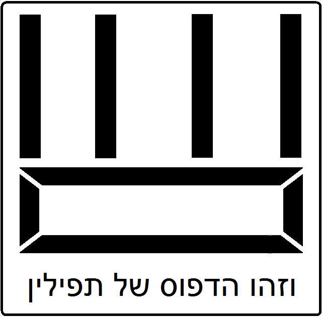
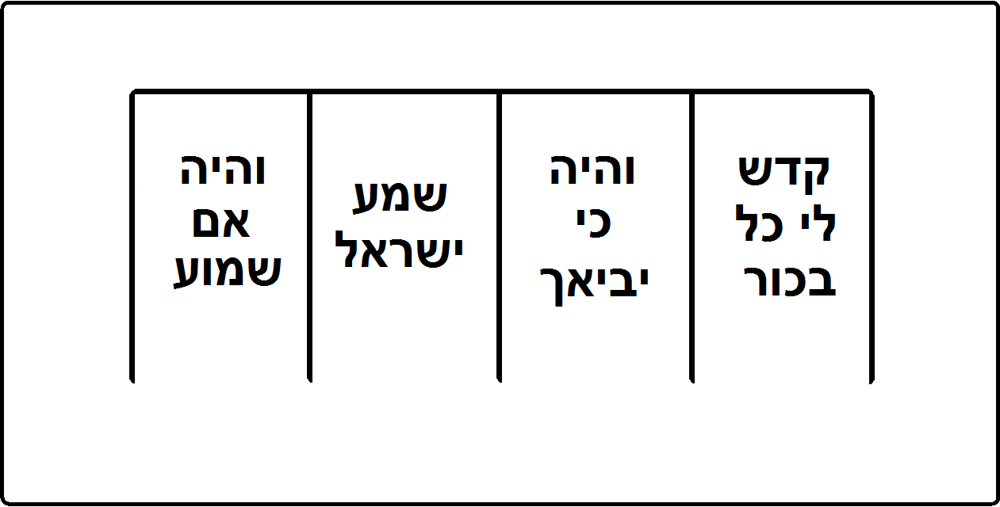

הלכות קריאת שמע הלכות תפלה הלכות תפילין ומזוזה וספר תורה הלכות ציצית הלכות ברכות הלכות מילה סדר תפלות כל השנה
הלכות קריאת שמע הלכות תפלה הלכות תפילין ומזוזה וספר תורה הלכות ציצית הלכות ברכות הלכות מילה סדר תפלות כל השנה הלכות קריאת שמע
| פרק ראשון פרק שני פרק שלישי פרק רביעי |
הלכות תפלה
| פרק ראשון פרק שני פרק שלישי פרק רביעי פרק חמישי פרק ששי פרק שביעי פרק שמיני פרק תשיעי פרק עשירי פרק אחד עשר פרק שנים עשר פרק שלשה עשר פרק ארבעה עשר פרק חמשה עשר |
הלכות תפילין ומזוזה וספר תורה
| פרק ראשון פרק שני פרק שלישי פרק רביעי פרק חמישי פרק ששי פרק שביעי פרק שמיני פרק תשיעי פרק עשירי |
הלכות ציצית
| פרק ראשון פרק שני פרק שלישי |
הלכות ברכות
| פרק ראשון פרק שני פרק שלישי פרק רביעי פרק חמישי פרק ששי פרק שביעי פרק שמיני פרק תשיעי פרק עשירי פרק אחד עשר |
הלכות מילה
| פרק ראשון פרק שני פרק שלישי |
סדר תפלות כל השנה
| תפילת שחרית נוסח ברכות התפלה וסידורן נוסח הקדיש וזהו נוסח כל הברכות האמצעיות נוסח הוידוי נוסח ברכת המזון המפטיר בנביא |
ספר אהבה והוא ספר שני - הלכותיו שש. וזהו סדורן. הלכות קריאת שמע. הלכות תפלה וברכת כהנים. הלכות תפילין ומזוזה וספר תורה. הלכות ציצית. הלכות ברכות. הלכות מילה. והמצות הנכללים בהם מפורשים בשמותם במקומם:
הלכות קריאת שמע
מצות עשה אחת והיא לקרות קריאת שמע פעמים ביום. וביאור מצוה זו בפרקים אלו:
הלכות קריאת שמע - פרק ראשון
א פעמים בכל יום קוראין ק''ש בערב ובבקר. שנאמר (דברים ו-ז) ''ובשכבך ובקומך'' בשעה שדרך בני אדם שוכבין וזה הוא לילה. ובשעה שדרך בני אדם עומדין וזה הוא יום: ב ומה הוא קורא שלשה פרשיות אלו הן (דברים ו-ד) ''שמע'' (דברים יא-יג) ''והיה אם שמוע'' (במדבר טו-לז) ''ויאמר''. ומקדימין לקרות פרשת שמע מפני שיש בה יחוד השם ואהבתו ותלמודו שהוא העיקר הגדול שהכל תלוי בו. ואחריה והיה אם שמוע שיש בה צווי על (זכירת) שאר כל המצות. ואחר כך פרשת (במדבר טו-לח) ''ציצית'' שגם היא יש בה צווי זכירת כל המצות: ג אע''פ שאין מצות ציצית נוהגת בלילה קוראין אותה בלילה מפני שיש בה זכרון יציאת מצרים ומצוה להזכיר יציאת מצרים ביום ובלילה שנאמר (דברים טז-ג) ''למען תזכור את יום צאתך מארץ מצרים כל ימי חייך''. וקריאת שלש פרשיות אלו על סדר זה היא הנקראת קריאת שמע: ד הקורא קריאת שמע כשהוא גומר פסוק ראשון אומר בלחש ברוך שם כבוד מלכותו לעולם ועד וחוזר וקורא כדרכו (דברים ו-ה) ''ואהבת את יי' אלהיך'' עד סופה. ולמה קורין כן מסורת היא בידינו שבשעה שקבץ יעקב אבינו את בניו במצרים בשעת מיתתו ציום וזרזם על יחוד השם ועל דרך ה' שהלך בה אברהם ויצחק אביו ושאל אותם ואמר להם בני שמא יש בכם פסלות מי שאינו עומד עמי ביחוד השם כענין שאמר לנו משה רבינו (דברים כט-יז) ''פן יש בכם איש או אשה'' וגו' ענו כולם ואמרו (דברים ו-ד) ''שמע ישראל יי' אלהינו יי' אחד'', כלומר שמע ממנו אבינו ישראל יי' אלהינו יי' אחד, פתח הזקן ואמר ברוך שם כבוד מלכותו לעולם ועד. לפיכך נהגו כל ישראל לומר שבח ששבח בו ישראל הזקן אחר פסוק זה: ה הקורא קריאת שמע מברך לפניה ולאחריה. ביום מברך שתים לפניה ואחת לאחריה. ובלילה מברך שתים לפניה ושתים לאחריה: ו ברכה ראשונה שלפניה ביום יוצר אור ובורא חשך וכו' וברכה שנייה אהבת עולם אהבתנו. ושל אחריה אמת ויציב. וברכה ראשונה שלפניה בלילה מעריב ערבים וכו' שנייה לה אהבת עולם בית ישראל עמך אהבת כו'. וברכה ראשונה של אחריה אמת ואמונה. שנייה לה השכיבנו: ז ברכה ראשונה שלפניה בין ביום בין בלילה פותח בה בברוך וחותם בה בברוך. ושאר ברכותיה חותם בכל אחת מהן בברוך ואין להם פתיחה בברוך. ברכות אלו עם שאר כל הברכות הערוכות בפי כל ישראל עזרא הסופר ובית דינו תקנום ואין אדם רשאי לפחות מהם ולא להוסיף עליהם. מקום שהתקינו לחתום בברוך אינו רשאי שלא לחתום. ומקום שהתקינו שלא לחתום אינו רשאי לחתום. מקום שהתקינו שלא לפתוח בברוך אינו רשאי לפתוח. מקום שהתקינו לפתוח אינו רשאי שלא לפתוח. כללו של דבר כל המשנה ממטבע שטבעו חכמים בברכות הרי זה טועה וחוזר ומברך כמטבע. וכל שאינו אומר אמת ויציב בשחרית ואמת ואמונה בערבית לא יצא ידי חובתו: ח הקדים ברכה שנייה לברכה ראשונה בין ביום בין בלילה בין לפניה בין לאחריה יצא לפי שאין סדר בברכות. בשחרית פתח יוצר אור וסיים מעריב ערבים לא יצא. פתח במעריב ערבים וסיים ביוצר אור יצא. ובערב פתח במעריב ערבים וסיים ביוצר אור לא יצא. פתח ביוצר אור וסיים במעריב ערבים יצא שכל הברכות הולכות אחר חתימתן: ט אי זהו זמן קריאת שמע בלילה מצותה משעת יציאת הכוכבים עד חצי הלילה. ואם עבר ואיחר וקרא עד שלא עלה עמוד השחר יצא ידי חובתו שלא אמרו עד חצות אלא כדי להרחיק אדם מן הפשיעה: י הקורא קריאת שמע של ערבית אחר שיעלה עמוד השחר קודם הנץ החמה לא יצא ידי חובתו אלא אם כן היה אנוס כגון שכור או חולה וכיוצא בהן. ואנוס שקרא בעת זה אינו אומר השכיבנו: יא ואי זה הוא זמנה ביום מצותה שיתחיל לקרות קודם הנץ החמה כדי שיגמור לקרות ולברך ברכה אחרונה עם הנץ החמה. ושיעור זה כמו [עישור] שעה קודם שתעלה השמש ואם איחר וקרא קריאת שמע אחר שתעלה השמש יצא ידי חובתו שעונתה עד סוף שלש שעות ביום למי שעבר ואיחר: יב מי שהקדים וקרא קריאת שמע של שחרית אחר שיעלה עמוד השחר אע''פ שהשלים קודם שתנץ החמה יצא ידי חובתו. ובשעת הדחק כגון שהיה משכים לצאת לדרך קורא לכתחלה משעלה עמוד השחר: יג הקורא אחר שלש שעות ביום אפילו היה אנוס לא יצא ידי חובת קריאת שמע בעונתו. אלא הרי הוא כקורא בתורה. ומברך לפניה ולאחריה כל היום אפילו איחר וקרא אחר שלש שעות:
הלכות קריאת שמע - פרק שני
א הקורא את שמע ולא כיון לבו בפסוק ראשון שהוא (דברים ו-ד) ''שמע ישראל'' לא יצא ידי חובתו והשאר אם לא כיון לבו יצא. אפי' היה קורא בתורה כדרכו או מגיה את הפרשיות האלו בעונת קריאה יצא והוא שכיון לבו בפסוק ראשון: ב כל אדם קורין כדרכן בין עומדין בין מהלכין בין שוכבין בין רוכבין על גבי בהמה. ואסור לקרות קריאת שמע והוא מוטל ופניו טוחות בקרקע או מושלך על גבו ופניו למעלה. אבל קורא הוא והוא שוכב על צדו. ואם היה בעל בשר הרבה ואינו יכול להתהפך על צדו או שהיה חולה נוטה מעט לצדו וקורא: ג מי שהיה מהלך על רגליו עומד בפסוק ראשון והשאר קורא והוא מהלך היה ישן מצערין אותו ומעירין אותו עד שיקרא פסוק ראשון ומכאן ואילך אם אנסתו שינה אין מצערין אותו: ד מי שהיה עוסק במלאכה מפסיק עד שיקרא פרשה ראשונה כולה. וכן האומנין בטלין ממלאכתן בפרשה ראשונה כדי שלא תהא קריאתן עראי והשאר קורא הוא כדרכו ועוסק במלאכתו. אפילו היה עומד בראש האילן או בראש הכותל קורא במקומו ומברך לפניה ולאחריה: ה היה עוסק בתלמוד תורה והגיע זמן קריאת שמע פוסק וקורא ומברך לפניה ולאחריה. היה עוסק בצרכי רבים לא יפסוק אלא יגמור עסקיהן ויקרא אם נשאר עת לקרות: ו היה עוסק באכילה או שהיה במרחץ או שהיה עוסק בתספורת או שהיה מהפך בעורות או שהיו עוסקין בדין גומר ואחר כך קורא קריאת שמע. ואם היה מתיירא שמא יעבור זמן קריאה ופסק וקרא הרי זה משובח: ז מי שירד לטבול אם יכול לעלות ולהתכסות קודם שתנץ החמה יעלה ויתכסה ויקרא. ואם היה מתיירא שמא תנץ החמה קודם שיקרא יתכסה במים שהוא עומד בהן ויקרא. ולא יתכסה לא במים הרעים שריחן רע ולא במי המשרה ולא במים צלולין מפני שערותו נראית בהן. אבל מתכסה הוא במים עכורין שאין ריחן רע וקורא במקומו: ח הקורא קריאת שמע לא ירמוז בעיניו ולא יקרוץ בשפתיו ולא יראה באצבעותיו כדי שלא תהיה קריאתו עראי. ואם עשה כן אע''פ שיצא ידי חובתו הרי זה מגונה. וצריך להשמיע לאזנו כשהוא קורא ואם לא השמיע לאזנו יצא. וצריך לדקדק באותיותיו ואם לא דקדק יצא: ט כיצד ידקדק ישמור שלא ירפה החזק ולא יחזיק הרפה ולא יניח הנד ולא יניד הנח. לפיכך צריך ליתן ריוח בין הדבקים בין כל שתי אותיות הדומות שאחת מהן סוף תיבה והאחרת תחלת תיבה הסמוכה לה. כגון בכל לבבך קורא בכל ושוהה וחוזר וקורא לבבך. וכן ואבדתם מהרה. הכנף פתיל. וצריך לבאר זיי''ן של תזכרו. וצריך להאריך בדל''ת של אחד כדי שימליכהו בשמים ובארץ ובארבע רוחות. וצריך שלא יחטוף בחי''ת כדי שלא יהא כאומר אי חד: י קורא אדם את שמע בכל לשון שיהיה מבינה. והקורא בכל לשון צריך להזהר מדברי שבוש שבאותו הלשון ומדקדק באותו הלשון כמו שמדקדק בלשון הקדש: יא הקורא למפרע לא יצא. במה דברים אמורים בסדר הפסוקים אבל אם הקדים פרשה לפרשה אף ע''פ שאינו רשאי אני אומר שיצא לפי שאינה סמוכה לה בתורה. קרא פסוק וחזר וקראו פעם שנייה הרי זה מגונה. קרא מלה אחת וכפלה כגון שקרא שמע שמע משתקין אותו: יב קראה סירוגין יצא. אפילו שהה בין סירוג לסירוג כדי לגמור את כולה יצא. והוא שיקרא על הסדר. קראה מתנמנם והוא מי שאינו ער ולא נרדם בשינה יצא. ובלבד שיהיה ער בפסוק ראשון: יג ספק קרא קריאת שמע ספק לא קרא חוזר וקורא ומברך לפניה ולאחריה. אבל אם ידע שקרא ונסתפק לו אם בירך לפניה ולאחריה או לא בירך אינו חוזר ומברך. קרא וטעה יחזור למקום שטעה. נעלם ממנו בין פרשה לפרשה ואינו יודע אי זו פרשה השלים ואי זו צריך להתחיל חוזר לפרשה ראשונה שהוא (דברים ו-ה) ''ואהבת את יי אלהיך'' וגו': יד טעה באמצע הפרק ואינו יודע להיכן פסק חוזר לראש הפרק. היה קורא וכתבתם ואינו יודע אם הוא בוכתבתם של שמע או בוכתבתם שבוהיה אם שמוע חוזר לוכתבתם של שמע. ואם נסתפק לו אחר שקרא למען ירבו ימיכם אינו חוזר שעל הרגל לשונו הוא הולך: טו היה קורא ופגע באחרים או פגעו בו אחרים. אם היה בין פרק לפרק פוסק ומתחיל ושואל שלום מי שהוא חייב בכבודו כגון שפגע באביו או רבו או מי שהוא גדול ממנו בחכמה. ומשיב שלום לכל אדם שנתן לו שלום: טז היה קורא באמצע הפרשה אינו פוסק ומתחיל לשאול אלא בשלום מי שהוא מתיירא ממנו כגון מלך או אנס וכיוצא בהן. אבל מי שהוא חייב בכבודו כגון אביו או רבו אם נתן לו שלום תחלה פוסק ומשיב לו שלום: יז ואלו הן בין הפרקים. בין ברכה ראשונה לשנייה. בין שנייה לשמע. בין שמע לוהיה אם שמוע. בין והיה אם שמוע לויאמר. בין הפרקים האלו שואל מפני הכבוד ומשיב שלום לכל אדם. אבל בין ויאמר לאמת ויציב הרי זה כאמצע הפרק ולא יפסיק אלא לשאול מפני היראה ולהשיב מפני הכבוד:
הלכות קריאת שמע - פרק שלישי
א הקורא את שמע רוחץ ידיו במים קודם שיקרא. הגיע זמן קריאתה ולא מצא מים קודם שיקרא לא יאחר קריאתה וילך לבקש מים אלא מקנח ידיו בעפר או בצרור או בקורה וכיוצא בהן וקורא: ב אין קורין לא בבית המרחץ ולא בבית הכסא אע''פ שאין בו צואה ולא בבית הקברות ולא בצד המת עצמו ואם הרחיק ארבע אמות מן הקבר או מן המת מותר לקרות. וכל מי שקרא במקום שאין קורין בו חוזר וקורא: ג בית הכסא החדש שהוכן ועדיין לא נשתמש בו מותר לקרות קריאת שמע לנגדו אבל לא בתוכו. מרחץ החדש מותר לקרות בתוכו. היו שני בתים זימן אחד מהם לבית הכסא ואמר על השני וזה. הרי השני ספק אם הזמינו לכך אם לא. לפיכך אין קורין בו לכתחלה ואם קרא יצא. אמר גם זה הרי שניהם מזומנין ואין קוראין בהן. חצר המרחץ והוא המקום שבני אדם עומדין בו לבושין מותר לקרות בו קריאת שמע: ד ולא קריאת שמע בלבד אלא כל ענין שהוא מדברי הקדש אסור לאומרו בבית המרחץ ובבית הכסא ואפילו אמרו בלשון חול. ולא לאמרו בלבד אלא אפילו להרהר בלבו בדברי תורה [בבית הכסא ובבית המרחץ ובמקום הטנופת והוא המקום שיש בו צואה ומי רגלים אסור: ה דברים של חול מותר לאמרן בלשון קדש בבית הכסא. וכן הכנויים כגון רחום וחנון ונאמן וכיוצא בהן מותר לאמרן בבית הכסא. אבל השמות המיוחדים והן השמות שאינן נמחקין אסור להזכירן בבית הכסא ובבית המרחץ ישן. ואם נזדמן לו להפריש מן דבר האסור בבית המרחץ או בבית הכסא מפריש ואפילו בלשון קודש ובעניני קודש: ו צואת האדם וצואת כלבים וחזירין בזמן שיש בתוכן עורות וכל צואה שריחה רע כגון אלו אסור לקרות קריאת שמע כנגדן. וכן כנגד מי רגלים של אדם. אבל מי רגלים של בהמה קורין כנגדן. קטן שאינו יכול לאכול כזית דגן בכדי שיאכל הגדול כשלשה ביצי דגן אין מרחיקין לא מצואתו ולא ממי רגליו: ז היתה צואה יבשה כחרש אסור לקרות כנגדה. ואם היתה יבשה יותר מחרש עד שאם זרקה תתפרך הרי היא כעפר ומותר לקרות כנגדה. מי רגלים שנבלעו בקרקע אם היו מרטיבין היד אסור לקרות כנגדן ואם לאו מותר: ח כמה ירחיק אדם מצואה וממי רגלים ואחר כך יקרא ארבע אמות. במה דברים אמורים בזמן שהם מלאחוריו או מצדיו אבל אם היו כנגד פניו מרחיק מהן עד שלא יראה אותן ואחר כך יקרא: ט במה דברים אמורים כשהיה עמהן בבית במקום שוה אבל אם היה שם מקום גבוה מהן עשרה טפחים או נמוך מהם עשרה טפחים יושב בצד המקום וקורא שהרי נפסל ביניהם. והוא שלא יגיע לו ריח רע. וכן אם כפה כלי על הצואה או על מימי רגלים אף על פי שהן עמו בבית הרי אלו כקבורין ומותר לקרות כנגדן: י היה בינו ובין הצואה מחיצה של זכוכית אף על פי שהוא רואה אותה מאחרי הזכוכית מותר לקרות בצדה. נתן רביעית מים לתוך מי רגלים של פעם אחת מותר לקרות עמהן בתוך ד' אמות: יא היתה צואה בגומא עומד בסנדלו על הגומא וקורא. והוא שלא יהיה סנדלו נוגע בה: היתה כנגדו צואה מעוטה ביותר כמו טיפה רוקק עליה רוק עבה עד שתתכסה וקורא. היתה נטישת צואה על בשרו או ידיו מטונפות מבית הכסא ולא היה להן ריח רע כלל מפני קוטנן או יבשותן מותר לקרות לפי שאין להן ריח רע. אבל אם היתה במקומה אף ע''פ שאינה נראית כשהוא עומד הואיל ונראית כשהוא יושב אסור לקרות עד שיקנח יפה יפה מפני שהצואה לחה היא ויש לה ריח רע. וכמה גאונים הורו שאסור לו לקרות אם היו ידיו מטונפות וכך ראוי לעשות: יב ריח רע שיש לו עיקר מרחיק ד' אמות וקורא אם פסק הריח ואם לא פסק הריח מרחיק עד מקום שפסק הריח. ושאין לו עיקר כגון מי שיצא ממנו רוח מלמטה מרחיק עד מקום שתכלה הריח וקורא. גרף של רעי ועביט של מימי רגלים אסור לקרות קריאת שמע כנגדן ואע''פ שאין בהן כלום ואין להם ריח רע מפני שהם כבית הכסא: יג צואה עוברת כגון שהיתה שטה על פני המים אסור לקרות כנגדה. ופי חזיר כצואה עוברת דמי ואסור לקרות כנגדו עד שיעברו ממנו ארבע אמות: יד היה קורא והגיע למקום הטנופת לא יניח ידו על פיו ויקרא אלא יפסיק עד שיעבור מאותו מקום. וכן הקורא שיצתה ממנו רוח מלמטה יפסיק עד שתכלה באשה וחוזר לקריאתו. וכן בדברי תורה. יצתה רוח מחבירו אע''פ שמפסיק לקריאת שמע אינו פוסק לדברי תורה: טו היה קורא קריאת שמע בבית ונסתפק לו אם יש שם צואה או מימי רגלים או אין שם הרי זה מותר לקרות. היה קורא באשפה ונסתפק לו אם יש שם צואה או אין שם לא יקרא עד שיבדוק שחזקת האשפה שהיא מקום הטנופת. אבל ספק מי רגלים אפילו באשפה מותר לקרות: טז כשם שאסור לקרות כנגד צואה ומי רגלים עד שירחיק כך אסור לקרות כנגד הערוה עד שיחזיר פניו אפילו כותי או קטן לא יקרא כנגד ערותן אפילו מחיצה של זכוכית מפסקת הואיל והוא רואה אותה אסור לקרות עד שיחזיר פניו. וכל גוף האשה ערוה לפיכך לא יסתכל בגוף האשה כשהוא קורא ואפילו אשתו ואם היה מגולה טפח מגופה לא יקרא כנגדה: יז וכשם שהוא אסור כנגד ערות אחרים כך הוא אסור לקרות כנגד ערותו ולא יקרא כשהוא ערום עד שיכסה ערותו. היתה חגורה של בגד או עור או שק על מתניו אע''פ ששאר גופו ערום מותר לו לקרות קריאת שמע והוא שלא יהיה עקבו נוגע בערותו. היה ישן בטליתו והיה ערום חוצץ בטליתו מתחת לבו וקורא. אבל לא יחוץ צוארו ויקרא מפני שלבו רואה את הערוה ונמצא כמי שקורא בלא חגורה: יח שנים שהיו ישנים בטלית אחת כל אחד מהן אסור לקרות אף על פי שיכסה מתחת לבו עד שתהא טלית מפסקת ביניהן עד שלא יגע בשר זה בבשר זה ממתניו ולמטה. ואם היה ישן עם אשתו או בניו ובני ביתו הקטנים הרי גופן כגופו ואינו מרגיש מהן. לפיכך אע''פ שבשרו נוגע בהם מחזיר פניו וחוצץ מתחת לבו וקורא: יט עד אימתי הם קטנים לענין זה עד שיהא הזכר בן שתים עשרה שנה ויום אחד והנקבה בת אחת עשרה שנה ויום אחד והוא שיהא תבניתם כתבנית גדולים (יחזקאל טז-ז) ''שדים נכונו ושערך צמח'' ואחר כך לא יקרא עד שתפסיק טלית ביניהן. אבל אם עדיין לא היו שדים נכונו ושערך צמח קורא עמהן בקירוב בשר ואינו צריך הפסק עד שיהיה הזכר בן י''ג שנה ויום אחד והנקבה בת שתים עשרה שנה ויום אחד:
הלכות קריאת שמע - פרק רביעי
א נשים ועבדים וקטנים פטורים מקריאת שמע. ומלמדין את הקטנים לקרותה בעונתה ומברכין לפניה ולאחריה כדי לחנכן במצות. מי שהיה לבו טרוד ונחפז לדבר מצוה פטור מכל המצות ומקריאת שמע. לפיכך חתן שנשא בתולה פטור מקריאת שמע עד שיבא עליה. לפי שאין דעתו פנויה שמא לא ימצא לה בתולים. ואם שהה עד מוצאי שבת ולא בעל חייב לקרות ממוצאי שבת ואילך שהרי נתקררה דעתו ולבו גס בה אע''פ שלא בעל: ב אבל הנושא את הבעולה אע''פ שעוסק במצוה חייב לקרות הואיל ואין לו דבר שמבלבל דעתו וכן כל כיוצא בזה: ג מי שמת לו מת שהוא חייב להתאבל עליו פטור מקריאת שמע עד שיקברנו מפני שאין דעתו פנויה לקרות. ואם היה משמר את המת אע''פ שאינו מתו פטור מקריאת שמע. ואם היו השומרים שנים האחד משמר והשני נשמט למקום אחר וקורא וחוזר ומשמר ונשמט האחר וקורא. וכן החופר קבר למת פטור מקריאת שמע: ד אין מוציאין את המת לקוברו סמוך לזמן קריאת שמע אלא אם כן היה אדם גדול. ואם התחילו והוציאו והגיע זמן הקריאה והן מלוין את המת. כל שיש למטה צורך בהן כגון נושאי המטה וחילופיהן וחילופי חילופיהן בין שהיו לפני המטה בין שהיו לאחר המטה פטורין. ושאר המלוין שאין למטה צורך בהן חייבין: ה היו עסוקים בהספד והגיע זמן קריאת שמע בזמן שהמת מונח לפניהן נשמטים אחד אחד וקוראין וחוזרין להספד. אין המת מוטל לפניהם כל העם קורין קריאת שמע והאבל יושב ודומם לפי שאינו חייב לקרות עד שיקבור את מתו: ו קברו את המת וחזרו האבלים לקבל תנחומין וכל העם הולכים אחריהם ממקום הקבר למקום שעומדים בו האבלים לעשות שורה לקבל תנחומין אם יכולין העם להתחיל ולגמור אפילו פסוק אחד קודם שיגיעו לשורה יתחילו ואם לאו לא יתחילו אלא ינחמו את האבלים ואחר שיפטרו מהן יתחילו לקרות. בני אדם העומדין בשורה הפנימיים שהן רואין פני האבלים פטורין מקריאת שמע והחיצונים הואיל ואינן רואין את האבלים חייבין בקריאת שמע במקומן: ז כל מי שהוא פטור מלקרות קריאת שמע אם רצה להחמיר על עצמו לקרות קורא. והוא שתהא דעתו פנויה עליו. אבל אם היה זה הפטור מלקרות מבוהל אינו רשאי לקרות עד שתתיישב דעתו עליו: ח כל הטמאין חייבין בקריאת שמע ומברכין לפניה ולאחריה והן בטומאתן. אף על פי שאפשר להן לעלות מטומאתן בו ביום כגון הנוגעין בשרץ או בנדה וזבה ומשכבה וכיוצא בהן. ועזרא ובית דינו תקנו שלא יקרא בדברי תורה בעל קרי לבדו והוציאוהו מכלל שאר הטמאין עד שיטבול. ולא פשטה תקנה זו בכל ישראל ולא היה כח ברוב הציבור לעמוד בה לפיכך בטלה. וכבר נהגו כל ישראל לקרות בתורה ולקרות קריאת שמע והן בעלי קריין לפי שאין דברי תורה מקבלין טומאה אלא עומדין בטהרתן לעולם שנאמר (ירמיה כג-כט) ''הלא כה דברי כאש נאם יי''' מה אש אינה מקבלת טומאה אף דברי תורה אינם מקבלין טומאה:
הלכות תפלה
הלכות תפלה - פרק ראשון
א מצות עשה להתפלל בכל יום שנאמר (שמות כג-כה) ''ועבדתם את יי אלהיכם''. מפי השמועה למדו שעבודה זו היא תפלה שנאמר (דברים יא-יג) ''ולעבדו בכל לבבכם'' אמרו חכמים אי זו היא עבודה שבלב זו תפלה. ואין מנין התפלות מן התורה. ואין משנה התפלה הזאת מן התורה. ואין לתפלה זמן קבוע מן התורה: ב ולפיכך נשים ועבדים חייבין בתפלה לפי שהיא מצות עשה שלא הזמן גרמא אלא חיוב מצוה זו כך הוא שיהא אדם מתחנן ומתפלל בכל יום ומגיד שבחו של הקדוש ברוך הוא ואחר כך שואל צרכיו שהוא צריך להם בבקשה ובתחנה ואחר כך נותן שבח והודיה לה' על הטובה שהשפיע לו כל אחד לפי כחו: ג אם היה רגיל מרבה בתחנה ובקשה ואם היה ערל שפתים מדבר כפי יכלתו ובכל עת שירצה. וכן מנין התפלות כל אחד כפי יכלתו. יש מתפלל פעם אחת ביום. ויש מתפללין פעמים הרבה. והכל יהיו מתפללין נכח המקדש בכל מקום שיהיה. וכן היה הדבר תמיד ממשה רבינו ועד עזרא: ד כיון שגלו ישראל בימי נבוכדנצר הרשע נתערבו בפרס ויון ושאר האומות ונולדו להם בנים בארצות הגוים ואותן הבנים נתבלבלו שפתם והיתה שפת כל אחד ואחד מעורבת מלשונות הרבה וכיון שהיה מדבר אינו יכול לדבר כל צורכו בלשון אחת אלא בשיבוש שנאמר (נחמיה יג-כד) ''ובניהם חצי מדבר אשדודית'' וגו' (נחמיה יג-כד) ''ואינם מכירים לדבר יהודית וכלשון עם ועם'' ומפני זה כשהיה אחד מהן מתפלל תקצר לשונו לשאול חפציו או להגיד שבח הקדוש ברוך הוא בלשון הקדש עד שיערבו עמה לשונות אחרות. וכיון שראה עזרא ובית דינו כך עמדו ותקנו להם שמנה עשרה ברכות על הסדר. שלש ראשונות שבח לה' ושלש אחרונות הודיה. ואמצעיות יש בהן שאלת כל הדברים שהן כמו אבות לכל חפצי איש ואיש ולצרכי הציבור כולן. כדי שיהיו ערוכות בפי הכל וילמדו אותן ותהיה תפלת אלו העלגים תפלה שלימה כתפלת בעלי הלשון הצחה. ומפני ענין זה תקנו כל הברכות והתפלות מסודרות בפי כל ישראל כדי שיהא ענין כל ברכה ערוך בפי העלג: ה וכן תקנו שיהא מנין התפלות כמנין הקרבנות. שתי תפלות בכל יום כנגד שני תמידין וכל יום שיש קרבן מוסף תקנו בו תפלה שלישית כנגד קרבן מוסף. ותפלה שהיא כנגד תמיד של בקר היא הנקראת תפלת השחר. ותפלה שכנגד תמיד של בין הערבים היא הנקראת תפלת מנחה ותפלה שכנגד המוספין היא נקראת תפלת המוספין: ו וכן התקינו שיהא אדם מתפלל תפלה אחת בלילה שהרי איברי תמיד של בין הערבים מתעכלין והולכין כל הלילה שנאמר (ויקרא ו-ב) ''היא העולה'' וגו' כענין שנאמר (תהילים נה-יח) ''ערב ובקר וצהרים אשיחה ואהמה וישמע קולי''. ואין תפלת ערבית חובה כתפלת שחרית ומנחה. ואף ע''פ כן נהגו כל ישראל בכל מקומות מושבותיהם להתפלל ערבית וקבלוה עליהם כתפלת חובה: ז וכן תקנו תפלה אחר תפלת מנחה סמוך לשקיעת החמה ביום התענית בלבד כדי להוסיף תחנה ובקשה מפני התענית וזו היא התפלה הנקראת תפלת נעילה כלומר ננעלו שערי שמים בעד השמש ונסתרה לפי שאין מתפללין אותה אלא סמוך לשקיעת החמה: ח נמצאו התפילות בכל יום שלש. ערבית ושחרית ומנחה. ובשבתות ובמועדים ובראשי חדשים ארבע. שלש של כל יום ותפלת המוספין וביום. הכיפורים חמש. ארבע אלו ותפלת נעילה: ט תפלות אלו אין פוחתין מהן אבל מוסיפין עליהם. אם רצה אדם להתפלל כל היום כולו הרשות בידו. וכל אותן התפלות שיוסיף כמו מקריב נדבות לפיכך צריך שיחדש דבר בכל ברכה וברכה מן האמצעיות מעין הברכות. ואם חידש אפילו בברכה אחת דיו כדי להודיע שהיא נדבה ולא חובה. ושלש ראשונות ושלש אחרונות לעולם אין מוסיפין בהן ולא פוחתין מהן ואין משנין בהן דבר: י אין הציבור מתפללין תפלת נדבה לפי שאין הציבור מביאין קרבן נדבה. ולא יתפלל אפילו יחיד מוסף שתים אחת חובת היום ואחת נדבה לפי שאין מתנדבין קרבן מוסף. ויש מן הגאונים מי שהורה שאסור להתפלל תפלת נדבה בשבתות וימים טובים לפי שאין מקריבין בהן נדבה אלא חובת היום בלבד:
הלכות תפלה - פרק שני
א בימי ר''ג רבו האפיקורוסין בישראל והיו מצירים לישראל ומסיתין אותן לשוב מאחרי השם. וכיון שראה שזו גדולה מכל צרכי בני אדם עמד הוא ובית דינו והתקין ברכה אחת שתהיה בה שאלה מלפני השם לאבד האפיקורוסין וקבע אותה בתפלה כדי שתהיה ערוכה בפי הכל. נמצאו כל הברכות שבתפלה תשע עשרה ברכות: ב בכל תפלה שבכל יום מתפלל אדם תשע עשרה ברכות אלו על הסדר. במה דברים אמורים כשמצא דעתו מכוונת ולשונו תמהר לקרות אבל אם היה טרוד ודחוק או שקצרה לשונו מהתפלל יתפלל שלש ראשונות וברכה אחת מעין כל האמצעיות ושלש אחרונות ויצא ידי חובתו: ג וזוהי הברכה שתקנו מעין כל האמצעיות. הביננו יי אלהינו לדעת את דרכיך ומול את לבבנו ליראתך לסלוח היה לנו להיות גאולים רחקנו ממכאוב ודשננו ושכננו בנאות ארצך ונפוצים מארבע תקבץ והתועים בדעתך ישפטו ועל הרשעים תניף ידך וישמחו צדיקים בבנין עירך ובתיקון היכלך ובצמיחת קרן לדוד עבדך ובעריכת נר לבן ישי משיחך טרם נקרא אתה תענה כדבר שנאמר (ישעיה סה-כד) ''והיה טרם יקראו ואני אענה עוד הם מדברים ואני אשמע'' כי אתה הוא עונה בכל עת פודה ומציל מכל צוקה ברוך אתה יי שומע תפלה: ד במה דברים אמורים בימות החמה. אבל בימות הגשמים אינו מתפלל הביננו מפני שצריך לומר שאלה בברכת השנים. וכן במוצאי שבתות וימים טובים אינו מתפלל הביננו מפני שצריך לומר הבדלה בחונן הדעת: ה ובשבתות ובימים טובים מתפלל שבע ברכות בכל תפלה ותפלה מארבע תפלות של אותו היום. שלש ראשונות ושלש אחרונות וברכה אמצעית מעין אותו היום. בשבתות חותמין בברכה אמצעית מקדש השבת. וברגלים חותם בה מקדש ישראל והזמנים. ואם היה שבת ויום טוב חותמים בה מקדש השבת וישראל והזמנים. בראש השנה חותמין בה מלך על כל הארץ מקדש ישראל ויום הזכרון. ואם היה שבת חותם בה מלך על כל הארץ מקדש השבת וישראל ויום הזכרון: ו במה דברים אמורים בתפלת ערבית ושחרית ומנחה. אבל תפלת המוספין של ראש השנה מתפלל תשע ברכות שלש ראשונות ושלש אחרונות של כל יום ושלש אמצעיות. ראשונה מן האמצעיות ענינה מלכיות. שנייה זכרונות. שלישית שופרות. וחותם בכל אחת מהן מעניינה: ז ביום הכפורים מתפלל בכל תפלה מחמש תפלות שבע ברכות. שלש ראשונות ושלש אחרונות ואמצעיות מעין היום. וחותם בכל אחת מהן מלך על כל הארץ מקדש ישראל ויום הכפורים. ואם חל להיות בשבת חותם בכל תפלה מהן מלך על כל הארץ מקדש השבת וישראל ויום הכפורים: ח במה דברים אמורים ביום צום של כל שנה ושנה אבל ביום צום של שנת היובל מתפלל תפלת המוספים תשע ברכות כמו שהתפלל במוסף ראש השנה והם אותן הברכות עצמן לא פחות ולא יותר ואין מתפללין אותן אלא בזמן שהיובל נוהג: ט בכל תפלה מהתפלות פותח קודם לברכה ראשונה (תהילים נא-יז) ''יי' שפתי תפתח ופי יגיד תהלתך''. וכשהוא חותם בסוף התפלה אומר (תהילים יט-טו) ''יהיו לרצון אמרי פי'' וגו' ואח''כ צועד לאחוריו: י בראשי חדשים ובחולו של מועד מתפלל ערבית שחרית ומנחה תשע עשרה ברכות כשאר הימים ואומר בעבודה אלהינו ואלהי אבותינו יעלה ויבוא. במוסף בחולו של מועד מתפלל תפלת המוסף כמו שמתפלל ביום טוב. ובראשי חדשים מתפלל שבע ברכות שלש ראשונות ושלש אחרונות ואמצעית מעין קרבן ראש חדש וחותם בה מקדש ישראל וראשי חדשים: יא שבת שחלה בחולו של מועד וכן ראש חדש שחל להיות בשבת מתפלל ערבית ושחרית ומנחה שבע ברכות כשאר השבתות ואומר יעלה ויבא בעבודה. במוסף מתחיל בברכה אמצעית בענין שבת ומשלים בענין שבת ואומר קדושת היום באמצע ברכה וחותם בה בראשי חדשים מקדש השבת וישראל וראשי חדשים. ובחולו של מועד חותם בה כמו שהוא חותם ביום טוב שחל להיות בשבת: יב ויום טוב שחל להיות באחד בשבת מתפלל בברכה רביעית בלילה ותודיענו משפטי צדקך ותלמדנו לעשות חוקי רצונך ותתן לנו יי' אלהינו קדושת שבת וכבוד מועד וחגיגת הרגל בין קדושת שבת לקדושת יום טוב הבדלת ואת יום השביעי מששת ימי המעשה הקדשת (והבדלת והקדשת את עמך ישראל בקדושתך) ותתן לנו יי' אלהינו מועדים לשמחה חגים וזמנים לששון וכו'. ובמוצאי שבת ובמוצאי יום טוב של כל השנה מבדיל באתה חונן אף על פי שהוא מבדיל על הכוס: יג בחנוכה ובפורים מוסיפין בהודאה על הניסים. שבת שחלה להיות בחנוכה מזכיר על הניסים במוסף כמו שמזכיר בשאר תפלות: יד בימי התענית אפילו יחיד שהתענה מוסיף בשומע תפלה עננו וכו'. ושליח ציבור אומרה ברכה בפני עצמה בין גואל לרופא וחותם בה העונה בעת צרה (ומושיע). ונמצא מתפלל עשרים ברכות. בתשעה באב מוסיפין בבונה ירושלים רחם יי' אלהינו עלינו ועל ישראל עמך ועל ירושלים עירך ועל העיר האבילה כו': טו כל ימות הגשמים אומר בברכה שניה מוריד הגשם ובימות החמה מוריד הטל. מאימתי אומר מוריד הגשם מתפלת המוספין של יו''ט האחרון של חג עד תפלת שחרית של יום טוב הראשון של פסח. ומתפלת המוספין של יום טוב הראשון של פסח אומר מוריד הטל: טז משבעה ימים במרחשון שואלין את הגשמים בברכת שנים כל זמן שמזכיר הגשם. במה דברים אמורים בארץ ישראל אבל בשנער ובסוריא ובמצרים ובמקומות הסמוכות לאלו והדומין להן שואלין את הגשמים ביום ששים אחר תקופת תשרי: יז מקומות שהן צריכין לגשמים בימות החמה כגון איי הים הרחוקים שואלין את הגשמים בעת שהן צריכין להן בשומע תפלה. ומקומות שהן עושין יום טוב שני ימים אומר מוריד הגשם בתפלת מוסף של יום ראשון של שמיני עצרת ומתפלל והולך כל ימות הגשמים: יח כל השנה כולה חותם בברכה שלישית האל הקדוש ובברכת עשתי עשרה מלך אוהב צדקה ומשפט ובעשרת הימים שמראש השנה עד מוצאי יום הכפורים חותם בשלישית המלך הקדוש ובעשתי עשרה המלך המשפט: יט יש מקומות שנהגו להוסיף בעשרת ימים אלו בברכה ראשונה זכרנו לחיים כו' ובשנייה מי כמוך אב הרחמים וגו' ובהודאה זכור רחמיך וכו' ומוסיפין בברכה אחרונה בספר חיים וכו'. וכן יש מקומות שנהגו להוסיף בעשרת ימים אלו בברכה שלישית ובכן תן פחדך ובכן כו' אבל בראש השנה וביום הכפורים מנהג פשוט הוא להוסיף בשלישית ובכן תן פחדך וכו':
הלכות תפלה - פרק שלישי
א תפלת השחר מצותה שיתחיל להתפלל עם הנץ החמה וזמנה עד סוף שעה רביעית שהיא שלישית היום. ואם עבר או טעה והתפלל אחר ארבע עד חצות היום יצא ידי חובת תפלה. אבל לא יצא ידי חובת תפלה בזמנה. שכשם שתפלה מצוה מן התורה כך מצוה מדבריהם להתפלל אותה בזמנה כמו שתקנו לנו חכמים ונביאים: ב כבר אמרנו שתפלת המנחה כנגד תמיד של בין הערבים תקנו זמנה. ולפי שהיה התמיד קרב בכל יום בתשע שעות ומחצה תקנו זמנה מתשע שעות ומחצה והיא הנקראת מנחה קטנה ולפי שבערב הפסח שחל להיות בערב שבת היו שוחטין את התמיד בשש שעות ומחצה. אמרו שהמתפלל מאחר שש שעות ומחצה יצא. ומשהגיע זמן זה הגיע זמן חיובה וזו היא הנקראת מנחה גדולה: ג נהגו אנשים הרבה להתפלל גדולה וקטנה והאחת רשות. והורו מקצת הגאונים שאין ראוי להתפלל רשות אלא הגדולה. וכן הדין נותן מפני שהיא כנגד דבר שאינו תדיר בכל יום. ואם התפלל הגדולה חובה לא יתפלל קטנה אלא רשות: ד הא למדת שזמן מנחה גדולה משש שעות ומחצה עד תשע שעות ומחצה. וזמן מנחה קטנה מתשע שעות ומחצה עד שישאר מן היום שעה ורביע. ויש לו להתפלל אותה עד שתשקע החמה: ה תפלת המוספין זמנה אחר תפלת השחר עד שבע שעות ביום. והמתפלל אותה אחר שבע שעות אף ע''פ שפשע יצא ידי חובתו מפני שזמנה כל היום: ו תפלת הערב אף ע''פ שאינה חובה המתפלל אותה זמנה מתחילת הלילה עד שיעלה עמוד השחר. ותפלת נעילה זמנה כדי שישלים אותה סמוך לשקיעת החמה: ז המתפלל תפלה קודם זמנה לא יצא ידי חובתו וחוזר ומתפלל אותה בזמנה. ואם התפלל תפלת שחרית בשעת הדחק אחר שעלה עמוד השחר יצא: ויש לו להתפלל תפלת ערבית של לילי שבת בערב שבת קודם שתשקע החמה. וכן יתפלל ערבית של מוצאי שבת בשבת לפי שתפלת ערבית רשות אין מדקדקין בזמנה. ובלבד שיקרא ק''ש בזמנה אחר צאת הכוכבים: ח כל מי שעבר עליו זמן תפלה ולא התפלל במזיד אין לו תקנה ואינו משלם. בשוגג או שהיה אנוס או טרוד משלם אותה תפלה בזמן תפלה הסמוכה לה. ומקדים תפלה שבזמנה ואחריה מתפלל את התשלומין: ט כיצד טעה ולא התפלל שחרית ועבר חצי היום יתפלל מנחה שתים. ראשונה תפלת מנחה והשנייה תשלומי שחרית. טעה ולא התפלל מנחה עד ששקעה החמה יתפלל ערבית שתים. ראשונה ערבית ושנייה תשלומי מנחה. טעה ולא התפלל ערבית עד שעלה עמוד השחר מתפלל שחרית שתים. ראשונה שחרית והשניה תשלומי ערבית: י טעה ולא התפלל לא תפלה זו ולא תפלה הסמוכה לה אינו משלם אלא אחרונה בלבד. כיצד טעה ולא התפלל לא שחרית ולא מנחה מתפלל ערבית שתים ראשונה ערבית והאחרונה תשלומי מנחה. אבל שחרית אין לה תשלומין שכבר עבר זמנה וכן בשאר תפלות: יא היו לפניו שתי תפלות של מנחה ושל מוספין מתפלל של מנחה ואחר כך מתפלל של מוספין. ויש מי שמורה שאין עושין בציבור כן כדי שלא יטעו:
הלכות תפלה - פרק רביעי
א חמשה דברים מעכבין את התפלה אע''פ שהגיע זמנה. טהרת ידים. וכיסוי הערוה. וטהרת מקום תפלה. ודברים החופזים אותו. וכוונת הלב: ב טהרת ידים כיצד רוחץ ידיו במים עד הפרק ואחר כך יתפלל. היה מהלך בדרך והגיע זמן תפלה ולא היה לו מים אם היה בינו ובין המים ארבעה מילין שהם שמונת אלפים אמה הולך עד מקום המים ורוחץ ואחר כך יתפלל. היה בינו ובין המים יותר על כן מקנח ידיו בצרור או בעפר או בקורה ומתפלל: ג במה דברים אמורים לפניו אבל אם היה מקום המים לאחוריו אין מחייבין אותו לחזור לאחוריו אלא עד מיל. אבל אם עבר מן המים יותר אינו חייב לחזור אלא מקנח ידיו ומתפלל. במה דברים אמורים שאינו מטהר לתפלה אלא ידיו בלבד בשאר תפלות חוץ מתפלת שחרית אבל שחרית רוחץ פניו ידיו ורגליו ואחר כך יתפלל. ואם היה רחוק מן המים מקנח ידיו בלבד ואחר כך יתפלל: ד כל הטמאין רוחצין ידיהן בלבד כטהורין ומתפללים אע''פ שאפשר להם לטבול ולעלות מטומאתן אין הטבילה מעכבת. וכבר בארנו שעזרא תיקן שלא יקרא בעל קרי בלבד בדברי תורה עד שיטבול. ובית דין שעמדו אחר כן התקינו אף לתפלה שלא יתפלל בעל קרי בלבד עד שיטבול. ולא מפני טומאה וטהרה נגעו בה אלא כדי שלא יהיו תלמידי חכמים מצויים אצל נשותיהן כתרנגולים. ומפני זה תקנו טבילה לבעל קרי לבדו והוציאוהו מכלל הטמאין: ה לפיכך היו אומרין בזמן תקנה זו שאפילו זב שראה קרי ונדה שפלטה שכבת זרע ומשמשת שראתה דם נדה צריכין טבילה לקריאת שמע וכן לתפלה מפני הקרי אף על פי שהם טמאין. וכן הדין נותן שאין טבילה זו מפני טהרה אלא מפני הגזירה שלא יהיו מצויין אצל נשותיהן תמיד. וכבר בטלה גם תקנה זו של תפלה לפי שלא פשטה בכל ישראל ולא היה כח בציבור לעמוד בה: ו מנהג פשוט בשנער ובספרד שאין בעל קרי מתפלל עד שרוחץ כל בשרו במים משום (עמוס ד-יב) ''הכון לקראת אלהיך ישראל''. במה דברים אמורים בבריא או בחולה שבעל אבל חולה שראה קרי לאונסו פטור מן הרחיצה ואין בזה מנהג. וכן זב שראה קרי ונדה שפלטה שכבת זרע אין בהן מנהג אלא מקנחין עצמן ורוחצין ידיהן ומתפללין: ז כיסוי הערוה כיצד אף על פי שכסה ערותו כדרך שמכסין לקריאת שמע לא יתפלל עד שיכסה את לבו. ואם לא כסה לבו או שנאנס ואין לו במה יכסה הואיל וכסה ערותו והתפלל יצא. ולכתחלה לא יעשה: ח טהרת מקום התפלה כיצד לא יתפלל במקום הטנופת ולא במרחץ ולא בבית הכסא ולא באשפה ולא במקום שאינו בחזקת טהרה עד שיבדקנו. כללו של דבר כל מקום שאין קורין בו קריאת שמע אין מתפללין בו. וכשם שמרחיקין מצואה וממי רגלים וריח רע ומן המת ומראיית הערוה לקריאת שמע כך מרחיקין לתפלה: ט המתפלל ומצא צואה במקומו הואיל וחטא מפני שלא בדק עד שלא התפלל חוזר ומתפלל במקום טהור. היה עומד בתפלה ומצא צואה כנגדו אם יכול להלך לפניו כדי שיזרקנה לאחריו ארבע אמות יהלך ואם לאו יסלקנה לצדדין. ואם אינו יכול יפסיק. גדולי החכמים לא היו מתפללים בבית שיש בו שכר ולא בבית שיש בו מורייס בעת עפושו מפני שריחו רע אף על פי שהמקום טהור: י דברים החופזים אותו כיצד אם היה צריך לנקביו לא יתפלל. וכל הצריך לנקביו והתפלל תפלתו תועבה וחוזר ומתפלל אחר שיעשה צרכיו. ואם יכול להעמיד עצמו כדי פרסה תפלתו תפלה. ואף על פי כן לכתחלה לא יתפלל עד שיבדוק עצמו יפה יפה ויבדוק נקביו ויסיר כיחו וניעו וכל הדבר הטורדו ואחר כך יתפלל: יא מי שגיהק ופיהק ונתעטש בתפלתו אם לרצונו הרי זה מגונה. ואם בדק גופו קודם שיתפלל ובא לאונסו אין בכך כלום. נזדמן לו רוק בתפלתו מבליעו בטליתו או בבגדו. ואם היה מצטער בכך זורקו בידו לאחוריו כדי שלא יצטער בתפלה ונמצא טרוד. יצא ממנו רוח מלמטה כשהוא עומד בתפלה שלא לדעתו שוהה עד שתכלה הרוח וחוזר לתפלתו: יב בקש להוציא רוח מלמטה ונצטער הרבה ואינו יכול להעמיד עצמו מהלך לאחריו ארבע אמות וממתין עד שתכלה הרוח. ואומר רבון כל העולמים יצרתנו נקבים נקבים חלולים חלולים גלוי וידוע לפניך חרפתנו וכלמתנו חרפה וכלמה בחיינו תולעה ורמה במיתתנו וחוזר למקומו ומתפלל: יג היה עומד בתפלה ונטפו מי רגליו על ברכיו ממתין עד שיכלו המים וחוזר למקום שפסק. ואם שהה כדי לגמור את התפלה חוזר לראש: יד וכן המשתין מים שוהה כדי הילוך ד' אמות ואחר כך יתפלל. ומשהתפלל שוהה אחר תפלתו כדי הילוך ארבע אמות ואחר כך משתין כדי שיפסוק דברי התפלה מפיו: טו כוונת הלב כיצד כל תפלה שאינה בכוונה אינה תפלה. ואם התפלל בלא כוונה חוזר ומתפלל בכוונה. מצא דעתו משובשת ולבו טרוד אסור לו להתפלל עד שתתיישב דעתו. לפיכך הבא מן הדרך והוא עיף או מיצר אסור לו להתפלל עד שתתיישב דעתו. אמרו חכמים ישהה שלשה ימים עד שינוח ותתקרר דעתו ואח''כ יתפלל: טז כיצד היא הכוונה שיפנה את לבו מכל המחשבות ויראה עצמו כאלו הוא עומד לפני השכינה. לפיכך צריך לישב מעט קודם התפלה כדי לכוין את לבו ואחר כך יתפלל בנחת ובתחנונים ולא יעשה תפלתו כמי שהיה נושא משאוי ומשליכו והולך לו. לפיכך צריך לישב מעט אחר התפלה ואחר כך יפטר. חסידים הראשונים היו שוהין שעה אחת קודם תפלה ושעה אחת לאחר תפלה ומאריכין בתפלה שעה: יז שכור אל יתפלל מפני שאין לו כוונה ואם התפלל תפלתו תועבה לפיכך חוזר ומתפלל כשיתרוקן משכרותו. שתוי אל יתפלל ואם התפלל תפלתו תפלה. אי זה שכור זה שאינו יכול לדבר לפני המלך. שתוי יכול לדבר בפני המלך ואינו משתבש. אף על פי כן הואיל ושתה רביעית יין לא יתפלל עד שיסיר יינו מעליו: יח וכן אין עומדין להתפלל לא מתוך שחוק ולא מתוך קלות ראש ולא מתוך שיחה ולא מתוך מריבה ולא מתוך כעס אלא מתוך דברי תורה. ולא מתוך דין והלכה אף על פי שהם דברי תורה כדי שלא יהא לבו טרוד בהלכה. אלא מתוך דברי תורה שאין בה עיון כגון הלכות פסוקות: יט תפלות הפרקים כגון תפלת מוסף ראש חדש ותפלת מועדות צריך להסדיר תפלתו ואחר כך עומד ומתפלל כדי שלא יכשל בה. היה מהלך במקום סכנה כגון מקום גדודי חיות ולסטים והגיע זמן תפלה מתפלל ברכה אחת. וזו היא. צרכי עמך ישראל מרובים ודעתם קצרה יהי רצון מלפניך יי' אלהינו שתתן לכל אחד ואחד כדי פרנסתו ולכל גויה וגויה די מחסורה והטוב בעיניך עשה ברוך אתה יי' שומע תפלה. ומתפלל אותה בדרך כשהוא מהלך ואם יכול לעמוד עומד וכשהוא מגיע לישוב ותתקרר דעתו חוזר ומתפלל תפלה כתקנתה תשעה עשר ברכות:
הלכות תפלה - פרק חמישי
א שמונה דברים צריך המתפלל להזהר בהן ולעשותן. ואם היה דחוק או נאנס או שעבר ולא עשה אותן אין מעכבין. ואלו הן. עמידה. ונוכח המקדש. ותקון הגוף. ותקון המלבושים. ותקון המקום. והשויית הקול. והכריעה. והשתחויה: ב עמידה כיצד אין מתפלל אלא מעומד. היה יושב בספינה או בעגלה אם יכול לעמוד יעמוד. ואם לאו ישב במקומו ויתפלל. חולה מתפלל אפילו שוכב על צדו והוא שיכול לכוין את דעתו. וכן הצמא והרעב הרי הן בכלל חולים אם יש בו יכולת לכוין את דעתו יתפלל ואם לאו אל יתפלל עד שיאכל וישתה. היה רוכב על הבהמה אף על פי שיש לו מי שיאחז בהמתו לא ירד אלא ישב במקומו ויתפלל כדי שתהא דעתו מיושבת עליו: ג נכח המקדש כיצד היה עומד בחוצה לארץ מחזיר פניו נכח ארץ ישראל ומתפלל. היה עומד בארץ מכוין את פניו כנגד ירושלים. היה עומד בירושלים מכוין פניו כנגד המקדש. היה עומד במקדש מכוין פניו כנגד בית קדש הקדשים. סומא ומי שלא יכול לכוין את הרוחות והמהלך בספינה יכוין את לבו כנגד השכינה ויתפלל: ד תקון הגוף כיצד כשהוא עומד בתפלה צריך לכוין את רגליו זו בצד זו ונותן עיניו למטה כאילו הוא מביט לארץ. ויהיה לבו פנוי למעלה כאילו הוא עומד בשמים ומניח ידיו על לבו כפותין הימנית על השמאלית ועומד כעבד לפני רבו באימה ביראה ופחד ולא יניח ידיו על חלציו: ה תקון המלבושים כיצד מתקן מלבושיו תחלה ומציין עצמו ומהדר שנאמר ''השתחוו ליי בהדרת קדש''. ולא יעמוד בתפלה באפונדתו ולא בראש מגולה ולא ברגלים מגולות אם דרך אנשי המקום שלא יעמדו בפני הגדולים אלא בבתי הרגלים. ובכל מקום לא יאחוז תפילין בידו וספר תורה בזרועו ויתפלל מפני שלבו טרוד בהן. ולא יאחוז כלים ומעות בידו. אבל מתפלל הוא ולולב בידו בימות החג מפני שהוא מצות היום. היה משוי על ראשו והגיע זמן תפלה אם היה פחות מארבעה קבין מפשילו לאחוריו ומתפלל בו. היה ארבעה קבין מניחו על גבי קרקע ואחר כך יתפלל. דרך כל החכמים ותלמידיהם שלא יתפללו אלא כשהן עטופים: ו תקון המקום כיצד יעמוד במקום נמוך ויחזיר פניו לכותל. וצריך לפתוח חלונות או פתחים כנגד ירושלים כדי להתפלל כנגדן שנאמר (דניאל ו-יא) ''וכוין פתיחן ליה בעיליתיה'' וגו'. וקובע מקום לתפלתו תמיד. ואין מתפלל בחורבה ולא אחורי בית הכנסת אלא אם כן החזיר פניו לבית הכנסת. ואסור לישב בצד העומד בתפלה או לעבור לפניו עד שירחיק ממנו ארבע אמות: ז לא יעמוד במקום גבוה שלשה טפחים או יותר ויתפלל. ולא על גבי מטה ולא על גבי ספסל ולא על גבי כסא. היה בנין גבוה אם יש בו ארבע אמות על ארבע אמות שהוא שיעור הבית הרי הוא כעליה ומותר להתפלל בו. וכן אם היה מוקף מחיצות מכל רוחותיו אע''פ שאין בו ארבע אמות על ארבע אמות מותר להתפלל בו מפני שאין גבהו ניכר שהרי חלק רשות לעצמו: ח האומנין שהיו עושין מלאכה בראש האילן או בראש הנדבך או בראש הכותל והגיע זמן תפלה יורדין למטה ומתפללין וחוזרין למלאכתן. ואם היו בראש הזית או בראש התאנה מתפללין במקומן מפני שטרחן מרובה. ומה הן מתפללין אם היו עושין בסעודתן בלבד מתפללין שלש תפלות של תשעה עשר ברכות. היו עושין בשכרן מתפללין הביננו ובין כך ובין כך אין יורדין לפני התיבה ואין נושאין את כפיה: ט השוויית הקול כיצד לא יגביה קולו בתפלתו ולא יתפלל בלבו אלא מחתך הדברים בשפתיו ומשמיע לאזניו בלחש. ולא ישמיע קולו אלא אם כן היה חולה או שאינו יכול לכוין את לבו עד שישמיע קולו הרי זה מותר. ובלבד שלא יהא בציבור כדי שלא תטרף דעתן מקולו: י כריעה כיצד המתפלל כורע חמש כריעות בכל תפלה ותפלה. בברכה ראשונה בתחלה ובסוף. ובהודיה בתחלה ובסוף. וכשגומר התפלה כורע ופוסע שלש פסיעות לאחוריו. וכשהוא כורע נותן שלום משמאל עצמו ואחר כך מימין עצמו ואח''כ מגביה ראשו מן הכריעה. וכשהוא כורע בארבע הכריעות כורע בברוך וכשהוא זוקף זוקף בשם. במה דברים אמורים בהדיוט אבל כהן גדול כורע בתחילת כל ברכה ובסוף כל ברכה. והמלך כיון ששחה בראשונה אינו מגביה ראשו עד שגומר כל תפלתו: יא ולמה נותן שלום לשמאלו תחלה מפני ששמאלו הוא ימין שכנגד פניו כלומר כשהוא עומד לפני המלך נותן שלום לימין המלך ואחר כך לשמאל המלך וקבעו שיפטר מן התפלה כמו שנפטרין מלפני המלך: יב כל הכריעות האלו צריך שיכרע בהן עד שיתפקקו כל חליות שבשדרה ויעשה עצמו כקשת. ואם שחה מעט וציער עצמו ונראה ככורע בכל כחו אינו חושש: יג השתחויה כיצד אחר שמגביה ראשו מכריעה חמישית ישב לארץ ונופל על פניו ארצה ומתחנן בכל התחנונים שירצה. כריעה האמורה בכל מקום על ברכים. קידה על אפים. השתחויה זה פישוט ידים ורגלים עד שנמצא מוטל על פניו ארצה: יד כשהוא עושה נפילת פנים אחר תפלה יש מי שהוא עושה קידה ויש מי שהוא עושה השתחויה ואסור לעשות השתחויה על האבנים אלא במקדש כמו שבארנו בהל' עבודת כוכבים ואין אדם חשוב רשאי ליפול על פניו אלא א''כ הוא יודע בעצמו שהוא צדיק כיהושע אבל מטה פניו מעט ואינו כובש אותן בקרקע. ומותר לאדם להתפלל במקום זה וליפול על פניו במקום אחר: טו מנהג פשוט בכל ישראל שאין נפילת אפים בשבתות ובמועדים ולא בראש השנה ולא בראשי חדשים ובחנוכה ובפורים ולא במנחה של ערבי שבתות וימים טובים ולא בערבית שבכל יום. ויש יחידים שנופלים על פניהם בערבית. וביוה''כ בלבד נופלים על פניהם בכל תפלה ותפלה מפני שהוא יום תחנה ובקשה ותענית:
הלכות תפלה - פרק ששי
א אסור לו לאדם לעבור אחורי בית הכנסת בשעה שהציבור מתפללין אלא אם כן היה נושא משאוי. או שהיה לבית הכנסת שני פתחים בשני רוחות שהרואה אומר שמא ילך ויכנס מפתח האחר. וכן אם היה בעיר שני בתי כנסיות יאמר הרואה שמא ילך לבית הכנסת הרגיל בו. ואם יש לו תפילין בראשו מותר לו לעבור ואע''פ שאין שם אחד מכל אלו שהתפילין מוכיחין עליו שהוא רודף אחר מצות ואינו ממבטלי תפלה: ב המתפלל עם הציבור לא יאריך את תפלתו יותר מדאי אבל בינו לבין עצמו הרשות בידו. ואם בא לומר אחר תפלתו אפילו כסדר וידוי יום הכפורים אומר. וכן אם רצה להוסיף בכל ברכה וברכה מן האמצעיות מעין הברכה מוסיף: ג כיצד היה לו חולה מבקש עליו רחמים בברכת חולים כפי צחות לשונו. היה צריך לפרנסה מוסיף תחנה ובקשה בברכת השנים. ועל דרך זה בכל אחת מהן. ואם רצה לשאול כל צרכיו בשומע תפלה שואל. אבל לא ישאול לא בשלש ראשונות ולא בשלש אחרונות: ד אסור לו לאדם שיטעום כלום או שיעשה מלאכה מאחר שיעלה עמוד השחר עד שיתפלל תפלת שחרית. וכן לא ישכים לפתח חבירו לשאול בשלומו קודם שיתפלל תפלת שחרית. ולא יצא בדרך קודם שיתפלל. אבל טועם ועושה מלאכה קודם שיתפלל מוסף וקודם מנחה. אבל אינו סועד סמוך למנחה: ה כיון שהגיע זמן מנחה גדולה לא יכנס למרחץ אפילו להזיע עד שיתפלל שמא יתעלף ויבטל מן התפלה. ולא לאכול אפילו אכילת עראי שמא ימשך באכילה. ולא לדון אפילו בגמר דין שמא יסתר הדין וימשך ויבטל מן התפלה. וכן לא ישב לפני הספר לספור אפילו תספורת הדיוט עד שיתפלל שמא ישבר הזוג. ולא ליכנס לבורסקי סמוך למנחה עד שיתפלל שמא יראה הפסד במלאכתו ויתעסק בה ויתעכב מן התפלה. ואם התחיל באחת מאלו לא יפסיק אלא גומר ואח''כ מתפלל תפלת מנחה: ו מאימתי התחלת תספורת משיניח מעפורת של ספרין על ברכיו. ומאימתי התחלת מרחץ משיפשוט הבגד הסמוך לבשרו. ומאימתי התחלת הבורסקי משיקשור בגד בין כתפיו כמו שהאומנין עושין. ומאימתי התחלת אכילה. לבני ארץ ישראל משיטול ידיו ולבני בבל משיתיר חגורו. ומאימתי התחלת הדין משיתעטפו הדיינים וישבו. ואם היו יושבין משיתחילו בעלי דינין לטעון: ז אע''פ שתפלת ערבית רשות לא יבא אדם ממלאכתו ויאמר אוכל מעט ואישן קמעא ואחר כך אתפלל שמא תאנוס אותו שינה ונמצא ישן כל הלילה אלא מתפלל ערבית ואח''כ אוכל ושותה או ישן. ומותר להסתפר וליכנס למרחץ סמוך לשחרית מפני שלא גזרו אלא סמוך למנחה שהוא דבר המצוי שרוב העם נכנסין שם ביום אבל בשחר דבר שאינו מצוי לא גזרו בו: ח מי שהיה עוסק בתלמוד תורה והגיע זמן התפלה פוסק ומתפלל: ואם היתה תורתו אומנותו ואינו עושה מלאכה כלל והיה עוסק בתורה בשעת תפלתו אינו פוסק שמצות תלמוד תורה גדולה ממצות תפלה. וכל העוסק בצרכי רבים כעוסק בדברי תורה: ט אין המתפלל מפסיק תפלתו אלא מפני סכנת נפשות בלבד. ואפילו מלך ישראל שואל בשלומו לא ישיבנו. אבל פוסק הוא למלך עובד כוכבים שמא יהרגנו. היה עומד בתפלה וראה מלך עובדי כוכבים או אנס בא כנגדו יקצר ואם אינו יכול יפסיק. וכן אם ראה נחשים ועקרבים באים כנגדו אם הגיעו אליו והיה דרכן באותן המקומות שהן ממיתין פוסק ובורח. ואם לא היה דרכן להמית אינו פוסק: י נשים ועבדים וקטנים חייבים בתפלה. וכל איש שפטור מקריאת שמע פטור מן התפלה. וכל המלוין את המת אף על פי שאין למטה צורך בהן פטורין מן התפלה:
הלכות תפלה - פרק שביעי
א כשתקנו חכמים דברי תפלות אלו תקנו ברכות אחרות לברך אותן בכל יום אלו הן: כשיכנס אדם למטתו לישן בלילה מברך ברוך אתה יי' אלהינו מלך העולם המפיל חבלי שינה על עיני והמשקיע שינת תרדמה והמאיר לאישון בת עין. יהי רצון מלפניך יי' אלהי שתצילני מיצר רע ומפגע רע ואל יבהלוני חלומות רעים ולא הרהורים רעים ותהא מטתי שלימה לפניך ותעמידני ממנה לחיים ולשלום והאירה עיני פן אישן המות ברוך אתה יי' המאיר לעולם כולו בכבודו: ב וקורא פרשה ראשונה מקריאת שמע וישן ואפילו אשתו ישנה עמו (קורא פסוק ראשון או פסוקי רחמים ואחר כך יישן) ואם אנסתו שינה קורא אפילו פסוק ראשון או פסוקי רחמים ואחר כך יישן: ג בשעה שייקץ בסוף שנתו מברך והוא על מטתו כך. אלהי נשמה שנתת בי טהורה אתה בראתה ואתה יצרתה ואתה נפחתה בי ואתה משמרה בקרבי ואתה עתיד ליטלה ממני ואתה עתיד להחזירה בי לעתיד לבא כל זמן שהנשמה תלויה בקרבי מודה אני לפניך יי' אלהי רבון כל המעשים ברוך אתה יי' המחזיר נשמות לפגרים מתים: ד כששומע קול התרנגולים מברך ברוך אתה יי' אלהינו מלך העולם הנותן לשכוי בינה להבחין בין יום ובין לילה. כשלובש בגדיו מברך ברוך אתה יי' אלהינו מלך העולם מלביש ערומים. כשמניח סדינו על ראשו מברך ברוך אתה יי' אלהינו מלך העולם עוטר ישראל בתפארה. כשמעביר ידיו על עיניו מברך פוקח עורים. כשישב על מטתו מברך מתיר אסורים. כשמוריד רגליו מן המטה ומניחם על גבי קרקע מברך רוקע הארץ על המים. כשעומד מברך זוקף כפופים. כשנוטל ידיו מברך אשר קדשנו במצותיו וצונו על נטילת ידים. כשרוחץ פניו מברך ברוך אתה יי' אלהינו מלך העולם המעביר חבלי שינה מעיני ותנומה מעפעפי יהי רצון מלפניך יי' אלהי ואלהי אבותי שתרגילני לדבר מצוה ואל תרגילני לדבר עבירה ועון ותשלט בי יצר טוב ואל ישלוט בי יצר רע ותחזקני במצותיך ותן חלקי בתורתך ותתנני לחן ולחסד ולרחמים בעיניך ובעיני כל רואי ותגמלני חסדים טובים ברוך אתה יי' גומל חסדים טובים: ה וכל זמן שיכנס לבית הכסא אומר קודם שיכנס התכבדו מכובדים קדושים משרתי עליון עזרוני עזרוני שמרוני שמרוני המתינו לי עד שאכנס ואצא שזה דרכן של בני אדם. ואחר שיצא מברך ברוך אתה יי' אלהינו מלך העולם אשר יצר את האדם בחכמה וברא בו נקבים נקבים חלולים חלולים גלוי וידוע לפני כסא כבודך שאם יסתם אחד מהם או אם יפתח אחד מהם אי אפשר להתקיים אפילו שעה אחת ברוך אתה יי' רופא כל בשר ומפליא לעשות: ו כשחוגר חגורו מברך אוזר ישראל בגבורה. כשלובש נעליו מברך שעשית לי כל צרכי. כשמהלך לצאת לדרך מברך המכין מצעדי גבר. ומברך אדם בכל יום ברוך אתה יי' אלהינו מלך העולם שלא עשני גוי. ברוך אתה יי' אלהינו מלך העולם שלא עשני אשה. ברוך אתה יי' אלהינו מלך העולם שלא עשני עבד: ז שמנה עשר ברכות אלו אין להם סדר אלא מברך כל אחת מהן על דבר שהברכה בשבילו בשעתו. כיצד הרי שחגר חגורו והוא על מטתו מברך אוזר ישראל בגבורה. שמע קול התרנגול מברך הנותן לשכוי בינה. וכל ברכה מהן שלא נתחייב בה אינו מברך אותה: ח כיצד לן בכסותו אינו מברך כשעומד מלביש ערומים. הלך יחף אינו מברך. שעשית לי כל צרכי. ביום הכפורים ובתשעה באב שאין שם רחיצה אינו מברך נטילת ידים ולא המעביר חבלי שינה. אם לא נכנס לבית הכסא אינו מברך אשר יצר את האדם. וכן שאר ברכות אלו: ט נהגו העם ברוב ערינו לברך ברכות אלו זו אחר זו בבית הכנסת בין נתחייבו בהן בין לא נתחייבו בהן וטעות הוא ואין ראוי לעשות כן ולא יברך ברכה אלא אם כן נתחייב בה: י המשכים לקרוא בתורה קודם שיקרא קריאת שמע בין קרא בתורה שבכתב בין קרא בתורה שבעל פה נוטל ידיו תחלה ומברך שלש ברכות ואח''כ קורא ואלו הן אשר קדשנו במצותיו וצונו על דברי תורה. והערב נא יי' אלהינו את דברי תורתך בפינו ובפיפיות עמך כל בית ישראל ונהיה אנחנו וצאצאינו וצאצאי עמך יודעי שמך ועוסקי תורתך ברוך אתה יי' המלמד תורה לעמו ישראל. ברוך אתה יי' אלהינו מלך העולם אשר בחר בנו מכל העמים ונתן לנו את תורתו ברוך אתה יי' נותן התורה: יא בכל יום חייב אדם לברך שלש ברכות אלו ואחר כך קורא מעט מדברי תורה. ונהגו העם לקרוא (במדבר ו כב-כז) ''ברכת כהנים''. ויש מקומות שקורין (במדבר כח-ב) ''צו את בני ישראל'' ויש מקומות שקורין שתיהן וקורין פרקים או הלכות מן המשנה ומן הברייתות: יב ושבחו חכמים למי שקורא זמירות מספר תהלים בכל יום ויום מ (תהילים קמה-א) ''תהלה לדוד'' עד סוף הספר. וכבר נהגו לקרות פסוקים לפניהם ולאחריהם ותקנו ברכה לפני הזמירות והיא ברוך שאמר וברכה לאחריהם והוא ישתבח. ואחר כך מברך על קריאת שמע וקורא קריאת שמע: יג יש מקומות שנהגו בהן לקרות בכל יום אחר שמברכין ישתבח (שמות טו א-יט) ''שירת הים'' ואחר כך מברכין על שמע. ויש מקומות שקורין (דברים לב א-מג) ''שירת האזינו''. ויש יחידים שקורין שתי השירות הכל לפי המנהג: יד חייב אדם לברך מאה ברכות בין היום והלילה ומה הן מאה ברכות אלו כ''ג ברכות שמנינו בפרק זה. ושבע ברכות של קריאת שמע של שחרית וערבית לפניה ולאחריה. וכשמתעטף בציצית מברך ברוך אתה יי' אלהינו מלך העולם אשר קדשנו במצותיו וצונו להתעטף בציצית. וכשלובש תפילין מברך ברוך אתה יי' אלהינו מלך העולם אשר קדשנו במצותיו וצונו להניח תפילין. ושלש תפלות שבכל תפלה מהן שמנה עשרה ברכות הרי שמונים ושש ברכות. וכשהוא אוכל שתי סעודות של יום והלילה מברך ארבע עשרה ברכות. שבע בכל סעודה. אחת כשיטול ידיו תחלה. ועל המזון אחת בתחלה ושלש בסוף ועל היין לפניו ולאחריו הרי שבע ברכות הרי מאה ברכות בין הכל: טו בזמן הזה שתקנו ברכת האפיקורוסין בתפלה והוסיפו הטוב והמטיב בברכת המזון נמצאו חמש ברכות יתירות. בשבתות וימים טובים שהתפלה שבע ברכות. וכן אם לא נתחייב בשאר הימים בכל הברכות האלו כגון שלא ישן כל הלילה ולא התיר חגורו ולא נכנס לבית הכסא וכיוצא באלו צריך להשלים מאה ברכות מן הפירות: טז כיצד אוכל מעט ירק ומברך לפניו ולאחריו וחוזר ואוכל מעט מפרי זה ומברך לפניו ולאחריו ומונה כל הברכות עד שמשלים מאה בכל יום: יז סדר תפלות כך הוא. בשחר משכים אדם ומברך ברכות אלו. וקורא הזמירות ומברך לפניהם ולאחריהם. וקורא אחר כך שמע ומברך לפניה ולאחריה ומדלג קדושה מן הברכה ראשונה שלפניה שאין היחיד אומר קדושה. וכשהוא חותם גאל ישראל מיד יעמוד כדי שיסמוך גאולה לתפלה ומתפלל מעומד כמו שאמרנו. וכשישלים ישב ויפול על פניו ומתחנן ומגביה ראשו ומתחנן מעט והוא יושב בדברי תחנונים. ואחר כך יקרא (תהילים קמה-א) ''תהלה לדוד'' (מיושב) ויתחנן כפי כחו ויפטר למעשיו: יח ובתפלת המנחה מתחיל לקרוא (תהילים קמה-א) ''תהלה לדוד'' מיושב ואחר כך עומד ומתפלל תפלת המנחה וכשמשלים נופל על פניו ומתחנן ומגביה ראשו ויתחנן כפי כחו ויפטר למעשיו. ובתפלת הערב קורא ק''ש ומברך לפניה ולאחריה וסומך גאולה לתפלה ומתפלל מעומד וכשישלים ישב מעט ויפטר. והמתחנן אחר תפלת ערבית הרי זה משובח. ואע''פ שמברך השכיבנו אחר גאל ישראל אינה הפסק בין גאולה לתפלה והרי שתיהן כברכה אחת ארוכה:
הלכות תפלה - פרק שמיני
א תפלת הציבור נשמעת תמיד ואפילו היו בהן חוטאים אין הקדוש ברוך הוא מואס בתפלתן של רבים. לפיכך צריך אדם לשתף עצמו עם הציבור. ולא יתפלל ביחיד כל זמן שיכול להתפלל עם הציבור. ולעולם ישכים אדם ויעריב לבית הכנסת שאין תפלתו נשמעת בכל עת אלא בבית הכנסת. וכל מי שיש לו בית הכנסת בעירו ואינו מתפלל בו עם הציבור נקרא שכן רע: ב ומצוה לרוץ לבית הכנסת שנאמר (הושע ו-ג) ''ונדעה נרדפה לדעת את יי'''. וכשיצא מבית הכנסת אל יפסיע פסיעה גסה אלא ילך מעט מעט. וכשיכנס בבית הכנסת יכנס שיעור שני פתחים ואחר כך יתפלל לקיים מה שנאמר (משלי ח-לד) ''לשמור מזוזות פתחי'': ג בית המדרש גדול מבית הכנסת. וחכמים גדולים אף על פי שהיו להם בעירם בתי כנסיות הרבה לא היו מתפללין אלא במקום שהיו עוסקין שם בתורה והוא שיתפלל שם תפלת הציבור: ד וכיצד היא תפלת הציבור יהיה אחד מתפלל בקול רם והכל שומעים. ואין עושין כן בפחות מעשרה גדולים ובני חורין. ושליח ציבור אחד מהם. ואפילו היו מקצתן שכבר התפללו ויצאו ידי חובתן משלימין להם לעשרה והוא שיהיו רוב העשרה שלא התפללו. וכן אין אומרים קדושה ולא קוראין בתורה ומברכין לפניה ולאחריה ולא מפטירין בנביאים אלא בעשרה: ה וכן לא יהיה אחד מברך ברכת שמע והכל שומעים ועונין אחריו אמן אלא בעשרה. וזה הוא הנקרא פורס על שמע. ואין אומרים קדיש אלא בעשרה. ואין הכהנים נושאים ידיהם אלא בעשרה והכהנים מן המנין. שכל עשרה מישראל הם הנקראים עדה שנאמר (במדבר יד-כז) ''עד מתי לעדה הרעה הזאת'' וגו' והיו עשרה שהרי יצאו יהושע וכלב: ו וכל דבר קדושה לא יהא אלא בתוך העדה מישראל שנאמר (ויקרא כב-לב) ''ונקדשתי בתוך בני ישראל''. וכל אלו הדברים אם התחילו בהם בעשרה והלכו מקצתם אע''פ שאין רשאין יגמרו השאר: ז וצריך להיות כולם במקום אחד ושליח ציבור עמהם במקום אחד. חצר קטנה שנפרצה במלואה לחצר גדולה והיו תשעה בגדולה ויחיד בקטנה מצטרפין. תשעה בקטנה ויחיד בגדולה אין מצטרפין. ציבור בגדולה ושליח ציבור בקטנה יוצאין ידי חובתן. ציבור בקטנה ושליח ציבור בגדולה אין יוצאין ידי חובתן שהרי הוא מופלג מהם ואינו עמהם במקום אחד מפני שיש בגדולה פסין מכאן ומכאן הרי היא כמו מופלגת מן הקטנה ואין הקטנה מופלגת מן הגדולה אלא הרי היא כקרן זוית שלה: ח וכן אם היתה צואה בגדולה אסור להתפלל ולקרות ק''ש בקטנה. היתה צואה בקטנה מותר להתפלל ולקרות ק''ש בגדולה אם לא היה שם ריח רע מפני שהיא מופלגת ממנה: ט שליח ציבור מוציא את הרבים ידי חובתן. כיצד בשעה שהוא מתפלל והם שומעין ועונין אמן אחר כל ברכה וברכה הרי הן כמתפללין. במה דברים אמורים כשאינו יודע להתפלל אבל היודע אינו יוצא ידי חובתו אלא בתפלת עצמו: י במה דברים אמורים בשאר ימות השנה חוץ מראש השנה ויוה''כ של שנת היובל. אבל בשני ימים אלו שליח ציבור מוציא את היודע כשם שמוציא מי שאינו יודע מפני שהם ברכות ארוכות ואין רוב היודעים אותן יכולין לכוון דעתן כשליח ציבור. לפיכך אם רצה היודע לסמוך בשני ימים אלו על תפלת ש''ץ להוציאו ידי חובתו הרשות בידו: יא אין ממנין שליח ציבור אלא גדול שבציבור בחכמתו ובמעשיו. ואם היה זקן הרי זה משובח ביותר. ומשתדלין להיות שליח ציבור אדם שקולו ערב ורגיל לקרות. ומי שלא נתמלא זקנו אע''פ שהוא חכם גדול לא יהא ש''ץ מפני כבוד ציבור. אבל פורס הוא על שמע משיביא שתי שערות אחר שלש עשרה שנים: יב וכן העלג כגון מי שקורא לאל''ף עי''ן או לעי''ן אל''ף וכל מי שאינו יכול להוציא את האותיות כתיקונן אין ממנין אותו שליח ציבור. והרב ממנה אחד מתלמידיו להתפלל לפניו בציבור. הסומא פורס על שמע ונעשה שליח ציבור. אבל מי שכתפיו מגולות אע''פ שהוא פורס על שמע אינו נעשה שליח ציבור לתפלה עד שיהיה עטוף:
הלכות תפלה - פרק תשיעי
א סדר תפלות הציבור כך הוא. בשחר כל העם יושבים ושליח ציבור יורד לפני התיבה ועומד באמצע העם ומתחיל ואומר קדיש וכל העם עונים אמן יהא שמיה רבא מברך לעלם ולעלמי עלמיא בכל כחן. ועונין אמן בסוף קדיש. ואחר כך אומר ברכו את יי' המבורך והם עונים ברוך יי' המבורך לעולם ועד. ומתחיל ופורס על שמע בקול רם והם עונים אמן אחר כל ברכה וברכה. והיודע לברך ולקרות עמו קורא עד שמברך גאל ישראל: ב והכל עומדין מיד ומתפללים בלחש. ומי שאינו יודע להתפלל עומד ושותק עד שיתפלל שליח ציבור בלחש עם שאר העם. וכל מי שיגמור תפלתו עם הציבור יפסיע שלש פסיעות לאחוריו ויעמוד במקום שהגיע אליו בעת שיפסיע: ג ואחר שיפסיע שליח ציבור שלש פסיעות לאחוריו ויעמוד מתחיל ומתפלל בקול רם מתחילת הברכות להוציא את מי שלא התפלל. והכל עומדים ושומעים ועונין אמן אחר כל ברכה וברכה. בין אלו שלא יצאו ידי חובתן בין אלו שכבר יצאו ידי חובתן: ד ואומר קדושה בברכה שלישית. וכיון שהגיע שליח ציבור לקדושה יש רשות לכל אחד ואחד לחזור במקום שעמד בו בתפלה. וכשיגיע שליח ציבור למודים וכורע כל העם שוחין מעט ולא ישחו יותר מדאי. ואומרים מודים אנחנו לך יי' אלהינו ואלהי כל בשר יוצרנו יוצר בראשית ברכות והודאות לשמך הגדול והקדוש על שהחייתנו וקיימתנו כן תחיינו ותחננו ותאסוף גליותינו לחצרות קדשך לשמור חוקיך ולעבדך באמת ולעשות רצונך בלבב שלם על שאנו מודים לך. וכל האומר מודים מודים משתקין אותו: ה ואחר שישלים כל התפלה ישב ויפול על פניו ויטה מעט הוא וכל הציבור ויתחנן והוא נופל. וישב ויגביה ראשו הוא ושאר העם ומתחנן מעט בקול רם מיושב. ואחר כך יעמוד שליח ציבור לבדו ואומר קדיש פעם שנייה והם עונים כדרך שעונין בתחלה. ואומר (תהילים עח-לח) ''והוא רחום'' וכו' (תהילים קמה-א) ''תהלה'' וכו'. הוא עומד והם יושבים והם קוראים עמו. ואתר כך אומר (ישעיה נט-כ) ''ובא לציון גואל'' וכו' (ישעיה נט-כא) ''ואני זאת'' וכו' (תהילים כב-ד) ''ואתה קדוש'' (ישעיה ו-ג) ''וקרא זה אל זה ואמר קדוש'' וגומר הקדושה והם עונין (ישעיה ו-ג) ''קדוש קדוש'' שלש פעמים וחוזר וקורא הקדושה תרגום ואומר (יחזקאל ג-יב) ''ותשאני רוח'' וכו' וקורא אותו תרגום ואומר (שמות טו-יח) ''יי' ימלוך לעולם ועד'' וקוראהו תרגום כדי להבין העם: ו ואלו הפסוקים שלפני הקדושה ושל אחריה עם תרגומן הם הנקראין סדר קדושה. ואחר כך מתחנן בדברי תחנונים ובפסוקי רחמים ואומר קדיש וכל העם עונין כדרכן ונפטרין: ז מי שאמר בתחנונים מי שריחם על קן ציפור שלא ליקח האם על הבנים או שלא לשחוט אותו ואת בנו ביום אחד ירחם עלינו וכיוצא בענין זה משתקין אותו. מפני שמצות אלו גזרת הכתוב הן ואינן רחמים. שאילו היו מפני רחמים לא היה מתיר לנו שחיטה כל עיקר. וכן לא ירבה בכנוים של שם ויאמר (דברים י-יז) ''האל הגדול הגבור והנורא'' והחזק והאמיץ והעיזוז. שאין כח באדם להגיע בסוף שבחיו. אלא אומר מה שאמר משה רבינו עליו השלום: ח במנחה אומר שליח ציבור (תהילים פד-ה) ''אשרי יושבי ביתך'' וכו, (תהילים קמה-א) ''תהלה לדוד'' וכו, קורא הוא והעם מיושב ועומד שליח ציבור ואומר קדיש והם עומדים אחריו ועונין כדרכן ומתפללין כולם בלחש. ואחר כך חוזר שליח ציבור ומתפלל בקול רם כדרך שעשה בשחרית עד שישלים כל התפלה. ונופלים על פניהם ומתחנן ומגביה ראשו הוא והם. ומתחנן מעט מיושב כדרך שעשה בשחרית ועומד ואומר קדיש וכל העם עונין כדרכן ונפטרין למעשיהם: ט בערב כל העם יושבין והוא עומד ואומר (תהילים עח-לח) ''והוא רחום'' כו', ברכו את יי, המבורך וכו' והם עונין ברוך יי' המבורך לעולם ועד. ומתחיל לפרוס על שמע ואומר קדיש ואחר כך הכל עומדים ומתפללין בלחש. וכשמשלימין אומר קדיש והם נפטרין. ואינו חוזר להתפלל בקול רם ערבית לפי שאין תפלת ערבית חובה לפיכך לא יברך ברכות לבטלה שאין כאן אדם שנתחייב בהם כדי להוציאו ידי חובתו: י בלילי שבתות חוזר ש''ץ אחר שמתפלל בלחש עם הציבור ומתפלל בקול רם. אבל אינו מתפלל שבע אלא ברכה אחת מעין שבע. וכן הוא אומר ברוך אתה יי' אלהינו ואלהי אבותינו אלהי אברהם אלהי יצחק ואלהי יעקב האל הגדול הגבור והנורא אל עליון קונה ברחמיו שמים וארץ. מגן אבות בדברו מחיה מתים במאמרו האל הקדוש שאין כמוהו המניח לעמו בשבת קדשו כי בם רצה להניח להם לפניו נעבוד ביראה ופחד ונודה לשמו בכל יום תמיד מעין הברכות אל ההודאות אדון השלום מקדש השבת ומברך השביעי ומניח בקדושה לעם מדושני עונג זכר למעשה בראשית. אלהינו ואלהי אבותינו רצה נא במנוחתנו וכו' ברוך אתה יי' מקדש השבת. ואומר קדיש ונפטרין כל העם: יא ולמה תקנו חכמים זה מפני שרוב העם באין להתפלל ערבית בלילי שבתות ויהיה שם מי שנתאחר לבא ולא השלים תפלתו וישאר לבדו בבה''כ ויבא לידי סכנה. לפיכך חוזר שליח ציבור ומתפלל כדי שיתעכבו כל העם עד שישלים המתאחר ויצא עמהם: יב לפיכך יום טוב שחל להיות בשבת או יוה''כ או ראש חדש אין שליח ציבור היורד ערבית לפני התיבה מזכיר ענין היום בברכה זו אבל חותם בה מקדש השבת בלבד לפי שלא נתחייב היום בברכה זו: יג בשבתות וימים טובים כשגומר שליח ציבור תפלת שחרית בקול רם אומר קדיש ואח''כ (תהילים קמה-א) ''תהלה לדוד'' וכו' ואומר קדיש. ומתפללין מוסף בלחש ואח''כ מתפלל מוסף בקול רם כדרך שעשה בשחרית. ואומר קדיש אחר תפלת מוסף והעם נפטרין. ואין אומרין קדושה ותחנונים אחר תפלת שחרית, כשאר הימים אלא אומר אותה קודם תפלת המנחה. כיצד קורא (תהילים קמה-א) ''תהלה לדוד'' ואומר סדר היום ודברי תחנונים ואומר קדיש ומתפללין מנחה וחוזר ומשמיע תפלת מנחה בקול רם ואומר קדיש: יד בראשי חדשים ובחולו של מועד אומר סדר קדושה קודם תפלת מוסף. במוצאי שבת אומר סדר היום גם אחר תפלת הערב ואומרים קדיש ואח''כ מבדיל:
הלכות תפלה - פרק עשירי
א מי שהתפלל ולא כיון את לבו יחזור ויתפלל בכוונה. ואם כיון את לבו בברכה ראשונה שוב אינו צריך. מי שטעה באחת משלש ברכות הראשונות חוזר לראש. ואם טעה באחת משלש ברכות אחרונות יחזור לעבודה. ואם טעה באחת מן האמצעיות חוזר לתחלת ברכה שטעה בה ומשלים תפלתו על הסדר. וכן ש''צ שטעה כשהוא מתפלל בקול רם על דרך זו הוא חוזר: ב אבל אם טעה ש''ץ כשהוא מתפלל בלחש אני אומר שאינו חוזר ומתפלל פעם שנייה מפני טורח ציבור אלא סומך על התפלה שמתפלל בקול רם. והוא שלא טעה בשלש ראשונות שאם טעה בהם לעולם חוזר כמו שהיחיד חוזר: ג שליח ציבור שטעה ונבהל ולא ידע מהיכן יתחיל ושהה שעה יעמוד אחר תחתיו. ואם טעה בברכת האפיקורסין אין ממתינין לו אלא מיד יעמוד אחר תחתיו שמא אפיקורסות נזרקה בו. והוא שלא התחיל בה אבל אם התחיל בה ממתינין לו שעה. ולא יהא השני סרבן באותה שעה: ד ומהיכן הוא מתחיל מתחילת ברכה שטעה בה ראשון. אם טעה באחת מן האמצעיות. אבל אם טעה באחת מן השלש ראשונות מתחיל השני מן הראש. ואם טעה באחת מן האחרונות יתחיל השני מן העבודה: ה האומר איני יורד לפני התיבה מפני שבגדי צבועים אף בלבנים לא יעבור באותה תפלה. אמר איני עובר מפני שיש ברגלי סנדל אף יחף לא יעבור: ו מי שנסתפק לו אם התפלל אם לא התפלל אינו חוזר ומתפלל אלא אם כן מתפלל תפלה זו על דעת שהיא נדבה. שאם רצה יחיד להתפלל כל היום תפלת נדבה יתפלל. מי שהיה עומד בתפלה ונזכר שכבר התפלל פוסק ואפילו באמצע ברכה. ואם היתה תפלת. ערבית אינו פוסק שלא התפלל אותה מתחילה אלא על דעת שאינה חובה: ז מי שטעה והתפלל של חול בשבת לא יצא. ואם נזכר והוא בתוך התפלה גומר ברכה שהתחיל בה וחוזר ומתפלל של שבת. במה דברים אמורים בערבית או בשחרית או במנחה. אבל במוסף פוסק אפילו באמצע הברכה. וכן אם השלים תפלה של חול על דעת שהוא מוסף חוזר ומתפלל מוסף. אחד שבת ואחד יום טוב ואחד ראש חדש: ח מי שטעה בימות הגשמים ולא אמר מוריד הגשם ולא מוריד הטל חוזר לראש ואם הזכיר הטל אינו חוזר. ואם טעה בימות החמה ואמר מוריד הגשם חוזר לראש. ואם לא הזכיר טל אין מחזירין אותו שאין הטל נעצר ואין צריך בקשה: ט מי ששכח שאלה בברכת השנים אם נזכר קודם שומע תפלה שואל את הגשמים בשומע תפלה. ואם אחר שבירך שומע תפלה חוזר לברכת השנים. ואם לא נזכר עד שהשלים כל תפלתו חוזר לראש ומתפלל שנייה: י טעה ולא הזכיר יעלה ויבא אם נזכר קודם שישלים תפלתו חוזר לעבודה ומזכיר. ואם נזכר אחר שהשלים תפלתו חוזר לראש. ואם היה רגיל לומר תחנונים אחר תפלתו ונזכר אחר שהשלים תפלתו קודם שיעקור רגליו חוזר לעבודה: יא במה דברים אמורים בחולו של מועד או בשחרית ובמנחה של ראשי חדשים. אבל ערבית של ראש חדש אם לא הזכיר אינו חוזר: יב כל מקום שהיחיד חוזר ומתפלל ש''ץ חוזר ומתפלל אם טעה כמותו בעת שמתפלל בקול רם. חוץ משחרית של ראש חדש שאם שכח ש''ץ ולא הזכיר יעלה ויבא עד שהשלים תפלתו אין מחזירין אותו מפני טורח ציבור. שהרי תפלת המוספין לפניו שהוא מזכיר בה ראש חדש: יג עשרה ימים שמראש השנה עד יום הכפורים טעה וחתם בהם בברכה שלישית האל הקדוש חוזר לראש. טעה וחתם בעשתי עשרה מלך אוהב צדקה ומשפט חוזר לתחלת הברכה וחותם בה המלך המשפט ומתפלל והולך על הסדר. ואם לא נזכר אלא עד שהשלים כל תפלתו חוזר לראש. אחד יחיד ואחד שליח ציבור: יד טעה ולא הזכיר הבדלה בחונן הדעת משלים תפלתו ואינו צריך לחזור. וכן מי שלא הזכיר על הנסים בחנוכה ובפורים ועננו בתפלת תענית אינו חוזר ומתפלל. אחד יחיד ואחד שליח ציבור. ואם נזכר קודם שיעקור את רגליו אומר עננו כי אתה שומע תפלה פודה ומציל בכל עת צרה וצוקה (תהילים יט-טו) ''יהיו לרצון אמרי פי'' וגו': טו שכח ולא התפלל מנחה בערב שבת יתפלל ערבית שתים של שבת. וכן ביום טוב. שכח ולא התפלל מנחה בשבת או ביום טוב מתפלל במוצאיהן ערבית שתים של חול. מבדיל בראשונה ואינו מבדיל בשנייה. ואם הבדיל בשניה או לא הבדיל באחת מהן יצא. אבל אם לא הבדיל בראשונה והבדיל בשנייה חוזר ומתפלל תפלה שלישית מפני שהראשונה לא עלתה לו מפני שהקדימה לתפלת ערבית. וכל המתפלל שתי תפלות אפילו שחרית ומוסף לא יתפלל זו אחר זו אלא ישהה בין תפלה לתפלה כדי שתתחונן דעתו עליו: טז אסור לו למתפלל בציבור שיקדים תפלתו לתפלת הציבור. הנכנס לבית הכנסת ומצא ציבור שמתפללין בלחש אם יכול להתחיל ולגמור עד שלא יגיע שליח ציבור לקדושה יתפלל. ואם לאו ימתין עד שיתחיל שליח ציבור להתפלל בקול רם ויתפלל עמו בלחש מלה במלה עד שיגיע שליח ציבור לקדושה ועונה קדושה עם הציבור ומתפלל שאר תפלה לעצמו. ואם התחיל להתפלל קודם שליח ציבור והגיע שליח ציבור לקדושה לא יפסיק ולא יענה קדושה עמהן. וכן לא יענה אמן יהא שמיה רבא מברך והוא באמצע התפלה ואין צריך לומר בשאר הברכות:
הלכות תפלה - פרק אחד עשר
א כל מקום שיש בו עשרה מישראל צריך להכין לו בית שיכנסו בו לתפלה בכל עת תפלה ומקום זה נקרא בה''כ. וכופין בני העיר זה את זה לבנות להם בה''כ ולקנות להם ספר תורה נביאים וכתובים: ב כשבונין בית הכנסת אין בונין אותה אלא בגבהה של עיר שנאמר (משלי א-כא) ''בראש הומיות תקרא''. ומגביהין אותה עד שתהא גבוהה מכל חצרות העיר שנאמר (עזרא ט-ט) ''ולרומם את בית אלהינו''. ואין פותחין פתחי הכנסת אלא במזרח שנאמר (במדבר ג-לח) ''והחונים לפני המשכן קדמה''. ובונין בו היכל שמניחין בו ספר תורה. ובונין היכל זה ברוח שמתפללין כנגדו באותה העיר. כדי שיהיו פניהם אל מול ההיכל כשיעמדו לתפלה: ג ומעמידין בימה באמצע הבית כדי שיעלה עליה הקורא בתורה או מי אשר אומר לעם דברי כבושין כדי שישמעו כולם. וכשמעמידין התיבה שיש בה ספר תורה מעמידין אותה באמצע ואחורי התיבה כלפי ההיכל ופניה כלפי העם: ד כיצד העם יושבין בבתי כנסיות. הזקנים יושבין ופניהן כלפי העם ואחוריהם כלפי ההיכל. וכל העם יושבין שורה לפני שורה ופני השורה לאחורי השורה שלפניה עד שיהיו פני כל העם כלפי הקודש וכלפי הזקנים וכלפי התיבה. ובעת ששליח ציבור עומד לתפלה עומד בארץ לפני התיבה ופניו לפני הקדש כשאר העם: ה בתי כנסיות ובתי מדרשות נוהגין בהן כבוד ומכבדים אותן ומרביצין אותן. ונוהגין כל ישראל בספרד ובמערב בשנער ובארץ הצבי להדליק עששיות בבתי כנסיות ולהציע בקרקען מחצלאות כדי לישב עליהם. ובערי אדום יושבין בה על הכסאות: ו בתי כנסיות ובתי מדרשות אין נוהגין בהן קלות ראש כגון שחוק והיתול ושיחה בטלה. ואין אוכלין בהן ואין שותין בהן ואין ניאותין בהן ואין מטיילין בהן ואין נכנסין בהן בחמה מפני החמה ובגשמים מפני הגשמים. וחכמים ותלמידיהם מותרין לאכול ולשתות בהן מדוחק: ז ואין מחשבין בהן חשבונות אלא אם כן היו חשבונות של מצוה כגון קופה של צדקה ופדיון שבויים וכיוצא בהן. ואין מספידין בהן אלא הספד של רבים כגון שיהיה שם הספד גדולי חכמי אותה העיר שכל העם מתקבצין ובאין בגללן: ח היה לבית הכנסת או לבית המדרש שני פתחין לא יעשנו קפנדריא כדי שיכנס בפתח זה ויצא בפתח שכנגדו לקרב הדרך. שאסור ליכנס בהן אלא לדבר מצוה: ט מי שצריך ליכנס לבית הכנסת לקרות תינוק או חבירו יכנס ויקרא מעט או יאמר שמועה ואח''כ יקרא חבירו כדי שלא יכנס בשביל חפציו בלבד. ואם אינו יודע יאמר לתינוק מן התינוקות קרא לי הפסוק שאתה קורא בו. או ישהה מעט בבית הכנסת ואח''כ יצא. שהישיבה שם מעסקי המצות היא שנאמר (תהילים פד-ה) ''אשרי יושבי ביתך'' וגו': י מי שנכנס להתפלל או לקרות מותר לו לצאת בפתח שכנגדו כדי לקרב את הדרך. ומותר לאדם ליכנס לבית הכנסת במקלו במנעלו ובאפונדתו ובאבק שעל רגליו. ואם היה צריך לרוק ירוק בבית הכנסת: יא בתי כנסיות ובתי מדרשות שחרבו בקדושתן הן עומדות שנאמר (ויקרא כו-לא) ''והשימותי את מקדשיכם'' אף על פי שהן שוממין בקדושתן הן עומדין. וכשם שנוהגין בהן כבוד ביישובן כך נוהגין בהן בחורבנם חוץ מכיבוד וריבוץ שאין מכבדין אותן ואין מרביצין אותן. עלו בהן עשבים תולשין אותם ומניחין אותן במקומן כדי שיראו אותן העם ותעור רוחם ויבנום: יב אין סותרין בית הכנסת כדי לבנות אחר במקומו או במקום אחר. אבל בונין אחר ואח''כ סותרין זה. שמא יארע להם אונס ולא יבנו. אפילו כותל אחד ממנו בונה החדש בצד הישן ואחר כך סותר הישן: יג במה דברים אמורים שלא חרבו יסודותיו או שלא נטו כתליו ליפול. אבל אם חרבו יסודותיו או שנטו כתליו ליפול סותרין אותו מיד ומתחילין לבנות במהרה ביום ובלילה שמא תדחק השעה וישאר חרב: יד מותר לעשות בית הכנסת בית המדרש. אבל בית המדרש אסור לעשותו בית הכנסת שקדושת בית המדרש יתירה על קדושת בית הכנסת ומעלין בקדש ולא מורידין. וכן בני העיר שמכרו בית הכנסת יש להן ליקח בדמיו תיבה. מכרו תיבה יש להן ליקח בדמיה מטפחות או תיק לספר תורה. מכרו מטפחות או תיק לוקחים בדמיו חומשים. מכרו חומשין לוקחין בדמיו ספר תורה. אבל אם מכרו ספר תורה אין לוקחין בדמיו אלא ספר תורה אחר שאין שם קדושה למעלה מקדושת ספר תורה. וכן במותריה: טו וכן אם גבו העם מעות לבנות בית המדרש או לבית הכנסת או לקנות תיבה או מטפחות ותיק או ספר תורה ורצו לשנות כל מה שגבו. אין משנין אותן אלא מקדושה קלה לקדושה חמורה ממנה. אבל אם עשו מה שגבו לעשות והותירו משנין המותר לכל מה שירצו. וכל כלי בית הכנסת כבית הכנסת. פרוכת שעל הארון שמניחים בו הספרים כמטפחות הספרים. ואם התנו עליהם הרי הן כפי התנאי: טז במה דברים אמורים שמותר למכור בית הכנסת בבית הכנסת של כפרים שלא עשו אותו אלא על דעת בני הכפר לבדם שיהיה להם להתפלל בו שאם רצו כולם למוכרו מותרין. אבל בית הכנסת של כרכין הואיל ועל דעת כל אנשי העולם נעשה שיבוא ויתפלל בו כל הבא אל המדינה נעשה של כל ישראל ואין מוכרין אותו לעולם: יז בני הכפר שרצו למכור בית הכנסת שלהן או לבנות בדמיו בית הכנסת אחר או לקנות בדמיו תיבה או ספר תורה צריכין להתנות על הלוקח שלא לעשות אותו לא מרחץ ולא בורסקי: והוא המקום שמעבדין בו את העורות, ולא בית הטבילה ולא בית המים. ואם התנו שבעה טובי העיר במעמד אנשי העיר בשעת מכירה שיהא הלוקח מותר לעשות בו כל אלו מותר: יח וכן אם התנו שבעה טובי העיר במעמד אנשי העיר על מותר הדמים שיהיו חולין הרי הן חולין, וכשלוקחין הדמים ובונין מהן בית הכנסת אחר או שיקנו מהם תיבה או מטפחות ותיק או חומשין או ספר תורה השאר יהא חולין כמו שהתנו ויעשו בהן מה שירצו: יט וכן אם קבלו עליהן כל אנשי העיר או רובם אדם אחד. כל מה שעשה עשוי והוא מוכר ונותן לבדו כפי מה שיראה ויתנה כפי מה שיראה: כ כשם שמותר להם למכור בית הכנסת כך נותנין אותו במתנה. שאילו לא היה להם לציבור הנייה במתנה זו לא נתנוהו. אבל לא משכירין אותו ולא ממשכנין אותו. וכן כשסותרין בתי כנסיות לבנותן מותרין למכור ולהחליף ולתת במתנה הלבנים והעצים והעפר שלהן. אבל להלוותן אסור שאין הקדושה עולה מהן אלא בדמים או בהנייה שהיא כדמים: כא רחובה של עיר אע''פ שהעם מתפללין בו בתעניות ובמעמדות מפני שהקיבוץ רב ואין בתי כנסיות מכילין אותן אין בו קדושה מפני שהוא עראי ולא נקבע לתפלה. וכן בתים וחצרות שהעם מתקבצין בהם לתפלה אין בהם קדושה מפני שלא קבעו אותם לתפלה בלבד אלא עראי מתפללים בהן כאדם שמתפלל בתוך ביתו:
הלכות תפלה - פרק שנים עשר
א משה רבינו תיקן להם לישראל שיהו קורין בתורה ברבים בשבת ובשני ובחמישי בשחרית כדי שלא ישהו שלשה ימים בלא שמיעת תורה. ועזרא תיקן שיהו קורין כן במנחה בכל שבת משום יושבי קרנות. וגם הוא תיקן שיהו קורין בשני ובחמישי שלשה בני אדם ולא יקראו פחות מעשרה פסוקים: ב ואלו הן הימים שקורין בהם בתורה בציבור. בשבתות ובמועדים ובראשי חדשים ובתעניות ובחנוכה ובפורים ובשני וחמישי שבכל שבוע ושבוע. ואין מפטירין בנביאים אלא בשבתות וימים טובים ותשעה באב בלבד: ג אין קורין בתורה בציבור בפחות מעשרה אנשים גדולים בני חורין. ואין קורין פחות מעשרה פסוקים. וידבר עולה מן המנין. ולא יהיו הקורין פחות משלשה אנשים. ואין מתחילין בפרשה פחות משלשה פסוקים. ואין משיירין בפרשה פחות משלשה פסוקים. ולא יקרא הקורא פחות משלשה פסוקים: ד שלשה שקראו עשרה פסוקים שנים קוראין שלשה שלשה ואחד ארבעה. ובין שהיה הקורא ארבעה ראשון או אחרון או אמצעי הרי זה משובח: ה כל אחד ואחד מן הקורין פותח ספר תורה ומביט למקום שהוא קורא בו. ואח''כ אומר ברכו את יי' המבורך וכל העם עונין ברוך יי' המבורך לעולם ועד. וחוזר ומברך ברוך אתה יי' אלהינו מלך העולם אשר בחר בנו מכל העמים ונתן לנו את תורתו ברוך אתה יי' נותן התורה וכל העם עונין אמן. ואחר כך קורא עד שישלים לקרות וגולל הספר ומברך ברוך אתה יי' אלהינו מלך העולם אשר נתן לנו תורתו תורת אמת וחיי עולם נטע בתוכנו ברוך אתה יי' נותן התורה: ו אין הקורא בתורה רשאי לקרות בתורה עד שיכלה אמן מפי הציבור. קרא וטעה אפילו בדקדוק אות אחת מחזירין אותו עד שיקראנה בדקדוק. ולא יקראו שנים בתורה אלא האחד לבדו. קרא ונשתתק יעמוד אחר תחתיו ויתחיל ממקום שהתחיל הראשון שנשתתק ומברך בסוף: ז אין הקורא רשאי לקרות עד שיאמר לו גדול שבציבור לקרות. ואפילו חזן הכנסת או ראש הכנסת אינו קורא מעצמו עד שיאמרו לו הציבור או גדול שבהם לקרות. וצריך אחד לעמוד עמו בשעת קריאה כדרך חזן העומד עם הקוראין: ח הקורא יש לו לדלג ממקום למקום בענין אחד כגון (ויקרא טז-א) ''אחרי מות'' ו (ויקרא כג-כז) ''אך בעשור'' שבפרשת (ויקרא כא-א) ''אמור אל הכהנים''. והוא שלא יקרא על פה שאסור לקרות שלא מן הכתב אפילו תיבה אחת. ולא ישהה בדילוג אלא כדי שישלים התורגמן תרגום הפסוק: ט כיון שהתחיל הקורא לקרות בתורה אסור לספר אפילו בדבר הלכה אלא הכל שומעין ושותקין ומשימין לבם למה שהוא קורא שנאמר (נחמיה ח-ג) ''ואזני כל העם אל ספר התורה''. ואסור לצאת מן הכנסת בשעה שהקורא קורא. ומותר לצאת בין איש לאיש. ומי שהוא עוסק בתורה תמיד ותורתו אומנותו מותר לו לעסוק בתלמוד תורה בשעה שהקורא קורא בתורה: י מימות עזרא נהגו שיהא שם תורגמן מתרגם לעם מה שהקורא קורא בתורה כדי שיבינו ענין הדברים. והקורא קורא פסוק אחד בלבד ושותק עד שיתרגם אותו התורגמן וחוזר וקורא פסוק שני. ואין הקורא רשאי לקרות למתורגמן יותר מפסוק אחד: יא אין הקורא רשאי להגביה קולו יותר מן המתרגם. והמתרגם לא יגביה קולו יותר מן הקורא. ואין המתרגם רשאי לתרגם עד שיכלה הפסוק מפי הקורא. ואין הקורא רשאי לקרות פסוק אחר עד שיכלה התרגום מפי התורגמן. ואין התורגמן נשען לא לעמוד ולא לקורה אלא עומד באימה וביראה. ולא יתרגם מתוך הכתב אלא על פה. ואין הקורא רשאי לסייע לתורגמן שלא יאמרו תרגום כתוב בתורה. והקטן מתרגם על ידי גדול ואין כבוד לגדול שיתרגם על ידי קטן. ולא יהיו המתרגמין שנים כאחד אלא אחד קורא ואחד מתרגם: יב ולא כל המקראות מתרגמינן בצבור. (בראשית לה-כב) ''מעשה ראובן'' ו (במדבר ו כב-כז) ''ברכת כהנים'' ומעשה העגל מן (שמות לב-כא) ''ויאמר משה אל אהרן'' עד (שמות לב-כה) ''וירא משה את העם'' וגו' ועוד פסוק אחד (שמות לב-לה) ''ויגף ה' את העם'' כולם נקראין ולא מתרגמין. ובמעשה אמנון במקום שנאמר (שמואל ב יג-א) ''אמנון בן דוד'' נקרא ולא מתרגם: יג המפטיר בנביא צריך לקרות בתורה תחלה אפילו שלשה פסוקים. חוזר וקורא מה שקרא לפניו. ולא יפטיר בנביא עד שיגלול ספר תורה. ולא יפחות מעשרים ואחד פסוקים. ואם שלם הענין בפחות מאלו אינו צריך להוסיף. ואם קרא עשרה פסוקים ותרגמן המתרגם דיו ואפילו לא שלם הענין. ובנביא אחד קורא ואפילו שנים מתרגמין. ומדלג מענין לענין אחר. ואינו מדלג מנביא לנביא אלא בנביאים של שנים עשר בלבד. ובלבד שלא ידלג מסוף הספר לתחלתו. וכל המדלג לא ישהה בדילוג אלא כדי שישלים המתרגם תרגומו: יד הקורא בנביא יש לו לקרות לתורגמן שלשת פסוקים והמתרגם מתרגם שלשתן זה אחר זה. ואם היו שלשה הפסוקים שלש פרשיות לא יקרא לתורגמן אלא אחד אחד בלבד: טו המפטיר בנביא מברך לפניו ברכה אחת. ברוך אתה ה' אלהינו מלך העולם אשר בחר בנביאים וכו'. ומברך לאחריו ארבע ברכות. ברכה ראשונה חותם בה האל הנאמן בכל דבריו. שנייה חותם בה בונה ירושלים. שלישית חותם בה מגן דוד. רביעית חותם בה ענין קדושת היום כמו שחותם בתפלה. וכן אם חל ראש חדש להיות בשבת המפטיר בנביא מזכיר ראש חדש בברכה זו כמו שמזכיר בתפלה: טז כמה הן הקוראין. בשבת בשחרית קוראין שבעה. וביוה''כ ששה. ובימים טובים חמשה. אין פוחתין מהן אבל מוסיפין עליהם. בראשי חדשים ובחולו של מועד קורין ארבעה. בשבת וביום הכפורים במנחה ובשני ובחמישי של כל השנה ובחנוכה ובפורים בשחרית ובימי התענית בשחרית ובמנחה קורין שלשה אין פוחתין ממנין זה ואין מוסיפין עליהן: יז אשה לא תקרא בציבור מפני כבוד הציבור. קטן היודע לקרות ויודע למי מברכין עולה ממנין הקוראים. וכן מפטיר עולה מהמנין שהרי הוא קורא בתורה. ואם הפסיק שליח ציבור בקדיש בין משלים ובין המפטיר אינו עולה מן המנין. ציבור שלא היה בהם יודע לקרות אלא אחד עולה וקורא ויורד וחוזר וקורא שנייה ושלישית עד שיגמור מנין הקוראים של אותו היום: יח בכל קריאה וקריאה מאלו כהן קורא ראשון ואחריו לוי ואחריו ישראל. ומנהג פשוט הוא היום שאפילו כהן עם הארץ קודם לקרות לפני חכם גדול ישראל. וכל מי שהוא גדול מחברו בחכמה קודם לקרות. והאחרון שגולל ספר תורה נוטל שכר כנגד הכל. לפיכך עולה ומשלים אפילו גדול שבציבור: יט אין שם כהן עולה ישראל. ולא יעלה אחריו לוי כלל. אין שם לוי כהן שקרא ראשון חוזר וקורא הוא עצמו פעם שנייה במקום לוי. אבל לא יקרא אחריו כהן אחר שמא יאמרו הראשון פסול ולפיכך עולה כהן אחר. וכן לא יקרא לוי אחר לוי שמא יאמרו אחד משניהם פסול: כ כיצד סדר הקריאה בתורה. אחר התפלה. כל יום שיש בו תפלת מוסף אחר שיגמור שליח צבור תפלת שחרית אומר קדיש ומוציא ספר תורה וקורא לאחד אחד מן הציבור ועולין וקורין בתורה. וכשגומרין מחזיר ספר תורה למקומה ואומר קדיש ומתפללין תפלת מוסף. וימים שיש בהן מפטיר ומוסף נהגו לומר קדיש קודם שיעלה המפטיר. ויש מקומות שנהגו לומר קדיש אחר המפטיר: כא ובמנחה של שבת ושל יום הכפורים אחר שיגמור שליח ציבור (תהילים קמה-א) ''תהלה לדוד'' וסדר היום אומר קדיש ומוציא ספר תורה ועולין וקורין בו ומחזירו ואומר קדיש ומתפללין מנחה. וכן בתענית קוראין במנחה ואחר כך אומר קדיש ומתפללין תפלת מנחה. אבל ביום טוב לא נהגו לקרות במנחה: כב ויום שאין בו מוסף כשגומר תפלת שחרית אומר קדיש ומוציא ספר תורה וקוראין בו ומחזירו ואומר קדיש ואחר כך אומר (תהילים קמה-א) ''תהלה לדוד'' וסדר היום כדרך שאומרים בכל יום ואומר קדיש וכל העם נפטרין: כג אין קוראין בחומשין בבתי כנסיות משום כבוד ציבור. ואין גוללין ספר תורה בציבור מפני טורח הציבור שלא יטריח עליהם להיותן עומדין עד שיגלול ספר תורה. לפיכך אם יצטרכו לקרות שני ענינים מוציאין שני ספרי תורה. ולא יקרא איש אחד ענין אחד בשתי תורות שמא יאמרו ספר ראשון פגום היה ולפיכך קורא בשני: כד כל הגולל ספר תורה גוללו מבחוץ וכשהוא מהדקו מהדקו מבפנים. וצריך להעמידו על התפר כדי שלא יקרע. מקום שמוציאין ספר תורה אחר שקוראין בו ומוליכין אותו לבית אחר להצניעו אין הצבור רשאין לצאת עד שיצא ספר תורה וילוו אותו והם אחריו עד המקום שמצניעין אותו בו:
הלכות תפלה - פרק שלשה עשר
א המנהג הפשוט בכל ישראל שמשלימין את התורה בשנה אחת. מתחילין בשבת שאחר חג הסוכות וקורין בסדר (בראשית א-א) ''בראשית''. בשניה (בראשית ו-ט) ''אלה תולדות''. בשלישית (בראשית יב-א) ''ויאמר יי' אל אברם''. וקוראין והולכין על הסדר הזה עד שגומרין את התורה בחג הסוכות. ויש מי שמשלים את התורה בשלש שנים ואינו מנהג פשוט: ב עזרא תיקן להם לישראל שיהו קורין קללות שבספר ויקרא קודם עצרת ושבמשנה תורה קודם ראש השנה. והמנהג הפשוט שיהו קוראין (במדבר א-א) ''במדבר סיני'' קודם עצרת. (דברים ג-כג) ''ואתחנן'' אחר תשעה באב. (דברים כט-ט) ''אתם נצבים'' קודם ראש השנה. (ויקרא ו-ב) ''צו את אהרן'' קודם הפסח בשנה פשוטה. לפיכך יש שבתות שקורין שחרית שני סדרין כגון (ויקרא יב-ב) ''אשה כי תזריע'' ו (ויקרא יד-ב) ''זאת תהיה תורת המצורע''. (ויקרא כו-ג) ''אם בחקותי'' עם (ויקרא כה-א) ''בהר סיני'' וכיוצא בהן כדי שישלימו בשנה ויקראו אותן הסדרים בעונתן: ג מקום שמפסיקין בשבת בשחרית שם קוראין במנחה ובשני ובחמישי ולשבת הבאה. כיצד שבת ראשונה קורין בשחרית בסדר (בראשית א-א) ''בראשית'' במנחה קורין (בראשית ו-ט) ''אלה תולדות נח'' עשרה פסוקים או יותר. וכן בשני ובחמישי. וכן לשבת הבאה בשחרית מתחילין מ (בראשית ו-ט) ''אלה תולדות נח'' וקורא עד סוף הסדר. ועל דרך זו קורין כל השנה. ומפטירין בכל שבת ושבת בנביא מעין שקרא בתורה: ד ובראשי חדשים. הראשון קורא שלשה פסוקים מפרשת (במדבר כח-ב) ''צו''. והשני חוזר וקורא פסוק ג' שקרא הראשון ושני פסוקים שאחריו כדי שישייר בפרשה שלשה פסוקים. והשלישי קורא שלשה פסוקים ששייר השני עם (במדבר כח-ט) ''וביום השבת''. והרביעי קורא (במדבר כח-יא) ''ובראשי חדשיכם''. ואם חל ראש חדש להיות בשבת מוציאין שני ספרים בשחרית. באחד קורין בו סדר אותה שבת ובשני קורא בו המשלים (במדבר כח-יא) ''ובראשי חדשיכם''. והמפטיר קורא ענין ראש חדש. ומפטירין (ישעיה סו-כג) ''והיה מדי חדש בחדשו''. וראש חדש אב שחל להיות בשבת מפטירין (ישעיה א-יד) ''חדשיכם ומועדיכם שנאה נפשי''. ור''ח שחל להיות באחד בשבת מפטירין בשבת שלפניו (שמואל א כ-יח) ''ויאמר לו יהונתן מחר חדש'': ה כל העולה לקרות בתורה פותח בדבר טוב ומסיים בדבר טוב. אבל פרשת (דברים לב-א) ''האזינו'' קורא הראשון עד (דברים לב-ז) ''זכור ימות עולם''. והשני מתחיל מ (דברים לב-ז) ''זכור ימות עולם'' עד (דברים לב-יג) ''ירכיבהו''. והשלישי מ (דברים לב-יג) ''ירכיבהו'' עד (דברים לב-יט) ''וירא יי' וינאץ''. והרביעי מן (דברים לב-יט) ''וירא יי' וינאץ'' עד (דברים לב-כט) ''לו חכמו''. והחמישי מן (דברים לב-כט) ''לו חכמו'' עד (דברים לב-מ) ''כי אשא אל שמים ידי''. והששי מ (דברים לב-מ) ''כי אשא אל שמים ידי'' עד סוף השירה. ולמה פוסקין בה בענינות אלו מפני שהן תוכחה כדי שיחזרו העם בתשובה: ו שמונה פסוקים שבסוף התורה מותר לקרות אותם בבית הכנסת בפחות מעשרה. אע''פ שהכל תורה היא ומשה מפי הגבורה אמרם הואיל ומשמען שהם אחר מיתת משה הרי נשתנו ולפיכך מותר ליחיד לקרות אותן: ז קללות שבתורת כהנים אין מפסיקין בהן אלא אחד קורא אותן מתחיל בפסוק שלפניהם ומסיים בפסוק של אחריהם. וקללות שבמשנה תורה אם רצה לפסוק בהן פוסק וכבר נהגו העם שלא לפסוק בהן אלא אחד קורא אותן: ח מפסיקין למועדות וליום הכפורים וקוראין בענין המועד לא בסדר שבת. ומשה תיקן להם לישראל שיהו קוראין בכל מועד ענינו. ושואלין ודורשין בענינו של יום בכל מועד ומועד. ומה הן קורין. בפסח בפרשת מועדות שבתורת כהנים. וכבר נהגו העם לקרות ביום ראשון (שמות יב-כא) ''משכו וקחו לכם'' ומפטירין ב (גמרא מגילה לא-א) ''פסח גלגל''. וביום טוב שני (ויקרא כב-כז) ''שור או כשב'' ומפטירין בפסח יאשיהו. בשלישי (שמות יג-ב) ''קדש לי כל בכור''. ברביעי (שמות כב-כד) ''אם כסף תלוה''. בחמישי (שמות לד-א) ''פסל לך''. בששי (במדבר ט-ב) ''ויעשו בני ישראל את הפסח במועדו''. ביום טוב אחרון (שמות יג-יז) ''ויהי בשלח'' עד סוף השירה עד (שמות טו-כו) ''כי אני ה' רופאך'' ומפטירין (שמואל ב כב-א) ''וידבר דוד''. ובשמיני (דברים טו-יט) ''כל הבכור'' ומפטירין (ישעיה י-לב) ''עוד היום'': ט בעצרת קורין ב (דברים טז-ט) ''שבעה שבועות''. ומנהג פשוט שקורים ביום טוב הראשון (שמות יט-א) ''בחדש השלישי'' ומפטירין במרכבה. ובשני קורין בפרשת מועדות (דברים טו-יט) ''כל הבכור'' ומפטירין בחבקוק: י בראש השנה קורין (במדבר כט-א) ''בחדש השביעי באחד לחדש''. ומנהג פשוט שקורין ביום ראשון (בראשית כא-א) ''ויי' פקד את שרה'' ומפטירין (שמואל א א-א) ''ויהי איש אחד מן הרמתים''. ובשני קורין (בראשית כב-א) ''והאלהים נסה את אברהם'' ומפטירין (ירמיה לא-יט) ''הבן יקיר לי אפרים'': יא ביום הכפורים בשחרית קורין (ויקרא טז-א) ''אחרי מות'' ומפטירין (ישעיה נז-טו) ''כה אמר רם ונשא''. במנחה קורין בעריות שבאחרי מות כדי שיזכור ויכלם כל מי שנכשל באחת מהן ויחזור בתשובה. והשלישי קורא בתורה ומפטיר ביונה: יב בסוכות בשני ימים טובים הראשונים קורין בפרשת המועדות שהיא (ויקרא כב-כז) ''שור או כשב או עז'' וגו' ומפטירין ביום ראשון (זכריה יד-א) ''הנה יום בא ליי'''. וביום שני (מלכים א ח-ב) ''ויקהלו אל המלך שלמה''. וביום טוב אחרון קורין (דברים טו-יט) ''כל הבכור'' ומפטירין (מלכים א ח-נד) ''ויהי ככלות שלמה''. ולמחר קורין (דברים לג-א) ''וזאת הברכה'' ומפטירין (מלכים א ח-כב) ''ויעמוד שלמה''. ויש מי שמפטירין (יהושע א-א) ''ויהי אחרי מות משה''. ובשאר ימות החג קורין בקרבנות החג: יג כיצד בכל יום ויום מחולו של מועד קורא שתי פרשיות. ביום השלישי שהוא חולו של מועד קורא הכהן (במדבר כט-יז) ''וביום השני''. ולוי קורא (במדבר כט-כ) ''וביום השלישי''. וישראל קורא (במדבר כט-כ) ''וביום השלישי''. והרביעי חוזר וקורא (במדבר כט-יז) ''וביום השני'' (במדבר כט-כ) ''וביום השלישי''. וכן ביום הרביעי שהוא שני של חולו של מועד קורין (במדבר כט-כ) ''וביום השלישי'' (במדבר כט-כג) ''וביום הרביעי''. ועל דרך זו בכל יום ויום: יד בכל יום ויום מימים טובים וכן ביום הכפורים ובשבעת ימי הפסח מוציאין שני ספרים בשחרית. הראשון קורא בו אלו הענינות שאמרנו. והשני קורא בו קרבן אותו היום האמור בחומש הפקודים בתורה. והקורא ענין הקרבן הוא מפטיר בנביא: טו ובכל יום שמוציאין שני ספרים או שלשה אם הוציאו זה אחר זה כשמחזיר את הראשון אומר קדיש ומוציא השני. וכשמחזיר את האחרון אומר קדיש. וכבר אמרנו שהמנהג הפשוט לומר קדיש אחר שקורא המשלים לעולם ואח''כ מפטירין בנביא: טז שבת שחלה להיות בחולו של מועד בין בפסח בין בסוכות קורין באותה שבת (שמות לג-יב) ''ראה אתה אומר אלי'' ומפטירין בפסח (יחזקאל לז-ד) ''העצמות היבשות''. ואם חלה בתוך החג (יחזקאל לח-יח) ''ביום בא גוג'': יז בחנוכה ביום ראשון קורין מ (במדבר ו-כב) ''ברכת כהנים'' עד סוף קרבן (במדבר ז-יב) ''המקריב ביום הראשון''. וביום שני קורין קרבן נשיא שהקריב בשני. וכן עד יום השמיני. ביום שמיני קורין עד סוף הקרבנות עד סוף הסדר ומפטירין בשבת של חנוכה בנרות זכריה. ואם היו שתי שבתות בחנוכה מפטירין בשבת ראשונה בנרות זכריה. ובשנייה בנרות שלמה. והקורא בענין חנוכה הוא שמפטיר בנביא. בפורים קורין בשחרית (שמות יז-ח) ''ויבא עמלק'': יח בתשעה באב קורין בשחרית (דברים ד-כה) ''כי תוליד בנים'' ומפטירין (ירמיה ח-יג) ''אסף אסיפם נאם יי'''. ובמנחה קורין (שמות לב-יא) ''ויחל משה'' כשאר ימי התעניות. ובשאר התעניות שאנו מתענין על מה שאירע לאבותינו קורין בשחרית ומנחה. הראשון קורא (שמות לב-יא) ''ויחל משה'' ארבע פסוקים. וקורא השני והשלישי מ (שמות לד-א) ''פסל לך'' עד (שמות לד-י) ''אשר אני עושה עמך''. ובתעניות שגוזרין אותן הצבור מפני הצרות כגון בצורת ודבר וכיוצא בהן קורין ברכות וקללות כדי שישובו העם ויכנע לבבם כשישמעו אותם: יט נהגו העם להיות מפטירין קודם תשעה באב בשלש שבתות בדברי תוכחות. שבת ראשונה מפטירין ב (ירמיה א-א) ''דברי ירמיהו''. שנייה (ישעיה א-א) ''חזון ישעיהו''. שלישית (ישעיה א-כא) ''איכה היתה לזונה''. וכן שבת שאחר תשעה באב מפטירין (ישעיה מ-א) ''נחמו נחמו עמי''. ומנהג פשוט בעירנו להיות מפטירין בנחמות ישעיהו מאחר תשעה באב עד ראש השנה. ושבת שבין ראש השנה ויום הכפורים מפטירין (הושע יד-ב) ''שובה ישראל'': כ ראש חדש אדר שחל להיות בשבת קורין בפרשת (שמות ל יא-טז) ''שקלים'' ומפטירין ב (מלכים ב יב-ג) ''יהוידע הכהן''. וכן אם חל ראש חדש אדר להיות בתוך השבת ואפילו בערב שבת מקדימין וקורין בשבת שלפניו בפרשת שקלים. בשנייה קורין (דברים כה-יז) ''זכור'' ומפטירין (שמואל א טו-ב) ''פקדתי את אשר עשה עמלק''. אי זו היא שבת שנייה כל שחל פורים להיות בתוכה ואפי' בערב שבת. בשלישית קורין (במדבר יט-א) ''פרה אדומה'' ומפטירין (יחזקאל לו-כה) ''וזרקתי עליכם''. ואי זו היא שבת שלישית הסמוכה לרביעית. ברביעית קורין (שמות יב-ב) ''החדש הזה'' ומפטירין (יחזקאל מה-יח) ''בראשון באחד לחדש''. ואי זו היא רביעית כל שחל ראש חדש ניסן להיות בתוכה ואפילו בערב שבת: כא נמצאת אומר שפעמים תהיה הפסקה בין שבת ראשונה ושנייה או בין שנייה ושלישית. ופעמים יהיו שתי הפסקות בין ראשונה לשנייה ובין שנייה ושלישית. אבל בין שלישית לרביעית אין מפסיקין: כב כל פרשה מארבע פרשיות האלו אחד קורא אותה בספר שני אחר שקורין סדר אותה שבת בספר שהוציאו ראשון. חל ראש חדש אדר להיות בשבת והיה סדר אותה שבת ב (שמות כז-כ) ''ואתה תצוה'' קורין ששה מ (שמות כז-כ) ''ואתה תצוה'' עד (שמות ל-יח) ''ועשית כיור נחשת'' והשביעי חוזר וקורא מ (שמות ל-יב) ''כי תשא'' עד (שמות ל-יח) ''ועשית כיור''. ואם היה סדר אותה שבת כי תשא עצמו קורין ששה מ (שמות ל-יב) ''כי תשא'' עד (שמות לה-א) ''ויקהל'' והשביעי חוזר וקורא בספר שני מ (שמות ל-יב) ''כי תשא'' עד (שמות ל-יח) ''ועשית כיור נחשת'': כג ראש חדש אדר שחל להיות בשבת מוציאין שלשה ספרים. הראשון קורא בו סדר היום. והשני קורא בו ענין ראש חדש. והשלישי קורין בו (שמות ל-יב) ''כי תשא''. וכן ראש חדש ניסן שחל להיות בשבת מוציאין שלשה ספרים. קורין סדר היום בראשון. וענין ראש חדש בשני. ו (שמות יב-ב) ''החדש הזה'' בשלישי: כד ראש חדש טבת שחל לחיות בשבת מוציאין שלשה ספרים. הראשון קורא בו סדר היום. והשני קורא בו ענין ראש חדש. והשלישי קורא בו ענין חנוכה. חל להיות באמצע השבת שלשה קורין בענין ראש חדש והרביעי קורא בענין חנוכה: כה אע''פ שאדם שומע כל התורה כולה בכל שבת בצבור חייב לקרות לעצמו בכל שבוע ושבוע סדר של אותה שבת שנים מקרא ואחד תרגום. ופסוק שאין בו תרגום קוראהו שלש פעמים עד שישלים פרשיותיו עם הצבור:
הלכות תפלה - פרק ארבעה עשר
א בשחרית במוסף ובנעילה הכהנים נושאים את כפיהם, אבל במנחה אין נשיאת כפים. מפני שבמנחה כבר סעדו כל העם ושמא שתו הכהנים יין ושכור אסור בנשיאת כפים. ואפילו ביום תענית אין נושאין כפיהן במנחה גזרה מנחת תענית מפני מנחת כל יום: ב במה דברים אמורים בתעניות שמתפללין בו מנחה ונעילה כגון צום כפור ותענית צבור. אבל תענית שאין בו נעילה כגון תשעה באב ושבעה עשר בתמוז, הואיל ותפלת מנחה שלהם סמוך לשקיעת החמה הרי נראית כנעילה ואינה מתחלפת במנחה של כל יום. ולפיכך יש בה נשיאת כפים, וכהן שעבר ועלה לדוכן במנחה של יום הכפורים הואיל וה דבר ידוע שאין שם שכרות הרי זה נושא כפיו ואין מורידין אותו מפני החשד שלא יאמרו פסול היה לפיכך הורידוהו: ג כיצד היא נשיאת כפים בגבולין בעת שיגיע שליח צבור לעבודה כשיאמר רצה כל הכהנים העומדים בבית הכנסת נעקרין ממקומן והולכין ועולין לדוכן ועומדים שם פניהם להיכל ואחוריהם כלפי העם ואצבעותיהם כפופות לתוך כפיהם עד שישלים שליח ציבור ההודאה ומחזירין פניהם כלפי העם ופושטין אצבעותיהן ומגביהין ידיהם כנגד כתפיהם ומתחילין (במדבר ו-כד) ''יברכך''; ושליח ציבור מקרא אותם מלה מלה והם עונין שנאמר (במדבר ו-כג) ''אמור להם'' עד שיאמר. כשמשלימין פסוק ראשון כל העם עונין אמן. וחוזר שליח ציבור ומקרא אותן פסוק שני מלה מלה והם עונים עד שמשלימין פסוק שני וכל העם עונין אמן. וכן בפסוק שלישי: ד כשישלימו הכהנים ג' פסוקים מתחיל ש''צ ברכה אחרונה של תפלה שהיא שים שלום והכהנים מחזירין פניהם כלפי הקדש וקופצין אצבעותיהן ועומדין שם בדוכן עד שיגמור הברכה וחוזרין למקומן: ה אין המקרא רשאי (להקרות לכהנים) עד שיכלה אמן מפי הציבור. ואין הכהנים רשאין להתחיל בברכה עד שיכלה הדיבור מפי המקרא. ואין הציבור עונין אמן עד שתכלה הברכה מפי הכהנים. ואין הכהנים מתחילין בברכה אחרת עד שיכלה אמן מפי הציבור. ואין שליח ציבור רשאי לענות אמן אחר הכהנים כשאר העם שמא תטרף דעתו ולא ידע איזו ברכה מקרא אותן. אם פסוק שני או פסוק שלישי: ו אין הכהנים רשאין להחזיר פניהם מן הציבור עד שיתחיל שליח ציבור שים שלום. ואין הכהנים רשאין ליעקר ממקומן עד שיגמור שליח ציבור שים שלום. ואין רשאין לכוף קשרי אצבעותיהם עד שיחזירו פניהם מן הציבור. ומתקנות [עזרא] שלא יעלו הכהנים לדוכן במנדליהן אלא עומדין יחפין: ז כשיהיו הכהנים מברכין את העם לא יביטו בעם ולא יסיחו דעתן אלא יהיו עיניהם כנגד הארץ כעומד בתפלה. ואין אדם רשאי להסתכל בפני הכהנים בשעה שהן מברכין את העם כדי שלא יסיחו דעתם. אלא כל העם מתכוונין לשמוע הברכה ומכוונים פניהם כנגד פני הכהנים ואינם מביטים בפניהם: ח אם היה הכהן המברך אחד מתחיל לברך מעצמו. ושליח ציבור מקרא אותו מלה מלה כמו שאמרנו. היו שנים או יותר אינן מתחילין לברך עד שיקרא להם שליח ציבור ואומר להם כהנים והם עונין ואומרים (במדבר ו-כד) ''יברכך''. והוא מקרא אותן מלה מלה על הסדר שאמרנו: ט כיצד ברכת כהנים במקדש. הכהנים עולין לדוכן אחר שישלימו הכהנים עבודת תמיד של שחר. ומגביהין ידיהם למעלה על גבי ראשיהן ואצבעותיהן פשוטות. חוץ מכהן גדול שאין מגביה ידיו למעלה מן הציץ. ואחד מקרא אותן מלה מלה כדרך שעושין בגבולין עד שישלימו שלשה הפסוקים. ואין העם עונין אחר כל פסוק אלא עושין אותה במקדש ברכה אחת. וכשישלימו כל העם עונים ברוך יי' אלהים אלהי ישראל מן העולם ועד העולם: י ואומר את השם ככתבו והוא השם הנהגה מיו''ד ה''א וא''ו ה''א. וזה הוא השם המפורש האמור בכל מקום. ובמדינה אומרים אותו בכינויו והוא באלף דל''ת. שאין מזכירין את השם ככתבו אלא במקדש בלבד. ומשמת שמעון הצדיק פסקו הכהנים מלברך בשם המפורש אפילו במקדש כדי שלא ילמוד אותו אדם שאינו חשוב ושאינו הגון. ולא היו חכמים הראשונים מלמדין שם זה לתלמידיהם ובניהם ההגונים אלא פעם אחת לשבע שנים. כל זה גדולה לשמו הנכבד והנורא: יא אין ברכת כהנים נאמרת בכל מקום אלא בלשון הקדש שנאמר (במדבר ו-כג) ''כה תברכו את בני ישראל''. כך למדו מפי השמועה ממשה רבינו ע''ה (במדבר ו-כג) ''כה תברכו'' בעמידה. כה תברכו בנשיאת כפים. (במדבר ו-כג) ''כה תברכו'' בלשון הקדש. (במדבר ו-כג) ''כה תברכו'' פנים כנגד פנים. (במדבר ו-כג) ''כה תברכו'' בקול רם. (במדבר ו-כג) ''כה תברכו'' בשם המפורש. והוא שיהיה במקדש כמו שאמרנו: יב אין הכהנים רשאין בכל מקום להוסיף ברכה על שלשת הפסוקים כגון (דברים א-יא) ''יי' אלהי אבותיכם יוסף עליכם ככם אלף פעמים'' וכיוצא בה לא בקול רם ולא בלחש שנאמר (דברים ד-ב) ''לא תוסיפו על הדבר''. בשעה שכל כהן עולה לדוכן כשהוא עוקר רגליו לעלות אומר יהי רצון מלפניך יי' אלהינו שתהיה ברכה זו שצויתנו לברך את עמך ישראל ברכה שלמה ואל יהי בה מכשול ועון מעתה ועד עולם. וקודם שיחזיר פניו לברך את העם מברך ברוך אתה יי' אלהינו מלך העולם אשר קדשנו בקדושתו של אהרן וצונו לברך את עמו ישראל באהבה. ואחר כך מחזיר פניו לציבור ומתחיל לברכם. וכשמחזיר פניו מן הציבור אחר שמשלים אומר עשינו מה שגזרת עלינו עשה עמנו מה שהבטחתנו (דברים כו-טו) ''השקיפה ממעון קדשך מן השמים וברך את עמך את ישראל'': יג כשמחזירין הכהנים את פניהם לציבור לברכם וכשמחזירין פניהם מן הציבור אחר שמברכין לא יחזירו אלא על דרך ימין בכל מקום. וכן כל פינות שיהיה אדם פונה לא יהיו אלא על דרך ימין: יד במקדש מברכין ברכת כהנים פעם אחת ביום אחר תמיד של שחר. באין ועומדין על מעלות האולם ומברכין כדרך שאמרנו. אבל במדינה מברכין אותה אחר כל תפלה חוץ ממנחה כמו שאמרנו. בכל מקום משתדלין שיהיה המקרא אותן ישראל שנאמר (במדבר ו-כג) ''אמור להם'' מכלל שאין המקרא מהם:
הלכות תפלה - פרק חמשה עשר
א ששה דברים מונעין נשיאת כפים. הלשון. והמומין. והעבירה. והשנים. והיין. וטומאת הידים. הלשון כיצד העלגים שאין מוציאין את האותיות כתיקונן כגון שקורין לאלפי''ן עייני''ן ולעייני''ן אלפי''ן או לשבולת סבולת וכיוצא בהן אין נושאים את כפיהן. וכך כבדי פה וכבדי לשון שאין דבריהם נכרים לכל אין נושאין את כפיהן: ב המומין כיצד כהן שיש מומין בפניו או בידיו או ברגליו כגון שהיו אצבעותיו עקומות או עקושות או שהיו ידיו בוהקניות לא ישא את כפיו לפי שהעם מסתכלין בו. מי שהיה רירו יורד על זקנו בשעה שהוא מדבר וכן הסומא באחת מעיניו לא ישא את כפיו. ואם היה דש בעירו והכל היו רגילים בזה הסומא באחת מעיניו או בזה שרירו זב מותר לפי שאין מסתכלין בו. וכן מי שהיו ידיו צבועות אסטיס ופואה לא ישא את כפיו. ואם רוב אנשי העיר מלאכתן בכך מותר לפי שאין מסתכלין בו: ג העבירה כיצד כהן שהרג את הנפש אע''פ שעשה תשובה לא ישא את כפיו שנאמר (ישעיה א-טו) ''ידיכם דמים מלאו'' וכתיב (ישעיה א-טו) ''ובפרשכם כפיכם'' וגו'. וכהן שעבד כוכבים בין באונס בין בשגגה אף על פי שעשה תשובה אינו נושא את כפיו לעולם שנאמר (מלכים ב כג-ט) ''אך לא יעלו כהני הבמות'' וגו'. וברכה כעבודה היא שנאמר (דברים י-ח) ''לשרתו ולברך בשמו''. וכן כהן שהמיר לעכו''ם אע''פ שחזר בו אינו נושא את כפיו לעולם. ושאר העבירות אין מונעין: ד השנים כיצד כהן נער לא ישא את כפיו עד שיתמלא זקנו. והיין כיצד מי ששתה רביעית יין בבת אחת אינו נושא את כפיו עד שיסיר את יינו מעליו לפי שהוקשה ברכה לעבודה. שתה רביעית יין בשתי פעמים או שנתן לתוכו מעט מים מותר. ואם שתה יותר מרביעית אף על פי שהיה מזוג אף על פי ששתאו בכמה פעמים לא ישא את כפיו עד שיסיר את יינו מעליו. וכמה היא רביעית אצבעים על אצבעים ברום אצבעים וחצי אצבע וחומש אצבע בגודל. וזה האצבע שמושחין בו בכל התורה כולה הוא הגודל והוא הנקרא בהן יד: ה טומאת הידים כיצד. כהן שלא נטל את ידיו לא ישא את כפיו אלא נוטל את ידיו עד הפרק כדרך שמקדשין לעבודה ואחר כך מברך שנאמר (תהילים קלד-ב) ''שאו ידיכם קדש וברכו את יי'''. והחלל אינו נושא את כפיו לפי שאינו בכיהונו: ו כהן שלא היה לו דבר מכל אלו הדברים המונעין נשיאת כפים. אף ע''פ שאינו חכם. ואינו מדקדק במצות או שהיו הבריות מרננים אחריו או שלא היה משאו ומתנו בצדק הרי זה נושא את כפיו ואין מונעין אותו. לפי שזו מצות עשה על כל כהן וכהן שראוי לנשיאת כפים ואין אומרים לאדם רשע הוסף רשע והמנע מן המצות: ז ואל תתמה ותאמר ומה תועיל ברכת הדיוט זה. שאין קבול הברכה תלוי בכהנים אלא בהקדוש ברוך הוא שנאמר (במדבר ו-כז) ''ושמו את שמי על בני ישראל ואני אברכם''. הכהנים עושים מצותן שנצטוו בה והקב''ה ברחמיו מברך את ישראל כחפצו: ח עם שהם אחורי הכהנים אינם בכלל הברכה. והעומדים מצדיהן הרי הם בכלל הברכה. ואם היתה מחיצה בין הכהנים ובין המתברכים אפילו היא חומה של ברזל הואיל ופניהם מול פני הכהנים הרי הם בכלל הברכה: ט נשיאת כפים בעשרה וכהנים מן המנין. בית הכנסת שכולן כהנים כולם נושאים את כפיהם. ולמי הם מברכים לאחיהם שבצפון ולאחיהם שבדרום. ומי עונה אחריהם אמן הנשים והטף. ואם נשארו שם עשרה כהנים יותר על אלו שעלו לדוכן העשרה עונין אמן והשאר מברכין: י ציבור שלא היה בהן כהן אלא שליח ציבור לבדו לא ישא את כפיו. ואם היתה הבטחתו שהוא נושא את כפיו וחוזר לתפלתו רשאי. ואם אין להם כהן כלל כשיגיע שליח ציבור לשים שלום אומר אלהינו ואלהי אבותינו ברכנו בברכה המשולשת בתורה הכתובה על ידי משה עבדך האמורה מפי אהרן ובניו כהנים עם קדושך כאמור (במדבר ו-כד) ''יברכך יי' וישמרך'' (במדבר ו-כה) ''יאר יי' פניו אליך ויחנך'' (במדבר ו-כו) ''ישא יי' פניו אליך וישם לך שלום'' (במדבר ו-כז) ''ושמו את שמי על בני ישראל ואני אברכם''. ואין העם עונין אמן ומתחיל ואומר שים שלום: יא כהן שנשא את כפיו בבית הכנסת והלך לבית הכנסת אחר ומצא ציבור שמתפללין ולא הגיעו לברכת כהנים נושא ידיו להן ומברכן. ואפילו כמה פעמים ביום. כהן שלא עקר רגליו ממקומו לעלות לדוכן בשעה שאמר שליח ציבור רצה שוב אינו עולה באותה תפלה. אבל אם עקר רגליו לעלות אע''פ שלא הגיע לדוכן אלא אחר עבודה הרי זה עולה ומברך: יב כל כהן שאינו עולה לדוכן אע''פ שבטל מצות עשה אחת הרי זה כעובר על שלש עשה שנאמר (במדבר ו-כג) ''כה תברכו את בני ישראל'' (במדבר ו-כג) ''אמור להם'' (במדבר ו-כז) ''ושמו את שמי''. וכל כהן שאינו מברך אינו מתברך וכל כהן המברך מתברך שנא' (בראשית יב-ג) ''ואברכה מברכיך'': סליקו הלכות תפלה בסיעתא דשמיא:
הלכות תפילין ומזוזה וספר תורה
יש בכללן חמש מצות עשה וזהו פרטן. א) להיות תפילין על הראש. ב) לקשרם על היד. ג) לקבוע מזוזה בפתחי השערים. ד) לכתוב כל איש ספר תורה לעצמו. ה) לכתוב המלך ספר שני לעצמו כדי שיהיו לו שני ספרי תורה: וביאור כל מצות אלו בפרקים אלו:
הלכות תפילין - פרק ראשון
א ארבע פרשיות אלו. שהן (שמות יג-א) ''קדש לי''. (שמות יג-יא) ''והיה כי יביאך יי''' שבספר ואלה שמות. ו (דברים ו-ד) ''שמע''. (דברים יא-יג) ''והיה אם שמוע'', הן שנכתבות בפני עצמן ומחפין אותן בעור ונקראין תפילין ומניחין אותן על הראש וקושרין אותן על היד. ואפילו קוצו של אות אחת מארבע פרשיות אלו מעכב את כולן מן התורה עד שיהיו נכתבות שלימות כתיקונן: ב וכן שתי פרשיות שבמזוזה שהן (דברים ו-ד) ''שמע'' (דברים יא-יג) ''והיה אם שמוע'' אפי' אות אחת משתי הפרשיות אם חסר קוצו מעכב מן התורה עד שיהיו שתיהן נכתבות שלימות. וכן ספר תורה שחיסר אפילו אות אחת פסול: ג עשרה דברים יש בתפילין כולן הלכה למשה מסיני וכולן מעכבין. לפיכך אם שינה באחת מהן הרי התפילין פסולות. שנים הן בכתיבתן ושמנה בחפויין וקשירת רצועותיהן. ואלו הן השנים שבכתיבתן. שכותבין אותן בדיו ושיהיו נכתבין על הקלף: ד כיצד מעשה הדיו. מקבצין העשן של שמנים או של זפת ושל שעוה וכיוצא בהן וגובלין אותן בשרף האילן ובמעט דבש ולותתין אותו הרבה ודכין אותו עד שיעשה רקיקין ומיבשין אותו ומצניעין אותו. ובשעת כתיבה שורהו במי עפצים וכיוצא בו וכותב בו. שאם תמחקנו יהיה נמחק. וזהו הדיו שמצוה מן המובחר לכתוב בו ספרים תפילין ומזוזות. ואם כתב שלשתן במי עפצא וקנקנתום שהוא עומד ואינו נמחק כשרים: ה אם כן מה מיעטה ההלכה שנאמר למשה מסיני שיהיו כתובים בדיו. למעט שאר מיני צבעונין כגון האדום והירוק וכיוצא בהן. שאם כתב בספרים או בתפילין או במזוזות אפילו אות אחת בשאר מיני צבעונין או בזהב הרי אלו פסולין: ו שלש עורות הן גויל וקלף ודוכסוסטוס. כיצד לוקחין עור בהמה או חיה ומעבירין השער ממנו תחלה. ואחר כך מולחין אותו במלח. ואח''כ מעבדין אותו בקמח. ואחר כך בעפצא וכיוצא בו מדברים שמכווצין את העור ומחזקין אותו. וזה הוא הנקרא גויל: ז ואם לקחו העור אחר שהעבירו שערו וחילקו אותו בעביו לשנים כמו שהעבדנין עושין עד שיהיו שני עורות. אחד דק הוא שממול השיער ואחד עבה והוא שממול הבשר ועבדו אותו במלח ואח''כ בקמח ואחר כך בעפצא וכיוצא בו. זה החלק שממול השיער נקרא קלף וזה שממול הבשר נקרא דוכסוסטוס: ח הלכה למשה מסיני שיהיו כותבין ספר תורה על הגויל וכותבין במקום השיער. ושיהיו כותבין התפילין על הקלף וכותבין במקום הבשר. ושיהיו כותבין המזוזה על דוכסוסטוס וכותבין במקום השיער. וכל הכותב על הקלף במקום שיער או שכתב בגויל ובדוכסוסטוס במקום בשר פסול: ט אף על פי שכך היא הלכה למשה מסיני אם כתב ספר תורה על הקלף כשר ולא נאמר גויל אלא למעט דוכסוסטוס שאם כתב עליו הספר פסול. וכן אם כתב את המזוזה על הקלף או על הגויל כשר לא אמרו על דוכסוסטוס אלא למצוה: י אין כותבין ספרים תפילין ומזוזות על גבי עור בהמה טמאה ועוף וחיה הטמאים. אבל כותבין על גבי עור בהמה וחיה ועוף טהורים ואפילו נבלות וטריפות שלהן. ואין כותבין על גבי עור הדג הטהור מפני הזוהמא שאין הזוהמא פוסקת בעיבודה: יא גויל של ספר תורה וקלף של תפילין או של ספר תורה צריך לעבד אותן לשמן ואם עבדן שלא לשמן פסולין. לפיכך אם עבדן הכותי פסולין אף על פי שאמרנו לו לכותי לעבד עור זה לשם הספר או לשם התפילין פסולין. שהכותי על דעת עצמו הוא עושה לא על דעת השוכר אותו. לפיכך כל דבר שצריך מעשה לשמו אם עשהו הכותי פסול. ומזוזה אינה צריכה העבדה לשמה: יב הלכה למשה מסיני שאין כותבין ספר תורה ולא מזוזה אלא בשרטוט. אבל תפילין אינן צריכין שרטוט לפי שהן מחופין. ומותר לכתוב תפילין ומזוזה שלא מן הכתב שהכל גורסין פרשיות אלו. אבל ספר תורה אסור לכתוב אפילו אות אחת שלא מן הכתב: יג ספר תורה תפילין ומזוזות שכתבן אפיקורוס ישרפו. כתבן כותי או ישראל מומר או מוסר ביד אנס או עבד או אשה או קטן הרי אלו פסולין ויגנזו שנאמר (דברים ו-ח) ''וקשרתם'' (דברים ו-ט) ''וכתבתם'' כל שמוזהר על הקשירה ומאמין בה הוא שכותב. נמצאו ביד אפיקורוס ואינו יודע מי כתבן יגנזו. נמצאו ביד כותי כשרים. ואין לוקחין ספרים תפילין ומזוזות מן הכותים ביותר על דמיהם שלא להרגיל אותן לגונבן ולגוזלן: יד ספר תורה תפילין ומזוזות שכתבן על גבי עור בהמה חיה ועוף הטמאין או על גבי עורות שאינם מעובדין או שכתב ספר תורה ותפילין על עור שלא עבדן לשמן הרי אלו פסולין: טו הכותב ספר תורה או תפילין או מזוזה ובשעת כתיבה לא היתה לו כוונה וכתב אזכרה מן האזכרות שבהן שלא לשמן פסולין. לפיכך הכותב את השם אפילו מלך ישראל שואל בשלומו לא ישיבנו. היה כותב שנים או שלשה שמות הרי זה מפסיק ביניהם ומשיב: טז הטובל את הקולמוס לכתוב את השם לא יתחיל מאות השם אבל מתחיל הוא מאות שלפניו. שכח לכתוב את השם כולו תולה אותו בין השטות. אבל מקצת השם בשטה ומקצתו תלוי פסול. ובשאר התיבות אם שכח כותב מקצת התיבה בשטה ומקצתה למעלה. במה דברים אמורים בספר תורה אבל במזוזה ותפילין אין תולין בהן אפילו אות אחת. אלא אם שכח אפילו אות אחת גונז מה שכתב וכותב אחרת. ומותר לכתוב את השם על מקום הגרד ועל מקום המחק בכולן: יז כותבי ספרים תפילין ומזוזות אסור להם להפך היריעה על פניה אלא פורש עליה בגד או כופלה: יח ספר תורה תפילין ומזוזה שאמר הסופר אחר שיצאו מתחת ידו לא כתבתי האזכרות שבהן לשמן אינו נאמן לפסלן אבל נאמן הוא להפסיד כל שכרו. ולמה אינו נאמן לפסלן שמא לא נתכוון אלא להפסיד על הלוקח או על זה ששכרו ודומה שאינו מפסיד באמירה זו אלא שכר האזכרות. לפיכך אם אמר ספר תורה זה או תפילין אלו עורות שלהן אינם מעובדות לשמן מתוך שנאמן להפסיד שכרו נאמן לפסלן. שהרי הכל יודעים שאם אין העורות מעובדים לשמן אין שכר לו כלל: יט אין כותבין תפילין ומזוזה אלא בכתב אשורית. והתירו בספרים לכתוב אף ביוני בלבד. וכבר נשקע יוני מן העולם ונשתבש ואבד לפיכך אין כותבין היום שלשתן אלא אשורית. וצריך להזהר בכתיבתן כדי שלא תדבק אות באות שכל אות שאין העור מקיף לה מארבע רוחותיה פסול. וכל אות שאין התינוק שאינו לא חכם ולא סכל יכול לקרותה פסול. לפיכך צריך להזהר בצורת האותיות שלא תדמה היו''ד לוא''ו ולא וא''ו ליו''ד ולא כ''ף לבי''ת ולא בי''ת לכ''ף ולא דל''ת לרי''ש ולא רי''ש לדל''ת וכן כל כיוצא בזה עד שירוץ כל הקורא בהן: כ עור שהיה נקוב לא יכתוב על גבי הנקב. וכל נקב שהדיו עוברת עליו אינו נקב ומותר לכתוב עליו. לפיכך מותר לכתוב על גבי עור העוף שנתעבד. ניקב העור אחר שנכתב אם ניקב בתוך האות כגון תוך ה''א או תוך מ''ם וכן בשאר אותיות כשר. ניקב בירך של אות עד שנפסקה. אם נשתייר ממנה מלא אות קטנה כשר והוא שלא תדמה לאות אחרת. ואם לא נשתייר ממנה מלא אות קטנה פסולה:
הלכות תפילין - פרק שני
א כיצד כותבין את התפילין של ראש. כותבין ארבע פרשיות על ארבע קלפין וגוללין כל אחד ואחד לבדו ומניחין אותן בארבע בתים שהן מחוברין בעור אחד. ושל יד כותבין אותן הארבע פרשיות בארבע דפין על קלף אחד וגוללו כמין ספר תורה מסופו לתחלתו ומניחו בבית אחד: ב וצריך להזהר בפרשיות שאם עשה הסתומה פתוחה או הפתוחה סתומה פסלן. ושלשת הפרשיות הראשונות כולן פתוחות ופרשה אחרונה שהיא (דברים יא-יג) ''והיה אם שמוע'' סתומה: ג וצריך להזהר במלא וחסר עד שיהיו ארבעתן כתובות כמו שהן כתובות בספר תורה הבדוק. שאם כתב החסר מלא פסול עד שימחק היתר. ואם כתב המלא חסר פסול ואין לו תקנה. ואלו הן החסרות והמלאות שיש בארבע פרשיות אלו: ד פרשה ראשונה (שמות יג-ב) ''קדש לי כל בכור'' מלא. זכור מלא. בחזק חסר. [הוציא מלא. יצאים חסר וא''ו.] יביאך מלא, והאמרי חסר, והיבוסי] מלא אבתיך חסר וא''ו. העבדה חסר. מצת חסר. השביעי מלא. מצות מלא. שאר חסר. גבלך חסר. בעבור מלא. לאות מלא. ולזכרון מלא. עיניך מלא. תורת מלא. הוצאך חסר יו''ד. החקה חסר. למועדה מלא: ה פרשה שנייה (שמות יג-ה) ''והיה כי יבאך'' חסר יו''ד. ולאבתיך חסר וא''ו. חמר חסר. בכור מלא. בחזק חסר. הוציאנו מלא. ויהרג חסר. בכור מלא. מבכר חסר. ועד בכור מלא. זבח חסר וא''ו. וכל בכור מלא. לאות מלא. ידכה כתוב בה''א. ולטוטפת חסר וא''ו תנינא. עיניך מלא. בחזק חסר. הוציאנו מלא: ו פרשה שלישית. (דברים ו-ד) ''שמע'' עי''ן של שמע גדולה. דל''ת של אחד גדולה. מאדך חסר. לבניך מלא. בביתך בלא יו''ד שנייה. ובקומך מלא. לאות מלא. ידך חסר. לטטפת חסר שני ואוי''ן. עיניך מלא. מזזות חסר וא''ו ראשונה. ביתך בלא יו''ד שנייה. ובשעריך מלא: ז פרשה רביעית (דברים יא-יג) ''והיה אם שמע'' חסר. מצותי בוא''ו אחת. יורה מלא. ומלקוש מלא. ותירשך חסר וא''ו. והשתחויתם מלא. יבולה מלא. הטבה חסר. נתן חסר. אתם חסר. לאות מלא. לטוטפת חסר וא''ו שנייה. עיניכם מלא. אתם חסר. בביתך בלא יו''ד שנייה. ובקומך מלא. מזוזות מלא. ביתך בלא יו''ד שנייה. ובשעריך מלא. לאבתיכם חסר וא''ו: ח וצריך להזהר בתגין של אותיות והן כמו זיינין זקופות שיש להן תג כמו שהן כתובין בספר תורה. ואלו הן האותיות המתויגות שבארבע פרשיות אלו: ט פרשה ראשונה יש בה אות אחת בלבד והיא מ''ם סתומה של (שמות יג-י) ''מימים'' עליה שלש זייני''ן. פרשה שנייה יש לה חמש אותיות וכל אחת מהן ה''א ועל כל ה''א מחמשתן ארבע זייני''ן. והן ה''א של (שמות יג-יא) ''ונתנה''. וה''א ראשונה וה''א אחרונה של (שמות יג-טו) ''הקשה''. וה''א של (שמות יג-טו) ''ויהרג''. וה''א של (שמות יג-טז) ''ידכה''. פרשה שלישית יש בה חמש אותיות ואלו הן קו''ף של (דברים ו-ז) ''ובקומך'' יש עליה שלש זייני''ן. וקו''ף של (דברים ו-ח) ''וקשרתם'' יש עליה שלש זייני''ן. וטי''ת, טי''ת פ''א של (דברים ו-ח) ''לטטפת'' על כל אות משלשתן ארבע זייני''ן. פרשה רביעית יש בה חמש אותיות. פ''א של (דברים יא-יד) ''ואספת'' יש עליה. שלש זייני''ן. ותי''ו של (דברים יא-יד) ''ואספת'' יש עליה זיי''ן אחת. וטי''ת טי''ת פ''א של (דברים יא-יח) ''לטוטפת'' על כל אחת משלשתן ארבע זייני''ן. כל האותיות המתויגות שש עשרה. ואם לא עשה התגין או הוסיף וגרע בהן לא פסל: י הלוקח תפילין ממי שאינו מומחה צריך לבדקן. לקח ממנו מאה קציצות בודק מהן שלש קציצות. או שתים של ראש ואחת של יד או שתים של יד ואחת של ראש. אם מצאם כשרים הוחזק זה האיש והרי כולן כשרים ואין השאר צריך בדיקה. ואם לקחם צבתים צבתים כולן צריכות בדיקה שחזקת הצבתים מאנשים הרבה לקוחים: יא הכותב תפילין בכתב ידו או שלקחן מן המומחה או משאר אדם ובדקן והחזירן לעורן לעולם אינו צריך לבדקם פעם אחרת ואפי' לאחר כמה שנים. כל זמן שחיפויין שלם הרי הן בחזקתן. ואין חוששין להן שמא נמחקה אות מתוכן או שניקבה. הלל הזקן היה אומר אלו משל אבי אימא:
הלכות תפילין - פרק שלישי
א שמונה הלכות יש במעשה התפילין כולן הלכה למשה מסיני ולפיכך כולן מעכבות ואם שינה באחת מהן פסל. ואלו הם. שיהיו מרובעות. וכן תפירתן ברבוע. ואלכסונן ברבוע עד שיהיה להן ארבע זויות שוות. ושיהיה בעור של ראש צורת שי''ן מימין ומשמאל. ושיכרוך הפרשיות במטלית. ושיכרוך אותן בשיער מעל המטלית. ואחר כך מכניסן בבתיהן. ושיהיו תופרין אותן בגידין. ושעושין להן מעבורת מעור החפוי שתכנס בה הרצועה עד שתהא עוברת והולכת בתוך תובר שלה. ושיהיו הרצועות שחורות. ושיהיה הקשר שלהן קשר ידוע כצורת דל''ת: ב כיצד עושים תפילין של ראש לוקחין עץ מרובע ארכו כרחבו וכגבהו. ואם היה גבהו יותר על רחבו או פחות ממנו אין בכך כלום. ואין מקפידין אלא על ארכו שיהא כרחבו. וחופרין בו שלשה חריצין כדי שיעשה לו ארבע ראשים כגון זה.

ולוקחין עור ומרטיבין אותו במים ומשימין בו את העשן ומכניסין את העור בין כל חריץ וחריץ ומכמשים אותו והוא רטוב מכאן ומכאן עד שעושין בו דמות שי''ן שיש לה שלשה ראשין מימין המניח תפילין ודמות שי''ן שיש לה ארבעה ראשים משמאל המניח:
ג ומניחין את העור על העץ עד שייבש. ואחר כך חולץ העור מעל גבי האימום של עץ ונמצא העור שיש בו ארבעה בתים פנויין. ומכניסין פרשה בכל. בית ובית. ומחזירין מקצת העור מלמטה ותופרין אותו מארבע פנותיו. ומניחין מן העור שלמטה מקום שתכנס בו הרצועה כמו תובר והוא הנקרא מעבורת:
ד וכיצד עושין תפילין של יד לוקחין עץ מרובע ארכו כרחבו ויהיה גבהו כאצבע או יתר על זה מעט או פחות מעט ומחפין אותו בעור רטוב ומניחין את העור על האימום עד שייבש וחולץ את העור ומניח את ארבע הפרשיות במקום העץ ומחזיר מקצת העור מלמטה ותופרו מארבע פנותיו. ומניחין מן העור תובר מקום הרצועות:
ה כיצד סדור הפרשיות בתפלה של ראש מכניס פרשה אחרונה שהיא (דברים יא-יג) ''והיה אם שמע'' בבית ראשון שהוא על ימין המניח. ו (דברים ו-ד) ''שמע'' סמוכה לה. (שמות יג-יא) ''והיה כי יבאך'' בבית שלישי סמוכה לשמע. ו (שמות יג-ב) ''קדש לי'' בבית רביעי שהוא לשמאל המניח תפילין כדי שיהא הקורא שלפניו כנגד פני המניח קורא על הסדר הזה כגון זה. 

אם כתבן על ארבע עורו' והכניסן בבית אחד יצא ואינו צריך לדבקם:
ז כשהוא גולל הפרשיות בין של ראש בין של יד גולל אותן מסופן לתחלתן עד שתמצא כשתפתח הפרשה תקרא כל פרשה ופרשה מתחלתה עד סופה:
ח וכשמכניסין את הפרשיות בבתים שלהם כורכין אותן במטלית ועל המטלית שיער ואחר כך מכניסין אותן בבתיהן. ושיער זה צריך להיות שיער בהמה או של חיה טהורה ואפילו מנבילות וטריפות שלהן. וכבר נהגו כל העם לכורכן בשיער זנב העגלים:
ט כשתופרין את התפילין אין תופרין אלא בגידין של בהמה או של חיה טהורה ואפילו מנבילות וטריפות שלהן. לוקחין הגידין שיש בעקב הבהמה או החיה טהורים והם לבנים. ואם הם קשים מרככין אותן באבנים וכיוצא בהן עד שיעשו כפשתן וטווין אותן ושוזרין אותן ובהן תופרין התפילין ויריעות ספר תורה:
י כשתופרין התפילין תופרין אותן ברבוע. והלכה רווחת שיהיו בכל צד שלש תפירות עד שיהיו הכל שתים עשרה תפירות בין של יד בין של ראש. ואם עשה התפירות עשר או ארבע עשרה עושה. וכל התפירות יהיה החוט שלהן סובב משתי רוחות:
יא וצריך שיגיע החריץ של תפילין של ראש עד מקום התפר. ואם היה החריץ ניכר כדי שיהיו ארבעה ראשין נראין לכל ואע''פ שאין החריץ מגיע למקום התפר כשרות. ואם אין חריץ ניכר פסולות. וצריך להעביר בתוך כל חריץ וחריץ על גבי העור חוט או משיחה להבדיל בין בית לבית. ומנהג פשוט להעביר גיד מגידי התפירה בכל חריץ וחריץ משלשתן:
יב וכיצד עושין הרצועות לוקחין רצועה של עור רחבה כאורך השעורה ואם היתה רחבה מזו השיעור כשרה. ואורך רצועה של ראש כדי שתקיף את הראש ויקשור ממנה הקשר ותמתח שתי הרצועות מכאן ומכאן עד שיגיעו לטבור או למעלה ממנו מעט. ואורך רצועה של יד כדי שתקיף את הזרוע ויקשור ממנה הקשר ותמתח רצועה אחת על אצבע אמצעית ויכרוך ממנה על אצבעו שלש כריכות ויקשור. ואם היו הרצועות ארוכות יתר על שיעורים האלו כשרות:
יג ומכניס רצועה של ראש בתובר שלה. ומקיף במדת ראשו וקושר קשר מרובע כמין דל''ת. וקשר זה צריך כל תלמיד חכם ללמדו ואי אפשר להודיע צורתו בכתב אלא בראיית העין. וכן בשל יד קושר קשר כמין יו''ד. ותהיה הרצועה של יד עולה ויורדת בתוך הקשר כדי שירחיב ויקצר בעת שירצה לקשור על ידו:
יד הרצועות של תפילין בין של ראש בין של יד פניהם החיצונים שחורים וזו הלכה למשה מסיני. אבל אחורי הרצועות הואיל ומבפנים הן אם היו ירוקות או לבנות כשרות. אדומות לא יעשה שמא תהפך הרצועה וגנאי הוא לו. ולא יהיה אחורי הרצועה לעולם אלא כעין הקציצה אם ירוקה ירוקין ואם לבנה לבנים. ונוי הוא לתפילין שיהיו כולן שחורות הקציצה והרצועה כולה:
טו העור שמחפין בו התפילין ושעושין ממנו הרצועות הוא עור של בהמה או חיה או עוף הטהורים ואפילו נבלות וטרפות שלהן. ואם עשה מעור טמאים או שחפה תפילין בזהב פסולות. ועור הרצועה צריך עיבוד לשמה. אבל בעור שמחפין בו אינו צריך עיבוד כלל אפי' עשהו מצה כשר. ומקומות הרבה נהגו לעשות אותן בעור מצה:
טז אין עושין התפילין אלא ישראל שעשייתן ככתיבתן מפני השי''ן שעושין בעור כמו שאמרנו. לפיכך אם חיפן הכותי או תפרן פסולות והוא הדין לכל הפסול לכתבן שלא יעשה אותן:
יז תפלה של ראש אין עושין אותה של יד ושל יד עושין אותה של ראש לפי שאין מורידין מקדושה חמורה לקדושה קלה. וכן רצועה של תפלה של ראש אין עושין אותה לתפלה של יד. במה דברים אמורים כשלבשן. אבל תפילין של ראש שלא לבשן אדם מעולם אם רצה להחזירן ליד מותר. וכיצד עושין טולה עליה עור עד שתעשה אחת וקושרה על ידו:
יח תפילין שנפסקו התפירות שלהן אם היו שתי התפירות זו בצד זו או שנפסקו שלש תפירות אפילו זו שלא כנגד זו הרי אלו פסולות. במה דברים אמורים בישנות אבל בחדשות כל זמן שפני טבלן קיימות כשרות. ואלו הן החדשות כל שאוחזין מקצת העור שנקרע תפרו ותולין בו התפילין והוא חזק ואינו נכרת הרי אלו חדשות. ואם אין ראוי לתלות בו אלא הוא נפסק הרי אלו ישנות:
יט רצועה שנפסקה אין קושרין אותה ואין תופרין אותה אלא מוציאה וגונזה ועושין אחרת. ושיורי הרצועה פסולין עד שיהא ארכה ורחבה כשיעור או יתר עליו. ולעולם יזהר להיות פני הרצועה למעלה בעת שקושר אותן על ידו ועל ראשו:
הלכות תפילין - פרק רביעי
א היכן מניחין תפילין של ראש מניחין אותן על הקדקד שהוא סוף השיער שכנגד הפנים והוא המקום שמוחו של תינוק רופס בו. וצריך לכוין אותם באמצע כדי שיהיו בין העינים. ויהיה הקשר בגובה העורף שהוא סוף הגולגולת: ב ושל יד קושר אותה על שמאלו על הקיבורת והוא הבשר התופח שבמרפק שבין פרק הכתף ובין פרק הזרוע שנמצא כשהוא מדבק מרפקו לצלעיו תהיה תפלה כנגד לבו ונמצא מקיים (דברים ו-ו) ''והיו הדברים האלה'' (דברים ו-ו) ''על לבבך'': ג המניח תפלה של יד על פס ידו או של ראש על מצחו הרי זה דרך צדוקים. העושה תפלתו עגולה כאגוז אין בה מצוה כלל. איטר מניח תפילין בימינו שהוא שמאל שלו. ואם היה שולט בשתי ידיו מניח אותה בשמאלו שהוא שמאל כל אדם. ומקום קשירת התפילין ומקום הנחתן מפי השמועה למדום: ד תפלה של ראש אינה מעכבת של יד ושל יד אינה מעכבת של ראש מפני שהן שתי מצות זו לעצמה וזו לעצמה. וכיצד מברכין על של ראש מברך אשר קדשנו במצותיו וצונו על מצות תפילין. ועל של יד מברך אשר קדשנו במצותיו וצונו להניח תפילין: ה במה דברים אמורים כשהניח אחת מהן אבל אם הניח שתיהן מברך ברכה אחת והיא להניח תפילין. וקושר של יד ואחר כך מניח של ראש. וכשהוא חולץ חולץ של ראש ואחר כך חולץ של יד: ו מי שבירך להניח תפילין וקשר תפילין של יד אסור לו לספר ואפילו להשיב שלום לרבו עד שיניח של ראש. ואם שח הרי זו עבירה וצריך לברך ברכה שנייה על מצות תפילין ואחר כך מניח של ראש: ז תפילין כל זמן שמניחן מברך עליהן ואפילו חולץ ולובש כמה פעמים ביום. וכל המצות כולן מברך עליהם קודם לעשייתן. לפיכך צריך לברך על התפלה של יד אחר הנחה על הקיבורת קודם קשירתן. שקשירתן זו היא עשייתן: ח כשחולץ אדם תפיליו להצניען בכלי לא יניח של יד מלמטה ושל ראש מלמעלה מפני שבשעה שהוא רוצה ללובשן יפגע בשל ראש תחלה ונמצא שמניחה ומוציא של יד לפי שאין לובשין של ראש קודם של יד. ואסור לאדם להניח מצוה ולעבור ממנה למצוה אחרת אלא מצוה שתבוא לידו של אדם בתחלה בה הוא מתעסק. לפיכך צריך להניח של יד למעלה כדי שיפגע בה תחלה וילבש על הסדר: ט כלי שהכינו להניח בו תפילין והניחם בו נתקדש ואסור להשתמש בו בדברי חול. הכינו ולא הניח בו או שהניח בו עראי ולא הכינו לא נתקדש והרי הוא חול כמו שהיה. ואסור לתלות את התפילין בין ברצועה בין בתפלה עצמה אבל תולה הוא את הכיס שהתפילין מונחין בו: י זמן הנחת התפילין ביום ולא בלילה שנאמר (שמות יג-י) ''מימים ימימה''. (שמות יג-י) ''חוקה'' זו היא מצות תפילין. וכן שבתות וימים טובים אינן זמן תפילין שנאמר (שמות יג-טז) ''והיה לאות'' ושבתות וימים טובים הן עצמן אות. ומאימתי זמן הנחתן משיראה את חבירו ברחוק ארבע אמות ויכירהו עד שתשקע החמה: יא מי שהניח תפילין קודם שתשקע החמה וחשכה עליו אפילו הן עליו כל הלילה מותר. ואין מורין דבר זה לרבים אלא מלמדין את הכל שלא יניחו תפילין עליהן בלילה אלא יחלצו אותן משתשקע החמה. וכל המניח תפילין לכתחלה אחר שתשקע החמה עובר בלאו שנאמר (שמות יג-י) ''ושמרת את החקה הזאת'' וגו' (שמות יג-י) ''מימים ימימה'': יב היה בא בדרך ותפילין בראשו ושקעה עליו החמה וקדש היום מניח ידו עליהן עד שהוא מגיע לביתו וחולץ. היה יושב בבית המדרש ותפילין בראשו וקדש עליו היום מניח ידו עליהן עד שמגיע לביתו וחולץ. ואם יש בית סמוך לחומה שמשתמרין בו מניחן שם. ואם לא חלץ תפיליו מששקעה החמה מפני שלא היה לו מקום לשמרן ונמצאו עליו כדי לשמרן מותר: יג כל הפטור מקריאת שמע פטור מתפילין. קטן שיודע לשמור תפיליו אביו לוקח לו תפילין כדי לחנכו במצות. חולי מעים וכל מי שלא יכול לשמור את נקביו אלא בצער פטור מן התפילין. וכל הטמאים כולן חייבין בתפילין כטהורים. מצטער ומי שאין דעתו מיושבת ונכונה עליו פטור מן התפילין שהמניח תפילין אסור לו להסיח דעתו מהן. כהנים בשעת העבודה והלוים בשעה שאומרים השיר על הדוכן וישראל בשעה שעומדים במקדש פטורין מן התפלה ומן התפילין: יד חייב אדם למשמש בתפיליו כל זמן שהם עליו שלא יסיח דעתו מהם אפילו רגע אחד. שקדושתן גדולה מקדושת הציץ שהציץ אין בו אלא שם אחד ואלו יש בהם אחד ועשרים שם של יו''ד ה''א בשל ראש וכמותן בשל יד: טו תפילין צריכין גוף נקי שיזהר שלא תצא ממנו רוח מלמטה כל זמן שהם עליו. לפיכך אסור לישן בהם לא שינת קבע ולא שינת עראי אלא אם הניח עליהן סודר ולא היתה עמו אשה ישן בהם שינת עראי. וכיצד הוא עושה מניח ראשו בין ברכיו והוא יושב וישן: טז היו תפיליו כרוכין בידו מותר לישן בהם אפילו שינת קבע. ואינו אוכל בהם אלא אכילת עראי. אבל אם נכנס לסעודת קבע חולצן ומניחן על שלחנו עד שיטול ידיו ואחר כך יניחם ויברך על מזונו והוא לבוש בהן: יז היה לבוש תפילין והוצרך לבית הכסא לא יניח התפילין בחורין הסמוכין לרשות הרבים ויכנס שמא יטלום עוברי דרכים. כיצד יעשה אפילו הוצרך להשתין מים חולץ תפיליו ברחוק ארבע אמות וגוללן בבגדו כמין ספר תורה ואוחזן בימינו כנגד לבו. ויזהר כדי שלא תהא רצועה יוצאת מתחת ידו טפח. ונכנס ועושה צרכיו וכשיצא מרחיק ארבע אמות מבית הכסא ולובשן: יח במה דברים אמורים בבית הכסא הקבוע שאין ניצוצות ניתזות עליו. אבל בית הכסא עראי לא יכנס בהן כשהם גלולים אלא חולץ אותן ונותנן לחבירו לשמרן. ואין מי רגלים כלין אפילו בבית הכסא קבוע אלא בישיבה. ואם היה עפר תחוח אפי' בעמידה. היה במקום קשה יעמוד במקום מדרון כדי שלא ינתזו ניצוצות עליו: יט היה לבוש בתפילין והוצרך לבית הכסא לעת ערב ולא נשאר מן היום כדי ללבשן אחר שיצא לא יכנס בהם גלולים בבגדו ואפילו להשתין מים בבית הכסא קבוע. אלא כיצד יעשה חולצן ומניחן בכליין אם היה בו טפח או בכלי שאינו כליין אף על פי שאין בו טפח ואוחז הכלי בידו ונכנס. וכן אם הוצרך בלילה מניחן בכלי ואוחז הכלי בידו ונכנס: כ שכח ונכנס לבית הכסא והוא לבוש תפילין מניח ידו עליהן עד שיגמור עמוד ראשון ויוצא וחולץ. אחר כך נכנס ועושה צרכיו. שאם יפסיק בעמוד ראשון בין בגדולים בין בקטנים יבוא לידי חלאים שיש בהן סכנה גדולה: כא שכח ושמש מטתו בתפילין הרי זה לא יאחז לא ברצועה ולא בקציצה עד שיטול ידיו ויטלם מפני שהידים עסקניות: כב הנכנס לבית המרחץ מקום שבני אדם עומדין לבושין מותר להניח תפילין. ומקום שבני אדם עומדין שם מקצתן ערומים ומקצתן לבושין אינו חולץ תפיליו ואינו מניח שם תפילין לכתחלה. ומקום שבני אדם עומדים ערומים חולץ תפיליו ואין צריך לומר שאינו מניח: כג לא יהלך אדם בבית הקברות ותפילין בראשו. ואפילו בתוך ארבע אמות של מת או בתוך ארבע אמות של קבר צריך לחלוץ תפיליו עד שירחיק ארבע אמות. ולא ילבש אדם תפילין עד שיכסה ערותו וילבש בגדיו. הנושא משאוי על ראשו חולץ תפיליו של ראש עד שיסיר המשאוי מעליו ואפילו מטפחת אסור להניח על הראש שיש בו תפילין. אבל צונף הוא מצנפתו על תפיליו: כד בית שיש בו תפילין או ספר תורה אסור לשמש בו מטתו עד שיוציאם או יניחם בכלי ויניח הכלי בכלי אחר שאינו כליין. אבל אם היה הכלי השני מזומן להם אפי' עשרה כלים ככלי אחד הן חשובין. ואם הניחן כלי בתוך כלי מותר להניחן תחת מראשותיו בין כר לכסת שלא כנגד ראשו כדי לשמרן ואפי' אשתו עמו במטה: כה קדושת תפילין קדושתן גדולה היא שכל זמן שהתפילין בראשו של אדם ועל זרועו הוא עניו וירא שמים ואינו נמשך בשחוק ובשיחה בטילה ואינו מהרהר מחשבות רעות אלא מפנה לבו בדברי האמת והצדק. לפיכך צריך אדם להשתדל להיותן עליו כל היום שמצותן כך היא. אמרו עליו על רב תלמידו של רבינו הקדוש שכל ימיו לא ראוהו שהלך ארבע אמות בלא תורה או בלא ציצית או בלא תפילין: כו אע''פ שמצותן ללבשן כל היום בשעת תפלה יותר מן הכל. אמרו חכמים כל הקורא קריאת שמע בלא תפילין כאלו מעיד עדות שקר בעצמו. וכל שאינו מניח תפילין עובר בשמונה עשה שהרי בארבע פרשיות צוה על תפילין של ראש ועל תפילין של יד. וכל הרגיל בתפילין מאריך ימים שנאמר (ישעיהו לח-טז) ''ה' עליהם יחיו'':
הלכות מזוזה - פרק חמישי
א כיצד כותבין את המזוזה. כותבין שתי פרשיות (דברים ו-ד) ''שמע'' (דברים יא-יג) ''והיה אם שמוע'' על דף אחד ביריעה אחת ועושה לה ריוח מלמטה וריוח מלמעלה כמו חצי צפורן. ואם כתבה בשנים או בשלשה דפין כשירה. ובלבד שלא יעשנה כזנב או כמו עגול או כקובה ואם עשה כאחת מאלה פסולה. כתבה שלא על הסדר כגון שהקדים פרשה לפרשה פסולה. כתבה בשני עורות אע''פ שתפרן פסולה. ספר תורה שבלה ותפילין שבלו אין עושין מהן מזוזה. ולא מן הגליונים של ספר תורה אין כותבין עליו מזוזה לפי שאין מורידין מקדושה חמורה לקדושה קלה: ב ומצוה לעשות ריוח שבין פרשת (דברים ו-ד) ''שמע'' ל (דברים יא-יג) ''והיה אם שמוע'' פרשה סתומה ואם עשה אותה פתוחה כשירה. לפי שאינה סמוכה לה מן התורה. וצריך להזהר בתגין שבה. ואלו הן התגין שעושין במזוזה: ג פרשה ראשונה יש בה שבע אותיות על כל אות מהן שלשה זייני''ן. ואלו הן. שי''ן עיי''ן של (דברים ו-ד) ''שמע'' ונו''ן ד (דברים ו-ה) ''נפשך'' ותרי זייני''ן של (דברים ו-ט) ''מזוזות'' ותרי טיתי''ן של (דברים ו-ח) ''טטפת''. ופרשה שנייה יש בה שש אותיות על כל אות מהן שלשה זייני''ן. ואלו הן גימ''ל של (דברים יא-יד) ''דגנך'' ותרי זייני''ן של (דברים יא-כ) ''מזוזות'' ותרי טיתי''ן של (דברים יא-יח) ''טוטפת'' וצדי''ק של (דברים יא-כא) ''הארץ''. ואם לא עשה תגין או שהוסיף בהן או גרע מהן לא פסל. ואם כתבה שלא בשירטוט או שלא דקדק במלא וחסר או שהוסיף מבפנים אפילו אות אחת הרי זו פסולה: ד מנהג פשוט שכותבים על המזוזה מבחוץ כנגד הריוח שבין פרשה לפרשה שדי ואין בזה הפסד לפי שהוא מבחוץ. אבל אלו שכותבין מבפנים שמות המלאכים או שמות קדושים או פסוק או חותמות הרי הן בכלל מי שאין להם חלק לעולם הבא. שאלו הטפשים לא די להם שבטלו המצוה אלא שעשו מצוה גדולה שהיא יחוד השם של הקב''ה ואהבתו ועבודתו כאילו הוא קמיע של הניית עצמן כמו שעלה על לבם הסכל שזהו דבר המהנה בהבלי העולם: ה ומצוה לכתוב (דברים יא-כא) ''על הארץ'' בשיטה אחרונה בין בראש בין (באמצע) השיטה. ונהגו כל הסופרים לכתוב אותה בשתים ועשרים שיטות ועל הארץ בראש שיטה אחרונה. ואלו הן האותיות שבראש כל שיטה ושיטה על הסדר, שמע, ה', הדברים, לבניך, ובשכבך, בין, והיה, מצוה בכל, יורה, עשב פן, והשתחויתם, השמים, ואבדתם, ושמתם, אתם, אתם, בדרך, ובשעריך, אשר, על הארץ: ו כשכופלין אותה גוללין אותה מסוף השיטה לתחלתה עד שתמצא כשיפתח הקורא לקרות יקרא מראש השיטה לסופה. ואחר שגוללה מניחה בשפופרת של קנה או של עץ או של כל דבר ומחבר אותה אל מזוזת הפתח במסמר או חופר במזוזת הפתח ומכניס בה המזוזה: ז וקודם שיקבענה במזוזת הפתח מברך תחלה. ברוך אתה יי' אלהינו מלך העולם אשר קדשנו במצותיו וצונו לקבוע מזוזה. ואינו מברך בשעת כתיבתה שקביעתה זו היא המצוה: ח תלאה במקל פסולה שאין זו קבועה. הניחה אחרי הדלת לא עשה כלום. חפר במזוזת הפתח והכניס המזוזה כמו נגר והיא כבריח הקרשים בטבעות פסולה. העמיק לה טפח פסולה. חתך קנה והכניס בו מזוזה ואחר כך חיבר הקנה אל קנים אחרים והעמיד מן הכל מזוזת הפתח פסולה מפני שקדמה קביעת המזוזה לעשיית מזוזת הפתח: ט מזוזת היחיד נבדקת פעמים בשבוע. ומזוזת רבים פעמים ביובל. שמא נקרעה ממנה אות אחת או נמחקה מפני שהיא קבועה בכתלים מרקבת: י הכל חייבין במזוזה אפילו נשים ועבדים. ומחנכים את הקטנים לעשות מזוזה לבתיהם. השוכר בית בחוצה לארץ והדר בפונדק בארץ ישראל פטור מן המזוזה ל' יום. אבל השוכר בית בארץ ישראל חייב במזוזה מיד יא המשכיר בית לחבירו על השוכר להביא מזוזה ולקבוע אותה אפילו היה נותן שכר על קביעתה. מפני שהמזוזה חובת הדר היא ואינה חובת הבית. וכשהוא יוצא לא יטלנה בידו ויצא. ואם היה הבית של כותי הרי זה נוטלה כשיצא:
הלכות מזוזה - פרק ששי
א עשרה תנאין יש בבית ואחר כך יתחייב הדר בו לעשות לו מזוזה. ואם חסר תנאי אחד מהן פטור מן המזוזה ואלו הן. שיהיה בו ארבע אמות על ארבע אמות או יתר. ושתהיינה לו שתי מזוזות. ויהיה לו משקוף. ותהיה לו תקרה. ויהיו לו דלתות ויהיה השער גבוה עשרה טפחים או יותר. ויהיה הבית חול. ויהיה עשוי לדירת אדם. ועשוי לדירת כבוד. ועשוי לדירת קבע: ב בית שאין לו ארבע אמות על ארבע אמות פטור מן המזוזה. ואם יש בו כדי לרבע ארבע אמות על ארבע אמות בשוה אע''פ שהוא עגול או בעל חמש זויות ואין צריך לומר שאם היה ארכו יתר על רחבו הואיל ויש בו לרבע ארבע אמות על ארבע אמות חייב במזוזה: ג אכסדרה והוא המקום שיש לו שלשה כתלים ותקרה אף על פי שיש לה שני פצימין ברוח רביעית פטורה מן המזוזה. מפני שהפצימין להעמיד התקרה הם עשויים ולא משום מזוזות נעשו. וכן התקרה שאין לה כתלים אלא עומדת על עמודים מכאן ומכאן אע''פ שהיא כתבנית בית פטורה לפי שאין לה מזוזות. שאלו העמודים להעמיד התקרה הן עשויין: ד בית שיש לו מזוזה מכאן ומכאן וכיפה כמין קשת על שתי המזוזות במקום המשקוף. אם יש בגובה המזוזות עשרה טפחים או יתר חייב במזוזה. ואם אין בהן עשרה טפחים פטורין מפני שאין לו משקוף: ה בית שאין לו תקרה פטור מן המזוזה. היה מקצתו מקורה ומקצתו אינו מקורה יראה לי שאם היה הקירוי כנגד הפתח שהוא חייב במזוזה ומעמידין הדלתות ואחר כך קובעין את המזוזה: ו הר הבית הלשכות והעזרות ובתי כנסיות ובתי מדרשות שאין בהן בית דירה פטורין לפי שהן קדש. בית הכנסת של כפרים שהאורחין דרין בו חייב במזוזה. וכן בית הכנסת של כרכין אם היה בו בית דירה חייב. כל השערים שהיו במקדש לא היה להם מזוזות חוץ משער נקנור ושלפנים ממנו. ושל לשכת פרהדרין מפני שהלשכה הזאת היתה בית דירה לכהן גדול בשבעת ימי ההפרשה: ז בית התבן בית הבקר בית העצים בית אוצרות פטורין מן המזוזה שנאמר ''ביתך'' ביתך המיוחד לך פרט לאלו וכיוצא בהן. לפיכך רפת הבקר שהנשים יושבות בה ומתקשטות בה חייבות במזוזה שהרי יש בה יחוד לדירת אדם. בית שער אכסדרה ומרפסת והגינה והדיר פטורין מן המזוזה מפני שאינם עשויין לדירה. אם היו בתים החייבין במזוזה פתוחין למקומות אלו חייבין במזוזה: ח לפיכך אחד שערי חצרות ואחד שערי מבואות ואחד שערי מדינות ועיירות הכל חייבים במזוזה שהרי הבתים החייבין במזוזה פתוחין לתוכן. אפילו עשרה בתים זה פתוח לזה וזה פתוח לזה הואיל והפנימי חייב במזוזה כולן חייבין. ומפני זה אמרו שער הפתוח מן הגינה לחצר חייב במזוזה: ט בית הכסא ובית המרחץ ובית הטבילה ובית הבורסקי וכיוצא בהם פטורין מן המזוזה לפי שאינן עשויין לדירת כבוד. סוכת חג בחג ובית שבספינה פטורין מן המזוזה לפי שאינן עשויין לדירת קבע. שתי סוכות של יוצרים זו לפנים מזו החיצונה פטורה מן המזוזה לפי שאינה קבועה. החנויות שבשוקים פטורין מפני שאינן קבועים לדירה: י בית שיש לו פתחים הרבה אע''פ שאינו רגיל לצאת ולבא אלא באחת מהן חייב לעשות מזוזה בכל פתח ופתח. פתח קטן שבין בית לעליה חייב במזוזה. חדר שבבית אפילו חדר בחדר חייב לעשות מזוזה על שער החדר הפנימי ועל שער החדר החיצון ועל שער הבית שכולן עשויין לדירה וקבועין: יא פתח שבין בית המדרש או בין בית הכנסת וביתו אם רגיל לצאת ולבוא באותו הפתח חייב במזוזה. פתח שבין שני בתים הולכין אחר הציר של דלת מקום שהציר נראה עמו שם קובעים את המזוזה: יב והיכן קובעים את המזוזה בתוך חלל של פתח בטפח הסמוך לחוץ בתחלת שליש העליון של גובה השער. ואם קבעה למעלה מזה כשרה. והוא שירחיקנה מן המשקוף טפח וצריך לקובעה על ימין הנכנס לבית ואם קבעה משמאל פסולה. ובית של שותפין חייב במזוזה: יג חייב אדם להזהר במזוזה מפני שהיא חובת הכל תמיד. וכל זמן שיכנס ויצא יפגע ביחוד השם שמו של הקדוש ב''ה ויזכור אהבתו ויעור משנתו ושגיותיו בהבלי הזמן. וידע שאין דבר העומד לעולם ולעולמי עולמים אלא ידיעת צור העולם ומיד הוא חוזר לדעתו והולך בדרכי מישרים. אמרו חכמים הראשונים כל מי שיש לו תפילין בראשו ובזרועו וציצית בבגדו ומזוזה בפתחו מוחזק הוא שלא יחטא שהרי יש לו מזכירין רבים והן הם המלאכים שמצילין אותו מלחטוא שנאמר (תהילים לד-ח) ''חונה מלאך יי' סביב ליראיו ויחלצם''. בריך רחמנא דסייען:
הלכות ספר תורה - פרק שביעי
א מצות עשה על כל איש ואיש מישראל לכתוב ספר תורה לעצמו שנאמר (דברים לא-יט) ''ועתה כתבו לכם את השירה''. כלומר כתבו לכם תורה שיש בה שירה זו לפי שאין כותבין את התורה פרשיות פרשיות. ואע''פ שהניחו לו אבותיו ספר תורה מצוה לכתוב משלו. ואם כתבו בידו הרי הוא כאילו קבלה מהר סיני. ואם אינו יודע לכתוב אחרים כותבין לו. וכל המגיה ספר תורה ואפילו אות אחת הרי הוא כאילו כתבו כולו: ב והמלך מצוה עליו לכתוב ספר תורה אחד לעצמו לשם המלך. יתר על ספר שיהיה לו כשהוא הדיוט שנאמר (דברים יז-יח) ''והיה כשבתו על כסא ממלכתו וכתב לו'' וגו'. ומגיהין אותו מספר העזרה ע''פ בית דין הגדול. זה שהיה לו כשהוא הדיוט מניחו בבית גנזיו. וזה שכתב או שנכתב לו אחר שמלך יהיה עמו תמיד. ואם יצא למלחמה ספר תורה עמו. נכנס והוא עמו. יושב בדין והוא עמו. מיסב והוא כנגדו שנאמר (דברים יז-יט) ''והיתה עמו וקרא בו כל ימי חייו'': ג לא היה לו ספר תורה קודם שימלוך צריך לכתוב לו אחר שמלך שני ספרי תורה. אחד מניחו בבית גנזיו. והשני יהיה עמו תמיד לא יסור מעמו אלא בלילה בלבד וכשיכנס לבית המרחץ או לבית הכסא או לישן על מטתו: ד ספר תורה שכתבו בלא שרטוט או שכתבו מקצתו על הגויל ומקצתו על הקלף פסול אלא או כולו על הגויל או כולו על הקלף. וכיצד כותבין ספר תורה. כותב כתיבה מתוקנת נאה ביותר. יניח בין כל תיבה ותיבה כמלא אות קטנה ובין אות לאות כמלוא חוט השערה ובין כל שיטה ושיטה כמלוא שיטה. ואורך כל שיטה ושיטה שלשים אותיות כדי לכתוב למשפחותיכם למשפחותיכם למשפחותיכם תלתא זימני. וזה הוא רוחב כל דף ודף. ולא תהא שיטה קצרה מזה כדי שלא יהא הדף כאיגרת. ולא אורכה יותר על זה כדי שלא יהו עיניו משוטטות בכתב: ה לא ימעט הכתב מפני הריוח שבין פרשה לפרשה. נזדמנה לו תיבה בת חמש אותיות לא יכתוב שתים בתוך הדף ושלש חוץ לדף אלא כותב שלש בתוך הדף ושתים חוץ לדף. לא נשאר מן השיטה כדי לכתוב שלש אותיות מניח המקום פנוי ומתחיל מתחילת השיטה: ו נזדמנה לו תיבה בת שתי אותיות לא יזרקנה בין הדפין אלא יחזיר לתחלת השיטה. נזדמנה לו בתוך השיטה תיבה בת עשר אותיות או פחות או יתר ולא נשאר מן השיטה כדי לכתוב את כולה בתוך הדף אם יכול לכתוב חציה בתוך הדף וחציה חוץ לדף כותב ואם לאו מניח המקום פנוי ומתחיל מתחלת השיטה: ז ומניח בין כל חומש וחומש ארבע שיטין פנויות בלא כתיבה לא פחות ולא יתר. ויתחיל החומש מתחלת שיטה חמישית. וכשיגמור את התורה צריך שיגמור באמצע שיטה שבסוף הדף. ואם נשאר מן הדף שיטין הרבה מקצר ועולה ומתחיל מתחלת השיטה שבסוף הדף ולא יגמור את השיטה. ומתכוין עד שיהיה (דברים לד-יב) ''לעיני כל ישראל'' באמצע שיטה שבסוף הדף: ח ויזהר באותיות הגדולות ובאותיות הקטנות ובאותיות הנקודות ואותיות המשונות כגון הפאי''ן הלפופות והאותיות העקומות כמו שהעתיקו הסופרים איש מפי איש. ויזהר בתגין ובמניינן יש אות שיש עליה תג אחד ויש אות שיש עליה שבעה. וכל התגין כצורת זייני''ן הן דקין כחוט השערה: ט כל הדברים האלו לא נאמרו אלא למצוה מן המובחר. ואם שינה בתיקון זה או שלא דקדק בתגין וכתב כל האותיות כתיקונן או שקרב את השיטין או הרחיקן או האריכן או קצרן הואיל ולא הדביקן אות באות ולא חיסר ולא הותיר ולא הפסיד צורת אות אחת ולא שינה בפתוחות וסתומות הרי זה ספר כשר: י יש דברים אחרים שלא נאמרו בגמרא ונהגו בהם הסופרים וקבלה הוא בידם איש מפי איש. והן שיהיו מנין השיטין שבכל דף ודף לא פחות משמנה וארבעים ולא יתר על ששים. ושיהיה הריוח שבין פרשה לפרשה כמו תשע אותיות אשר אשר אשר. ושיהיה בראש השיטין למעלה משירת הים (שמות יד כח-לא) ''הבאים. ביבשה. השם. מת. במצרים''. חמש שיטין. ולמטה מן השירה חמש שיטין תחלת כל שיטה מהן כך. (שמות טו כ-כג) ''ותקח. אחריה. סוס. ויצאו. ויבאו''. ויהיה בראשי השיטין למעלה משירת האזינו. (דברים לא כט-ל) ''ואעידה. אחרי. הדרך. באחרית. להכעיסו. קהל''. שש שיטין. ולמטה ממנה חמש שיטין (דברים לב מד-מז) ''ויבא. לדבר. אשר. הזאת. אשר'': יא וכל הדברים האלו למצוה מן המובחר ואם שינה לא פסל. אבל אם כתב המלא חסר או החסר מלא. או שכתב מלה שהיא קרי וכתב כקריאתה כגון שכתב ישכבנה במקום ישגלנה ובטחורים במקום ובעפולים וכיוצא בהן. או שכתב פרשה פתוחה סתומה או סתומה פתוחה. או שכתב השירה כשאר הכתב. או שכתב פרשה אחת כשירה הרי זה פסול ואין בו קדושת ספר תורה כלל אלא כחומש מן החומשין שמלמדין בה התינוקות: יב ספר תורה שאינו מוגה אסור לשהותו יותר על שלשים יום אלא יתקן או יגנז. ספר תורה שיש בו שלש טעיות בכל דף ודף יתקן ואם היו ארבע יגנז. ואם היה רוב הספר מוגה והשאר יש בו ארבע טעיות בכל דף ונשאר אפילו דף אחד מאותו השאר המשובש בלא ארבע טעיות הרי זה יתקן: יג במה דברים אמורים שכתב המלא חסר שנמצא תולה האותיות ששכח ביני השיטות. אבל אם כתב החסר מלא אפילו יש בכל דף ודף כמה טעיות הרי זה מתקן מפני שהוא גורד ואינו תולה: יד מותר לכתוב התורה כל חומש וחומש בפני עצמו ואין בהן קדושת ספר תורה. אבל לא יכתוב מגילה בפני עצמה שיהיה בה פרשיות. ואין כותבין מגילה לתינוק להתלמד בה. ואם דעתו להשלים עליה חומש מותר. כתב מגילה שלש שלש תיבות בשיטה אחת מותר: טו מותר לדבק תורה נביאים וכתובים בכרך אחד. ומניח בכל חומש וחומש ארבע שיטין. ובין כל נביא ונביא שלש שיטין. ובין כל נביא ונביא משנים עשר שלש שיטין שאם בא לחתוך חותך. וסידורן של נביאים כך הוא. יהושע. שופטים. שמואל. מלכים. ירמיה. יחזקאל. ישעיה. תרי עשר. וסדר הכתובים. רות. ותהלים. ואיוב. ומשלי. וקהלת. ושיר השירים. וקינות. ודניאל. ומגילה. ודברי הימים: טז כל כתבי הקדש אין כותבין אותן אלא בשירטוט אפילו כתבן על הנייר ומותר לכתוב שלש תיבות בלא שירטוט. יותר על זה אסור. כרך זה שיש בו תורה נביאים וכתובים אין קדושתו כקדושת ספר תורה אלא כחומש מן החומשים. דין היתר כדין החסר:
הלכות ספר תורה - פרק שמיני
א פרשה פתוחה יש לה שתי צורות. אם גמר באמצע השיטה מניח שאר השיטה פנוי ומתחיל הפרשה שהיא פתוחה מתחלת השיטה השניה. במה דברים אמורים שנשאר מן השיטה ריוח כשעור תשע אותיות. אבל אם לא נשאר אלא מעט או אם גמר בסוף השיטה מניח שיטה שנייה בלא כתב ומתחיל הפרשה הפתוחה מתחלת שיטה השלישית: ב פרשה סתומה יש לה שלש צורות. אם גמר באמצע השיטה מניח ריוח כשיעור ומתחיל לכתוב בסוף השיטה תיבה אחת מתחלת הפרשה שהיא סתומה עד שימצא הריוח באמצע. ואם לא נשאר מן השיטה כדי להניח הריוח כשיעור ולכתוב בסוף השיטה תיבה אחת יניח הכל פנוי ויניח מעט ריוח מראש שיטה שנייה ויתחיל לכתוב הפרשה הסתומה מאמצע שיטה שנייה. ואם גמר בסוף השיטה מניח מתחלת שיטה שנייה כשיעור הריוח ומתחיל לכתוב הסתומה מאמצע השיטה. נמצאת אומר שפרשה פתוחה תחלתה בתחלת השיטה לעולם ופרשה סתומה תחלתה מאמצע השיטה לעולם: ג ספר שאינו מוגה במלא וחסר אפשר לתקנו ולהגיהו כמו שבארנו. אבל אם טעה בריוח הפרשיות וכתב פתוחה סתומה או סתומה פתוחה או שהפסיק והניח פנוי במקום שאין בו פרשה או שכתב כדרכו ולא הפסיק בריוח במקום הפרשה או ששינה צורת השירות הרי זה פסול ואין לו תקנה אלא לסלק את כל הדף שטעה בו: ד ולפי שראיתי שיבוש גדול בכל הספרים שראיתי בדברים אלו. וכן בעלי המסורת שכותבין ומחברין להודיע הפתוחות והסתומות נחלקים בדברים אלו במחלוקת הספרים שסומכין עליהם. ראיתי לכתוב הנה כל פרשיות התורה הסתומות והפתוחות וצורת השירות כדי לתקן עליהם כל הספרים ולהגיה מהם. וספר שסמכנו עליו בדברים אלו הוא הספר הידוע במצרים שהוא כולל ארבעה ועשרים ספרים שהיה בירושלים מכמה שנים להגיה ממנו הספרים ועליו היו הכל סומכין לפי שהגיהו בן אשר ודקדק בו שנים הרבה והגיהו פעמים רבות כמו שהעתיקו ועליו סמכתי בספר התורה שכתבתי כהלכתו:
ספר בראשית
יהי רקיע. יקוו המים. יהי מאורות. ישרצו המים. תוצא הארץ. ויכלו. אלה תולדות השמים. כולן פתוחות. והן שבע פרשיות. אל האשה אמר. ולאדם אמר. שתיהן סתומות. ויאמר יי' אלהים פתוחה. והאדם ידע. זה ספר. ויחי שת. ויחי אנוש. ויחי קינן. ויחי מהללאל. ויחי ירד. ויחי חנוך. ויחי מתושלח. ויחי למך. ויחי נח. אחת עשרה פרשיות אלו כולן סתומות. וירא יי'. אלה תולדת נח. שתיהן פתוחות. ויאמר אלהים לנח. וידבר אלהים אל נח. ויאמר אלהים אל נח שלשתן סתומות. ויהיו בני נח. ואלה תולדת בני נח. שתיהן פתוחות. וכנען ילד. ולשם ילד. שתיהן סתומות. ויהי כל הארץ שפה אחת. אלה תולדת שם. שתיהן פתוחות. וארפכשד חי. ושלח חי. ויחי עבר. ויחי פלג. ויחי רעו. ויחי שרוג. ויחי נחור. ויחי תרח כולן סתומות השמונה פרשיות. ויאמר יי' אל אברם. ויהי רעב. ויהי בימי אמרפל. שלשתן פתוחות. אחר הדברים. ושרי אשת אברם. ויהי אברם. ויאמר אלהים אל אברהם ארבעתן סתומות. וירא אליו פתוחה. ויסע משם. ויי' פקד את שרה. שתיהן סתומות. ויהי בעת ההוא. ויהי אחר. ויהי אחרי הדברים. ויהיו חיי שרה ארבעתן פתוחות. ואברהם זקן סתומה. ויסף אברהם. ואלה תלדת ישמעאל. ואלה תולדת יצחק. ויהי רעב. ארבעתן פתוחות. ויהי עשו. ויהי כי זקן יצחק. ויצא יעקב. שלשתן סתומות. וישלח יעקב פתוחה. ויבא יעקב. ותצא דינה. שתיהן סתומות. ויאמר אלהים. וירא אלהים. ויהיו בני יעקב. ואלה תלדות עשו. ארבעתן פתוחות. אלה בני שעיר סתומה. ואלה המלכים. וישב יעקב. ויהי בעת. שלשתן פתוחות. ויוסף הורד מצרימה סתומה. ויהי אחר הדברים. ויהי מקץ. שתיהן פתוחות. ויגש אליו. ואלה שמות. ואת יהודה. שלשתן סתומות. ויהי אחרי הדברים. ויקרא יעקב. שמעון ולוי. יהודה. זבולן. יששכר. כולן פתוחות. והן שש. דן. גד. מאשר. נפתלי. בן פרת יוסף. חמשתן סתומות. בנימין פתוחה. מנין הפתוחות שלש וארבעים. והסתומות שמונה וארבעים הכל תשעים ואחת:
ספר ואלה שמות
ויקם מלך חדש. וילך איש. ויהי בימים הרבים שלשתן פתוחות. ומשה היה רעה סתומה. וילך משה. ויאמר יי' אל אהרן שתיהן פתוחות. וידבר אלהים אל משה סתומה. וידבר יי' אל משה. וידבר יי' אל משה ואל אהרן שתיהן פתוחות. אלה ראשי בית אבתם. וידבר יי' אל משה שתיהן סתומות. ויאמר יי' אל משה ראה נתתיך. ויאמר יי' אל משה ואל אהרן שתיהן פתוחות. ויאמר יי' אל משה כבד לב פרעה. ויאמר יי' אל משה אמר אל אהרן. שתיהן סתומות. ויאמר יי' אל משה בא פתוחה. (ויאמר ה' אל משה אמר אל אהרן נטה את ידך). ויאמר ה' אל משה אמר אל אהרן נטה את מטך. ויאמר יי' אל משה השכם בבקר (שלשתן) סתומות. ויאמר יי' אל משה בא אל פרעה. ויאמר יי' אל משה ואל אהרן שתיהן פתוחות. ויאמר יי' אל משה השכם סתומה. ויאמר יי' אל משה. ויאמר יי' אל משה בא אל פרעה שתיהן פתוחות. ויאמר יי' אל משה נטה ידך סתומה. ויאמר יי' אל משה של ויהי חשך. ויאמר של עוד נגע אחד. שתיהן פתוחות. ויאמר משה. ויאמר יי' אל, משה. ויאמר יי' אל משה ואל אהרן. שלשתן סתומות. ויקרא משה פתוחה. ויהי בחצי הלילה סתומה. ויסעו בני ישראל. ויאמר יי' אל משה ואהרן. שתיהן פתוחות. ויהי בעצם סתומה. וידבר יי' כו' קדש לי. והיה כי יבאך שתיהן פתוחות. ויהי בשלח סתומה. וידבר. יי' וכו' וישבו ויחנו. ויאמר יי' אל משה מה תצעק. ויאמר יי' נטה את ידך. אז ישיר משה. ותקח מרים. חמשתן פתוחות. ויסע משה. ויבאו אילמה. ויאמר יי' אל משה הנני ממטיר שלשתן סתומות. וידבר יי' אל משה פתוחה. ויאמר יי' אל משה סתומה. ויסעו כל עדת. ויבא עמלק. ויאמר יי' אל משה כתב. וישמע יתרו. בחדש השלישי. חמשתן פתוחות. וידבר אלהים את כל הדברים. אנכי. לא תשא. שלשתן סתומות. זכור פתוחה. כבד. לא תרצח. לא תנאף. לא תגנב. לא תענה. לא תחמד. [לא תחמד]. כולן סתומות והן (שש). וכל העם פתוחה. ויאמר יי' אל משה סתומה. ואלה המשפטים פתוחה. וכי ימכר. מכה איש. וכי יזד. ומכה אביו. וגנב איש ומכרו. ומקלל אביו. וכי יריבן אנשים. וכי יכה איש. וכי ינצו אנשים. וכי יכה איש כולן סתומות והן עשר. וכי יגח שור פתוחה. וכי יפתח. וכי יגף. כי יגנב איש. כי יבער איש. כי תצא אש. כי יתן. כי יתן איש. כולם סתומות. והן שבע. וכי ישאל פתוחה. וכי יפתה. מכשפה. זבח לאלהים. שלשתן סתומות. אם כסף פתוחה. אלהים לא תקלל. לא תשא. כי תפגע. כי תראה. לא תטה. חמשתן סתומות. הנה אנכי פתוחה. לא תהיה משכלה סתומה. ואל משה אמר פתוחה. ויאמר יי' סתומה. וידבר יי' פתוחה. ועשו ארון סתומה. ועשית שלחן. ועשית מנרת. שתיהן פתוחות. ואת המשכן סתומה. ועשית את הקרשים פתוחה. ועשית פרכת. ועשית את המזבח. ועשית את חצר המשכן. ואתה תצוה. ואתה הקרב. חמשתן סתומות. ועשו את האפד פתוחה. ועשית משבצת. ועשית חשן. ועשית את מעיל. ועשית ציץ. וזה הדבר. וזה אשר תעשה. כולן סתומות והן שש. ועשית מזבח. וידבר דכי תשא. וידבר דועשית כיור. וידבר דבשמים ארבעתן פתוחות. ויאמר דקח לך סמים. וידבר דראה קראתי. שתיהן סתומות. ויאמר יי' פתוחה. ויתן אל משה סתומה. וידבר דלך רד. ויפן וירד שתיהן פתוחות. וידבר דלך עלה מזה סתומה. ויאמר משה. ויאמר יי' אל משה. ויאמר יי' אל משה פסל. ויאמר יי' אל משה כתב. ארבעתן פתוחות. ויקהל משה סתומה. ויאמר משה. ויאמר משה אל בני ישראל שתיהן פתוחות. ויעשו כל חכם לב סתומה. ויעש יריעת פתוחה. ויעש את הקרשים סתומה. ויעש בצלאל. ויעש את השלחן. ויעש את המנרה. ויעש את מזבח הקטרת ארבעתן פתוחות. ויעש את מזבח העלה. ויעש את הכיור. ויעש את החצר. אלה פקודי. כל הזהב. חמשתן סתומות. ויעש את האפד פתוחה. ויעשו את אבני סתומה. ויעש את החשן. ויעש את מעיל שתיהן פתוחות. ויעשו את הכתנת שש. ויעשו את ציץ. ותכל שלשתן סתומות. ויביאו את המשכן. וידבר דביום החדש. שתיהן פתוחות. ויהי בחדש הראשון. ויקח. ויתן את השלחן. וישם את המנרה. וישם את מזבח. וישם את מסך. וישם את הכיר ויקם את החצר. כולן סתומות והן שמנה. ויכס הענן פתוחה. מנין הפתוחות תשע וששים. ומנין הסתומות חמש ותשעים. הכל מאה וששים וארבע פרשיות:
ספר ויקרא
ואם מן הצאן סתומה. ואם מן העוף פתוחה. ונפש כי תקריב. וכי תקרב. ואם מנחה על המחבת. ואם מנחת מרחשת. ואם תקריב. חמשתן סתומות. ואם זבח. ואם מן הצאן. ואם עז. וידבר. ואם כל עדת. אשר נשיא. ואם נפש. ואם כבש. ונפש כי תחטא. כולן פתוחות והן תשע. ואם לא תשיג. וידבר יי' שתיהן סתומות. ואם נפש. וידבר דנפש. וידבר כו' שלשתן פתוחות. וזאת תורת סתומה. וידבר דזה קרבן. וידבר דדבר אל אהרן. וזאת תורת האשם. וזאת תורת זבח. וידבר דדבר אל בני ישראל המקריב. וידבר דקח את אהרן כולן פתוחות והן שש. ויהי ביום השמיני סתומה. וידבר יי' אל אהרן. וידבר משה. וידבר יי' אל משה. שלשתן פתוחות. וזה לכם וכי ימות שתיהן סתומות. וידבר דאשה כי תזריע. וידבר דאדם כי יהיה. נגע צרעת. ובשר ארבעתן פתוחות. או בשר סתומה. ואיש או אשה פתוחה. ואיש או אשה כי יהיה בעור בשרם. ואיש כי ימרט ראשו. והבגד שלשתן סתומות. וידבר דזאת תהיה פתוחה. ואם דל סתומה. וידבר דכי תבאו. וידבר דדברו אל בני ישראל שתיהן פתוחות. ואיש כי תצא סתומה. ואשה כי תהיה פתוחה. ואשה כי יזוב סתומה. וידבר דאחרי מות. וידבר דדבר אל אהרן. וידבר דדבר אל בני ישראל שלשתן פתוחות. איש איש. ערות אביך. ערות אשת אביך. ערות אחותך. ערות בת בנך. ערות בת אשת. ערות אחות אביך. ערות אחות אמך. ערות אחי אביך. ערות כלתך. ערות אשת אחיך. ערות אשה ובתה. כולן סתומות והן שתים עשרה. וידבר דדבר אל כל עדת. וכי תבאו אל. שתיהן פתוחות. וכי יגור סתומה. וידבר דאשר יתן מזרעו. ויאמר ה' אל משה אמר אל הכהנים שתיהן פתוחות. והכהן הגדול. וידבר דדבר אל אהרן. שתיהן סתומות. וידבר דוינזרו. וידבר דדבר אל אהרן ואל בניו שתיהן פתוחות. וידבר דשור או כשב או עז סתומה. וידבר דדבר אל בני ישראל. אלה מועדי ה'. וידבר דכי תבאו אל הארץ. שלשתן פתוחות. וספרתם לכם סתומה. וידבר דבחדש השביעי פתוחה. וידבר דאך בעשור סתומה וידבר דבחמשה עשר יום. וידבר דצו את בני ישראל. ולקחת סלת. שלשתן פתוחות. ויצא בן אשה סתומה. וידבר דהוצא את המקלל. וידבר דבהר סיני שתיהן פתוחות. וספרת לו. כי ימוך אחיך. ואיש כי ימכר. וכי ימוך אחיך. וכי ימוך. וכי תשיג יד. כולן סתומות. והם שש. אם בחקתי. ואם לא תשמעו לי שתיהן פתוחות. ואם בזאת סתומה. וידבר דאיש כי יפלא פתוחה. ואם בהמה סתומה. מנין הפתוחות שתים וחמשים. והסתומות שש וארבעים. הכל תשעים ושמנה:
ספר במדבר סיני
בני ראובן סתומה. לבני שמעון. לבני גד. לבני יהודה. לבני יששכר. לבני זבולן. לבני יוסף. לבני מנשה. לבני בנימן. לבני דן. לבני אשר. בני נפתלי. אלה הפקדים. וידבר דאך את מטה לוי. וידבר דאיש על דגלו. כולן פתוחות והן ארבע עשרה. דגל מחנה ראובן. ונסע אהל. דגל מחנה אפרים. דגל מחנה דן. ארבעתן סתומות. אלה פקודי. ואלה תולדת. וידבר דהקרב. וידבר דואני. וידבר דפקד. חמשתן פתוחות. ולקהת. ויאמר דפקד. שתיהן סתומות. וידבר דקח. וידבר דנשא. וידבר דאל תכריתו. וידבר דנשא. ארבעתן פתוחות. בני מררי. ופקודי בני גרשון. שתיהן סתומות. וידבר דצו. וידבר דאיש או אשה בי יעשו. וידבר דאיש כי תשטה. וידבר דאיש או אשה כי יפלא. וידבר דדבר אל אהרן. חמשתן פתוחות. יברכך. יאר. ישא. ושמו. ויהי ביום כלות משה. ויהי המקריב. כולן סתומות. והן שש. ביום השני. ביום השלישי. ביום הרביעי. ביום החמישי. ביום הששי. ביום השביעי. ביום השמיני. ביום התשיעי. ביום העשירי. ביום עשתי עשר יום. ביום שנים עשר יום. זאת חנכת. וידבר דבהעלתך. וידבר דקח את הלוים. כולן פתוחות. והן ארבע עשרה. וידבר דזאת אשר ללוים סתומה. וידבר דויעשו. וידבר דכי יהיה טמא. שתיהן פתוחות. וביום הקים סתומה. וידבר דעשה לך. ויהי בשנה השנית. שתיהן פתוחות. ויאמר משה לחבב. ויהי בנסע. שתיהן סתומות. ויהי העם כמתאננים. ויאמר דאספה לי, ויאמר דהיד יי' תקצר. ותדבר מרים. ארבעתם פתוחות. ויאמר יי' פתאם. סתומה. ויאמר דואביה. וידבר דשלח לך. ויאמר דעד אנה ינאצני. וידבר דעד מתי. וידבר דכי תבאו. וידבר דבבאכם פתוחות. והן שש. וכי תשגו. ואם נפש אחת. שתיהן סתומות. ויהיו בני ישראל במדבר פתוחה. ויאמר דמות יומת סתומה. ויאמר דועשו להם. ויקח קרח. שתיהן פתוחות. וידבר דהבדלו. וידבר דהעלו. וידבר דאמר אל אלעזר. שלשתן סתומות. וילנו פתוחה. וידבר דהרמו סתומה. וידבר דוקח מאתם. ויאמר דהשב. ויאמרו בני ישראל. שלשתן פתוחות. ויאמר יי' אל אהרן סתומה. וידבר יי' אל אהרן פתוחה. ולבני לוי סתומה. וידבר דואל הלוים. וידבר דזאת חקת. ויבאו בגי ישראל. וידבר דקח את המטה. ארבעתן פתוחות. ויאמר דיען לא האמנתם. וישלח משה. שתיהן סתומות. ויסעו מקדש פתוחה. וישמע הכנעני הכנעני סתומה. ויסעו מהר ההר פתוחה. אז ישיר סתומה. וישלח ישראל פתוחה. וירא בלק סתומה. וישב ישראל. וידבר דפינחס. וידבר דצרור. ויאמר יי'. ארבעתן פתוחות. בני שמעון. בני גד. בני יהודה. בני יששכר. בני זבולן. בני יוסף. אלה בני אפרים. בני בנימן. אלה בני דן. בני אשר. בני נפתלי. כולן סתומות. והן אחת עשרה. וידבר יי' פתוחה. ואלה פקודי הלוי. ותקרבנה. שתיהן סתומות. ויאמר דכן בנות צלפחד. ויאמר דעלה. שתיהן פתוחות. וידבר משה סתומה. וידבר דצו. וביום השבת. ובראשי חדשיכם. שלשתן פתוחות. ובחדש הראשון. וביום הבכורים. שתיהן סתומות. ובחדש השביעי פתוחה. ובעשור. ובחמשה עשר. וביום השני. וביום השלישי. וביום הרביעי. וביום החמישי. וביום הששי. וביום השביעי. ביום השמיני. כולן סתומות והן תשע. וידבר משה. וידבר יי'. שתיהן פתוחות. ויצאו משה ואלעזר. ויאמר אלעזר. ויאמר דשא. שלשתן סתומות. ומקנה רב פתוחה. ויאמרו אם מצאנו. ויגשו אליו. שתיהן סתומות. ויאמר אליהם משה. אלה מסעי. שתיהן פתוחות. וישמע הכנעני. וידבר דבערבת. שתיהן סתומות. וידבר דצו את בני ישראל. וידבר דאלה שמות האנשים. וידבר דבערבת מואב. וידבר דדבר אל בני ישראל. וקרבו ראשי. חמשתן פתוחות. מנין הפתוחות שתים ותשעים. והסתומות ששים ושש. הכל מאה וחמשים ושמונה:
ספר אלה הדברים
ויאמר יי' אלי. ונפן ונעבר. וידבר יי'. ויאמר יי' אלי ראה: ואתחנן. חמשתן סתומות. ועתה ישראל. כי תוליד. בנים. אז יבדיל. ויקרא משה. ארבעתן פתוחות. אנכי. לא תשא. שמור. כבד. לא תרצח. ולא תנאף. ולא תגנב. ולא תענה. ולא תחמד. ולא תתאוה. את הדברים. כולן סתומות והן אחת עשרה. שמע ישראל פתוחה. והיה כי יביאך. לא תנסו. כי ישאלך בנך. כי יביאך. ארבעתן סתומות. והיה עקב פתוחה. כי תאמר סתומה. כל המצוה. והיה אם שכח תשכח. שמע ישראל. בעת ההוא. ועתה ישראל. חמשתן פתוחות. כי הארץ. והיה אם שמע. כי אם שמר תשמרון. ראה אנכי. והיה כי יביאך. כי ירחיב. כי יכרית. כולן סתומות והן שבע. כי יקום פתוחה. כי יסיתך. כי תשמע. בנים אתם. לא תאכל. את זה תאכלו. כל צפור טהרה. כולן סתומות. והן שש. עשר תעשר פתוחה. מקצה שלש שנים. מקץ שבע שנים. כי יהיה בך אביון. כי ימכר לך. ארבעתן סתומות. כל הבכור. שמור את חדש. שתיהן פתוחות. שבעה שבעת סתומה. חג הסכת פתוחה. שפטים ושטרים. לא תטע לך. לא תזבח. כי ימצא בקרבך. ארבעתן סתומות. כי יפלא פתוחה. כי תבא. לא יהיה לכהנים. וזה יהיה. וכי יבא הלוי. כי אתה בא. כי יכרית. כולם סתומות. והן שש. וכי יהיה איש פתוחה. לא תסיג. לא יקום עד. כי תצא למלחמה. כי תקרב אל עיר. כי תצור אל עיר. חמשתן סתומות. כי ימצא חלל פתוחה. כי תצא למלחמה. כי תהיין לאיש. כי יהיה לאיש. וכי יהיה באיש. לא תראה את שור. לא תראה את המור. לא יהיה כלי גבר. כולן סתומות. והן שבע. כי יקרא פתוחה. כי תבנה. לא תחרש. גדלים. כי יקח איש אשה. ואם אמת היה. כי ימצא איש. כי יהיה נערה בתולה. ואם בשדה ימצא. כי ימצא. לא יקח איש. לא יבא פצוע. לא יבא ממזר. לא יבא עמוני. לא תתעב אדמי. כי תצא מחנה. לא תסגיר. לא תהיה קדשה. לא תשיך. כי תדר גדר. כי תבא בכרם. כי תבא בקמת. כי יקח איש אשה. כי יקח איש אשה חדשה. כי ימצא. השמר בנגע הצרעת. כי תשה ברעך. לא תעשק שכיר עני. לא יומתו אבות. לא תטה. כי תקצר. כי תחבט. כי יהיה ריב. כי ישבו אחים. כי ינצו אנשים. לא יהיה לך בכיסך כולן סתומות. והן חמש ושלשים. זכור את אשר עשה. והיה כי תבוא. שתיהן פתוחות. כי תכלה לעשר. היום הזה שתיהן סתומות. ויצו משה וזקני ישראל פתוחה. וידבר משה. ויצו משה את העם. ארור האיש. ארור מקלה. ארור מסיג. ארור משגה. ארור מטה. ארור שכב עם כל בהמה. ארור שכב עם אחתו. ארור שכב עם חתנתו. ארור מכה. ארור לקח שחד. ארור אשר לא יקים. כולן סתומות. והן שלש עשרה. והיה אם שמוע. והיה אם לא תשמע שתיהן פתוחות. אלה דברי הברית סתומה. ויקרא משה. אתם נצבים. שתיהן פתוחות. והיה כי יבאו. כי המצוה. ראה נתתי שלשתן סתומות. וילך משה פתוחה. ויקרא משה סתומה. ויאמר יי אל משה הן. האזינו השמים. ויבא משה. וידבר יי' אל משה בעצם. וזאת הברכה. חמשתן פתוחות. וזאת ליהודה סתומה. וללוי פתוחה. לבנימן. וליוסף. ולזבולן. ולגד. ולדן. ולאשר. ויעל משה. כולן סתומות והן שבע. מנין הפתוחות של ספר זה שלשים וארבע. והסתומות מאה ועשרים וארבע. הכל מאה וחמשים ושמונה. מנין הפתוחות של כל התורה מאתים ותשעים. ומנין הסתומות שלש מאות ושבעים ותשע. הכל שש מאות וששים ותשע: צורת שירת (דברים לב א-מג) ''האזינו'' כל שיטה ושיטה יש באמצע ריוח אחד כצורת הפרשה הסתומה. ונמצא כל שיטה חלוקה לשתים. וכותבין אותה בשבעים שיטות ואלו הן התיבות שבראש כל שיטה ושיטה. האזינו: ערף. כשעירם. כי. הצור. אל. שחת. הליי'. הלוא. זכר. שאל. בהנחל. יצב. כי. ימצאהו. יסבבנהו. כנשר. יפרש. יי'. ירכבהו. וינקהו. חמאת. בני. ודם. שמנת. וינבל. בתועבת. אלהים. לא. ותשכח. מכעס. אראה. בנים. כעסוני. בגוי. ותיקד. ותלהט. חצי. וקטב. עם. ומחדרים. יונק. אשביתה. פן. ולא. ואין. יבינו. ושנים. ויי'. ואיבינו. ומשדמת, אשכלת. וראש. חתום. לעת. וחש. ועל. ואפס. צור. ישתו. יהי. ואין. מחצתי. כי. אם. אשיב. אשכיר. מדם. הרנינו. ונקם. כל אלו התיבות שבראש. ואלו הן התיבות שבראש כל חצי שיטה אחרונה שהן באמצע הדף. ותשמע. תזל. וכרביבים. הבו. כי. צדיק. דור. עם. הוא. בינו. זקניך. בהפרידו. למספר. יעקב. ובתהו. יצרנהו. על. ישאהו. ואין. ויאכל. ושמן. עם. עם. וישמן. ויטש. יקנאהו. יזבחו. חדשים. צור. וירא. ויאמר. כי. הם. ואני. כי. ותאכל. אספה. מזי. ושן. מחוץ. גם. אמרתי. לולי. פן. כי. לו. איכה. אם. כי. כי. ענבמו. חמת. הלא. לי. כי. כי. כי. ואמר. אשר. יקומו. ראו. אני. ואין. ואמרתי. ותאחז. ולמשנאי. וחרבי. מראש. כי. וכפר: (שמות טו א-יט) ''שירת הים'' כותבין אותה בשלשים שיטות. שיטה ראשונה כדרכה ושאר השיטות אחת מניחין באמצעה ריוח אחד ואחת מניחין הריוח בשני מקומות באמצעה עד שתמצא השיטה חלוקה לשלש ונמצא ריוח כנגד הכתב וכתב כנגד הריוח: וזו היא צורתה (ציור)
הלכות ספר תורה - פרק תשיעי
א אין עושין ספר תורה לא ארכו יותר על היקפו ולא היקפו יתר על ארכו. וכמה הוא אורכו בגויל ששה טפחים שהם ארבע ועשרים אצבעות ברוחב הגודל של יד. ובקלף או פחות או יותר והוא שיהא ארכו כהיקפו. וכן אם עשה בגויל פחות מששה טפחים ומיעט את הכתב או יתר על ששה והרחיב בכתב עד שיהיה ארכו כהיקפו הרי זה כמצוה: ב שיעור הגליון מלמטה ארבע אצבעות ולמעלה שלש אצבעות ובין דף לדף שתי אצבעות לפיכך צריך שיניח בתחלת כל יריעה ובסופה רוחב אצבע אחת וכדי תפירה. שנמצא כשיתפור היריעה יהיה בין כל דף ודף בכל הספר כולו שתי אצבעות ויניח מן העור בתחלת הספר ובסופו כדי לגלול על העמוד. וכל השיעורין האלו למצוה ואם חסר או הותיר לא פסל: ג כיצד יתכוין אדם עד שיעשה הספר שיהיה ארכו כהיקפו. מתחיל ומרבע העורות בשוה ועושה רוחב כל עור מהן ששה טפחים קצב אחד לכל אחד. ואחר כך גולל העורות בשוה ועושה מהן כרך אחד מהודק יפה יפה ומוסיף בעורות ומהדק עד שיעשה היקף הכרך ששה טפחים שהוא רוחב העור ומודד בחוט של שני שיקיפו על הכרך: ד ואחר כך יעשה קנה שוה יהיה ארכה ארבעים או חמשים אצבעות ויחלק אצבע מהן בקנה לשנים ולשלשה ולארבעה חלקים כדי שידע בו שיעור חצי אצבע ורביע אצבע וכיוצא בזה החלק. וימדוד כל עור בקנה זו עד שידע כמה אצבעות יש בכל עור עד שידע כמה אצבעות בארך כל הכרך: ה ואחר כך לוקח עורות אחרות שנים או שלשה לבדוק בהן שיעור הכתב וכותב בהן דף אחד. ודבר ידוע שאורך הדף שבע עשרה אצבעות. לפי שהוא מניח גליון למעלה שלש ולמטה ארבע אבל רוחב הדף הוא לפי הכתב אם דקה אם עבה. וכן מנין השיטות שבדף יבאו לפי הכתב לפי שבין שיטה ושיטה כמלא שיטה: ו ואחר שכתב הדף שבודק בו לפי מה שירצה ימוד רוחב הדף באצבעות הקנה ויוסיף על רוחב הדף שתי אצבעות שבין דף ודף ויחשוב כמה דפין יבאו בכרך שגלל מאותו הכתב שבדק בו וידע חשבון הדפין ויראה כמה נכתב בדף זה שבדק בו מן התורה כלה ומשער לפי הספר שהוא כותב ממנו ומחשב אם עלתה לו כל התורה לפי מנין הדפין מזה הכתב שכותב בו בכרך מוטב. ואם הוציא החשבון שהדפין יותר מן התורה ירחיב בכתב עד שיתמעט מנין הדפין ויבדוק בדף אחר. ואם הוציא החשבון שהתורה יתר מן הדפין ימעט הכתב עד שירבה במנין הדפין ויבדוק בדף אחר דף עד שיבא החשבון אחד. מאחר שידע רוחב הדף ושיעור הכתב מתחיל באותו הכרך: ז ומחלק כל עור ועור דפין דפין בשירטוט כפי רוחב הדף שבדק בו ועלה בחשבון. וכשישאר בעור שלש אצבעות או ארבע יותר על הדף האחרונה שביריעה יניח ממנו רוחב אצבע וכדי תפירה ויקוץ השאר ואל יחוש שבאחרונה יתוסף עורות אחרות על הכרך שגלל כנגד כל התוספות שקוצץ מכל עור ועור ואינו צריך לחשב דבר זה שהכתב מושכו לפי מנין הדפין: ח וכן הרוצה לעשות רוחב הספר יותר מששה או פחות מששה על הדרך הזה הוא מחשב ויצא ארכו כהיקפו בלא פחות ולא יותר והוא שלא יטעה בחשבון: ט רוחב הגודל האמור בכל השיעורין האלו ובשאר שיעורי תורה כולה הוא אצבע הבינוני. וכבר דקדקנו בשיעורו ומצאנוהו רחב שבע שעורות בינוניות זו בצד זו בדוחק והן כאורך שתי שעורות בריוח. וכל טפח האמור בכל מקום הוא ארבע אצבעות מזו. וכל אמה ששה טפחים: י ספר תורה שכתבתי אני רוחב כל דף ודף מדפיו ארבע אצבעות. ושירת הים ושירת האזינו רוחב כל דף משתיהן שש אצבעות. ומנין השיטין שבכל דף ודף אחת וחמשים. ומנין הדפין של כל הספר מאתים וששה ועשרים דף. ואורך כל הספר אלף ושלש מאות וששים ושש אצבעות בקירוב: יא אלו השש אצבעות היתרות בחשבון לגליון שבתחלת הספר וסופו. והעורות שכתבנו בהם עורות אילים. ובזמן שתרצה לכתוב על פי המדות האלו או קרוב להם מעט הן חסר דף אחד או שנים או שלשה או יתר דף או שנים או שלש לא תיגע ולא תהא צריך לחשבון אלא מיד יבא לך ארכו כהיקפו: יב אין עושין ביריעה פחות משלשה דפין ולא יתר על שמנה דפין. נזדמנה לו יריעה בת תשעה דפין חולק אותה ארבעה לכאן וחמשה לכאן. במה דברים אמורים בתחלת הספר או באמצע אבל בסוף הספר אפילו פסוק אחד בדף אחד עושים אותו דף לבדו ותופרין אותו עם שאר היריעות: יג וכשתופרין היריעות אין תופרין אותן אלא בגידים של בהמה או חיה טהורה ואפילו מנבילות וטריפות שלהם כדרך שתופרין את התפילין. ודבר זה הלכה למשה מסיני. לפיכך אם תפרן שלא בגידין או בגידי בהמה טמאה פסול עד שיתירה ויחזור ויתפור כהלכה: יד כשתופרין כל היריעות אין תופרין כל היריעה כולה מתחלתה ועד סופה אלא מניח מעט מלמעלה ומעט מלמטה בלא תפירה כדי שלא תקרע היריעה באמצעה כשיגלול אותה. ועושה לו שני עמודים של עץ אחד בתחלתו ואחד בסופו. ותופר העור ששייר בתחלתו ובסוף על העמודים בגידים כדי שיהא נגלל עליהם. וירחיק בין העמודים והכתב שבדף: טו ספר תורה שנקרעה בו יריעה בתוך שתי שיטות יתפור בתוך שלש לא יתפור. במה דברים אמורים בישן שאין עפצו ניכר אבל אם ניכר הגויל שהוא עפוץ תופר ואפילו קרע הבא בתוך שלש. וכן בין כל דף ודף ובין תיבה לתיבה יתפור. וכל הקרעים אין תופרין אותן אלא בגידין שתופרין בהן היריעות זו לזו. ובכל הקרעים יזהר שלא תחסר אות אחת או תשתנה צורתה:
הלכות ספר תורה - פרק עשירי
א נמצאת למד שעשרים דברים הן שבכל אחד מהן פוסל ספר תורה. ואם נעשה בו אחד מהן הרי הוא כחומש מן החומשין שמלמדין בהן התינוקות ואין בו קדושת ספר תורה ואין קורין בו ברבים, ואלו הן: (א) אם נכתב על עור בהמה טמאה. (ב) שנכתב על עור בהמה טהורה שאינו מעובד. (ג) שהיה מעובד שלא לשם ספר תורה. (ד) שנכתב שלא במקום כתיבה על הגויל במקום בשר ועל הקלף במקום שיער. (ה) שנכתב מקצתו על הגויל ומקצתו על הקלף. (ו) שנכתב על דוכסומטוס. (ז) שנכתב בלא שירטוט. (ח) שנכתב בלא שחור העומד. (ט) שנכתב בשאר לשונות. (י) שכתבו אפיקורוס או כיוצא בו משאר פסולין. (יא) שכתב האזכרות בלא כוונה. (יב) שחסר אפילו אות אחת. (יג) שהוסיף אפילו אות אחת. (יד) שנגעה אות באות. (טו) שנפסדה צורת אות אחת עד שלא תקרא כל עיקר או תדמה לאות אחרת. בין בעיקר הכתיבה בין בנקב בין בקרע בין בטשטוש. (טז) שהרחיק או שהקריב בין אות לאות עד שתראה התיבה כשתי תיבות או שתי תיבות כתיבה אחת. (יז) ששינה צורת הפרשיות. (יח) ששינה צורת השירות. (יט) שכתב בשאר הכתב כשירה. (כ) שתפר היריעות בלא גידי טהורה. ושאר הדברים למצוה לא לעכב: ב ס''ת כשר נוהגין בו קדושה יתירה וכבוד גדול. ואסור לאדם למכור ספר תורה אפילו אין לו מה יאכל. ואפילו היו לו ספרים רבים. ואפילו יש ליקח בו חדש. לעולם אין מוכרין ספר תורה אלא לשני דברים שילמוד תורה בדמיו או שישא אשה בדמיו. והוא שלא יהיה לו דבר אחר למכור: ג ספר תורה שבלה או שנפסל נותנין אותו בכלי חרש וקוברין אותו אצל תלמידי חכמים וזו היא גניזתו. מטפחות ספרים שבלו עושין אותן תכריכין למת מצוה וזו היא גניזתן: ד תיק שהוכן לספר תורה והונח בו וכן המטפחות והארון והמגדל שמניחין בו ספר תורה אף על פי שהספר בתוך התיק וכן הכסא שהוכן להניח עליו ספר תורה והונח עליו ספר תורה הכל תשמישי קדושה הן ואסור לזרקן אלא כשיבלו או כשישברו נגנזין. אבל הבימות שעומד עליהן שליח ציבור ואוחז הספר. והלוחות שכותבין בהן לתינוק להתלמד אין בהן קדושה. וכן רמוני כסף וזהב וכיוצא בהן שעושין לספר תורה לנוי תשמישי קדושה הן ואסור להוציאן לחול אלא אם כן מכר אותן לקנות בדמיהן ספר תורה או חומש: ה ומותר להניח ספר תורה על גבי ספר תורה ואין צריך לומר על גבי חומשים. ומניחין החומשין על גבי נביאים וכתובים. אבל אין מניחין נביאים וכתובים על גבי חומשים ולא חומשים על גבי ספר תורה. וכל כתבי הקדש אפילו הלכות ואגדות אסור לזרקן. הקמיעין שיש בהם ענינים של כתבי הקודש אין נכנסין בהן לבית הכסא אלא אם כן היו מחופות עור: ו לא יאחז אדם ספר תורה בזרועו ויכנס בו לבית המרחץ או לבית הכסא או לבית הקברות אף על פי שהוא כרוך במטפחות ונתון בתוך התיק שלו. ולא יקרא בו עד שירחיק ארבע אמות מן המת (או מבית המרחץ) או מבית הכסא. ולא יאחז את ספר תורה כשהוא ערום. ואסור לישב על מטה שספר תורה עליה: ז בית שיש בו ספר תורה אסור לשמש מטתו בו עד שיוציאנו או עד שיניחנו בכלי ויתן הכלי בכלי אחר שאינו מזומן לו. אבל אם היה מזומן לו אפילו עשרה כלים זה בתוך זה ככלי אחד הם. או עד שיעשה לו מחיצה גבוהה עשרה טפחים אם לא היה לו בית אחר. אבל אם יש לו בית אחר אסור לשמש עד שיוציאנו: ח כל הטמאין ואפילו נדות ואפילו כותי מותר לאחוז ספר תורה ולקרות בו. שאין דברי תורה מקבלין טומאה. והוא שלא יהיו ידיו מטונפות או מלוכלכות בטיט אלא ירחצו ידיהם ואח''כ יגעו בו: ט כל הרואה ספר תורה כשהוא מהלך חייב לעמוד מפניו. ויהיו הכל עומדים עד שיעמוד זה שהוא מהלך בו כשיגיענו למקומו או עד שיתכסה מעיניהם ואח''כ יהיו מותרין לישב: י מצוה לייחד לספר תורה מקום ולכבדו ולהדרו יותר מדאי. דברים שבלוחות הברית הן הן שבכל ספר וספר. לא ירוק אדם כנגד ספר תורה ולא יגלה ערותו כנגדו ולא יפשיט רגליו כנגדו ולא יניחנו על ראשו כמשאוי ולא יחזיר אחוריו לספר תורה אלא אם כן היה גבוה ממנו עשרה טפחים: יא היה מהלך ממקום למקום וספר תורה עמו לא יניח ספר תורה בתוך השק ויניחנו על גבי החמור וירכב עליו. ואם היה מתפחד מן הגנבים מותר. ואם אין שם פחד מניחו בחיקו כנגד לבו והוא רוכב על הבהמה והולך. כל מי שיושב לפני ספר תורה ישב בכובד ראש באימה ופחד. שהוא העד הנאמן לכל באי עולם שנאמר (דברים לא-כו) ''והיה שם בך לעד''. ויכבדהו כפי כחו. אמרו חכמים הראשונים כל המחלל את התורה גופו מחולל על הבריות וכל המכבד את התורה גופו מכובד על הבריות: נגמרו הלכות ספר תורה ברחמי שמיא:
הלכות ציצית
מצות עשה אחת. והיא לעשות ציצית על כנפי הכסות. וביאור מצוה זו בפרקים אלו:
הלכות ציצית - פרק ראשון
א ענף שעושין על כנף הבגד ממין הבגד הוא הנקרא ציצית מפני שהוא דומה לציצית של ראש. שנאמר (יחזקאל ח-ג) ''ויקחני בציצית ראשי''. וזה הענף הוא הנקרא לבן מפני שאין אנו מצווין לצובעו. ואין לחוטי הענף מנין מן התורה: ב ולוקחין חוט צמר שנצבע כעין הרקיע וכורכין אותו על הענף וחוט זה הוא הנקרא תכלת. ואין למנין הכריכות שכורך חוט זה שיעור מן התורה: ג נמצאו במצוה זו שני צווים. שיעשה על הכנף ענף יוצא ממנה. ושיכרוך על הענף חוט תכלת שנאמר (במדבר טו-לח) ''ועשו להם ציצית'' (במדבר טו-לח) ''ונתנו על ציצית הכנף פתיל תכלת'': ד והתכלת אינו מעכב את הלבן והלבן אינו מעכב את התכלת. כיצד הרי שאין לו תכלת עושה לבן לבדו. וכן אם עשה לבן ותכלת ונפסק הלבן ונתמעט עד הכנף ונשאר התכלת לבדו כשר: ה אע''פ שאין אחד מהן מעכב את חבירו אינן שתי מצות אלא מצות עשה אחת. אמרו חכמים הראשונים (במדבר טו-לט) ''והיה לכם לציצית'' מלמד ששניהם מצוה אחת. וארבע ציציות מעכבות זו את זו שארבעתן מצוה אחת. והלובש טלית שיש בה לבן או ותכלת או שניהם כאחד הרי קיים מצות עשה אחת: ו כיצד עושין את הציצית. מתחיל מזוית של טלית שהיא סוף הארוג ומרחיק ממנה לא יותר על שלש אצבעות למעלה ולא פחות מקשר גודל ומכניס שם ארבעה חוטין וכופלן באמצע. נמצאו שמונה חוטים משולשין תלויין מן הקרן. ואורך החוטים השמונה אין פחות מארבע אצבעות. ואם היו יותר על כן אפילו אמה או שתים כשרין. וכל האצבעות בגודל, ויהיה אחד משמנה החוטים חוט תכלת והשבעה לבנים: ז ולוקח חוט אחד מן הלבן וכורך בו כריכה אחת על שאר החוטין בצד הבגד ומניחו. ולוקח חוט התכלת וכורך בו שתי כריכות בצד כריכה של לבן וקושר. ואלו השלש כריכות הם הנקראין חוליא. ומרחיק מעט ועושה חוליא שניה בחוט של תכלת לבדו. ומרחיק מעט ועושה חוליא שלישית וכן עד חוליא אחרונה שהוא כורך בה שתי כריכות של תכלת. וכריכה אחרונה של לבן. מפני שהתחיל בלבן מסיים בו שמעלין בקודש ולא מורידין. ולמה יתחיל בלבן כדי שיהא סמוך לכנף מינה. ועל דרך זה הוא עושה בארבע הכנפות: ח כמה חוליות הוא עושה בכל כנף. לא פחות משבע ולא יותר משלש עשרה. וזו היא מצוה מן המובחר. ואם לא כרך עליה אלא חוליא אחת כשרה. ואם כרך התכלת על רוב הציצית כשרה. ונוי התכלת שיהיו כל החוליות בשליש החוטין המשולשלין ושני שלישיהן ענף. וצריך לפרדו עד שיהיה כציצית שיער הראש: ט העושה לבן בלא תכלת לוקח אחד משמונה החוטין וכורך אותו על שאר החוטין עד שלישן ומניח שני שלישיתן ענף. וכריכה זו אם רצה לכרוך אותה חוליות חוליות כעין שכורך בתכלת הרשות בידו וזה הוא מנהגנו. ואם רצה לכרוך בלא מנין חוליות עושה. כללו של דבר יתכוין להיות הכרוך שליש והענף שני שלישים. ויש מי שאינו מדקדק בדבר זה בלבן. ואם כרך הלבן על רוב החוטין או שלא כרך אלא חוליא אחת כשרה: י אחד חוטי לבן ואחד חוטי תכלת אם רצה לעשות שזורין עושה אפי' היה החוט כפול משמנה חוטין ושזור עד שנעשה פתיל אחד אינו נחשב אלא חוט אחד: יא חוטי הציצית בין לבן בין תכלת צריכין טויה לשם ציצית. ואין עושין אותן לא מן הצמר הנאחז בקוצים כשהצאן רובצין ביניהם. ולא מן הנימין הנתלשין מן הבהמה. ולא משיורי שתי שהאורג משייר בסוף הבגד. אלא מן הגזה של צמר או מן הפשתן. ואין עושין אותן מצמר הגזול ולא משל עיר הנדחת ולא משל קדשים ואם עשה פסול. המשתחוה לבהמה צמרה פסול לציצית. אבל המשתחוה לפשתן הנטוע הרי זה כשר שהרי נשתנה: יב ציצית שעשה אותו כותי פסול שנאמר (במדבר טו-לח) ''דבר אל בני ישראל'' (במדבר טו-לח) ''ועשו להם ציצית''. אבל אם עשה אותה ישראל בלא כוונה כשרה. וציצית שנעשה מן העשוי מקודם פסול: יג כיצד הביא כנף שיש בה ציצית ותפרה על הבגד אפילו יש באותה הכנף אמה על אמה פסול שנאמר (במדבר טו-לח) ''ועשו להם ציצית'' לא מן העשוי שהרי זה דומה למי שנעשית מאיליה. ומותר להתיר ציצית מבגד זה ולתלותם בבגד אחר בין לבן בין תכלת: יד תלה החוטין בין שתי כנפים מזו לזו וקשר כנף זו כהלכתה וכנף זו כהלכתה ואח''כ חתכן באמצע ונפרדו זה מזה פסול. שהרי בעת שקשרן היו פסולין לפי ששתי הכנפים מעורות זו בזו בחוטין שביניהן ובשעה שפסקן נעשו שתי ציציות נמצא עושה מן העשוי: טו הטיל ציצית על הציצית אם נתכוון לבטל את הראשונות מתיר הראשונה או חותכה וכשרה. ואם נתכוון להוסיף אף על פי שחתך אחת משתיהן הרי זו פסולה. שהרי כשהוסיף פסל את הכל וכשהתיר או חתך התוספת נמצא השאר נעשה מן העשוי שעשייתו הראשונה פסולה היתה: טז וכן המטיל לבעלת שלש ואח''כ השלימה לארבע והטיל לרביעית כולה פסולה שנאמר (דברים כב-יב) ''תעשה'' ''ולא מן העשוי'': יז אין כופלין את הטלית לשנים ומטילין ציצית על ד' כנפיה כשהיא כפולה. אלא אם כן תפרה כולה ואפילו מרוח אחת: יח נפסק הכנף שיש בה ציצית. חוץ לשלש אצבעות תופרה במקומה. בתוך שלש לא יתפור. נתמעטה זוית של בגד שבין חוטי הציצית ובין סוף הארוג אפילו לא נשאר מן הארוג אלא כל שהוא כשר. וכן אם נתמעטו חוטי הציצית אפילו לא נשתייר מהם אלא כדי עניבה כשר. ואם נפסק החוט מעיקרו אפילו חוט אחד פסולה:
הלכות ציצית - פרק שני
א תכלת האמורה בתורה בכל מקום היא הצמר הצבוע כפתור שבכחול. וזו היא דמות הרקיע הנראית לעין השמש בטהרו של רקיע. והתכלת האמורה בציצית צריך שתהיה צבעיתה צביעה ידועה שעומדת ביופיה ולא תשתנה וכל שלא נצבע באותה צביעה פסול לציצית אע''פ שהוא כעין הרקיע. כגון שצבעו באסטיס או בשחור או בשאר המשחירין הרי זה פסול לציצית. רחל בת עז צמרה פסול לציצית: ב כיצד צובעין תכלת של ציצית. לוקחין הצמר ושורין אותו בסיד ואחר כך מכבסין אותו עד שיהיה נקי ומרתיחים אותו באהלא וכיוצא בו כדרך שהצבעין עושין כדי שיקלוט את העין. ואחר כך מבאין דם חלזון והוא דג שדומה עינו לעין התכלת ודמו שחור כדיו ובים המלח הוא מצוי. ונותנין את הדם ליורה ונותנין עמו סממנין כמו הקמוניא וכיוצא בהן כדרך שהצבעין עושין ומרתיחין אותו ונותנין בו הצמר עד שיעשה כעין רקיע וזו היא התכלת של ציצית: ג התכלת של ציצית צריכה צביעה לשמה ואם צבעה שלא לשמה פסולה. והיורה שיש בה הצבע אם צבע בה מעט צמר לבדקו אם הוא יפה אם לאו נפסלה היורה כולה. אלא כיצד יעשה לוקח הצבע מן היורה בכלי קטן ומניח בו צמר שבודק בו ושורף את שבדק שהרי נצבע לבדיקה. ושופך הצבע שבכלי שבדק בו שהרי טעמו ופסלו. וצובע התכלת בשאר הצבע שלא נפגם: ד התכלת אינה נלקחת אלא מן המומחה חוששין שמא נצבעה שלא לשמה. אע''פ שנלקחה מן המומחה אם נבדקה ונודעה שנצבעה באחד משאר צבעונין המשחירים שאינן עומדין פסולה: ה כיצד בודקין אותה עד שיודע אם נצבעה כהלכתה אם לאו. לוקחין תבן וריר של שבלול ומי רגלים שנתחמצו ארבעים יום ושורין התכלת בכולן מעת לעת אם עמדה בעינה ולא כהתה כשרה. ואם כהתה לוקחין בצק של שעורין שמעפשין אותו למורייס ונותנין את זו התכלת שנשתנית בתוכו ואופה הבצק בתנור ומוציאים התכלת מן הפת ורואין אותה אם כהתה ממה שהיתה פסולה. ואם הוסיף עינה והושחרה יותר ממה שהיתה קודם האפייה כשרה: ו חצר שמוכרין בה תכלת והיו מוחזקין בכשרות לוקחין ממנה סתם ואין צריך בדיקה והרי היא בחזקתה עד שתחשד. המפקיד תכלת אצל הכותי הרי זה פסולה שמא החליפה. ואם היתה בכלי והיה חתום בשני חותמות חותם בתוך חותם כשרה. בחותם אחד פסולה: ז המוצא תכלת בשוק אפילו מצא חוטין פסוקין פסולה. שזורין כשרה. הלוקח טלית מצוייצת מן השוק מישראל הרי היא בחזקתה מן הכותי התגר כשרה מן ההדיוט פסולה: ח טלית שהיא כולה אדומה או ירוקה או משאר צבעונין עושה חוטי לבן שלה כעין צבעה אם ירוקה ירוקין אם אדומה אדומין. היתה כולה תכלת עושה לבן שלה משאר צבעונין חוץ מן השחור מפני שהוא נראה כתכלת. וכורך על הכל חוט אחד תכלת כדרך שעושין בשאר ציציות שאינן צבועין: ט קשה עונש מי שאינו מניח לבן יותר מעונש שלא הניח תכלת לפי שהלבן מצוי לכל והתכלת אינו מצויה בכל מקום ולא בכל זמן מפני הצבע שאמרנו:
הלכות ציצית - פרק שלישי
א כסות שחייב אדם לעשות בה ציצית מן התורה היא כסות שיש לה ארבע כנפים או יותר על ארבע. ותהיה מדתה כדי שיתכסה בה ראשו ורובו של קטן המתהלך לבדו בשוק ואינו צריך אחר לשומרו ולילך עמו. ותהיה הכסות של צמר או של פשתן בלבד: ב אבל טלית של שאר מינין כגון בגדי משי ובגדי צמר גפן ובגדי צמר גמלים וצמר ארנבים ונוצה של עזים וכיוצא בהן אין חייבין במצות ציצית אלא מדברי חכמים כדי להזהר במצות ציצית. והוא שתהיה מרובעת או יותר על ארבע ויהיה שיעורה כשיעור שאמרנו. שכל הבגדים האמורים בתורה סתם אינם אלא צמר ופשתים בלבד: ג (דברים כב-יב) ''על ארבע כנפות'' כסותך בעלת ארבע ולא בעלת שלש. אם כן בעלת ארבע ולא בעלת חמש. תלמוד לומר (דברים כב-יב) ''אשר תכסה בה'' אפילו בעלת חמש או יותר על זה. ולמה אני מחייב בעלת חמש ופוטר בעלת שלש ושתיהן אינן בעלי ארבע כנפות מפני שיש בכלל החמש ארבע. לפיכך כשהוא עושה ציצית לבעלת חמש או שש אינו עושה אלא לארבע כנפים המרוחקות זו מזו מאותן החמש או השש בלבד. שנאמר (דברים כב-יב) ''על ארבע כנפות כסותך'': ד כסות של בגד וכנפיה של עור חייבת. היא של עור וכנפיה של בגד פטורה שאין הולכין אלא אחר עיקר הכסות. כסות של שני שותפין חייבת שנאמר (במדבר טו-לח) ''על כנפי בגדיהם'' לא נאמר (דברים כב-יב) ''כסותך'' אלא למעט שאולה שהטלית השאולה פטורה מן הציצית שלשים יום מכאן ואילך חייבת: ה כסות של צמר עושין לבן שלה חוטי צמר. וכסות של פשתן עושין לבן שלה חוטי פשתן ממינה. ושאר בגדים עושין לבן של כל מין ומין ממינו כגון חוטי משי לכסות משי וחוטי נוצה לכסות נוצה. ואם רצה לעשות לבן לכל שאר מינים מצמר או מפשתים עושה. מפני שהצמר והפשתן פוטרין בין במינן בין שלא במינן ושאר מינין במינן פוטרין שלא במינן אין פוטרין: ו ומה הוא לעשות חוטי צמר בכסות של פשתן או חוטי פשתן בכסות של צמר. אע''פ שהוא לבן לבדו בלא תכלת. בדין הוא שיהא מותר שהשעטנז מותר. לענין ציצית. שהרי התכלת צמר הוא ומטילין אותה לפשתן. ומפני מה אין עושין כן. מפני שאפשר לעשות הלבן שלה ממינה. וכל מקום שאתה מוצא עשה ולא תעשה אם יכול אתה לקיים את שתיהן הרי מוטב. ואם לאו יבא עשה וידחה את לא תעשה. וכאן אפשר לקיים את שתיהן: ז כסות של פשתן אין מטילין בה תכלת אלא עושין הלבן בלבד של חוטי פשתן. לא מפני שהציצית נדחית מפני השעטנז אלא גזירה מדבריהם שמא יתכסה בה בלילה שאינה זמן חיוב ציצית ונמצא עובר על לא תעשה בעת שאין שם מצות עשה. שחובת הציצית ביום ולא בלילה שנאמר (במדבר טו-לט) ''וראיתם אותו'' בשעת ראייה. וסומא חייב בציצית אע''פ שאינו רואה אחרים רואים אותו: ח מותר לאדם ללבוש ציצית בלילה בין בחול בין בשבת ואע''פ שאינו זמנה ובלבד שלא יברך. ומאימתי יברך על הציצית בשחר. משיכיר בין תכלת שבה ללבן שבה. וכיצד מברך עליה. ברוך אתה יי' אלהינו מלך העולם אשר קדשנו במצותיו וצונו להתעטף בציצית. וכל זמן שמתעטף בה ביום מברך עליה קודם שיתעטף. ואינו מברך על הציצית בשעת עשייתה מפני שסוף המצוה הוא שיתעטף בה: ט ומותר להכנס בציצית לבית הכסא ולבית המרחץ. נפסקו לו חוטי לבן או תכלת זורקו באשפה מפני שהיא מצוה שאין בגופה קדושה. ואסור למכור טלית מצוייצת לכותי עד שיתיר ציציותיה. לא מפני שיש בגופה קדושה אלא שמא יתעטף בה ויתלוה עמו ישראל וידמה שהוא ישראל ויהרגנו. נשים ועבדים וקטנים פטורין מן הציצית מן התורה. ומדברי סופרים שכל קטן שיודע להתעטף חייב בציצית כדי לחנכו במצות. ונשים ועבדי' שרצו להתעטף בציצית מתעטפים בלא ברכה. וכן שאר מצות עשה שהנשים פטורות מהן אם רצו לעשות אותן בלא ברכה אין ממחין בידן. טומטום ואנדרוגינוס חייבין בכולן מספק לפיכך אין מברכין אלא עושין בלא ברכה: י היאך חיוב מצות הציצית. כל אדם שחייב לעשות מצוה זו אם יתכסה בכסות הראוי לציצית יטיל לה ציצית ואח''כ יתכסה בה. ואם נתכסה בה בלא ציצית הרי ביטל מצות עשה. אבל בגדים הראויים לציצית כל זמן שלא יתכסה בהן אדם אלא מקופלים ומונחים פטורין מן הציצית שאינה חובת הטלית אלא חובת האיש שיש לו טלית: יא אע''פ שאין אדם מחוייב לקנות לו טלית ולהתעטף בה כדי שיעשה בה ציצית אין ראוי לאדם חסיד שיפטור עצמו ממצוה זו. אלא לעולם ישתדל להיות עטוף בכסות המחוייבת בציצית כדי שיקיים מצוה זו. ובשעת התפלה צריך להזהר ביותר. גנאי גדול הוא לתלמידי חכמים שיתפללו והם אינם עטופים: יב לעולם יהא אדם זהיר במצות ציצית שהרי הכתוב שקלה ותלה בה כל המצות כולן שנאמר (במדבר טו-לט) ''וראיתם אותו וזכרתם את כל מצות יי''': סליק הלכות ציצית
הלכות ברכות
מצות עשה אחת. והיא לברך את השם הגדול והקדוש אחר אכילה. וביאור מצוה זו בפרקים אלו.
הלכות ברכות - פרק ראשון
א מצות עשה מן התורה לברך אחר אכילת מזון שנאמר (דברים ח-י) ''ואכלת ושבעת וברכת את יי' אלהיך''. ואינו חייב מן התורה אלא אם כן שבע שנאמר (דברים ח-י) ''ואכלת ושבעת וברכת''. ומדברי סופרים אכל אפילו כזית מברך אחריו: ב ומדברי סופרים לברך על כל מאכל תחלה ואח''כ יהנה ממנו. ואפילו נתכוין לאכול או לשתות כל שהוא מברך ואח''כ יהנה. וכן אם הריח ריח טוב מברך ואח''כ יהנה ממנו. וכל הנהנה בלא ברכה מעל. וכן מדברי סופרים לברך אחר כל מה שיאכל וכל מה שישתה. והוא שישתה רביעית והוא שיאכל כזית. ומטעמת אינה צריכה ברכה לא לפניה ולא לאחריה עד רביעית: ג וכשם שמברכין על ההנייה כך מברכין על כל מצוה ומצוה ואח''כ יעשה אותה. וברכות רבות תקנו חכמים דרך שבח והודיה ודרך בקשה כדי לזכור את הבורא תמיד אע''פ שלא נהנה ולא עשה מצוה: ד נמצאו כל הברכות כולן שלשה מינים. ברכות הנייה. וברכות מצות. וברכות הודאה שהן דרך שבח והודיה ובקשה כדי לזכור את הבורא תמיד וליראה ממנו: ה ונוסח כל הברכות עזרא ובית דינו תקנום. ואין ראוי לשנותם ולא להוסיף על אחת מהם ולא לגרוע ממנה. וכל המשנה ממטבע שטבעו חכמים בברכות אינו אלא טועה. וכל ברכה שאין בה הזכרת השם ומלכות אינה ברכה אלא אם כן היתה סמיכה לחבירתה: ו וכל הברכות כולן נאמרין בכל לשון והוא שיאמר כעין שתקנו חכמים. ואם שינה את המטבע הואיל והזכיר אזכרה ומלכות וענין הברכה אפילו בלשון חול יצא: ז כל הברכות כולן צריך שישמיע לאזנו מה שהוא אומר ואם לא השמיע לאזנו יצא בין שהוציא בשפתיו בין שבירך בלבו: ח כל הברכות כולן לא יפסיק בין הברכה ובין הדבר שמברכין עליו בדברים אחרים ואם הפסיק צריך לחזור ולברך שנייה. ואם הפסיק בדברים שהן מענין דברים שמברכין עליו אינו צריך לברך שנייה. כיצד כגון שבירך על הפת וקודם שיאכל אמר הביאו מלח הביאו תבשיל תנו לפלוני לאכול תנו מאכל לבהמה וכיוצא באלו אינו צריך לברך שנית. וכן כל כיוצא בזה: ט כל הברכות כולם מותר לטמא לברך אותן. בין שהיה טמא טומאה שהוא יכול לעלות ממנה בו ביום. בין טומאה שאינו יכול לעלות ממנה בו ביום. ואסור למברך לברך כשהוא ערום עד שיכסה ערותו. במה דברים אמורים באיש אבל באשה יושבת ופניה טוחות בקרקע ומברכת: י כל הברכות כולן אף ע''פ שבירך ויצא ידי חובתו מותר לו לברך לאחרים שלא יצאו ידי חובתן כדי להוציאן. חוץ מברכת ההנייה שאין בה מצוה שאינו מברך לאחרים אלא אם כן נהנה עמהן. אבל ברכת ההנייה שיש בה מצוה כגון אכילת מצה בלילי הפסחים וקידוש היום הרי זה מברך לאחרים ואוכלין ושותים אף על פי שאינו אוכל עמהן: יא כל השומע ברכה מן הברכות מתחלתה ועד סופה ונתכוון לצאת בה ידי חובתו יצא ואע''פ שלא ענה אמן. וכל העונה אמן אחר המברך הרי זה כמברך והוא שיהיה המברך חייב באותה ברכה. היה המברך חייב מדברי סופרים והעונה חייב מן התורה לא יצא ידי חובתו עד שיענה או עד שישמע ממי שהוא חייב בה מן התורה כמוהו: יב רבים שנתועדו לאכול פת או לשתות יין ובירך אחד מהן וענו כולם אמן הרי אלו מותרין לאכול ולשתות. אבל אם לא נתכוונו לאכול כאחד אלא זה בא מעצמו וזה בא מעצמו אע''פ שהן אוכלין מככר אחד כל אחד ואחד מברך לעצמו. במה דברים אמורים בפת ויין בלבד אבל שאר אוכלים ומשקין אינן צריכין הסיבה אלא אם בירך אחד מהן וענו כולן אמן הרי אלו אוכלים ושותין. ואף ע''פ שלא נתכוונו להסב כאחד: יג כל השומע אחד מישראל מברך ברכה מכל הברכות כולן אע''פ שלא שמע הברכה כולה מתחלתה ועד סופה ואע''פ שאינו חייב באותה ברכה חייב לענות אמן. ואם היה המברך (עכו"ם או) אפיקורוס או כותי או תינוק המתלמד או שהיה גדול ושינה ממטבע הברכה אין עונין אחריהן אמן: יד כל העונה אמן לא יענה לא אמן חטופה ולא אמן קטופה ולא אמן קצרה ולא ארוכה אלא אמן בינונית. ולא יגביה קולו יותר מן המברך. וכל מי שלא שמע את הברכה שהוא חייב בה לא יענה אמן בכלל העונים: טו כל המברך ברכה שאינה צריכה הרי זה נושא שם שמים לשוא והרי הוא כנשבע לשוא ואסור לענות אחריו אמן. התינוקות מלמדין אותן הברכות כתיקונן ואף על פי שהן מברכין לבטלה בשעת לימוד הרי זה מותר ואין עונין אחריהן אמן. והעונה אחריהן אמן לא יצא ידי חובתו: טז כל העונה אמן אחר ברכותיו הרי זה מגונה. והעונה אחר ברכה שהיא סוף ברכות אחרונות הרי זה משובח. כגון אחר בונה ירושלים בברכת המזון ואחר ברכה אחרונה של קריאת שמע של ערבית. וכן בסוף כל ברכה שהיא סוף ברכות אחרונות עונה בה אמן אחר עצמו: יז ולמה יענה אמן אחר בונה ירושלים והרי אחריה ברכת הטוב והמטיב. מפני שברכה זו בימי חכמי משנה תקנוה וכאלו היא תוספת. אבל סוף עיקר הברכות של ברכת המזון היא בונה ירושלים. ולמה לא יענה אמן אחר אהבת עולם מפני שהיא סוף ברכות ראשונות של קריאת שמע וכן כל כיוצא בה מברכות שמברכין אותן תחלה לדבר כגון ברכות שמברכין לפני קריאת מגילה והדלקת נר חנוכה. למען לא יפסיק באמן בין ברכה ובין הדבר שבירך עליו: יח ולמה לא יענה אמן אחר ברכת הפירות וכיוצא בה. מפני שהיא ברכה אחת ואין עונין אמן אלא אחר ברכה אחרונה שקדמה אותה ברכה אחרת או ברכות כגון ברכות המלך וברכות כהן גדול וכיוצא בהן להודיע שכבר השלים כל ברכותיו ולפיכך עונה אמן: יט כל האוכל דבר האסור בין בזדון בין בשגגה אינו מברך עליו לא בתחלה ולא בסוף. כיצד הרי שאכל טבל של דבריהם או שאכל מעשר ראשון שלא נטלו תרומותיו או מעשר שני והקדש שלא נפדו כהלכתן אינו מברך. ואין צריך לומר אם אכל נבלות וטרפות או שתה יין נסך וכיוצא בו: כ אבל אם אכל דמאי אע''פ שאינו ראוי אלא לעניים או מעשר ראשון שנטלה תרומתו אע''פ שלא ניטל ממנו חשבון תרומה גדולה והוא שהקדימו בשבלין או מעשר שני והקדש שנפדו אע''פ שלא נתן את החומש. הרי זה מברך תחלה וסוף וכן כל כיוצא בהן:
הלכות ברכות - פרק שני
א סדר ברכת המזון כך היא. ראשונה ברכת הזן. שנייה ברכת הארץ. שלישית בונה ירושלים. רביעית הטוב והמטיב. ברכה ראשונה משה רבינו תקנה. שנייה תיקן יהושע. שלישית תיקן דוד ושלמה בנו. רביעית חכמי משנה תקנוה: ב הפועלים שהיו עושין מלאכה אצל בעל הבית ואכלו פתן אין מברכין לפניה. ומברכין לאחר סעודתן שתי ברכות בלבד כדי שלא יבטלו מלאכת בעל הבית. ברכה ראשונה כתיקונה שנייה פותח בברכת הארץ וכולל בה בונה ירושלים וחותם בברכת הארץ. ואם היו עושין בסעודתן בלבד או שהיה בעל הבית מיסב עמהן מברכין ד' ברכות כתיקונן כשאר כל אדם: ג ברכת הארץ צריך לומר הודייה בתחלתה ובסופה וחותם בה על הארץ ועל המזון. וכל שלא אמר ארץ חמדה טובה ורחבה בברכת הארץ לא יצא ידי חובתו. וצריך להזכיר בה ברית ותורה ולהקדים ברית לתורה. שהברית הזאת שאומרים בברכת הארץ היא ברית מילה שנכרתו עליה שלש עשרה בריתות והתורה כולה נכרתו עליה שלש בריתות שנאמר (דברים כח-סט) ''אלה דברי הברית'' וגו' (דברים כח-סט) ''מלבד הברית אשר כרת אתם בחרב'' (דברים כט-ט) ''אתם נצבים'' וגו' (דברים כט-יא) ''לעברך בברית'' וגו': ד ברכה שלישית פותח בה רחם יי' אלהינו עלינו ועל ישראל עמך ועל ירושלים עירך ועל ציון משכן כבודך. או נחמנו יי' אלהינו בירושלים עירך וחותם בה בונה ירושלים או מנחם עמו ישראל בבנין ירושלים. ולפיכך נקראת ברכה זו נחמה. וכל מי שלא אמר מלכות בית דוד בברכה זו לא יצא ידי חובתו מפני שהיא ענין הברכה שאין נחמה גמורה אלא בחזרת מלכות בית דוד: ה בשבתות ובימים טובים מתחיל בנחמה ומסיים בנחמה ואומר קדושת היום באמצע. כיצד מתחיל נחמנו יי' אלהינו בציון עירך או רחם יי' אלהינו על ישראל עמך ועל ירושלים עירך ומסיים מנחם עמו ישראל בבנין ירושלים או בונה ירושלים. ואומר באמצע בשבת אלהינו ואלהי אבותינו רצה והחליצנו יי' אלהינו במצותיך ובמצות יום השביעי הגדול והקדוש הזה כי יום זה גדול וקדוש הוא מלפניך נשבות בו וננוח בו באהבה כמצות רצונך ברצונך הנח לנו יי' אלהינו ואל תהא עלינו צרה ורעה ויגון ואנחה ביום מנוחתנו. ובימים טובים אומר יעלה ויבא. וכן בראשי חדשים ובחולו של מועד מוסיף באמצע ברכה שלישית יעלה ויבא: ו בחנוכה ובפורים מוסיף באמצע ברכת הארץ על הנסים כדרך שמוסיף בתפלה. ויום טוב או ראש חדש שחל להיות בשבת מזכיר רצה והחליצנו תחילה ואח''כ יעלה ויבא. וכן ראש חדש טבת שחל להיות בשבת מזכיר על הנסים בברכת הארץ ורצה והחליצנו ויעלה ויבא בנחמה: ז ברכה רביעית צריך להזכיר בה שלש מלכיות. וכשמברך האורח אצל בעל הבית מוסיף בה ברכה לבעל הבית. כיצד אומר יהי רצון שלא יבוש בעל הבית בעולם הזה ולא יכלם לעולם הבא וכו'. ויש לו רשות להוסיף בברכת בעל הבית ולהאריך בה: ח וכשמברכין בבית האבל אומר בברכה רביעית המלך החי הטוב והמטיב אל אמת דיין אמת שופט בצדק שליט בעולמו לעשות בו כרצונו שאנחנו עמו ועבדיו ובכל אנחנו חייבין להודות לו ולברכו. ומבקש רחמים על האבל לנחמו כפי מה שירצה וגומר הרחמן כו': ט בבית חתנים מברכין ברכת חתנים אחר ארבע ברכות אלו בכל סעודה וסעודה שאוכלים שם. ואין מברכין ברכה זו לא עבדים ולא קטנים. עד כמה מברכין ברכה זו אם היה אלמון שנשא אלמנה מברכין אותה ביום ראשון בלבד. ואם בחור שנשא אלמנה או אלמון שנשא בתולה מברכין אותה כל שבעת ימי המשתה: י ברכה זו שמוסיפין בבית חתנים היא ברכה אחרונה משבע ברכות של נישואין. במה דברים אמורים כשהיו האוכלין הם שעמדו בברכת נישואין ושמעו הברכות אבל אם היו האוכלין אחרים שלא שמעו ברכת נישואין בשעת נישואין מברכין בשבילם אחר ברכת מזון שבע ברכות כדרך שמברכין בשעת נישואין. והוא שיהיו עשרה וחתנים מן המנין: יא ואלו הן שבע ברכות. ברוך אתה יי' אלהינו מלך העולם יוצר האדם. ברוך אתה יי' אלהינו מלך העולם שהכל ברא לכבודו. ברוך אתה יי' אלהינו מלך העולם אשר יצר את האדם בצלמו בצלם דמות תבניתו והתקין לו ממנו בנין עדי עד ברוך אתה יי' יוצר האדם. שוש תשיש ותגל עקרה בקיבוץ בניה לתוכה בשמחה ברוך יי' משמח ציון בבניה. שמח תשמח רעים ואהובים כשמחך יצירך בגן עדן מקדם ברוך אתה יי' משמח חתן וכלה. ברוך אתה יי' אלהינו מלך העולם אשר ברא ששון ושמחה חתן וכלה גילה ורנה דיצה וחדוה אהבה אחוה שלום וריעות מהרה יי' אלהינו ישמע בערי יהודה ובחוצות ירושלים קול ששון וקול שמחה קול חתן וקול כלה קול מצהלות חתנים [מחופתם] ונערים מנגינתם ברוך אתה יי' משמח חתן עם הכלה: יב שכח ולא הזכיר בשבת או ביום טוב קדושת היום. אם נזכר קודם שיתחיל בברכה רביעית בשבת אומר ברוך יי' אשר נתן מנוחה לעמו ישראל לאות ולברית קדש ברוך אתה יי' מקדש השבת. ביום טוב אומר ברוך אשר נתן ימים טובים לעמו ישראל לששון ולשמחה ברוך אתה יי' מקדש ישראל והזמנים. ומתחיל בברכה רביעית וגומר. ואם נזכר אחר שהתחיל בברכה רביעית פוסק וחוזר לראש שהוא ברכת הזן: יג בראשי חדשים שכח ולא אמר יעלה ויבא אם נזכר קודם שיתחיל ברכה רביעית אומר ברוך אשר נתן ראשי חדשים לעמו ישראל לזכרון ואינו חותם בה ומתחיל בברכה רביעית וגומר. ואם נזכר אחר שהתחיל בברכה רביעית גומר אותה ואינו חוזר. וכן בחולו של מועד ובחנוכה ובפורים שכח ולא הזכיר הענין בברכת המזון אינו חוזר: יד מי שאכל ושכח ולא בירך אם נזכר קודם שיתעכל המאכל שבמעיו חוזר ומברך נתעכל המזון שבמעיו אינו חוזר ומברך. וכן אם נעלם ממנו ולא ידע אם בירך או לא בירך חוזר ומברך והוא שלא נתעכל המזון שבמעיו:
הלכות ברכות - פרק שלישי
א חמשה מינין הן החיטין והשעורין והכוסמין ושבולת שועל ושיפון. הכוסמין ממין החיטין ושבולת שועל ושיפון ממין השעורים. וחמשה מינין האלו כשהן שבלים נקראים תבואה בכל מקום. ואחר שדשין וזורין אותן נקראין דגן. וכשטוחנין אותן ולשין את קמחן ואופין אותן נקראין פת. והפת הנעשה מאחד מהן היא הנקראת פת בכל מקום בלא לווי: ב האוכל פת חייב לברך לפניה ברוך אתה יי' אלהינו מלך העולם המוציא לחם מן הארץ. ולאחריה ארבע ברכות. אכל דגן שלוק כמו שהוא מברך לפניו בורא פרי האדמה. ולאחריו בורא נפשות רבות. אכל קמח מברך לפניו שהכל ולאחריו בורא נפשות רבות: ג קמח של אחד מחמשת המינין ששלקוהו וערבו במים או בשאר משקים אם היה עבה כדי שיהיה ראוי לאכילה וללועסו מברך עליו בתחלה בורא מיני מזונות ולבסוף על המחיה ועל הכלכלה. ואם היה רך כדי שיהיה ראוי לשתייה מברך עליו בתחלה שהכל ולבסוף בורא נפשות רבות: ד קמח של אחד מחמשת המינין שבשלו בקדרה בין לבדו בין שעירבו עם דברים אחרים כגון לביבות וכיוצא בהן. וכן הדגן שחלקו או כתשו ובשלו בקדרה כגון הריפות וגרש הכרמל וכיוצא בהן וכל זה הוא הנקרא מעשה קדרה. וכן כל תבשיל שערב בו מחמשת המינין בין קמח בין פת. בתחלה מברך עליו בורא מיני מזונות: ה במה דברים אמורים כשהיה המין הזה חשוב אצלו ולא היה טפלה. אבל אם היה אחד מחמשת המינין שעירב טפלה אינו מברך אלא על העיקר ופוטר את הטפלה. וזה כלל בברכות כל שהוא עיקר ועמו טפלה מברך על העיקר ופוטר את הטפלה בין שהיתה הטפלה מעורבת עם העיקר בין שלא היתה מעורבת: ו כיצד היא הטפלה המעורבת כגון לפת או כרוב שבשלו ועירב בו קמח של אחד מחמשת המינין כדי לדבקו אינו מברך עליו בורא מיני מזונות שהלפת הוא העיקר וקמחו טפלה. שכל דבר שמערבין אותו לדבק או כדי ליתן ריח או כדי לצבוע את התבשיל הרי זו טפלה. אבל אם עירב כדי ליתן טעם בתערובות הרי הוא עיקר. לפיכך מיני דבש שמבשלין אותן ונותנין בהן חלב חטה כדי לדבק ועושין מהן מיני מתיקה אינו מברך עליו בורא מיני מזונות מפני שהדבש הוא העיקר: ז כיצד היא הטפלה שאינה מעורבת. הרי שצריך לאכול דג מליח ואכל הפת עמו כדי שלא יזיק המלח גרונו ולשונו הרי זה מברך על המליח ופוטר את הפת מפני שהפת טפלה לו וכן כל כיוצא בזה: ח הפת שפתת אותה פתים ובשלה בקדרה או לשה במרק. אם יש בפתיתין כזית או שניכר שהן פת ולא נשתנה צורתה מברך עליה בתחלה המוציא. ואם אין בהן כזית או שעברה צורת הפת בבישול מברך עליה בתחלה בורא מיני מזונות: ט עיסה שנאפת בקרקע כמו שהערביים שוכני המדברות אופים הואיל ואין עליה צורת פת מברך עליה בתחלה בורא מיני מזונות. ואם קבע מזונו עליה מברך המוציא. וכן עיסה שלשה בדבש או בשמן או בחלב או שעירב בה מיני תבלין ואפאה והיא הנקראת פת הבאה בכסנין אע''פ שהוא פת מברך עליה בורא מיני מזונות. ואם קבע סעודתו עליה מברך המוציא: י אורז שבישלו או שעשה ממנו פת בתחלה מברך עליו בורא מיני מזונות ולבסוף בורא נפשות ובלבד שלא יהא מעורב עם דבר אחד אלא אורז לבדו. אבל פת דוחן או פת של שאר מיני קטנית בתחלה מברך שהכל ולבסוף בורא נפשות רבות: יא כל שמברכין עליו בתחלה המוציא מברכין לאחריו בסוף ברכת המזון כסדרה ארבע ברכות. וכל שמברכין עליו בתחלה בורא מיני מזונות מברכין בסוף לאחריו ברכה אחת מעין שלש חוץ מן האורז: יב במה דברים אמורים שאכל מכזית ולמעלה אבל אכל פחות מכזית בין מן הפת בין משאר אוכלין. והשותה פחות מרביעית בין מן היין בין משאר משקין. מברך בתחלה ברכה הראויה לאותו המין ולבסוף אינו מברך כלל: יג וזו היא ברכה אחת מעין שלש. ברוך אתה יי' אלהינו מלך העולם על המחיה ועל הכלכלה ועל ארץ חמדה טובה ורחבה שרצית ושהנחלת את אבותינו רחם יי' אלהינו עלינו ועל ישראל עמך ועל ירושלים עירך ועל ציון משכן כבודך והעלנו לתוכה ושמחנו בבניינה ונברכך עליה בקדושה ובטהרה ברוך אתה יי' על הארץ ועל המחיה. ובשבתות וימים טובים אומר בברכה זו בכללה מעין קדושת היום כדרך שמזכיר בברכת המזון:
הלכות ברכות - פרק רביעי
א כל המברך ברכת המזון או ברכה אחת מעין שלש צריך לברך אותה במקום שאכל. אכל כשהוא מהלך יושב במקום שפסק ויברך. אכל כשהוא עומד יושב במקומו ויברך. שכח לברך ברכת המזון ונזכר קודם שיתעכל המזון שבמעיו מברך במקום שנזכר. ואם היה מזיד חוזר למקומו ומברך. ואם בירך במקום שנזכר יצא ידי חובתו. וכן אם בירך כשהוא עומד או כשהוא מהלך יצא ידי חובתו. ולכתחלה לא יברך ברכת המזון ולא ברכה שמעין שלש אלא כשהוא יושב ובמקום שאכל: ב מי שנסתפק לו אם בירך המוציא או לא בירך המוציא אינו חוזר ומברך מפני שאינו מן התורה. שכח לברך המוציא אם נזכר עד שלא גמר סעודתו חוזר ומברך ואם נזכר לאחר שגמר אינו חוזר ומברך: ג היה אוכל בבית זה ופסק סעודתו והלך לבית אחר. או שהיה אוכל וקראהו חבירו לדבר עמו ויצא לו לפתח ביתו וחזר הואיל ושינה מקומו צריך לברך למפרע על מה שאכל וחוזר ומברך בתחלה המוציא ואחר כך יגמור סעודתו: ד חברים שהיו יושבים לאכול ויצאו לקראת חתן או לקראת כלה אם הניחו שם זקן או חולה חוזרין למקומן וגומרין סעודתן ואינן צריכין לברך שנייה ואם לא הניחו שם אדם כשהן יוצאין צריכין ברכה למפרע וכשהן חוזרין צריכין ברכה לכתחלה: ה וכן אם היו מסובין בשתיה או לאכול פירות שכל המשנה מקומו הרי פסק אכילתו ולפיכך מברך למפרע על מה שאכל וחוזר ומברך שנייה לכתחלה על מה שהוא צריך לאכול. והמשנה מקומו מפינה לפינה בבית אחד אינו צריך לחזור ולברך. אכל במזרחה של תאנה ובא לאכול במערבה צריך לחזור ולברך: ו בירך על הפת פטר את הפרפרת שאוכלין בהן הפת ממיני התבשיל ופירות וכיוצא בהן אבל אם בירך על הפרפרת לא פטר את הפת. בירך על מעשה קדירה פטר את התבשיל בירך על התבשיל לא פטר את מעשה קדירה: ז גמר בלבו מלאכול או מלשתות ואח''כ נמלך לאכול או לשתות אף ע''פ שלא שינה מקומו חוזר ומברך. ואם לא גמר בלבו אלא דעתו לחזור לאכול ולשתות אפילו פסק כל היום כולו אינו צריך לברך שנית: ח היו שותין ואמרו בואו ונברך ברכת המזון או בואו ונקדש קידוש היום נאסר עליהם לשתות עד שיברכו או יקדשו. ואם רצו לחזור ולשתות קודם שיברכו או יקדשו אף ע''פ שאינם רשאים צריכים לחזור ולברך תחלה בורא פרי הגפן ואח''כ ישתו. אבל אם אמרו בואו ונבדיל אין צריכין לחזור ולברך: ט היו מסובין לשתות יין ובא להן מין יין אחר כגון שהיו שותין אדום והביאו שחור או ישן והביאו חדש אינן צריכין לברך ברכת היין פעם שנייה אבל מברכין ברוך אתה יי' אלהינו מלך העולם הטוב והמטיב: י אין מברכין על אוכל מן כל האוכלין ולא על משקה מן כל המשקין עד שיבא לפניו ואם בירך ואח''כ הביאו לפניו צריך לחזור ולברך. נטל אוכל ובירך עליו ונפל מידו ונשרף או שטפו נהר נוטל אחר וחוזר ומברך עליו אף על פי שהוא מאותו המין וצריך לומר ברוך שם כבוד מלכותו לעולם ועד על ברכה ראשונה כדי שלא להוציא שם שמים לבטלה. עומד אדם על אמת המים ומברך ושותה אע''פ שהמים שהיו לפניו בשעת הברכה אינם המים ששתה מפני שלכך נתכוון תחלה: יא דברים הבאים בתוך הסעודה והן מחמת הסעודה אינן צריכין ברכה לפניהם ולא לאחריהם אלא ברכת המוציא שבתחלה וברכת המזון שבסוף פוטרת הכל שהכל טפלה לסעודה. ודברים שאינן מחמת הסעודה שבאו בתוך הסעודה טעונין ברכה לפניהם ולא לאחריהם. ודברים הבאים לאחר הסעודה בין מחמת הסעודה בין שלא מחמת הסעודה טעונין ברכה לפניהן ולאחריהם: יב בשבתות ובימים טובים ובסעודת הקזת הדם ובשעה שיצא מן המרחץ וכיוצא בהן שאדם קובע סעודתו על היין. אם בירך על היין שלפני המזון פטר את היין ששתה לאחר המזון קודם שיברך ברכת המזון. אבל בשאר הימים צריך לחזור ולברך בתחלה על היין של אחר המזון. בא להן יין בתוך המזון כל אחד ואחד מברך לעצמו שאין בית הבליעה פנוי שיענו אמן ואינו פוטר את היין שלאחר המזון:
הלכות ברכות - פרק חמישי
א נשים ועבדים חייבין בברכת המזון. וספק יש בדבר אם הן חייבין מן התורה לפי שאין קבוע לה זמן או אינם חייבין מן התורה. לפיכך אין מוציאין את הגדולים ידי חובתן. אבל הקטנים חייבין בברכת המזון מדברי סופרים כדי לחנכן במצות: ב שלשה שאכלו פת כאחד חייבין לברך ברכת הזימון קודם ברכת המזון. ואי זו היא ברכת הזימון אם היו האוכלים משלשה עד עשרה מברך אחד מהם ואומר נברך שאכלנו משלו והכל עונין ברוך שאכלנו משלו ובטובו חיינו. והוא חוזר ומברך ברוך שאכלנו משלו ובטובו חיינו: ג ואחר כך אומר ברוך אתה יי' אלהינו מלך העולם הזן את העולם כולו בטובו עד שגומר ארבע ברכות והן עונין אמן אחר כל ברכה וברכה: ד היו האוכלין מעשרה ולמעלה מזמנין בשם. כיצד המברך אומר נברך לאלהינו שאכלנו משלו. והן עונין ברוך אלהינו שאכלנו משלו ובטובו חיינו. והוא חוזר ואומר ברוך אלהינו שאכלנו משלו ובטובו חיינו. ומתחיל ברכת המזון: ה הסועד בבית חתנים משיתחילו להתעסק בצרכי סעודת נישואין ולהכינה עד שלשים יום אחר הנישואין מברך נברך שהשמחה במעונו שאכלנו משלו. והם עונים ברוך שהשמחה במעונו שאכלנו משלו וכו'. ואם היו עשרה מברך נברך לאלהינו שהשמחה במעונו שאכלנו משלו. והם עונין ברוך אלהינו שהשמחה וכו'. וכן סעודה שעושין אותה אחר הנישואין מחמת הנישואין עד שנים עשר חדש מברך שהשמחה במעונו: ו הכל חייבין בברכת הזימון כדרך שחייבין בברכת המזון. אפילו כהנים שאכלו קדשי הקדשים בעזרה. וכן כהנים וישראלים שאכלו כאחד ואכלו הכהנים תרומה וישראל חולין חייבין בזימון כחיובן בברכת המזון: ז נשים ועבדים וקטנים אין מזמנין עליהן אבל מזמנין לעצמן. ולא תהא חבורה של נשים ועבדים וקטנים מפני הפריצות. אבל נשים מזמנות לעצמן או עבדים לעצמן ובלבד שלא יזמנו בשם. אנדרוגינוס מזמן למינו ואינו מזמן לא לנשים ולא לאנשים מפני שהוא ספק. והטומטום אינו מזמן כלל. קטן היודע למי מברכין מזמנין עליו ואע''פ שהוא כבן שבע. או כבן שמונה. ומצטרף בין למנין שלשה בין למנין עשרה לזמן עליו. והעכו''ם אין מזמנין עליו: ח אין מזמנין אלא על מי שאכל כזית פת ולמעלה. שבעה שאכלו פת ושלשה אכלו עמהן ירק או ציר וכיוצא בהן מצטרפין לזמן בשם. והוא שיהיה המברך מאוכלי הפת. אבל ששה שאכלו פת וארבעה ירק אין מצטרפין עד שיהיו אוכלי הפת רוב הניכר. במה דברים אמורים בעשרה. אבל בשלשה צריך שיאכלו כל אחד ואחד מהן כזית פת ואח''כ מזמנין: ט שנים שאכלו וגמרו מלאכול ובא שלישי ואכל. אם יכולין לאכול עמו כל שהוא ואפילו משאר אוכלין מצטרף עמהן. וחכם גדול שבמסובין הוא שמברך לכולן אע''פ שלא בא אלא באחרונה: י שלשה שאכלו כאחד אינן רשאין ליחלק. וכן ארבעה וכן חמשה. וששה יש להם ליחלק עד עשרה. מעשרה ולמעלה אינם רשאים ליחלק עד עשרים. שכל זמן שיחלקו ותהיה ברכת הזימון לכל חלק וחלק כזימון הכל יש להם ליחלק: יא שלשה בני אדם שבאו משלש חבורות של שלשה שלשה אינן רשאין ליחלק. ואם כבר זימן כל אחד ואחד מהן בחבורה שלו רשאין ליחלק. ואינן חייבין בזימון שכבר זימנו עליהן. שלשה שישבו לאכול פת אע''פ שכל אחד ואחד אוכל משלו אינן רשאין ליחלק: יב שתי חבורות שהיו אוכלין בבית אחד. בזמן שמקצתן רואין אלו את אלו מצטרפין לזימון אחד. ואם לאו אלו מזמנין לעצמן ואלו מזמנין לעצמן. ואם יש שמש אחד ביניהם שהוא הולך ומשמש מחבורה זו לחבורה זו מצטרפין לזימון אחד. אע''פ שאין מקצת אלו רואין את אלו. והוא שישמעו שתיהן כל דברי המברך בביאור: יג שלשה שאכלו ויצא אחד מהן לשוק קוראין לו כדי שיכוין לשמוע מה שהן אומרים ומזמנין עליו והוא בשוק ויוצא ידי חובתו. ולכשיחזור לביתו יחזור ויברך ברכת המזון לעצמו אבל עשרה שאכלו ויצא אחד מהן לשוק אין מזמנין עליו עד שיחזור למקומו וישב עמהן: יד שלשה שאכלו כאחד וקדם אחד מהן ובירך לעצמו מזמנין עליו ויצאו השנים ידי חובת זימון והוא לא יצא בזימון זה שאין זימון למפרע: טו שנים שאכלו כאחד כל אחד ואחד מברך לעצמו. ואם היה אחד מהן יודע ואחד אינו יודע זה שיודע מברך בקול רם והשני עונה אמן אחר כל ברכה וברכה ויוצא ידי חובתו. ובן מברך לאביו. ועבד מברך לרבו. ואשה מברכת לבעלה. ויוצאין ידי חובתן. אבל אמרו חכמים תבא מארה למי שאשתו ובניו מברכין לו: טז במה דברים אמורים שיצאו ידי חובתן בזמן שאכלו ולא שבעו שהן חייבים לברך מדברי סופרים ולפיכך מוציאין אותן קטן או עבד או אשה מידי חובתן. אבל אם אכל ושבע שהוא חייב בברכת המזון מן התורה. בין אשה בין קטן או עבד אין מוציאין אותן שכל החייב בדבר מן התורה אין מוציאין אותן מידי חובתן אלא החייב באותו דבר מן התורה כמותו: יז הנכנס אצל אחרים ומצאן מברכין בברכת הזימון. אם מצא המברך אומר נברך הוא עונה ברוך הוא ומבורך. ואם מצא האוכלים עונין ברוך שאכלנו משלו הוא עונה אחריהן אמן:
הלכות ברכות - פרק ששי
א כל האוכל הפת שמברכין עליו המוציא צריך נטילת ידים תחלה וסוף. ואע''פ שהיא פת חולין ואע''פ שאין ידיו מלוכלכות ואינו יודע להן טומאה לא יאכל עד שיטול שתי ידיו. וכן כל דבר שטיבולו במשקין צריך נטילת ידים תחילה: ב כל הנוטל ידיו בין לאכילה בין לקריאת שמע בין לתפלה מברך תחלה אשר קדשנו במצותיו וצונו על נטילת ידים. שזו מצות חכמים שנצטוינו מן התורה לשמוע מהן שנאמר (דברים יז-יא) ''על פי התורה אשר יורוך''. ומים אחרונים אין מברכין עליהן שאינם אלא מפני הסכנה. ולפיכך חייב אדם להזהר בהן ביותר: ג נטילת ידים בין תבשיל לתבשיל רשות רצה נוטל רצה אינו נוטל. ופירות של חולין אינן צריכין נטילת ידים בין בתחלה בין בסוף. וכל הנוטל ידיו לפירות הרי זה מגסי הרוח. כל פת שהמלח בו צריך נטילת ידים באחרונה שמא יש בו מלח סדומית או מלח שטבעו כמלח סדומית ויעביר ידיו על עיניו ויסמא. מפני זה חייבין ליטול ידים בסוף כל סעודה מפני המלח. ובמחנה פטורים מנטילת ידים בתחלה מפני שהן טרודים במלחמה. וחייבין באחרונה מפני הסכנה: ד עד היכן היא נטילת ידים עד הפרק. וכמה שיעור המים רביעית לכל שתי ידים. וכל שחוצצים בטבילה חוצץ בנטילת ידים. וכל העולה למדת מקוה עולה לשיעור רביעית: ה כל הצריך נטילת ידים והטביל ידיו במי מקוה אינו צריך דבר אחר. ואם הטבילן במים שאין בהם שיעור מקוה או במים שאובין שבקרקע לא עשה כלום שאין המים שאובין מטהרין את הידים אלא בנטילה: ו כל הנוטל ידיו צריך להזהר בארבעה דברים. במים עצמן שלא יהיו פסולין לנטילת ידים. ובשיעור שיהיה בהן רביעית לכל שתי ידים. ובכלי שיהיו המים שנוטלין בהן בכלי. ובנוטל שיהיו המים באין מכח נותן: ז ארבעה דברים פוסלין את המים. שינוי מראה. וגלוי. ועשיית מלאכה בהן. והפסד שמונע את הבהמה מלשתות מהן. כיצד מים שנשתנו מראיתן בין בכלים בין בקרקעות בין מחמת דבר שנפל לתוכן בין מחמת מקומן הרי אלו פסולין: וכן אם נתגלו גלוי האוסר אותן משתייה נפסלו לנטילת ידים: ח כל מים שנעשה בהן מלאכה נעשו שופכין ופסולין לנטילת ידים. כיצד מים שאובין שהדיח בהן כלים או ששרה בהם פתו וכיוצא בזה בין בכלים בין בקרקעות פסולין לנטילת ידים. הדיח בהן כלים מודחין או חדשים לא פסלן. מים שהנחתום מטבל בהן את הכעכים פסולין. ושהוא חופן מהן בשעת לישה כשרים. שהמים שבחפניו הן שנעשו בהן מלאכה. אבל המים שחפן מהם הרי הן בכשרותן: ט וכל מים שנפסלו משתיית כלב. כגון שהיו מרים או מלוחים או עכורין או ריח רע עד שלא ישתה מהן הכלב. בכלים פסולין לנטילת ידים ובקרקעות כשרים להטביל. חמי טבריא במקומן מטבילין בהם את הידים אבל אם נטל מהן בכלי או שהפליג מהן אמה למקום אחר אין נוטלין מהן לא ראשונים ולא אחרונים מפני שאינן ראויין לשתיית בהמה: י יש לנוטל ליתן על ידיו מעט מעט עד שיתן כשיעור. ואם נתן הרביעית כולה בשטיפה אחת כשר. נוטלין ארבעה או חמשה זה בצד זה או יד זה על גבי זה בשטיפה אחת. ובלבד שירפו ידיהן כדי שיבא ביניהן המים. ויהיה באותה השטיפה כדי רביעית לכל אחד ואחד: יא אין נוטלין מים לידים לא בדפנות הכלים ולא בשולי המחץ ולא בחרסים ולא במגופת החבית. ואם תיקן המגופה לנטילה נוטלין ממנה לידים. וכן החמת שתיקנה נוטלין ממנה לידים. אבל שק וקופה שנתקנו אין נוטלין מהן לידים. ולא יתן לחבירו בחפניו שאין חפניו כלי. וכלים שנשברו שבירה המטהרת אותן מידי טומאה אין נותנין בהם לידים מפני שהן שברי כלים: יב בכל הכלים נוטלים לידים ואפילו כלי גללים וכלי אדמה והוא שיהיו שלמים. כלי שאינו מחזיק רביעית או אין בו רביעית אין נותנין ממנה לידים: יג הכל כשרין ליתן לידים אפילו חרש שוטה וקטן. אם אין שם אחר מניח הכלי בין ברכיו וצק על ידיו. או יטה החבית על ידיו ויטול או נוטל ידו אחת וצק בזו על זו וחוזר וצק בראשונה על השנייה. והקוף נוטל לידים: יד השוקת שדולה אדם בידו או בגלגל ונותן לתוכה והמים נמשכין ממנה באמה והולכין ומשקין הירקות או הבהמה והניח ידיו בשוקת ועברו המים ושטפו על ידיו לא עלתה לו נטילה. שהרי אין כאן נותן על ידיו. ואם היו ידיו קרובות לשפיכת הדלי עד שנמצאו המים שטפו על ידיו מכח נתינת האדם עלתה לו נטילה: טו מים שנסתפק לו אם נעשה מהן מלאכה או לא נעשה. אם יש בהן כשיעור או שאין בהן. אם הן טהורין או טמאין ספק נטל ידיו ספק לא נטל ידיו ספיקו טהור שכל ספק שבטהרת ידים טהור: טז מים הראשונים צריך שיגביה ידיו למעלה עד שלא יצאו מים חוץ לפרק ויחזרו ויטמאו את הידים. ואחרונים צריך שישפיל ידיו למטה כדי שיצא כל כח המלח מעל ידיו. מים ראשונים ניטלים בין על גבי כלי בין על גבי קרקע. ואחרונים אינן ניטלין אלא על גבי כלי. מים ראשונים ניטלין בין בחמי האור בין בצונן. ואחרונים אינן ניטלין בחמין. והוא שיהיו חמים שהיד סולדת בהן מפני שאין מעבירין את הזוהמא שאינו יכול לשפשף בהן. אבל היו פושרין נוטלין מהן באחרונה: יז נוטל אדם ידיו שחרית ומתנה עליהן כל היום ואינו צריך ליטול את ידיו לכל אכילה ואכילה והוא שלא יסיח דעתו מהן. אבל אם הסיח דעתו מהן צריך ליטול ידיו בכל עת שצריך נטילה: יח לט אדם את ידיו במפה ואוכל בהן פת או דבר שטיבולו במשקה אע''פ שלא נטל ידיו, המאכיל לאחרים אינו צריך נטילת ידים. והאוכל צריך נטילת ידים אע''פ שאחר נותן לתוך פיו ואינו נוגע במאכל. והוא הדין לאוכל במגריפה שצריך נטילת ידים: יט אסור להאכיל מי שלא נטל ידיו ואף על פי שהוא נותן לתוך פיו. ואסור לזלזל בנטילת ידים. וצוויים הרבה צוו חכמים והזהירו על הדבר. אפילו אין לו מים אלא כדי שתייה נוטל ידיו במקצתן ואחר כך אוכל ושותה מקצתן: צריך אדם לנגב את ידיו ואחר כך יאכל וכל האוכל בלא ניגוב ידים כאוכל לחם טמא. וכל הנוטל ידיו באחרונה מנגב ואח''כ מברך ותכף לנטילת ידים ברכת המזון לא יפסיק ביניהם בדבר אחר אפילו לשתות מים אחר שנוטל ידיו באחרונה אסור עד שיברך ברכת המזון:
הלכות ברכות - פרק שביעי
א מנהגות רבות נהגו חכמי ישראל בסעודה וכולן דרך ארץ. ואלו הן כשנכנסין לסעודה הגדול שבכולן נוטל את ידיו תחלה. ואח''כ נכנסין ויושבין מסובין. וגדול מיסב בראש ושני לו למטה הימנו. היו שלשה מטות גדול מיסב בראש ושני לו למעלה הימנו ושלישי לו למטה הימנו: ב בעל הבית מברך המוציא ומשלים הברכה ואח''כ בוצע. והאורח מברך ברכת המזון כדי שיברך לבעל הבית. ואם היו כולן בעלי הבית הגדול שבהן בוצע והוא מברך ברכת המזון: ג אין הבוצע רשאי לבצוע עד שיביאו מלח או לפתן לפני כל אחד ואחד אלא אם כן נתכוונו לאכול פת הרבה. ואינו בוצע לא פרוסה קטנה מפני שהוא נראה כצר עין ולא פרוסה גדולה יותר מכביצה מפני שנראה כרעבתן. ובשבת יש לו לבצוע פרוסה גדולה. ואינו בוצע אלא ממקום שנתבשל יפה יפה: ד מצוה מן המובחר לבצוע ככר שלימה. אם היתה שם שלימה של שעורים ופרוסה של חטים מניח שלימה בתוך פרוסה ובוצע משתי הן כדי שיבצע מחטים ומשלימה. בשבתות ובימים טובים חייב לבצוע על שתי ככרות נוטל שתיהן בידו ובוצע אחת מהן: ה הבוצע נותן פרוסה לפני כל אחד ואחד. והאחר נוטל בידו. ואין הבוצע נותן ביד האוכל אלא אם כן היה אבל. והבוצע הוא פושט ידיו תחלה ואוכל. ואין המסובין רשאין לטעום עד שיטעום המברך. ואין הבוצע רשאי לטעום עד שיכלה אמן מפי רוב המסובין. ואם רצה הבוצע לחלוק כבוד לרבו או למי שהוא גדול ממנו בחכמה ויניחנו לפשוט ידו קודם לו הרשות בידו: ו שנים ממתינין זה לזה בקערה שלשה אין ממתינין. גמרו מהן שנים השלישי מפסיק עמהן. יגמר אחד מהן השנים אין מפסיקין לו אלא אוכלין והולכין עד שגומרין. אין משיחין בסעודה כדי שלא יבא לידי סכנה. ומפני זה אם בא להם יין בתוך המזון כל אחד ואחד מברך לעצמו. שאם בירך אחד ועונה העונה אמן בשעת הבליעה יבא לידי סכנה. ואין מסתכלין בפני האוכל ולא למנתו שלא לביישו: ז השמש שעומד לפני המסובין אינו אוכל עמהן. ודרך רחמנות הוא ליתן לתוך פיו מכל תבשיל ותבשיל כדי ליישב דעתו. ואם נתנו לו יין מברך על כל כוס וכוס שנותנין לו. מפני שאין שתייתו תלויה ברצונו אלא ברצונם: ח יצא אחד מן המסובין להשתין מים נוטל ידו אחת ונכנס. דיבר עם חבירו והפליג נוטל שתי ידיו ונכנס. אם היו מסובין לשתייה נכנס ויושב במקומו ונוטל ידיו ואח''כ מחזיר פניו לאורחין. ולמה נוטל במקומו שמא יאמרו לא נטל ידיו מפני שאין שם אכילה: ט אין מניחין בשר חי על הפת. ואין מעבירין כוס מלא על הפת. ואין סומכין את הקערה בפת. ואין זורקין את הפת. ולא את החתיכות ולא את האוכלין שאין להן קליפין. כגון תותים וענבים ותאנים מפני שהן נמאסין. ומותר למשוך את היין בצינורות בבתי חתנים וזורקין לפניהם קליות ואגוזים בימות החמה אבל לא בימות הגשמים מפני שנמאסין. ואין נוטלין ידיהן ביין בין חי בין מזוג. וכן אין מפסידין שאר אוכלין ומשקין דרך בזוי ובעיטה: י אסור לאורחים ליטול כלום ממה שלפניהם וליתן ביד בנו או בתו של בעל הבית שמא יתבייש בעל הסעודה שהרי אין לו אלא מה שהביא לפניהם ונמצאו הקטנים נוטלים אותם והולכים. לא ישלח אדם לחבירו חבית יין ושמן צף על פיה שמא ישלח לו אדם חבית שכולה יין וידמה שהוא שמן ושמן הוא שעל פניה בלבד ויזמן אורחים ויתבייש. וכן כל כיוצא בדברים אלו המביאים לידי בושה לבעל הסעודה אסורין: יא גמרו מלאכול מסלקין את השולחן ומכבדין את המקום שאכלו בו ואח''כ נוטלין את ידיהם. שמא ישיירו שם פירורין שיש בהן כזית שאסור להלך בהן ולרחוץ עליהן. אבל פירורין שאין בהן כזית מותר לאבדן ביד: יב הביאו להם מים לנטילה כל שמברך ברכת המזון הוא נוטל ידיו תחלה. כדי שלא ישב הגדול וידיו מזוהמות עד שיטול אחר. ושאר הסועדין נוטלין ידן בסוף זה אחר זה. ואין מכבדין בדבר זה שאין מכבדין בידים מזוהמות ולא בגשרים ולא בדרכים אלא בפתח הראוי למזוזה ובשעת כניסה: יג גמרו ליטול ידיהן ונגבו ידיהן וברכו ברכת המזון והביאו את המוגמר. מי שבירך ברכת המזון הוא מברך על המוגמר וכולן עונין אמן: יד אם היה שם יין מביאין כוס מחזיק רביעית או יתר על רביעית. ומביאין בשמים ואוחז את היין בימינו ואת הבשמים בשמאלו ומברך ברכת המזון. ואחר כך מברך על היין. ואח''כ מברך על הבשמים. אם היו הבשמים שמן ערב וכיוצא בו טחו בראש השמש. ואם היה השמש תלמיד חכם טחו בכותל כדי שלא יצא מבושם לשוק: טו אף ע''פ שאין ברכת המזון צריכה יין. אם בירך על היין כמנהג שאמרנו צריך שידיח כוס של ברכה מבפנים ולשטוף אותו מבחוץ. וימלאנו יין חי. וכיון שהגיע לברכת הארץ נותן לתוכו מעט מים כדי שיהא ערב לשתיה. ואין משיחין על כוס של ברכת המזון אלא הכל שותקים עד שתכלה ברכת המזון וברכת היין וישתו:
הלכות ברכות - פרק שמיני
א כל פירות האילן מברכין עליהן בתחלה בורא פרי העץ ולבסוף בורא נפשות רבות חוץ מחמשת המינין הכתובין בתורה. והם ענבים ורמונים ותאנים וזיתים ותמרים שהוא מברך עליהן בסוף ברכה אחת מעין שלש. ועל פירות הארץ והירקות מברכין עליהן בתחלה בורא פרי האדמה ולבסוף בורא נפשות רבות. דברים שאין גידולן מן הארץ כגון בשר וגבינה ודגים וביצים ומים וחלב ודבש וכיוצא בהן בתחלה מברך שהכל ולבסוף בורא נפשות רבות. והשותה מים שלא לרוות צמאו אינו טעון ברכה לא לפניו ולא לאחריו: ב הסוחט פירות והוציא מהן משקין מברך עליהן בתחלה שהכל ולבסוף בורא נפשות. חוץ מן הענבים והזיתים שעל היין הוא מברך בורא פרי הגפן ולבסוף ברכה אחת מעין שלש. ועל השמן בתחלה הוא מברך בורא פרי העץ. במה דברים אמורים שהיה חושש בגרונו ושתה מן השמן עם מי השלקות וכיוצא בהן שהרי נהנה בשתייתו. אבל אם שתה השמן לבדו או שלא היה חושש בגרונו מברך עליו שהכל. שהרי לא נהנה בטעם השמן: ג פירות או ירקות שדרכן להאכל חיים אם בשלן או שלקן מברך עליהן בתחלה שהכל ולבסוף בורא נפשות. וירקות שדרכן להאכל שלוקין כגון כרוב ולפת אם אכלן חיין מברך עליהן בתחלה שהכל ולבסוף בורא נפשות רבות. ואם בשלן או שלקן מברך עליהן בורא פרי האדמה ולבסוף בורא נפשות רבות. דברים שדרכן להאכל חיין ומבושלין אכלן בין חיין בין מבושלין מברך עליהן בתחלה ברכה הראויה להן. אם היו פירות עץ מברך בורא פרי העץ ואם היו פירות האדמה או ירקות מברך בורא פרי האדמה: ד ירקות שדרכן להשלק שלקן מברך על מי שלק שלהן בורא פרי האדמה. והוא ששלקן לשתות מימיהן שמימי השלקות כשלקות במקום שדרכן לשתותן. דבש תמרים מברכין עליו תחלה שהכל. אבל תמרים שמעכן ביד והוציא גרעינין שלהן ועשאן כמו עיסה מברך עליהן תחלה בורא פרי העץ ולבסוף ברכה אחת מעין שלש: ה הקנים המתוקים שסוחטין אותן ומבשלין מימיהן עד שיקפא וידמה למלח. כל הגאונים אומרים שמברכין עליו בורא פרי האדמה. ומקצתם אמרו בורא פרי העץ. וכן אמרו שהמוצץ אותם קנים מברך בורא פרי האדמה. ואני אומר שאין זה פרי ואין מברכין עליו אלא שהכל. שלא יהיה דבש אלו הקנים שנשתנה על ידי אור גדול מדבש תמרים שלא נשתנה על ידי האור ומברכין עליו שהכל: ו הקור והוא ראש הדקל שהוא כמו עץ לבן מברך עליו בתחלה שהכל. קפרס של צלף מברך עליו בורא פרי האדמה מפני שאינו פרי. והאביונות של צלף הן הפרי שהן כצורות תמרים דקים קטנים מברך עליהן בורא פרי העץ: ז הפלפלין והזנגביל בזמן שהן רטובין מברך עליהן בורא פרי האדמה. אבל יבשין אין טעונין ברכה לא לפניהם ולא לאחריהם מפני שהן תבלין ואינו אוכל. וכן אוכלין שאין ראויין לאכילה ומשקין שאינן ראויין לשתייה אינן טעונין ברכה לא לפניהן ולא לאחריהן: ח הפת שעיפשה והיין שהקרים ותבשיל שעברה צורתו והנובלות שהן פגין והשכר והחומץ והגובאי והמלח והכמהין והפטריות על כולן מברך תחלה שהכל. וכל המברכין לפניו שהכל. לאחרונה מברך בורא נפשות. וכל הטעון ברכה לאחריו טעון ברכה לפניו: ט שמרים שנתן עליהם שלשה והוציא מהן ארבעה מברך עליהן בורא פרי הגפן שזה יין מזוג הוא. הוציא פחות מארבעה אע''פ שיש בהם טעם יין מברך עליהן שהכל תחלה: י בירך על פירות האילן בורא פרי האדמה יצא. ועל פירות האדמה בורא פרי העץ לא יצא. ועל כולם אם בירך שהכל יצא. ואפי' על הפת ועל היין: יא לקח כוס של שכר בידו והתחיל הברכה על מנת לומר שהכל וטעה ואמר בורא פרי הגפן אין מחזירין אותו. וכן אם היו לפניו פירות הארץ והתחיל הברכה על מנת לומר בורא פרי האדמה וטעה ואמר בורא פרי העץ אין מחזירין אותו. וכן אם היה לפניו תבשיל של דגן ופתח על מנת לומר בורא מיני מזונות וטעה ואמר המוציא יצא. מפני שבשעה שהזכיר את השם והמלכות שהן עיקר הברכה לא נתכוון אלא לברכה הראויה לאותו המין. והואיל ולא היה בעיקר הברכה טעות אע''פ שטעה בסופה יצא ואין מחזירין אותו: יב כל הברכות האלו אם נסתפק לו בהם אם בירך או לא בירך אינו חוזר ומברך לא בתחלה ולא בסוף. מפני שהן מדברי סופרים. שכח והכניס אוכלין לתוך פיו בלא ברכה. אם היו משקין בולען ומברך עליהן בסוף. ואם היו פירות שאם זרקן ימאסו כגון תותים וענבים מסלקן לצד אחד ומברך ואחר כך בולען. ואם אינן נמאסין כגון פולים ואפונים פולטן מפיו עד שיברך ופיו פנוי ואחר כך אוכל: יג היו לפניו מינין הרבה אם היו ברכותיהן שוות מברך על אחת מהם ופוטר את השאר. ואם אין ברכותיהם שוות מברך על כל אחת מהן ברכה הראויה לו. ואי זה מהם שירצה להקדים מקדים. ואם אינו רוצה בזה יותר מזה אם יש ביניהם אחד משבעת המינים עליו הוא מברך תחלה. וכל הקודם בפסוק קודם בברכה. והשבעה הן האמורים בפסוק זה (דברים ח-ח) ''ארץ חטה ושעורה וגפן ותאנה ורמון ארץ זית שמן ודבש''. ודבש זה הוא דבש תמרים. והתמרים קודמין לענבים. שהתמרים שני לארץ והענבים שלישי לארץ: יד ברכה אחת שהיא מעין שלש של חמשת המינין של פירות ושל יין היא של מיני הדגן. אלא שעל הפירות הוא אומר על העץ ועל פרי העץ ועל תנובת השדה ועל ארץ חמדה וכו'. ועל היין הוא אומר על הגפן ועל פרי הגפן. וחותם בשתיהן על הארץ ועל הפירות. ואם היה בארץ ישראל חותם על הארץ ועל פירותיה. ויש מי שמוסיף בברכה שמעין שלש קודם חתימה כי אל טוב ומטיב אתה שהוא מעין ברכה רביעית. ויש מי שאמר שלא תיקנו ברכה רביעית אלא בברכת המזון בלבד: טו שתה יין ואכל תמרים ואכל תבשיל של חמשת מיני דגן מברך באחרונה. ברוך אתה יי' אלהינו מלך העולם על המחיה ועל הכלכלה ועל הגפן ועל פרי הגפן ועל העץ ועל פרי העץ ועל תנובת השדה ועל ארץ חמדה וכו' וחותם ברוך אתה יי' על הארץ ועל המחיה ועל הפירות: טז אבל אם אכל בשר ושתה יין מברך בסוף על זה בפני עצמו ועל זה בפני עצמו. אכל תאנים או ענבים ותפוחים ואגסים וכיוצא בהן מברך בסוף ברכה אחת מעין שלש והיא כוללת הכל מפני שכולן פירות העץ וכן כל כיוצא בזה:
הלכות ברכות - פרק תשיעי
א כשם שאסור לאדם ליהנות במאכל או במשקה קודם ברכה. כך אסור לו ליהנות בריח טוב קודם ברכה. וכיצד מברך על ריח טוב. אם היה זה שיש להריח עץ או מין עץ מברך בורא עצי בשמים. ואם היה עשב או מין עשב מברך בורא עשבי בשמים. ואם לא היה מן העץ ולא מן האדמה כגון המור שהוא מן החיה מברך בורא מיני בשמים. ואם היה פרי הראוי לאכילה כגון אתרוג או תפוח מברך שנתן ריח טוב בפירות. ועל הכל אם אמר בורא מיני בשמים יצא: ב אין מברכין על המוגמר עד שתעלה תמרתו. וכיצד מברכין עליו. אם היה זה הנשרף שנתן ריח מעץ מברכין בורא עצי בשמים. ואם היה עשב עשבי בשמים. ואם היה ממין חיה וכיוצא בה מברך עליו בורא מיני בשמים: ג שמן של אפרסמון וכיוצא בו מברך עליו בורא שמן ערב. אבל שמן זית שכבשו או שטחנו עד שחזר ריחו נודף מברך עליו בורא עצי בשמים שמן שבשמו כעין שמן המשחה מברך עליו בורא מיני בשמים. הביאו לפניו שמן והדס מברך על ההדס ופוטר את השמן מפני שברכה אחת לשתיהן והוא עצי בשמים: ד היו לפניו בושם שהוא עץ ובושם שהוא עשב אין ברכה אחת מהן פוטרת את חבירו. אלא מברך על זה לעצמו ועל זה לעצמו. הביאו לפניו יין ושמן אוחז יין בימינו ושמן בשמאלו ומברך על היין ושותהו וחוזר ומברך על השמן ומריח בו וטחו בראש השמש. ואם היה השמש תלמיד חכם טחו בכותל: ה דבר שהוא ספק אם מן העץ אם מן האדמה מברך עליו בורא מיני בשמים. בושם שעירבו הרוכל ממינין הרבה מברך עליו בורא מיני בשמים. נכנס לחנותו של בושם שיש בה מינין הרבה מברך עליו בורא מיני בשמים. אם ישב שם כל היום כולו אינו מברך אלא אחת. נכנס ויצא נכנס ויצא מברך על כל פעם ופעם: ו השושנה וחלפי המים מברכין עליהן בורא עצי בשמים. נרגיס של גינה בורא עצי בשמים ושל שדה בורא עשבי בשמים. הורד ומי הורד והלבונה והמסטכי וכיוצא בהן בורא עצי בשמים: ז שלשה מיני ריח טוב אין מברכין עליהן ואלו הן. ריח טוב שאסור לה להריח בו. וריח טוב שעשוי להעביר ריח רע. וריח טוב שלא נעשה להריח בעצמו של ריח זה: ח כיצד בשמים של עכו''ם ובשמים של ערוה מן העריות אין מברכין עליהן לפי שאסור להריח בהן. בשמים של מתים ובשמים של בית הכסא ושמן העשוי להעביר את הזוהמא אין מברכין עליהן לפי שנעשו להעביר ריח רע. מוגמר שמגמרין בו את הכלים ואת הבגדים אין מברכין עליהן לפי שלא נעשה להריח בעצמו של מוגמר. וכן המריח בבגדים שהן מוגמרים אינו מברך לפי שאין שם עיקר בושם אלא ריח בלא עיקר: ט בשמים של מסיבה של עכו''ם אין מברכין עליהם שסתם מסיבת עכו''ם לעכו''ם. היה מהלך חוץ לכרך והריח ריח טוב. אם רוב העיר עכו''ם אינו מברך. ואם רוב ישראל מברך. נתערב ריח שמברכין עליו בריח שאין מברכין עליו הולכין אחרי הרוב:
הלכות ברכות - פרק עשירי
א ברכות אחרות ודברים אחרים הרבה שאין בהן פתיחה ולא חתימה תיקנו חכמים דרך שבח והודיה להקב''ה. כמו ברכות התפלה שכבר כתבנום. ואלו הן הבונה בית חדש והקונה כלים חדשים בין יש לו כיוצא בהן בין אין לו מברך ברוך אתה יי' אלהינו מלך העולם שהחיינו וקיימנו והגיענו לזמן הזה: ב וכן הרואה את חבירו לאחר שלשים יום מברך שהחיינו. ואם ראהו לאחר שנים עשר חדש מברך ברוך אתה יי' מחיה המתים. הרואה פרי המתחדש משנה לשנה בתחלת ראייתו מברך שהחיינו: ג שמע שמועה טובה מברך ברוך אתה יי' אלהינו מלך העולם הטוב והמטיב. שמע שמועה רעה מברך ברוך דיין האמת. וחייב אדם לברך על הרעה בטוב נפש כדרך שמברך על הטובה בשמחה שנאמר (דברים ו-ה) ''ואהבת את יי' אלהיך'' וגו' (דברים ו-ה) ''ובכל מאדך''. ובכלל אהבה היתירה שנצטוינו בה שאפילו בעת שייצר לו יודה וישבח בשמחה: ד הגיעה אליו טובה או ששמע שמועה טובה אע''פ שהדברים מראין שטובה זו תגרום לו רעה מברך הטוב והמטיב. וכן אם נגעה אליו רעה או שמע שמועה רעה אע''פ שהדברים מראים שרעה זו גורמת לו טובה מברך דיין האמת. שאין מברכין על העתיד להיות אלא על מה שאירע עתה: ה ירדו גשמים רבים. אם יש לו שדה מברך שהחיינו. ואם היתה שלו ושל אחרים מברך הטוב והמטיב. ואם אין לו שדה מברך מודים אנחנו לך יי' אלהינו על כל טפה וטפה שהורדת לנו ואילו פינו מלא כו' עד הן הם יודו וישבחו ויברכו את שמך מלכנו ברוך אתה יי' אל רוב ההודאות והתשבחות: ו מאימתי מברכין על הגשמים משירבה המים על הארץ ויעלו אבעבועות מן המטר על פני המים וילכו האבעבועות זה לקראת זה: ז אמרו לו מת אביו וירשהו. אם יש עמו אחין מברך בתחלה דיין האמת ואחר כך הטוב והמטיב. ואם אין עמו אחים מברך שהחיינו. קצרו של דבר כל דבר טובה שהיא לו ולאחרים מברך הטוב והמטיב. וטובה שהיא לו לבדו מברך שהחיינו: ח ארבעה צריכין להודות. חולה שנתרפא. וחבוש שיצא מבית האסורים. ויורדי הים כשעלו. והולכי דרכים כשיגיעו לישוב. וצריכין להודות בפני עשרה ושנים מהם חכמים שנאמר (תהילים קז-לב) ''וירוממוהו בקהל עם ובמושב זקנים יהללוהו''. וכיצד מודה וכיצד מברך. עומד ביניהן ומברך. ברוך אתה יי' אלהינו מלך העולם הגומל לחייבים טובות שגמלני כל טוב. וכל השומעין אומרים שגמלך טוב הוא יגמלך סלה: ט הרואה מקום שנעשו נסים לישראל כגון ים סוף ומעברות הירדן אומר ברוך אתה יי' אלהינו מלך העולם שעשה נסים לאבותינו במקום הזה. וכן כל מקום שנעשו בו נסים לרבים. אבל מקום שנעשה בו נס ליחיד אותו היחיד ובנו ובן בנו מברך ברוך אתה יי' אלהינו מלך העולם שעשה לי נס במקום הזה או שעשה נס לאבותי במקום הזה. הרואה גוב אריות וכבשן האש שהושלך בו חנניה מישאל ועזריה. מברך ברוך אתה יי' אלהינו מלך העולם שעשה נס לצדיקים במקום הזה. הרואה מקום שעובדין בו עכו''ם מברך ברוך אתה יי' אלהינו מלך העולם שנתן ארך אפים לעוברי רצונו. מקום שנעקרה ממנו עכו''ם אם בארץ ישראל הוא מברך שעקר עכו''ם מארצנו. ואם בחוץ לארץ הוא מברך שעקר עכו''ם ממקום הזה. ואומר בשתיהן כשם שעקרת ממקום זה כך תעקר מכל מקומות ותשיב לב עובדיהם לעבדך: י הרואה בתי ישראל ביישובן מברך ברוך אתה יי' אלהינו מלך העולם מציב גבול אלמנה. בחרבנן אומר ברוך דיין האמת. הרואה קברי ישראל מברך ברוך אתה יי' אלהינו מלך העולם אשר יצר אתכם בדין ודן אתכם בדין וכלכל אתכם בדין והמית אתכם בדין והוא עתיד להקים אתכם בדין לחיי העולם הבא ברוך אתה יי' מחיה המתים: יא הרואה ת''ר אלף אדם כאחד. אם עכו''ם הם אומר (ירמיה נ-יב) ''בושה אמכם מאד חפרה יולדתכם הנה אחרית גוים מדבר ציה וערבה''. ואם ישראל הם ובארץ ישראל אומר ברוך אתה יי' אלהינו מלך העולם חכם הרזים. הרואה מחכמי אומות העולם אומר ברוך אתה יי' אלהינו מלך העולם שנתן מחכמתו לבשר ודם. חכמי ישראל מברך שנתן מחכמתו ליראיו. מלכי ישראל אומר שנתן מכבודו ומגבורתו ליראיו. מלכי אומות העולם מברך שנתן מכבודו לבשר ודם: יב הרואה את הכושי ואת המשונין בצורת פניהן או באיבריהם מברך ברוך אתה יי' אלהינו מלך העולם משנה את הבריות. הרואה סומא או קיטע ומוכה שחין ובוהקנין וכיוצא בהן מברך ברוך אתה יי' אלהינו מלך העולם דיין האמת. ואם נולדו כן ממעי אמן מברך משנה את הבריות. הרואה את הפיל ואת הקוף ואת הקיפוף אומר ברוך משנה את הבריות: יג הרואה בריות נאות ומתוקנות ביותר ואילנות טובות מברך שככה לו בעולמו. היוצא לשדות או לגנות ביומי ניסן וראה אילנות פורחות וניצנים עולים מברך ברוך אתה יי' אלהינו מלך העולם שלא חיסר בעולמו כלום וברא בו בריות טובות ואילנות טובות ונאות כדי ליהנות בהן בני אדם: יד על הרוחות שנשבו בזעף ועל הברקים ועל הרעמים ועל קול ההברה שתשמע בארץ כמו ריחיים גדולים ועל האור שבאויר שיראו כאלו הם כוכבים נופלים ורצים ממקום למקום או כמו כוכבים שיש להם זנב על כל אחד מאלו מברך ברוך שכחו וגבורתו מלא עולם. ואם רצה מברך עושה בראשית: טו על ההרים ועל הגבעות על הימים ועל המדברות ועל הנהרות אם ראה אחת מהן משלשים יום לשלשים יום מברך עושה בראשית. הרואה את הים הגדול משלשים יום לשלשים יום או יותר מברך ברוך אתה יי' אלהינו מלך העולם שעשה את הים הגדול: טז הרואה קשת בענן מברך ברוך אתה יי' אלהינו מלך העולם זוכר הברית ונאמן בבריתו וקיים במאמרו. הרואה לבנה בחדושה מברך ברוך אתה יי' אלהינו מלך העולם אשר במאמרו ברא שחקים וברוח פיו כל צבאם חק וזמן נתן להם שלא ישנו את תפקידם ששים ושמחים לעשות רצון קוניהם פועלי אמת ופעולתם צדק וללבנה אמר שתתחדש עטרת תפארת לעמוסי בטן שהם עתידין להתחדש כמותה ולפאר ליוצרם על כבוד מלכותו ועל כל מה שברא ברוך אתה יי' מחדש החדשים: יז וצריך לברך ברכה זו מעומד. שכל המברך על החדש בזמנו כאילו הקביל פני השכינה. אם לא בירך עליה בליל הראשון מברך עליה עד ששה עשר יום בחדש עד שתמלא פגימתה: יח הרואה את החמה ביום תקופת ניסן של תחלת המחזור של שמונה ועשרים שנה שהתקופה בתחלת ליל רביעי כשרואה אותה ביום רביעי בבקר מברך ברוך עושה בראשית. וכן כשתחזור הלבנה לתחלת מזל טלה בתחלת החדש ולא תהיה נוטה לא לצפון ולא לדרום. וכן כשיחזור כל כוכב וכוכב מחמשת הכוכבים הנשארים לתחלת מזל טלה ולא יהיה נוטה לא לצפון ולא לדרום. וכן בכל עת שיראה מזל טלה עולה מקצה המזרח על כל אחד מאלו מברך עושה בראשית: יט הרואה בתי עכו''ם בישובן אומר (משלי טו-כה) ''בית גאים יסח יי'''. בחורבנן אומר (תהילים צד-א) ''אל נקמות יי' אל נקמות הופיע''. ראה קברי עכו''ם אומר (ירמיה נ-יב) ''בושה אמכם מאד'' וגו': כ הנכנס למרחץ אומר יהי רצון מלפניך יי' אלהי שתכניסני לשלום ותוציאני לשלום ותצילני מזה ומכיוצא בזה לעתיד לבא. וכשיצא מן המרחץ אומר מודה אני לפניך יי' אלהי שהצלתני מן האור וכו': כא הנכנס להקיז דם אומר יהי רצון מלפניך יי' אלהי שיהא עסק זה לי לרפואה כי רופא חנם אתה. וכשיצא אומר ברוך אתה יי' רופא חולים: כב ההולך למוד גורנו אומר יהי רצון מלפניך יי' אלהי שתשלח ברכה במעשה ידי. התחיל למוד אומר ברוך השולח ברכה בכרי זה. מדד ואחר כך ביקש רחמים הרי זו תפלת שוא. וכל הצועק לשעבר הרי זו תפלת שוא: כג הנכנס לבית המדרש אומר יהי רצון מלפניך יי' אלהי שלא אכשל בדבר הלכה שלא אומר על טהור טמא ועל טמא טהור ולא על מותר אסור ולא על אסור מותר ולא אכשל בדבר הלכה וישמחו בי חבירי ואל יכשלו חבירי ואשמח בהם: כד וביציאתו מבית המדרש אומר מודה אני לפניך יי' אלהי ששמת חלקי מיושבי בית המדרש ולא שמת חלקי מיושבי קרנות שאני משכים והם משכימים אני משכים לדברי תורה והם משכימים לדברים בטלים אני עמל והם עמלין אני עמל לדברי תורה ומקבל שכר והם עמלין ואין מקבלין שכר אני רץ והם רצים אני רץ לחיי העולם הבא והם רצים לבאר שחת: כה הנכנס לכרך אומר יהי רצון מלפניך יי' אלהי שתכניסני לכרך זה לשלום. ואם נכנס בשלום אומר מודה אני לפניך יי' אלהי שהכנסתני לשלום. וכשיבקש לצאת אומר יהי רצון מלפניך יי' אלהי שתוציאני מכרך זה לשלום. ואם יצא בשלום אומר מודה אני לפניך יי' אלהי שהוצאתני מכרך זה לשלום וכשם שהוצאתני לשלום כך תוליכני, לשלום ותצעידני לשלום ותסמכני לשלום ותצילני מכף אויב ואורב בדרך: כו כללו של דבר לעולם יצעק אדם על העתיד לבא ויבקש רחמים ויתן הודיה על מה שעבר ויודה וישבח כפי כחו. וכל המרבה להודות את יי' ולשבחו תמיד הרי זה משובח:
הלכות ברכות - פרק אחד עשר
א כל הברכות כולן פותח בהם בברוך וחותם בהם בברוך חוץ מברכה אחרונה של קריאת שמע וברכה הסמוכה לחבירתה וברכת הפירות והדומה לה וברכת עשיית המצות. ומאלו הברכות שאמרנו שהן דרך שבח והודיה יש מהן פותח בברוך ואינו חותם בברוך. ויש מהן שהוא חותם בברוך ואינו פותח בברוך. אלא מעט מברכת המצות כגון ברכת ספר תורה ורואה קברי ישראל מאלו שהן דרך שבח והודייה. אבל שאר ברכות המצות כולן פותח בהן בברוך ואינו חותם: ב יש מצות עשה שאדם חייב להשתדל ולרדוף עד שיעשה אותה כגון תפילין וסוכה ולולב ושופר ואלו הן הנקראין חובה. לפי שאדם חייב על כל פנים לעשות. ויש מצוה שאינה חובה אלא דומין לרשות כגון מזוזה ומעקה שאין אדם חייב לשכון בבית החייב מזוזה כדי שיעשה מזוזה אלא אם רצה לשכון כל ימיו באהל או בספינה ישב. וכן אינו חייב לבנות בית כדי לעשות מעקה. וכל מצות עשה שבין אדם למקום בין מצוה שאינה חובה בין מצוה שהיא חובה מברך עליה קודם לעשייתה: ג וכן כל המצות שהן מדברי סופרים בין מצוה שהיא חובה מדבריהם כגון מקרא מגילה והדלקת נר בשבת והדלקת נר חנוכה. בין מצות שאינן חובה כגון עירוב ונטילת ידים מברך על הכל קודם לעשייתן אשר קדשנו במצותיו וצונו לעשות. והיכן צונו בתורה. שכתוב בה (דברים יז-יא) ''אשר יאמרו לך תעשה''. נמצא ענין הדברים והצען כך הוא אשר קדשנו במצותיו שציוה בהן לשמוע מאלו שצונו להדליק נר של חנוכה או לקרות את המגילה וכן שאר כל המצות שמדברי סופרים: ד ולמה אין מברכין על נטילת ידים באחרונה. מפני שלא חייבו בדבר זה אלא מפני הסכנה ודברים שהם משום סכנה אין מברכין עליהם. הא למה זה דומה למי שסינן את המים ואחר כך שתה בלילה מפני סכנת עלוקה שאינו מברך וצונו לסנן את המים וכן כל כיוצא בזה: ה העושה מצוה ולא בירך. אם מצוה שעדיין עשייתה קיימת מברך אחר עשייה ואם דבר שעבר הוא אינו מברך. כיצד הרי שנתעטף בציצית או שלבש תפילין או שישב בסוכה ולא בירך תחלה חוזר ומברך אחר שנתעטף אשר קדשנו במצותיו וצונו להתעטף בציצית. וכן מברך אחר שלבש להניח תפילין. ואחר שישב לישב בסוכה וכן כל כיוצא באלו: ו אבל אם שחט בלא ברכה אינו חוזר אחר שחיטה ומברך אשר קדשנו במצותיו וצונו על השחיטה. וכן אם כסה הדם בלא ברכה או הפריש תרומה ומעשרות או שטבל ולא בירך אינו חוזר ומברך אחר עשייה וכן כל כיוצא בזה: ז אין לך מצוה שמברכין אחר עשייתה אלא טבילת הגר בלבד שאינו יכול לומר אשר קדשנו במצותיו וצונו שעדיין לא נתקדש ולא נצטוה עד שיטבול. לפיכך אחר שיטבול מברך על הטבילה מפני שהיה דחוי מעיקרו ולא היה ראוי לברך: ח כל מצוה שעשייתה היא גמר חיובה מברך בשעת עשייה. וכל מצוה שיש אחר עשייתה צווי אחר אינו מברך אלא בשעה שעושה הצווי האחרון. כיצד העושה סוכה או לולב או שופר או ציצית או תפילין או מזוזה אינו מברך בשעת עשייה אשר קדשנו במצותיו וצונו לעשות סוכה או לולב או לכתוב תפילין מפני שיש אחר עשייתו צווי אחר. ואימתי מברך בשעה שישב בסוכה או כשינענע הלולב או כשישמע קול השופר או כשיתעטף בציצית ובשעת לבישת תפילין ובשעת קביעת מזוזה. אבל אם עשה מעקה מברך בשעת עשייה אשר קדשנו במצותיו וצונו לעשות מעקה. וכן כל כיוצא בזה: ט כל מצוה שהיא מזמן לזמן כגון שופר וסוכה ולולב ומקרא מגילה ונר חנוכה. וכן כל מצוה ומצוה שהיא קניין לו כגון ציצית ותפילין ומזוזה ומעקה. וכן מצוה שאינה תדירה ואינה מצוייה בכל עת שהרי היא דומה למצוה שהיא מזמן לזמן. כגון מילת בנו ופדיון הבן מברך עליה בשעת עשייתה שהחיינו. ואם לא בירך על סוכה ולולב וכיוצא בהם שהחיינו בשעת עשייה מברך עליהן שהחיינו בשעה שיצא ידי חובתו בהן וכן כל כיוצא בהן: י אחד העושה מצוה לעצמו ואחד העושה אותה לאחרים מברך קודם עשייתה אשר קדשנו במצותיו וצונו לעשות. אבל אינו מברך שהחיינו אלא על מצוה שעושה אותה לעצמו. היו לפניו מצות הרבה אינו מברך אשר קדשנו במצותיו וצונו על המצות אלא מברך על כל אחת ואחת בפני עצמה: יא כל העושה מצוה בין שהיתה חובה עליו בין שאינה חובה עליו אם עשה אותה לעצמו מברך לעשות. עשה אותה לאחרים מברך על העשייה: יב כיצד לבש תפילין מברך להניח תפילין. נתעטף בציצית מברך להתעטף. ישב בסוכה מברך לישב בסוכה. וכן הוא מברך להדליק נר של שבת ולגמור את הלל. וכן אם קבע מזוזה לביתו מברך לקבוע מזוזה. עשה מעקה לגגו מברך אשר קדשנו במצותיו וצונו לעשות מעקה. הפריש תרומה לעצמו מברך להפריש. מל את בנו מברך למול את הבן. שחט פסחו וחגיגתו מברך, לשחוט: יג אבל אם קבע מזוזה לאחרים מברך על קביעת מזוזה. עשה להם מעקה מברך על עשיית מעקה. הפריש להם תרומה מברך על הפרשת תרומה. מל את בן חבירו מברך על המילה וכן כל כיוצא באלו: יד עשה המצוה לו ולאחרים כאחד אם היתה מצוה שאינה חובה מברך על העשייה. לפיכך הוא מברך על מצות עירוב. היתה חובה ונתכוון להוציא עצמו מידי חובה ולהוציא אחרים מברך לעשות. לפיכך הוא מברך, לשמוע קול שופר: טו נטל את הלולב מברך על נטילת לולב שכיון שהגביהו יצא ידי חובתו. אבל אם בירך קודם שיטול מברך ליטול לולב כמו לישב בסוכה. מכאן אתה למד שהמברך אחר שעשה מברך על העשייה. אבל נטילת ידים ושחיטה הואיל ובדברי הרשות הן אפילו שחט לעצמו מברך על השחיטה ועל כסוי הדם ועל נטילת ידים. וכך הוא מברך על ביעור חמץ בין שבדק לעצמו בי שבדק לאחרים שמשעה שגמר בלבו לבטל נעשית מצות הביעור קודם שיבדוק כמו שיתבאר במקומו טז כל דבר שהוא מנהג אף על פי שמנהג נביאים הוא כגון נטילת ערבה בשביעי של חג ואין צריך לומר מנהג חכמים כגון קריאת הלל בראשי חדשים ובחולו של מועד של פסח אין מברכין עליו. וכן כל דבר שיסתפק לך אם טעון ברכה אם לאו עושין אותו בלא ברכה. ולעולם יזהר אדם בברכה שאינה צריכה וירבה בברכות הצריכות. וכן דוד אמר (תהילים קמה-ב) ''בכל יום אברכך'':
הלכות מילה
מצות עשה אחת. והיא למול הזכרים ביום שמיני. וביאור מצוה זו בפרקים אלו:
הלכות מילה - פרק ראשון
א מילה מצות עשה שחייבין עליה כרת שנאמר (בראשית יז-יד) ''וערל זכר אשר לא ימול את בשר ערלתו ונכרתה הנפש ההוא מעמיה''. ומצוה על האב למול את בנו ועל הרב למול את עבדיו (בראשית יז-יב) ''יליד בית ומקנת כסף''. עבר האב או האדון ולא מל אותן ביטל מצות עשה ואינו חייב כרת שאין הכרת תלוי אלא בערל עצמו. ובית דין מצווים למול אותו הבן או העבד בזמנו ולא יניחו ערל בישראל ולא בעבדיהן: ב אין מלין בנו של אדם שלא מדעתו אלא אם כן עבר ונמנע למולו שבית דין מלין אותו בעל כרחו. נתעלם מבית דין ולא מלו אותו. כשיגדל הוא חייב למול את עצמו. וכל יום ויום שיעבור עליו משיגדל ולא ימול את עצמו הרי הוא מבטל מצות עשה. אבל אינו חייב כרת עד שימות והוא ערל במזיד: ג אחד עבד שנולד ברשות ישראל ואחד עבד הנלקח מן הכותים חייב הרב למול אותן. אלא שיליד בית נימול לשמנה. ומקנת כסף נימול ביום שנלקח אפילו לקחו ביום שנולד נימול ביומו: ד יש מקנת כסף שנימול לשמנה ויש יליד בית שנימול ביום שנולד. כיצד לקח שפחה ולקח עוברה עמה וילדה הרי זה נימול לשמנה. ואף על פי שלקח העובר בפני עצמו והרי העובר עצמו מקנת כסף הואיל וקנה אמו קודם שנולד נימול לשמנה: ה לקח שפחה לעובריה. או שלקח שפחה על מנת שלא להטבילה לשם עבדות. אף על פי שנולד ברשותו נימול ביום שנולד. שהרי הנולד הזה כאילו הוא מקנת כסף לבדו וכאילו היום קנהו. שאין אמו בכלל שפחות ישראל כדי שיהיה הבן יליד בית. ואם טבלה אמו אחר שילדה הרי זה נימול לשמנה: ו לקח עבד גדול מן העכו''ם ולא רצה העבד למול מגלגלין עמו כל שנים עשר חדש. יתר על כן אסור לקיימו כשהוא ערל. אלא חוזר ומוכרו לעכו''ם. ואם התנה עליו מתחלה והוא אצל רבו העכו''ם שלא ימול אותו מותר לקיימו והוא ערל. ובלבד שיקבל עליו שבע מצות שנצטוו בני נח ויהיה כגר תושב. אבל אם לא קיבל עליו שבע מצות יהרג מיד. ואין מקבלים נר תושב אלא בזמן שהיובל נוהג: ז גר שנכנס לקהל ישראל חייב מילה תחלה. ואם מל כשהיה עכו''ם צריך להטיף ממנו דם ברית ביום שנתגייר. וכן קטן שנולד כשהוא מהול צריך להטיף ממנו דם ברית ביום השמיני. אנדרוגינוס והוא הילוד שיש לו זכרות כזכר ונקבות כנקבה צריך למול אותו בשמיני. וכן יוצא דופן ומי שיש לו שתי ערלות מלין את שתיהן בשמיני: ח אין מלין לעולם אלא ביום אחר עלות השמש. בין ביום השמיני שהוא זמנה בין שלא בזמנה שהוא מתשיעי והלאה שנאמר (ויקרא יב-ג) ''ביום השמיני'' ביום ולא בלילה. מל משעלה עמוד השחר כשר. וכל היום כשר למילה. ואעפ''כ מצוה להקדים בתחלת היום שזריזין מקדימין למצות: ט מילה בזמנה דוחה את השבת. ושלא בזמנה אינה דוחה לא את השבת ולא את יום טוב. ובין בזמנה ובין שלא בזמנה דוחה את הצרעת. כיצד שאם היתה בהרת בעור הערלה חותכה עם הערלה. אע''פ שקציצת נגע הצרעת בלא תעשה יבא עשה וידחה את לא תעשה: י כשם שמילת הבנים דוחה את השבת כך מילת העבדים שהן נימולים לשמנה דוחה את השבת אם חל שמיני שלהן בשבת. חוץ מיליד בית שלא טבלה אמו עד שילדה שאע''פ שנימול לשמנה אינו דוחה את השבת: יא קטן שנולד כשהוא מהול. ומי שנולד בחדש השמיני לעבורו קודם שתגמר ברייתו שהוא כנפל מפני שאינו חי. ויוצא דופן ואנדרוגינוס ומי שיש לו שתי ערלות אין דוחין את השבת אלא נימולין באחד בשבת שהוא יום תשיעי שלהן: יב מי שנולד בין השמשות ספק ביום ספק בלילה מונין מן הלילה ונימול לתשיעי שהוא ספק שמיני. ואם נולד ערב שבת בין השמשות אינו דוחה את השבת אלא נימול באחד בשבת. שאין דוחין את השבת מספק: יג מי שנולד בחדש השמיני. אם היה שלם בשערו ובצפרניו הרי זה ולד שלם ובן שבעה הוא אלא שנשתהה ומותר לטלטלו בשבת ואינו כאבן ומלין אותו בשבת. אבל אם נולד ושערו לקוי ואין צפרניו שלימין כברייתן הרי זה בן שמנה ודאי שלא היה ראוי להולד אלא בתשעה ויצא קודם שיגמר. ולפיכך הוא חשוב כאבן ואסור לטלטלו בשבת. ואעפ''כ אם שהה שלשים יום הרי הוא ולד של קיימא. והרי הוא כשאר הנולדין לכל דבר. שכל ששהה שלשים יום באדם אינו נפל: יד מי שנולד בחדש השביעי לעבורו אם נולד שלם הרי זה ולד של קיימא ומלין אותו בשבת. ספק בן שבעה ספק בן שמנה מלין אותו בשבת על כל פנים. אם בן שבעה הוא ושלם הוא בדין הוא שידחה שבת. ואם בן שמנה הוא הרי זה שמל כמחתך בשר הוא לפי שזה נפל אם הוא בן שמנה: טו הוציא העובר ראשו חוץ למעי אמו בין השמשות אע''פ שלא יצא כולו אלא בלילי שבת אין מלין אותו בשבת. וכל מי שאינו דוחה את השבת אינו דוחה את יום טוב ראשון ודוחה את יום טוב שני. ובשני ימים טובים של ראש השנה אינו דוחה לא את הראשון ולא את השני. וכן מילה שלא בזמנה אינה דוחה את שני ימים טובים של ראש השנה: טז חולה אין מלין אותו עד שיבריא. ומונין לו מעת שיבריא מחוליו שבעה ימים מעת לעת ואח''כ מלין אותו. במה דברים אמורים בשחלצתו חמה וכיוצא בחולי זה אבל אם כאבו לו עיניו בעת שיפתחו עיניו וירפאו מלין אותו מיד וכן כל כיוצא בזה: יז קטן שנמצא בשמיני שלו ירוק ביותר אין מלין אותו עד שיפול בו דם ויחזרו מראיו כמראה הקטנים הבריאים. וכן אם היה אדום ביותר כמי שצבעו אותו אין מלין אותו עד שיבלע בו דמו ויחזרו מראיו כשאר הקטנים מפני שזה חולי הוא. וצריך להזהר בדברים אלו הרבה: יח אשה שמלה בנה ראשון ומת מחמת מילה שהכשילה את כחו. וכן מלה את השני ומת מחמת מילה בין מבעלה הראשון בין מבעלה השני הרי זה לא ימול את השלישי בזמנו. אלא ממתינין לו עד שיגדיל ויתחזק כחו. אין מלין אלא ולד שאין בו שום חולי. שסכנת נפשות דוחה את הכל. ואפשר למול לאחר זמן ואי אפשר להחזיר נפש אחת מישראל לעולם:
הלכות מילה - פרק שני
א הכל כשרין למול ואפילו ערל ועבד ואשה וקטן מלין במקום שאין שם איש. אבל עכו''ם לא ימול כלל ואם מל אינו צריך לחזור ולמול שנייה. ובכל מלין ואפילו בצור ובזכוכית ובכל דבר שכורת. ולא ימול בקרומית של קנה מפני הסכנה. ומצוה מן המובחר למול בברזל בין בסכין בין במספרים. ונהגו כל ישראל בסכין: ב כיצד מוהלין חותכין את כל העור המחפה את העטרה עד שתתגלה כל העטרה. ואח''כ פורעין את הקרום הרך שלמטה מן העור בצפורן ומחזירו לכאן ולכאן עד שיראה בשר העטרה. ואח''כ מוצץ את המילה עד שיצא הדם ממקומות רחוקים כדי שלא יבא לידי סכנה. וכל מי שאינו מוצץ מעבירין אותו. ואחר שמוצץ נותן עליה אספלנית או רטייה וכיוצא בהן: ג יש ציצין מעכבין את המילה ויש ציצין שאין מעכבין את המילה. כיצד אם נשאר מעור הערלה עור החופה רוב גבהה של עטרה הרי זה ערל כמות שהיה. וזה העור הוא ציץ המעכב. ואם לא נשאר ממנו אלא מעט שאינו חופה רוב גבהה של עטרה זהו ציץ שאינו מעכב: ד המל כל זמן שעוסק במילה חוזר בין על הציצין שמעכבין בין על ציצין שאין מעכבין. פירש על ציצין המעכבין חוזר. על ציצין שאינן מעכבין אינו חוזר. מל ולא פרע את המילה כאילו לא מל: ה קטן שבשרו רך ומדולדל ביותר או שהיה בעל בשר עד שיראה כאילו אינו מהול רואין אותו בעת שיתקשה אם נראה שהוא מהול אינו צריך כלום. וצריך לתקן את הבשר מכאן ומכאן מפני מראית העין. ואם בעת שיתקשה לא נראה מהול חוזרין וקוצצין את הבשר המדולדל מכאן ומכאן עד שתראה העטרה גלויה בעת קישוי. ודבר זה מדברי סופרים אבל מן התורה אע''פ שהוא נראה כערל הואיל ומל אינו צריך למול פעם שנייה: ו עושין כל צרכי מילה בשבת. מלין ופורעין ומוצצין וחוזר על ציצין המעכבין אע''פ שפירש. ועל ציצין שאין מעכבין כל זמן שלא פירש. ונותן עליה אספלנית. אבל מכשירי מילה אינן דוחין את השבת. כיצד הרי שלא מצאו סכין אין עושין סכין בשבת ולא מביאין אותו ממקום למקום. ואפילו מבוי שאינו מעורב אין מביאין אותו מחצר לחצר. ואין עירוב מדבריהם נדחה מפני הבאת הסכין הואיל ואפשר להביאו מערב שבת: ז וכן אין שוחקין לה סממנין ואין מחמין לה חמין. ואין עושין לה אספלנית. ואין טורפין יין ושמן. ואם לא שחק כמון מערב שבת לועס בשניו ונותן. ואם לא טרף יין ושמן נותן זה לעצמו וזה לעצמו. זה הכלל כל שאפשר לעשותו מערב שבת אינו דוחה את השבת אבל אם שכח ולא הכינו המכשירין תדחה המילה לתשיעי: ח מלו את הקטן בשבת ואחר כך נשפכו החמין או נתפזרו הסממנין עושין לו הכל בשבת מפני שסכנה היא לו. מקום שדרכן להרחיץ את הקטן מרחיצין אותו בשבת ביום המילה בין לפני המילה בין לאחר המילה או בשלישי של מילה שחל להיות בשבת. בין רחיצת כל גופו. בין רחיצת מילה. בין בחמין שהוחמו מערב שבת בין בחמין שהוחמו בשבת מפני שסכנה היא לו: ט שכחו ולא הביאו סכין מערב שבת אומר לעכו''ם להביא סכין בשבת. ובלבד שלא יביא אותו דרך רשות הרבים. כללו של דבר כל דבר שעשייתו בשבת אסורה עלינו משום שבות מותר לנו לומר לעכו''ם לעשות אותן כדי לעשות מצות בזמנה. ודבר שעשייתו אסורה עלינו משום מלאכה אסור לנו לומר לעכו''ם לעשותו בשבת: י מכשירי מילה אפילו בזמנה אינן דוחין את יום טוב הואיל ואפשר לעשותן מערב יום טוב. וקל וחומר הדברים אם לא דחו מכשירי מילה שבות שהוא מדבריהם היאך ידחו לא תעשה שבתורה. אבל שוחקין לה סמנין ביום טוב הואיל וראוי לקדרה. וטורפין לה יין ושמן:
הלכות מילה - פרק שלישי
א המל מברך קודם שימול אשר קדשנו במצותיו וצונו על המילה. אם מל בן חבירו. ואם מל את בנו מברך וצונו למול את הבן. ואבי הבן מברך ברכה אחרת. ברוך אתה יי אלהינו מלך העולם אשר קדשנו במצותיו וצונו להכניסו בבריתו של אברהם אבינו. מצוה על האב למול את בנו יתר על מצוה שמצווין ישראל שימולו כל ערל שביניהן. לפיכך אם אין שם אביו אין מברכין אחריה ברכה זו. ויש מי שהורה שיברכו אותה בית דין או אחד מן העם. ואין ראוי לעשות כן: ב ואם היו שם עומדין אומרים כשם שהכנסתו לברית כן תכניסהו לתורה ולחופה ולמעשים טובים: ג ואחר כך מברך אבי הבן או המל או אחד מן העומדין שם. ברוך אתה יי' אלהינו מלך העולם אשר קידש ידיד מבטן וחוק בשארו שם וצאצאיו חתם באות ברית קדש על כן בשכר זאת אל חי חלקנו צורנו צוה להציל ידידות שארנו משחת למען בריתו אשר שם בבשרנו. ברוך אתה יי' כורת הברית. ואבי הבן מברך שהחיינו: ד המל את הגרים מברך. ברוך אתה יי' אלהינו מלך העולם אשר קדשנו במצותיו וצונו למול את הגרים ולהטיף ממנו דם ברית שאלמלא דם הברית לא נתקיימו שמים וארץ שנאמר (ירמיה לג-כה) ''אם לא בריתי יומם ולילה חקות שמים וארץ לא שמתי'': ה המל את עבדו מברך אשר קדשנו במצותיו וצונו למול את העבדים ולהטיף מהן דם ברית שאלמלא דם ברית לא נתקיימו שמים וארץ. ואם מל עבד של אחרים מברך על מילת העבדים. והמל אדם גדול צריך לכסות ערותו עד שיברך ואח''כ מגלהו ומל אותו: ו גר שמל קודם שנתגייר וקטן שנולד כשהוא מהול כשמטיפין ממנו דם ברית אינן צריכין ברכה. וכן אנדרוגינוס אין מברכין על מילתו מפני שהוא אינו זכר ודאי: ז עכו''ם שצריך לחתך ערלתו מפני מכה או מפני שחין שנולד בו היה אסור לישראל לחתוך לו אותה שהעכו''ם אין מעלים אותם מידי מיתה ולא מורידין אותן אליה. אע''פ שנעשית מצוה ברפואה זו שהרי לא נתכוון למצוה. לפיכך אם נתכוון העכו''ם למילה מותר לישראל למול אותו: ח מאוסה היא הערלה שנתגנו בה הגוים שנאמר (ירמיה ט-כה) ''כי כל הגוים ערלים''. וגדולה היא המילה שלא נקרא אברהם אבינו שלם עד שמל שנאמר (בראשית יז-א) ''התהלך לפני והיה תמים'' (בראשית יז-ב) ''ואתנה בריתי ביני וביניך'' וגו'. וכל המפר בריתו של אברהם אבינו והניח ערלתו או משכה אע''פ שיש בו תורה ומעשים טובים אין לו חלק לעולם הבא: ט בא וראה כמה חמורה מילה שלא נתלה למשה רבינו עליה אפילו שעה אחת אף ע''פ שהיה בדרך. וכל מצות התורה נכרתו עליהן שלש בריתות. שנאמר (דברים כח-סט) ''אלה דברי הברית אשר צוה יי'''. (דברים כח-סט) ''מלבד הברית אשר כרת אתם בחרב''. ושם הוא אומר (דברים כט-ט) ''אתם נצבים היום כולכם'' (דברים כט-יא) ''לעברך בברית יי' אלהיך'' הרי שלש בריתות. ועל המילה נכרתו שלש עשרה בריתות עם אברהם אבינו. (בראשית יז-ב) ''ואתנה בריתי ביני וביניך''. (בראשית יז-ד) ''אני הנה בריתי אתך''. (בראשית יז-ז) ''והקימתי את בריתי''. (בראשית יז-ז) ''ביני וביניך''. (בראשית יז-ז) ''לברית עולם''. (בראשית יז-ט) ''ואתה את בריתי תשמור''. (בראשית יז-י) ''זאת בריתי אשר תשמרו''. (בראשית יז-יא) ''והיה לאות ברית''. (בראשית יז-יג) ''והיתה בריתי בבשרכם''. (בראשית יז-יג) ''לברית עולם''. (בראשית יז-יד) ''את בריתי הפר''. (בראשית יז-יט) ''והקימתי את בריתי אתו. לברית עולם''. (בראשית יז-כא) ''ואת בריתי אקים את יצחק'': בריך רחמנא דסייען
סדר תפלות כל השנה
תפילת שחרית
נהגו העם לקרות בכל יום בשחר אחר שקורין פרשת צו וברכת כהנים קורין משנה זו. (משנה פאה א-א) ''אלו דברים שאין להם שיעור הפאה והבכורים והראיון וגמילות חסדים ותלמוד תורה. אלו דברים שאדם אוכל פירותיהן בעולם הזה והקרן קיימת לו לעולם הבא. כיבוד אב ואם וגמילות חסדים ועיון תפלה וביקור חולים והשכמת בית המדרש והכנסת אורחים והבאת שלום בין אדם לחבירו ותלמוד תורה כנגד כולם''. אמר רבי זירא בנות ישראל הן החמירו על עצמן שאפילו רואות טיפת דם כחרדל יושבות עליה שבעה נקיים.תנא דבי אליהו כל השונה הלכות בכל יום מובטח לו שהוא בן העולם הבא שנאמר (חבקוק ג-ו) ''הליכות עולם לו'' אל תקרי הליכות אלא הלכות. אמר רבי אלעזר אמר רבי חנינא תלמידי חכמים מרבים שלום בעולם שנאמר (ישעיה נד-יג) ''וכל בניך למודי יי''' וכו'. (תהילים טו-א) ''מזמור לדוד יי' מי יגור באהלך מי ישכון בהר קדשך'' (תהילים טו-ב) ''הולך תמים ופועל צדק''. לעולם יהא אדם ירא שמים בסתר ומודה על האמת ודובר אמת בלבבו וישכם ויאמר. רבון העולמים לא על צדקותינו אנחנו מפילים תחנונינו לפניך כי על רחמיך הרבים מה אנו מה חיינו מה חסדנו מה צדקתנו מה כחנו ומה גבורתנו מה נאמר לפניך יי' אלהינו הלא כל הגבורים כאי לפניך ואנשי השם כלא היו וחכמים כבלי מדע ונבונים כבלי השכל כי כל מעשינו תהו ובהו וימי חיינו הבל לפניך כמו שכתוב בדברי קדשך (קהלת ג-יט) ''ומותר האדם'' וגו'. אבל אנחנו עמך בני בריתך בני אברהם אוהבך שנשבעת לו בהר המוריה זרע יצחק יחידך שנעקד על גבי מזבחך עדת יעקב בנך בכורך שמאהבתך שאהבת אותו ומשמחתך ששמחת בו קראת אותו ישראל וישורון. לפיכך אנו חייבין להודות לך ולשבחך ולפארך וליתן שבח והודאה לשמך וחייבין אנו לומר לפניך בכל יום ערב ובוקר (דברים ו-ד) ''שמע ישראל יי' אלהינו יי' אחד''. אשרנו מה טוב חלקנו מה נעים גורלנו מה יפה ירושתנו. אשרנו שאנו משכימין ומעריבין בכל יום תמיד ערב ובוקר ואומרים שמע ישראל יי' אלהינו יי' אחד. אתה הוא קודם שנברא העולם אתה הוא אחר שנברא העולם אתה הוא בעולם הזה ואתה הוא לעולם הבא אתה הוא ראשון ואתה הוא אחרון קדש שמך הגדול והקדוש בעולמך ובישועתך תרום ותגביה קרננו ברוך המקדש שמו ברבים. אתה הוא יי' אלהינו בשמים ממעל ועל הארץ מתחת ובשמי השמים העליונים. אתה הוא ראשון ואתה הוא אחרון ומבלעדיך אין אלהים קבץ קויך מארבע כנפות הארץ יכירו וידעו כל באי עולם כי אתה הוא האלהים לבדך לכל ממלכות הארץ אתה עשית את השמים ואת הארץ ומי בכל מעשה ידיך בעליונים או בתחתונים מי שיאמר לך מה תעשה. אבינו שבשמים עשה עמנו כמו שהבטחתנו על ידי חוזך בעת ההיא אביא אתכם ובעת קבצי אתכם כי את אתכם לשם ולתהלה בכל עמי הארץ בשובי את שבותיכם עיניכם אמר יי'. ונאמר (נחמיה ט-ו) ''אתה הוא יי' לבדך אתה עשית את השמים שמי השמים וכל צבאם הארץ וכל אשר עליה הימים וכל אשר בהם ואתה מחיה את כולם וצבא השמים לך משתחוים''. (נחמיה ט-ז) ''אתה הוא יי' האלהים אשר בחרת באברם והוצאתו מאור כשדים ושמת שמו אברהם''. (תהילים קב-כח) ''אתה הוא ושנותיך לא יתמו''. יי' מלך יי מלך (שמות טו-יח) ''יי' ימלוך לעולם ועד''. יי' מלך כו' עד (תהילים פט-נג) ''ברוך יי' לעולם אמן ואמן'': ברכה ראשונה שמברכין לפני פסוקי הזמירות זהו נוסחה. ברוך שאמר והיה העולם ברוך הוא ברוך אומר ועושה ברוך גוזר ומקיים ברו מרחם על הארץ ברוך מרחם על הבריות ברוך מעביר אפלה ומביא אורה ברוך משלם שכר טוב ליראיו ברוך שאין לפניך לא עולה לא שכחה ולא כזב ולא מרמה לא משוא פנים ולא מקח שחד ברוך אל חי לעד וקיים לנצח. ברוך אתה יי' אלהינו מלך העולם האל המהולל בפי עמו משובח ומפואר בלשון כל חסידיו ועבדיו ובשירי דוד עבדך משיחך נהללך יי' אלהינו בשבחות ובזמירות נודך ונשבחך ונפארך ונזכיר שמך מלכנו אלהינו יחיד חי העולמים משובח ומפואר עדי עד שמו ברוך אתה יי' מלך מהולל בתושבחות. וקורין פסוקין אלו יהי כבוד יי' לעולם ישמח יי' במעשיו כו' אשרי כו' עד סוף תילים. ואחר כך קורא פסוקים אלו ברוך יי' לעולם אמן ואמן. ימלוך יי' לעולם אמן ואמן. ויברך דויד את יי' לעיני כל הקהל ויאמר דויד ברוך אתה יי' אלהי ישראל וכו': ברכה אחרונה של אחר פסוקי הזמירות זהו נוסחה. ישתבח שמך לעד מלכנו האל המלך הגדול והקדוש בשמים ובארץ כי לך נאה יי' אלהינו ואלהי אבותינו וכו'. וקורא השירה עד סופה כמנהג המקום. בשבת נהגו כל העם להוסיף לפני ברכה זו נוסח זה. נשמת כל חי תברך את שמך יי' אלהינו ורוח כל בשר תפאר ותרומם זכרך מלכנו תמיד לדור ודור ומעולם ועד עולם אתה אל ומבלעדך אין אלהים ואין לנו מלך גואל ומושיע פודה ומציל בכל עת צרה וצוקה אלא אתה מפרנס ומרחם אלוה כל בריות אדון התולדות המהולל בתושבחות המנהג עולמו בחסד ובריותיו ברחמים רבים. אלהים אמת לא ינום ולא יישן המעורר ישנים והמקיץ נרדמים סומך נופלים ורופא חולים ומתיר אסורים ולך אנחנו מודים. ואילו פינו מלא שירה כים ולשונינו רנה כהמון גליו ושפתותינו שבח כמרחבי רקיע ועינינו מאירות כשמש וכירח וידינו פרושות כנשרי שמים ורגלינו קלות כאילות אין אנו מספייקין להודות לך יי' אלהינו ואלהי אבותינו ולברך את שמך על אחת מאלף אלפי אלפים ורוב רובי רבבות פעמים הטובות נסים וגבורות שעשית עמנו ועם אבותינו. מלפנים ממצרים גאלתנו יי' אלהינו מבית עבדים פדיתנו. ברעב זנתנו ובשובע כלכלתנו. מחרב הצלתנו ומדבר מלטתנו ומחלאים רעים רבים דליתנו. ועד הנה עזרונו רחמיך יי' אלהינו ולא עזבונו חסדיך על כן איברים שפלגת בנו ורוח ונשמה שנפחת באפינו ולשון אשר שמת בפינו הן הם יודו ויברכו את שמך יי' אלהינו וכו' ישתבח וכו'. וכן נהגו לקרות כל מזמור שיר ליום השבת קודם שיתחילו פסוקי הזמירות ביום השבת וביום הכפורים. ויש מקומות שנהגו לקרות הלל הגדול בשבתות קודם פסוקי הזמירות. ויש מקומות שנהגו לקרות שיר המעלות הכל כמנהגם: ברכה ראשונה שלפני קריאת שמע זו היא נוסחה. ברוך אתה יי' אלהינו מלך העולם יוצר אור ובורא חשך כו' עד יוצר המאורות. ברכה שנייה אהבת עולם אהבתנו יי' אלהינו חמלה גדולה ויתירה חמלת עלינו אבינו מלכנו כו' עד בעמו ישראל באהבה: ברכה אחרונה שלאחר קריאת שמע זו היא נוסחה. אמת ויציב וכו' עד ברוך אתה יי' גאל ישראל. ובערבית ברכה ראשונה ברוך אתה יי' אלהינו מלך העולם אשר בדברו מעריב ערבים עד ברוך אתה יי' המעריב ערבים. ברכה שנייה אהבת עולם בית ישראל עמך אהבת וכו עד ברוך אתה יי' אוהב עמו ישראל. ברכה ראשונה שלאחר קריאת שמע של ערבית זו היא נוסחה. אמת ואמונה כל זאת קיים עלינו כו' עד ברוך אתה יי' גאל ישראל. ברכה אחרונה זו היא נוסחה השכיבנו יי אלהינו לשלום וכו' עד ברוך שומר עמו ישראל לעד. ברוך יי' לעולם אמן ואמן כר עד פדיתה אותי יי' אל אמת. יראו עינינו וישמח לבנו כו' עד יי' מלך יי' מלך יי' ימלך לעולם ועד. ונהגו מקצת העם לברך פסוקים באמצע ברכה וקוראין בנוסח זה וירא כל העם ויפלו על פניהם ויאמרו יי' הוא האלהים יי' הוא האלהים. הושיענו אלהי ישענו וקבצנו והצילנו מן הגוים להודות לשם קדשך להשתבח בתהלתך. כי לא יטוש יי' את עמו בעבור שמו הגדול כי הואיל יי' לעשות אתכם לו לעם ועלו מושיעים בהר ציון לשפוט את הר עשו והיתה ליי' המלוכה והיה יי למלך על כל הארץ ביום ההוא יהיה יי' אחד ושמו אחד. אלהינו שבשמים יחד שמך הקרוי עלינו קיים את שמך ומלכותך עלינו תמיד. בידך נפשות החיים והמתים אשר בידו נפש כל חי ורוח כל בשר איש בידך אפקיד רוחי פדיתה אותי יי' אל אמת. ואנחנו עמך וצאן מרעיתך נודה לך לעולם לדור ודור נספר תהלתך. יי' הצילה נפשי משפת שקר מלשון רמיה. ישראל נושע ביי' תשועת עולמים לא תבושו ולא תכלמו עד עולמי עד יהי יי' אלהינו עמנו כאשר היה עם אבותינו אל יעזבנו ואל יטשנו להטות לבבנו אליו ללכת בכל דרכיו לשמור מצותיו וחקיו ומשפטיו אשר צוה את אבותינו. כל הנשמה תהלל יה הללויה. ברוך יי' ביום ברוך יי' בלילה ברוך יי' בשכבנו ברוך יי' בקומנו תמיד נהללך סלה ונשיח בחוקיך ובאמונתך ברוך אתה יי' המולך בכבודו חי וקיים תמיד ימלוך עלינו וכו':
נוסח ברכות התפלה וסידורן
(א) ברוך אתה יי' אלהינו ואלהי אבותינו אלהי אברהם אלהי יצחק ואלהי יעקב האל הגדול הגבור והנורא וכו': (ב) אתה גבור לעולם אדני מחיה מתים אתה רב להושיע (מוריד הטל) (משיב הרוח ומוריד הגשם) מכלכל חיים בחסד מחיה מתים ברחמים רבים סומך נופלים וכו': (ג) אתה קדוש ושמך קדוש וקדושים בכל יום יהללוך סלה ברוך אתה יי' האל הקדוש: (ד) אתה חונן לאדם דעת ומלמד לאנוש בינה וחננו מאתו דעה חכמה ובינה והשכל ברוך אתה יי' חונן הדעת: (ה) השיבנו אבינו לתורתך ודבקנו במצותיך וקרבנו מלכנו לעבודתך והחזירנו בתשובה שלימה לפניך ברוך אתה יי' הרוצה בתשובה: (ו) סלח לנו אבינו כי חטאנו מחול לנו מלכנו כי פשענו לו כי אל טוב וסלח אתה ברוך אתה יי' חנון המרבה לסלוח: (ז) ראה נא בענינו וריבה ריבנו ודון דיננו ומהר לגאלנו כי אל מלך גואל חזק אתה ברוך אתה יי' גואל ישראל: (ח) רפאנו יי' אלהינו ונרפא הושיענו ונושעה כי תהלתנו אתה והעלה רפואה שלימה לכל תחלואינו כי אל רופא ורחמן אתה ברוך אתה יי' רופא חולי עמו ישראל: (ט) ברכנו יי' אלהינו בכל מעשה ידינו וברך את שנותינו ותן (טל ומטר ל) ברכה על כל פני האדמה ושבע את העולם מברכותיך ורוה פני תבל ברוך אתה יי' מברך השנים: (י) תקע בשופר גדול לחירותנו ושא נס לקבץ את כל גליותינו מארבע כנפות כל הארץ לארצנו ברוך אתה יי', מקבץ נדחי עמו ישראל: (יא) השיבה שופטינו כבראשונה ויועצינו כבתחילה והסר ממנו יגון ואנחה ומלוך עלינו אתה לבדך בחסד וברחמים בצדק ובמשפט ברוך אתה יי' מלך אוהב צדקה ומשפט: (יב) למלשינים אל תהי תקוה וכל האפיקורוסין כולם כרגע יאבדו ומלכות זדון תעקר ותשבר במהרה בימינו ברוך אתה יי' שובר רשעים ומכניע זדים: (יג) על החסידים ועל הצדיקים ועל גרי הצדק ועל שארית עמך בית ישראל יהמו רחמיך יי' אלהינו ותן שכר טוב לכל הבוטחים בשמך באמת וכו': (יד) תשכון בתוך ירושלים עירך כאשר דברת ובנה אותה בנין עולם במהרה בימינו ברוך אתה יי' בונה ירושלים: (טו) את צמח דוד במהרה תצמיח וקרנו תרום בישועתך ברוך אתה יי', מצמיח קרן ישועה: (טז) שמע קולנו יי' אלהינו וחוס ורחם עלינו וקבל ברחמים וברצון את תפלתינו מלכנו ריקם אל תשיבנו כי אתה שומע וכו': (יז) רצה יי' אלהינו בעמך ישראל ולתפלתם שעה והשב העבודה לדביר ביתך ואשי ישראל ותפלתם וכו' ברוך אתה יי המחזיר שכינתו לציון: (יח) מודים אנחנו לך שאתה הוא יי' אלהינו ואלהי אבותינו צור חיינו ומגן ישענו אתה לדור ודור נודה לך ונספר תהלתך על חיינו וכו': (יט) שים שלום טובה וברכה חן וחסד ורחמים עלינו ועל ישראל עמך וברכנו כולנו ממאור פניך נתת לנו יי' אלהינו תורה וחיים אהבה וכו'. בימות החמה אומר בברכה. שניה רב להושיע מוריד הטל מכלכל חיים בחסד וכו'. ומברך ברכה תשיעית בנוסח זה ברכנו יי' אלהינו בכל מעשה ידינו וברך את שנתנו בטללי רצון ברכה ונדבה כשנים הטובות ברוך אתה יי' מברך השנים. בליל מוצאי שבת ובמוצאי יום הכפורים ובמוצאי ימים טובים מברך ברכה רביעית בנוסח זה. אתה חונן לאדם דעת ומלמד לאנוש בינה אתה הבדלת בין קדש לחול בין אור לחשך בין ישראל לעמים בין יום השביעי לששת ימי המעשה כשם שהבדלת בין קדש לחול כן פדנו והצילנו מכל מיני משחית ומכל מיני פורעניות המתרגשות לבא בעולם ושמרנו מן הכל וחננו מאתך וכו. בראשי חדשים ובחולו של מועד מוסיף בברכת י''ז בערבית ושחרית ומנחה ומברך אותה בנוסח זה רצה יי' אלהינו וכו' עד עבודת ישראל עמך אלהינו ואלהי אבותינו יעלה ויבא וכו' ותחזינה עינינו וכו'. ובחולו של מועד אומר ביום מקרא קדש הזה ביום מועד חג המצות הזה או ביום מועד חג השבועות הזה או ביום מועד חג הסוכות הזה. ביום תענית מברך היחיד ברכת י''ו בנוסח זה שמע קולנו יי', אלהינו חוס ורחם עלינו וקבל ברחמים וברצון את תפלתנו מלפניך מלכנו ריקם אל תשיבנו עננו אבינו עננו ביום צום תעניתנו כי בצרה גדולה אנחנו אל תסתר פניך ממנו ואל תעלם אזנך משמוע בקשתנו והיה קרוב לשוענו טרם נקרא ואתה תענה נדבר ואתה תשמע כדבר שנאמר (ישעיה סה-כד) ''והיה טרם יקראו ואני אענה עוד הם מדברים ואני אשמע'' כי אתה שומע תפלת כל פה ברוך אתה יי' שומע תפלה. ושליח צבור אומר נוסח זה ברכה בפני עצמה אחר ברכה שביעית אומר עננו וכו' עד כי אל עונה בעת צרה פודה ומציל בכל עת צרה וצוקה ברוך אתה יי' העונה בעת צרה. בתשעה באב מברך ברכת ארבע עשרה בנוסח זה רחם יי' עלינו על ישראל עמך ועל ירושלים עירך העיר האבלה החרבה השוממה הנתונה ביד זרים היושבת וראש לה חפוי כאשה עקרה שלא ילדה ויבלעוה לגיונות ויירשוה עובדי פסילים ויתנו נבלת עבדיך מאכל לעוף השמים ולבהמת הארץ על כן ציון במרר תבכה וירושלים תתן קולה לבי לבי על חלליהם מעי מעי על הרוגיהם ראה יי' והביטה וראה שוממותיה ונחמנה כי באש הצתה ובאש אתה עתיד לבנותה ככתוב ואני אהיה לה נאם יי' חומת אש סביב ולכבוד אהיה בתוכה ברוך אתה יי' בונה ירושלים. בפורים מברך ברכת שמנה עשרה בנוסח זה מודים אנחנו לך שאתה הוא יי' אלהינו על חיינו המסורים בידך על נשמותינו הפקודות לך על נסיך שבכל יום ויום ועל נפלאותיך שבכל עת כו על הנסים ועל הגבורות ועל התשועות וכו. ועל כולם יי' אלהינו אנו מודים לך הטוב כי לא כלו וכו'. בחנוכה מברך ברכה זו בנוסח זה מודים אנחנו לך כו' עד ועל נפלאותיך שבכל עת ערב ובוקר וצהרים על הנסים כו' עד ואחר כן באו בניך וכו'. שליח צבור מברך לעולם ברכה שלישית בנוסח זה נקדישך ונמליכך ונשלש לך קדושה משולשת כדבר האמור על יד נביאך וקרא זה אל זה ואמר קדוש קדוש קדוש יי צבאות מלא כל הארץ כבודו. כבודו וגדלו מלא עולם ומשרתיו שואלים איה מקום כבודו להעריצו לעומתם משבחים ואומרים ברוך כבוד יי' ממקומו. ממקומך מלכנו תופיע ותמלוך עלינו כי מחכים אנחנו לך מתי תמלוך בציון בחיינו ובימינו תשכון תתגדל ותתקדש בתוך ירושלים עירך לדור ודור לנצח נצחים ועינינו תראינה במלכות עוזך כדבר האמור בדברי קדשך על ידי דוד משיח צדקך ימלוך יי' לעולם אלהיך ציון לדור ודור הללויה. לדור ודור נגיד גדלך ולנצח נצחים קדושתך נקדיש ושבחך אלהינו מפינו לא ימוש כי אל מלך גדול וקדוש אתה ברוך אתה יי' האל הקדוש. בעת ששליח ציבור אומר בברכה זו וקרא זה אל זה כל העם עונין קדוש קדוש קדוש וכו'. וכשהוא אומר איה מקום כבודו כל העם עונין משבחים ואומרים ברוך כו'. וכשהוא אומר בחיינו ובימינו כל העם עונין אמן. וכשהוא אומר על ידי דוד משיח צדקך כל העם אומרים ימלוך יי' לעולם. וכל אלו הדברים שעונין הצבור הוא קורא עמהן. ולא יגביה קולו בעת שהן עונין עמו. ואחד היחיד ואחד הש''ץ בעשרה ימים שמראש השנה עד יום הכפורים אומר בסוף ברכה זו כאמור ויגבה יי' צבאות במשפט והאל הקדוש נקדש בצדקה ברוך אתה י''י המלך הקדוש. שליח ציבור אומר קדיש לעולם קודם כל תפלה ואחר כל תפלה ואחר שאומר סדר היום בכל עת שיאמר סדר היום יתחנן מעט ויאמר קדיש. וכשישלים לקרות בתורה ובכל עת שיתחנן בדברי תחנונים כשיגמור תחנוניו יאמר קדיש:
נוסח הקדיש
יתגדל ויתקדש שמיה רבא בעלמא דברא כרעותיה וימליך מלכותיה ויצמח פורקניה ויקרב משיחיה ויפרוק עמיה בחייכון וביומיכון ובחייהון דכל בית ישראל בעגלא ובזמן קריב ואמרו אמן יהא שמיה רבא מברך לעלם ולעלמי עלמיא יתברך וכו'. בעת שיאמר שליח ציבור יתגדל ויתקדש שמיה רבא כל העם עונין אמן. ובעת שהוא אומר תחלה ואמרו אמן כל העם עונין אמן יהא שמיה רבא מברך לעלם ולעלמי עלמיא. ומצות חכמים הראשונים לענות אמן יהא שמיה רבא מברך בכל כחו של אדם. וכשהוא אומר יתברך כל העם עונין אמן. וכשהוא אומר בריך הוא כל העם עונין אמן. וכשהוא אומר בסוף ואמרו אמן כל העם עונין אמן. וכסדר הזה עונין בכל קדיש וקדיש. קדיש בתרא כל קדיש שאומר שליח ציבור אחר שגומר התפלה שאינו אומר אחריו כלום אלא כל העם שומעין אותו ונפטרין נהגו העם להוסיף בסופו נוסחא זו תתקבל צלותהון ותתעבד בעותהון וצלותהון ובעותהון דכל בית ישראל קדם אבוהון דבשמיא יהא שלמא רבא וסייעתא ופורקנא משמיא עליכון ועלנא ועל קהלהון דישראל ואמרו אמן. עושה שלום במרומיו הוא ברחמיו יעשה שלום עלינו ועל כל ישראל אמן. קדיש דרבנן כל עשרה מישראל או יתר שעוסקין בתלמוד תורה שעל פה ואפילו במדרשות או בהגדות כשהן מסיימין אומר אחד מהן קדיש בנוסח זה. יתגדל ויתקדש שמיה רבא דעתיד לחדתא עלמא ולאחייא מתייא ולמיפרק חייא ולמיבני קרתא דירושלם ולשכללא היכלא קדישא ולמיעקר פולחנא נוכראה מן ארעא ולאתבא פולחנא דשמיא לאתריה בזיויה ויחודיה וימליך מלכותיה וכו' עד ונחמתא דאמירן בעלמא ואמרו אמן. על רבנן ועל תלמידיהון ועל תלמידי תלמידיהון דעסקין באורייתא די באתרא הדין ודי בכל אתר ואתר יהא להון ולכון חינא וחסדא ורחמי וסייעתא ורווחא מקדם אבוהון דבשמיא ואמרו אמן יהא שלמא וכו'. וזהו הנקרא קדיש דרבנן. מנהגנו להתחנן בנפילת פנים בדברים ופסוקים אלו פעמים בכולן ופעמים במקצתן. לפיכך אני כורע ומשתחוה ומתחנן לפניך אדון העולם אלהי האלהים ואדוני האדונים כי לא על צדקותינו אנחנו מפילים תחנונינו לפניך כי על רחמיך הרבים יי' שמעה יי' סלחה יי' הקשיבה ועשה אל תאחר מה נאמר לפניך השם מה נדבר ומה נצטדק חטאנו עוינו והרשענו ומרדנו וסרנו ממצותיך וממשפטיך לך יי' הצדקה ולנו בשת הפנים הושחרו פנינו מפני חטאתינו ונכפפה קומתנו מפני אשמותינו אין לנו פה להשיב ולא מצח להרים ראש אלהי בושתי ונכלמתי להרים אלהי פני אליך כי עוונותינו רבו עד למעלה ראש ואשמתנו גדלה עד לשמים אין בנו מעשים עשה עמנו צדקה למען שמך והושיענו כמו שהבטחתנו על ידי נביאך למען שמי אאריך אפי ותהלתי אחטם לך לבלתי הכריתך לא למענכם אני עושה בית ישראל כי אם לשם קדשי אשר חללתם בגוים אשר באתם שם לא לנו יי' לא לנו כי לשמך תן כבוד על חסדך על אמתך למה יאמרו הגרים איה נא אלהיהם אנא יי' אל תפן אל קשי העם הזה ואל רשעו ואל חטאתו סלח נא לעון העם הזה כגודל חסדך וכאשר נשאתה לעם הזה ממצרים ועד הנה וסלחת לעוננו כי רב הוא. יי שמעה יי' סלחה יי' הקשיבה ועשה ואל תאחר למענך אלהי כי שמך נקרא על עירך ועל עמך: נהגו העם להתחנן אחר נפילת פנים כשמגביה פניו מן הקרקע בפסוקים אלו. ואנחנו לא נדע מה נעשה כי עליך עינינו זכר רחמיך יי' וחסדיך כי מעולם המה אל תזכור לנו עונות ראשונים מהר יקדמונו רחמיך כי דלונו מאד. קומה עזרתה לנו ופדנו למען חסדך יהי חסדך יי' עלינו כאשר יחלנו לך אם עונות תשמר יה יי' מי יעמוד כי עמך הסליחה למען תורא יי', הושיעה המלך יעננו ביום קראנו כי הוא ידע יצרנו זכור כי עפר אנחנו עזרנו אלהי ישענו על דבר כבוד שמך והצילנו וכפר על חטאתינו למען שמך. וכן נהגו העם להתחנן אחר סדר היום בתחנונים אלו. יי אלהי אברהם יצחק וישראל אבותינו שמרה זאת לעולם ליצר מחשבות לבב עמך והכן לבבם אליך והוא רחום יכפר עון וגו' כי אתה יי' טוב וסלח ורב חסד לכל קוראיך צדקתך צדק לעולם ותורתך אמת מי אל כמוך נושא עון ועובר על פשע ישוב ירחמנו יכבוש עוונותינו וגו' ברוך יי' יום יום יעמס לנו האל ישועתנו סלה יי' צבאות עמנו משגב לנו אלתי יעקב סלה יי' צבאות אשרי אדם בוטח בך. ברוך אדוננו ברוך בוראנו ברוך שבראנו לכבודו והבדילנו מן התועים ונתן לנו תורת אמת על ידי משה רבינו וחיי עולם נטע בתוכנו הרחמן יפתח לבנו לתלמוד תורתו ויתן בלבנו אהבתו ויראתו ותורתו לעשות רצונו ולעובדו בלבב שלם ובנפש חפצה למען לא ניגע לריק ולא נלד לבהלה כן יהי רצון ורחמים מלפניך יי' אלהינו שנחיה לשמור חקיך בעולם הזה ולימות המשיח כדי שנזכה ונירש טוב לחיי העולם הבא למען יזמרך כבוד ולא ידום יי' אלהי לעולם אודך. יהיו לרצון אמרי פי והגיון לבי לפניך יי צורי וגואלי: נהגו מקצת העם לקרוא בכל יום אחר תחנונים אלו שיר מזמור שהיו הלוים אומרים בבית המקדש באותו היום וקורין לדוד אליך יי' נפשי אשא כל המזמור. וקורין אמר רבי אלעזר אמר רבי חנינא תלמידי חכמים מרבים שלום וכו'. אין כאלהינו אין כאדוננו אין כמלכנו אין כמושיענו מי כאלהינו מי כאדוננו מי כמלכנו מי כמושיענו נודה לאלהינו נודה לאדוננו נודה למלכנו נודה למושיענו אתה הוא אלהינו אתה הוא אדוננו אתה הוא מלכנו אתה הוא מושיענו אתה תקום תרחם ציון כי עת לחננה כי בא מועד אך צדיקים יודו לשמך ישבו ישרים את פניך ויבטחו בך יודעי שמך כי לא עזבת דורשיך יי' כי כל העמים ילכו איש בשם אלהיו ואנחנו נלך בשם יי אלהינו לעולם ועד. כבר אמרנו בספר הזה שבימי השבתות וימים טובים מתפלל אדם בכל תפלה שבע ברכות שלש ראשונות ושלש אחרונות וברכה אחת אמצעית מעין היום. ובראש השנה וביום הכפורים של יובל מתפלל באמצע שלש ברכות ובתפלת מוסף בלבד. ונמצא מתפלל במוסף בשני ימים אלו תשע ברכות. ובמוסף ראש חדש ובמוסף חולו של מועד מתפלל שבע שלש ראשונות ושלש אחרונות וברכה אחת באמצע:
וזהו נוסח כל הברכות האמצעיות
ברכה אמצעית של לילי שבת אתה קדשת את יום השביעי לשמך תכלית מעשה שמים וארץ וברכתו מכל הימים וקדשתו מכל הזמנים כאמור ויברך אלהים את יום השביעי ויקדש אותו וגו'. אלהינו ואלהי אבותינו רצה נא במנוחתנו וכו'. ברכה אמצעית של יוצר ישמח משה במתנת חלקו כי עבד נאמן קראת לו כליל תפארת בראשו נתת בעמדו לפניך על הר סיני הוריד בידו שני לוחות אבנים וכתוב בהן שמירת שבת וכן כתוב בתורתך ושמרו בני ישראל כו'. ישמחו במלכותך שומרי שבת קוראי עונג עם מקדשי שביעי. אלהינו ואלהי אבותינו רצת נא במנוחתנו כו' עד ברוך אתה יי מקדש השבת. ברכה אמצעית של מוסף שבת. למשה צוית על הר סיני מצות שבת שמור וזכור ובו צויתנו יי' אלהינו להקריב לך קרבן מוסף כראוי יהי רצון מלפניך יי' אלהינו שתעלנו לארצנו וכו ואת מוסף יום המנוח הזה נעשה ונקריב כו' עד על ידי משה עבדך ולא נתתו מלכנו לגויי הארצות ולא הנחלתו מלכנו לעובדי אלילים גם במנוחתו לא ישכנו ערלים לבית ישראל נתתו זרע ישורון אשר בם בחרת חמדת ימים אותו קראת אלהינו ואלהי אבותינו רצה נא במנוחתנו כו' עד ברוך אתה יי' מקדש השבת. ברכה אמצעית של מנחת שבת אתה אחד ושמך אחד ומי כעמך ישראל גוי אחד בארץ עטרת תהלה ועטרת ישועה לעמך נתת אברהם יגל יצחק ירנן יעקב ובניו ינוחו בו מנוחה שלימה שאתה רוצה בה יכירו בניך וידעו כי מאתך היא מנוחתם תנחילנו אבינו ואל תהי צרה ויגון ביום מנוחתנו אלהינו ואלהי אבותינו וכו'. ברכה אמצעית של מוסף ר''ח. ראשי חדשים לעמך נתת זמן כפרה לכל תולדותם להיותם מקריבים לפניך זבחי רצון ושעירי חטאת לכפר בעדם זכרון לכולם יהיו תשועת נפשם מיד שונא מזבח חדש בציון תכין ועולת ראש חדש נעלה עליו שירי דוד נשמע בעירך האמורים לפני מזבחו אהבת עולם תביא להם וברית אבות לבנים תזכור אלהינו ואלהי אבותינו מפני חטאינו גלינו מארצנו ונתרחקנו מעל אדמתנו יהי רצון מלפניך יי' אלהינו שתעלנו לארצנו ואת מוסף יום ראש החדש הזה כו' עד על ידי משה עבדך יהי רצון מלפניך יי' אלהינו ואלהי אבותינו שתחדש עלינו את ראש החדש הזה לטובה ולברכה לחן ולחסד ולרחמים לחיים ולשלום ויהי ראש החדש הזה קץ וסוף לכל חטאתינו וצרותינו תחלה וראש לפדות נפשנו כי בעמך ישראל מכל האומות בחרת וראשי חדשים להם נתת ברוך אתה יי' מקדש ישראל וראשי חדשים. ברכה אמצעית ממוסף ראש חדש שחל להיות בשבת. אתה יצרת עולמך מקדם כלית מלאכתך ביום השביעי בחרת בנו מכל העמים ורצית בנו מכל הלשונות וקדשתנו במצותיך וקרבתנו מלכנו לעבודתך ושמך הגדול והקדוש עלינו קראת ותתן לנו יי' אלהינו שבתות למנוחה ויום ראש חדש הזה לכפר בעדנו שחטאנו לפניך ומפני חטאינו וכו' עד ומוספים כהלכתן ואת מוספי יום המנוח הזה ויום ראש החדש הזה נעשה ונקריב את קרבנות חובותינו תמידין כסדרן כמצות רצונך כמו שכתבת עלינו בתורתך על ידי משה עבדך יהי רצון מלפניך יי' אלהינו ואלהי אבותינו שתחדש וכו' עד לפדות נפשנו רצה נא במנוחתנו וקדשנו במצותיך כר עד וינוחו בם כל ישראל אוהבי שמך ברוך אתה יי' מקדש השבת וישראל וראשי חדשים. ברכה אמצעית של יום טוב של פסח ערבית שחרית ומנחה. אתה בחרתנו מכל העמים אהבת אותנו ורצית בנו מכל הלשונות וקדשתנו במצותיך וקרבתנו מלכנו לעבודתך ושמך הגדול והקדוש עלינו קראת ותתן לנו יי' אלהינו מועדים לשמחה חגים וזמנים לששון את יום טוב מקרא קדש הזה את יום חג המצות הזה זמן חירותנו באהבה זכר ליציאת מצרים אלהינו ואלהי אבותינו יעלה ויבא כו' והשיאנו יי' אלהינו את ברכת מועדיך לחיים ולשלום כאשר אמרת ורצית לברכנו כן תברכנו סלה ותן חלקנו בתורתך ושמח נפשנו בישועתך וכו' ברוך אתה יי' מקדש ישראל והזמנים. ברכה אמצעית ממוסף הפסח. אתה בחרתנו מכל העמים כו' עד זכר ליציאת מצרים ומפני חטאינו גלינו מארצנו ונתרחקנו מעל אדמתנו ואין אנו יכולין לעלות להראות ולהשתחוות לפניך בבית בחירתך בנוה הדרך בבית הגדול והקדוש שנקרא שמך עליו מפני היד שנשתלחה במקדשך יהי רצון מלפניך יי' אלהינו שתשוב ותרחם עליו ועלינו ברחמיך הרבים ותקבץ פזורינו מבין הגוים ונפוצותינו כנס מירכתי ארץ והביאנו לציון עירך ברנה ולירושלים בית מקדשך בשמחת עולם ושם נעשה לפניך את קרבנות חובותינו תמידין כסדרן ומוספין כהלכתן ואת מוסף יום טוב מקרא קדש הזה יום חג המצות הזה נעשה ונקריב לפניך כמצות רצונך כמו שכתבת עלינו בתורתך על ידי משה עבדך מלך רחמן רחם עלינו וכו' והשיאנו וכו' ברוך אתה יי מקדש ישראל והזמנים. ובנוסח הזה הוא מתפלל בחג שבועות ובחג הסוכות בלא חסרון ובלא יתר. אלא שבחג השבועות הוא אומר את יום טוב מקרא קדש הזה את יום חג השבועות הזה זמן מתן תורתנו באהבה זכר ליציאת מצרים. ובמוסף הוא אומר ואת מוסף יום טוב מקרא קדש הזה יום חג השבועות הזה. וכן בסוכות הוא אומר את יום טוב מקרא קדש הזה יום חג הסוכות הזה זמן שמחתנו באהבה וכו'. ובשמיני עצרת אומר את יום טוב מקרא קדש הזה את יום חג שמיני עצרת הזה זמן שמחתנו כו'. וכן במוסף אומר. ואת מוסף יום טוב מקרא קדש הזה יום חג שמיני כו'. ואם חל יום טוב להיות בשבת אומר אתה בחרתנו בו' עד ותתן לנו יי' אלהינו שבתות למנוחה מועדים לשמחה חגים וזמנים לששון את יום המנוח הזה ואת יום טוב מקרא קדש הזה את יום פלוני כו'. וכן במוסף אומר ואת מוספי יום המנוח הזה כו'. ועל דרך זו הוא מזכיר השבת בראש השנה וביום הכפורים אם חלו להיות בשבת בין בשאר תפלות בין במוסף וחותם בכל התפלות של שלש רגלים מקדש השבת וישראל והזמנים. ובראש השנה חותם מלך על כל הארץ מקדש השבת וישראל ויום הזכרון. וביום הכפורים מלך על כל הארץ מקדש השבת וישראל ויום הכפורים. ראש השנה. נהגו רוב העם מראש השנה ועד יום הכפורים להוסיף בכל תפלה בעשרת הימים בברכה ראשונה מוסיפים זכרנו לחיים כו ברוך אתה יי' מגן אברהם. ומוסיפין בברכה שנייה מי כמוך אב הרחמים זוכר יצוריו ברחמים ברוך אתה יי' מחיה המתים. ומוסיפין בברכת י''ח זכור רחמיך ובו'. ובברכה אחרונה מוסיפין ובספר חיים וכו'. ובתפלת נעילה של יום הצום אומר בברכה זכרנו לחיים חתמנו וכל אלו התוספות מנהג מקומות. ויש מקומות שנהגו שלא יוסיפו דבר. מנהג פשוט שמברכין ברכה שלישית בנוסח זה בשני ימים של ראש השנה בכל תפלה ותפלה מארבע התפלות וכן נהגו מקצת לברך אותה באותו הנוסח בכל תפלה ותפלה מחמש תפלות של יום הכפורים וזהו נוסחה. אתה קדוש ושמך קדוש וקדושים בכל יום יהללוך סלה. ובכן תן פחדך יי' אלהינו על כל מעשיך ואימתך על כל מה שבראת וייראוך כל המעשים וישתחוו לפניך כל הברואים ויעשו כולם אגודה אחת לעשות רצונך בלבב שלם כו'. ובכן תן כבוד לעמך תהלה ליריאיך ותקוה טובה לדורשיך ופתחון פה למיחלים לך שמחה לארצך ששון לעירך וצמיחת קרן לדוד עבדך ועריכת נר לבן ישי משיחך במהרה בימינו. ואז צדיקים יראו וישמחו וישרים יעלוזו וחסידים כו' ככתוב בדברי קדשך ימלוך יי' לעולם אלהיך ציון לדור ודור הללויה וכתוב ויגבה יי' וגו' ברוך אתה יי' המלך הקדוש. ברכה אמצעית של ראש השנה ערבית שחרית ומנחה. אתה בחרתנו מכל העמים כו'. ותתן לנו יי' אלהינו את יום טוב מקרא קדש הזה זכרון תרועה באהבה זכר ליציאת מצרים. אלהינו ואלהי אבותינו יעלה ויבא כו'. אלהינו ואלהי אבותינו מלוך על כל העולם כולו בככודך והנשא על כל הארץ ביקרך והופע בהדר גאון עוזך על כל יושבי תבל ארצך וידע כל פעול כי אתה פעלתו ויבין כל יצור כי אתה יצרתו ויאמר כל אשר רוח ונשמה באפו יי' וכו' קדשנו כו'. ברוך אתה יי' מלך על כל הארץ מקדש ישראל ויום הזכרון. ברכה ראשונה משלש ברכות אמצעיות של מוסף ראש השנה. אתה בחרתנו ומפני חטאינו כו' ואת מוספי כו' כמו שכתוב. עלינו לשבח לאדון הכל לתת גדולה ליוצר בראשית שלא עשנו כגויי הארצות וכו'. אוחילה לאל אחלה פניו אשאלה ממנו מענה לשון אשר בקהל עם אשירה עוזו אביעה רננות בעד מפעליו כו'. ברוך אתה יי' למדני חוקיך. על כן נקוה לך יי' אלהינו לראות מהרה בתפארת עוזך וכו'. אלהינו ואלהי אבותינו מלוך כו' ברוך אתה יי' מלך על כל הארץ מקדש ישראל ויום הזכרון. היום הרת עולם היום יעמיד במשפט כל יצורי עולם אם כבנים אם כעבדים אם כבנים רחמנו כרחם אב על בנים אם כעבדים עינינו לך תלויות וכו'. ברכה שנייה אתה זוכר מעשה עולם ופוקד כל יצורי קדם כו' כי זוכר הנשכחות אתה הוא מעולם ואין שכחה לפני כסא כבודך ועקדת יצחק לזרעו תזכור וכו'. היום הרת עולם היום יעמיד במשפט כל יצורי עולם אם כבנים אם כעבדים אם כבנים רחמנו כרחם אב על בנים כו'. ברכה שלישית אתה נגלית בענן כבודך על עם קדשך לדבר עמם מן השמים השמעתם קולך כו' כי אתה שומע כו' ברוך אתה יי' שומע תרועה. היום הרת עולם כו' ככתוב למעלה. ברכה אמצעית של צום יום הכפורים בערבית ושחרית ומנחה ונעילה אתה בחרתנו כו'. ותתן לנו יי' אלהינו את יום הכפורים הזה ואת יום מקרא קדש הזה למחילה וכו'. אלהינו ואלהי אבותינו יעלה ויבוא יגיע יראה וירצה ישמע ויפקד ויזכר לפניך זכרוננו זכרון אבותינו זכרון ירושלים עירך וזכרון משיח בן דוד וכו'. אלהינו ואלהי אבותינו מחול לעונותינו וכו'. אלהינו ואלהי אבותינו מלוך כו'. קדשנו כו'. ודברך אמת וקיים כו' ברוך אתה יי' מלך על כל הארץ מלך מוחל וסולח וכו'. ברכה אמצעית של מוסף אתה בחרתנו ומפני חטאינו ואת מוספי יום מקרא קדש הזה נעשה ונקריב לפניך כמצות רצונך כו'. אלהינו ואלהי אבותינו מחול לעונותינו ביום צום הכפורים הזה מחה והעבר פשעינו כו' עד ומבלעדיך אין לנו מל מוחל וסולח וכו'. אלהינו ואלהי אבותינו מלוך על כל העולם כולו בכבודך והנשא על כל הארץ ביקרך והופע בהדר גאון עוזך וכו'. עד ומלכותו בכל משלה קדשנו במצותיך ותן חלקנו בתורתך ושבענו מטובך ושמחנו בישועתך וטהר לבנו לעבדך באמת ודברך כו'. עד ברוך אתה יי' מקדש ישראל ויום הכפורים. נהגו העם בכל תפלות המוספין כשהוא אומר כמו שכתבת עלינו בתורתך על ידי משה עבדך מזכיר קרבנות אותו היום כמו שהם כתובים בתורה וקורא אותם הפסוקים ואם לא הזכיר כיון שאמר כמו שכתבת עלינו בתורתך שוב אינו צריך:
נוסח הוידוי
אלהינו ואלהי אבותינו תבא לפניך תפלתנו ואל תתעלם מתחנתנו שאין אנו עזי פנים וקשי עורף שנאמר לפניך צדיקים אנחנו ולא חטאנו אבל אנחנו ואבותינו אשמנו בגדנו גזלנו דברנו דופי העוינו והרשענו זדנו חמסנו כו'. עד כי אמת עשית ואנחנו הרשענו. מה נאמר לפניך יי' אלהינו יושב מרום ומה נספר לפניך שוכן שחקים הלא הנסתרות והנגלות אתה יודע. אתה יודע רזי עולם ותעלומות סתרי כל חי אתה חופש כל חדרי בטן ובוחן כליות ולב אין כל דבר נעלם ממך ואין נסתר מנגד עיניך. ובכן יהי רצון מלפניך יי' אלהינו ואלהי אבותינו שתמחול לנו על כל חטאתינו ותכפר לנו על כל עונותינו ותסלח לנו על כל פשעינו. על חטא שחטאנו לפניך באונס וע''ח ש''ל בבלי דעת. ע''ח ש''ל בגלוי וע''ח ש''ל בדעת ובמרמה. ע''ח ש''ל בהרהור הלב וע''ח ש''ל בוידוי פה. ע''ח ש''ל בזדון וע''ח ש''ל בחוזק יד. ע''ח ש''ל בטומאת שפתים וע''ח ש''ל ביצר הרע. ע''ח ש''ל ביודעים וע''ח ש''ל בלא יודעים. ע''ח ש''ל בכחש ובכזב וע''ח ש''ל בלשון הרע. ע''ח ש''ל במראית העין וע''ח ש''ל בנשך ובמרבית. ע''ח ש''ל בשיח שפתותינו וע''ח ש''ל בעינים רמות. ע''ח ש''ל בפתחון פה וע''ח ש''ל בצעדי רגלים. ע''ח ש''ל בקפיצת יד וע''ח שח''ל ברצון ובדעת. ע''ח שח''ל בשגגה וע''ח שח''ל בתמהון לבב. על חטאים שאנו חייבין עליהם חטאת. ע''ח שח''ע עולה. (ע"ח שח"ע קרבן). ע''ח שח''ע אשם ודאי. ע''ח שח''ע אשם תלוי. ע''ח שח''ע קרבן עולה ויורד. ע''ח שח''ע עשה. ע''ח שח''ע לא תעשה שנתקו לעשה. ע''ח שח''ע מיתה בידי שמים. ע''ח שח''ע כרת. ע''ח שח''ע מלקות. ע''ח שח''ע ארבע מיתות בית דין סקילה שריפה הרג וחנק. על הגלוים לנו ועל שאינן גלוים לנו הגלוים לנו כבר אמרנום לפניו יי' אלהינו ושאינם גלוים לנו כל חטאינו אתה יודע כל הנסתרות ככתוב הנסתרות ליי אלהינו והנגלות לנו ולבנינו עד עולם וכו'. כי אתה סולחן לישראל מן העולם ומוחלן לשבטי ישורון ומבלעדיך אין לנו מלך מוחל וסולח. אלהי עד שלא נוצרתי איני כדאי ועכשיו שנוצרתי כאלו לא נוצרתי עפר אני בחיי קל וחומר במיתתי הרי אני לפניך יי' אלהי ככלי מלא בושה וכלימה יהי רצון מלפני שלא אחטא עוד ומה שחטאתי מחה ברחמיך הרבים אבל לא על ידי יסורין. יהיו לרצון אמרי פי והגיון לבי לפניו יי' צורי וגואלי. כסדר הזה מתודה בערבית שחרית ומוסף ומנחה בין יחיד בין שליח ציבור. אלא שהיחיד אומר וידוי זה אחר תפלתו אחר שגומר שים שלום קודם שיפסיע שלש פמיעות ושליח ציבור אומרו בתוך ברכה אמצעית קודם שיאמר אלהינו ואלהי אבותינו מחול לעונותינו מתודה וידוי כסדר הזה ואחר כך אומר מחול לעונותינו ביום צום הכפורים: בנעילה מתודה כסדר הזה. מה נאמר לפניך יושב מרום כו' כי עונותינו רבו מלמנות כו' מה אנו מה חיינו מה חסדנו מה צדקנו מה מעשינו מה נאמר לפניך יי' אלהינו הלא כל הגבורים כאין לפניך ואנשי השם כלא היו וחכמים כבלי מדע ונבונים כבלי השכל כי כל מעשינו תהו וימי חיינו הבל לפניך ככתוב ומותר האדם מן הבהמה אין כי הכל הבל. אבל אתה הבדלת אנוש מראש ותכירהו לעמוד לפניך כי מי יאמר לך מה תעשה ואם יצדק מה יתן לך ותתן לנו יי' אלהינו את יום הכפורים הזה קץ מחילה לכל חטאתינו למען נחדל מעושק ידינו ונשוב לעשות חוקי רצונך בלב שלם כדבר שנאמר דרשו יי' בהמצאו קראוהו בהיותו קרוב יעזוב רשע דרכו ואיש און מחשבותיו וישוב אל יי' וירחמהו ואל אלהינו כי ירבה לסלוח ואתה אלוה סליחות טוב ומטיב חנון ורחום ארך אפים ורב חסד מרבה להטיב רוצה בתשובתן של רשעים ואין אתה חפץ במיתתן ככתוב חי אני נאם יי' אם אחפוץ במות הרשע כי אם בשוב רשע מדרכו וחיה שובו שובו מדרכיכם הרעים ולמה תמותו בית ישראל. השיבנו וקבלנו ומחול לנו וסלח כגודל חסדך. יהיו לרצון אמרי פי והגיון לבי לפניך יי' כו'. עושה שלום וכו':
נוסח ברכת המזון
ברוך אתה יי' אלהינו מלך העולם הזן את העולם כולו בטובו בחן ובחסד וברחמים ומפרנס לכל כאמור פותח את ידך ומשביע לכל חי רצון ומכין מזון לכל בריותיו אשר ברא ברוך אתה יי' הזן את הכל. נודה לך יי' אלהינו ונברכך מלכנו כי הנחלת את אבותינו ארץ חמדה טובה ורחבה ברית ותורה על שהוצאתנו מארץ מצרים ופדיתנו מבית עבדים על תורתך שלמדתנו על חוקי רצונך שהודעתנו על כולם יי' אלהינו אנו מודים לך ומברכים את שמך כאמור ואכלת ושבעת וברכת את יי' אלהיך על הארץ הטובה אשר נתן לך ברוך אתה יי' על הארץ ועל המזון. רחם יי' אלהינו על ישראל עמך ועל ירושלים עירך ועל ציון משכן כבודך ועל הבית הגדול והקדוש שנקרא שמך עליו ומלכות דוד משיחך תחזיר למקומה בימינו ובנה ירושלים בקרוב כאשר דברת ברוך אתה יי' בונה ברחמיו את ירושלים. ברוך אתה יי' אלהינו מלך העולם האל אבינו מלכנו אדירנו בוראנו גואלנו קדושנו קדוש יעקב המלך הטוב והמטיב שבכל יום ויום גומלנו חן וחסד ורחמים וכל טוב. הרחמן ישתבח לדור דורים. הרחמן יתפאר לנצח נצחים. הרחמן יזכנו לימות המשיח ולבנין בית המקדש ולחיי העולם הבא. מגדול ישועות מלכו וגו' כפירים רשו ורעבו וגו' הודו ליי' כי טוב כי לעולם חסדו:
המפטיר בנביא
מברך לפניה. ברוך אתה יי' אלהינו מלך העולם אשר בחר בנביאים טובים ורצה בדבריהם הנאמרים באמת. ברוך אתה יי' הבוחר בתורה ובמשה עבדו ובישראל עמו ובנביאי האמת והצדק. ומברך לאחריה ברוך אתה יי' אלהינו מלך העולם צור כל העולמים צדיק בכל הדורות האל הנאמן האומר ועושה מדבר ומקיים אשר כל דבריו אמת וצדק נאמן אתה הוא יי' אלהינו ונאמנים דבריך ודבר אחד מדבריך אחור לא ישוב ריקם כי אל נאמן אתה ברוך אתה יי' האל הנאמן בכל דבריו. רחם על ציון כי היא בית חיינו ולעגומת נפש (תושיע) מהרה בימינו ותבנה מהרה ברוך אתה יי' בונה ירושלים. את צמח דוד עבדך מהרה תצמיח וקרנו תרום בישועתך ברוך אתה יי' מגן דוד. על התורה ועל העבודה ועל הנביאים ועל יום המנוח הזה שנתת לנו יי' אלהינו לקדושה לכבוד ולתפארת על הכל אנו מברכין שמך ברוך אתה יי' מקדש השבת. וביום טוב הוא אומר ועל יום טוב מקרא קדש הזה שנתת לנו לששון ולשמחה ברוך אתה יי' מקדש ישראל והזמנים. ואם היה שבת ויום טוב כולל שניהם וחותם מקדש השבת וישראל והזמנים. כנוסח שהוא חותם בתפלה בברכה אמצעית באותו היום כך הוא חותם בברכה אחרונה זו. (העניינות שנהגו רוב העם לקרות מן הנביאים בכל שבת ושבת ומפטירין בהן ואלו הן.) בראשית. (ישעיה מב-א) ''הן עבדי אתמך בו'' עד (ישעיה מב-טז) ''אלה הדברים עשיתים ולא עזבתים'' בישעיה. תולדות נח. (ישעיה נד-א) ''רני עקרה לא ילדה'' עד (ישעיה נה-ג) ''הטו אזנכם ולכו אלי'' בישעיה. לך לך. (ישעיה מ-כה) ''ואל מי תדמיוני ואשוה'' עד (ישעיה מא-יז) ''כי אני יי אענם אלהי ישראל'' בישעיה. וירא אליו. (מלכים ב ד-א) ''ואשה אחת מנשי בני הנביאים'' עד (מלכים ב ד-לז) ''ותשא את בנה ותצא'' במלכים. ויהיו חיי שרה. (מלכים א א-א) ''תחלת הספר'' עד (מלכים א א-לא) ''יחי אדוני המלך לעולם'' במלכים. תולדות יצחק. (מלאכי א-א) ''משא דבר יי' אל ישראל ביד מלאכי'' עד (מלאכי ג-ד) ''וערבה ליי' מנחת'' וגו' בתרי עשר. ויצא יעקב. (הושע יא-ז) ''ועמי תלואים למשובתי'' עד (הושע יב-יד) ''ובנביא העלה'' בתרי עשר. וישלח יעקב (עובדיה א-א) ''חזון עובדיה'' עד (עובדיה א-כא) ''סוף ספרו'' בתרי עשר. וישב יעקב. (עמוס ב-ו) ''על שלשה פשעי ישראל'' עד (עמוס ג-ח) ''אריה שאג מי לא יירא'' בתרי עשר. ויהי מקץ (מלכים א ג-טו) ''וייקץ שלמה והנה חלום'' עד (מלכים א ד-א) ''ויהי המלך שלמה מלך'' במלכים. ויגש אליו. (יחזקאל לז-טז) ''ואתה בן אדם קח לך עץ אחד'' עד (יחזקאל לז-כח) ''וידעו הגוים כי אני יי''' ביחזקאל. ויחי יעקב. (מלכים א ב-א) ''ויקרבו ימי דוד למות'' עד (מלכים א ב-יב) ''ושלמה ישב על כסא דוד אביו'' במלכים. ואלה שמות. (יחזקאל טז-ב) ''בן אדם הודע את ירושלים'' עד (יחזקאל טז-יד) ''ויצא לך שם'' ביחזקאל. וארא. (יחזקאל כט-טז) ''(ולא יהיה עוד לבית) ישראל'' עד (יחזקאל כט-כא) ''ביום ההוא אצמיח קרן לבית ישראל'' ביחזקאל. בא אל פרעה. (ישעיה יט-א) ''משא מצרים'' עד (ישעיה יט-כה) ''אשר ברכו ה' צבאות'' בישעיה. ויהי בשלח. שירת דבורה מן (שופטים ד-כג) ''ויכנע אלהים'' עד (שופטים ה-לא) ''ותשקוט הארץ ארבעים שנה'' בשופטים. וישמע יתרו (ישעיה ו-א) ''בשנת מות המלך עוזיהו'' עד (ישעיה ט-ו) ''למרבה המשרה'' בישעיה. ואלה המשפטים. (ירמיה לה-א) ''הדבר אשר היה אל ירמיהו'' עד (ירמיה לה-יט) ''לא יכרת איש ליונדב בן רכב'' בירמיה: ויקחו לי. (מלכים א ה-כו) ''ויי' נתן חכמה לשלמה'' עד (מלכים א ו-יג) ''ושכנתי בתוך בני ישראל'' במלכים. ואתה תצוה. (יחזקאל מג-י) ''הגד את בני ישראל את הבית'' עד (יחזקאל מג-כז) ''ורציתי אתכם'' ביחזקאל. כי תשא. (מלכים א יח-א) ''ודבר יי' היתה אל אליהו'' עד (מלכים א יח-מה) ''וירכב אחאב וילך'' במלכים. ויקהל. (מלכים א ז-יג) ''וישלח המלך שלמה ויקח את חירם מצר'' עד (מלכים א ז-כב) ''ותתם מלאכת'' במלכים. ואלה פקודי. (מלכים א ז-מ) ''ויעש חירם'' עד (מלכים א ז-נ) ''והפתות לדלתות הבית''. ויקרא. (ישעיה מג-כא) ''עם זו יצרתי לי'' עד (ישעיה מד-ו) ''כה אמר יי' מלך ישראל'' בישעיה. צו את אהרן. (ירמיה ז-כא) ''עולותיכם ספו על זבחיכם'' עד (ירמיה ט-כג) ''באלה חפצתי נאם יי'' בירמיהו. ויהי ביום השמיני. (שמואל ב ו-א) ''ויוסף עוד דוד את כל בחור בישראל'' עד (שמואל ב ז-ג) ''כל אשר בלבבך'' במלכים. אשה כי תזריע (מלכים ב ד-מב) ''ואיש בא מבעל שלישה'' עד (מלכים ב ה-יט) ''וילך אתו כברת ארץ'' במלכים. זאת תהיה. (מלכים ב ז-ג) ''וארבעה אנשים'' (ומדלג) עד (מלכים ב יג-כג) ''ולא השליכם מעל פניו'' במלכים. אחרי מות. (יחזקאל כב-ב) ''התשפוט התשפוט'' עד (יחזקאל כב-טז) ''ונחלת בך לעיני הגוים'' ביחזקאל. קדושים תהיו. (יחזקאל כ-א) ''באו אנשים מזקני ישראל'' עד (יחזקאל כ-טו) ''צבי היא לכל הארצות'' ביחזקאל. אמר אל הכהנים. (יחזקאל מד-טו) ''והכהנים הלוים בני צדוק'' עד (יחזקאל מד-לא) ''כל נבלה וטרפה'' ביחזקאל. בהר סיני. (ירמיה טז-יט) ''יי' עזי ומעזי'' עד (ירמיה יז-יד) ''רפאני יי' וארפא'' בירמיה. אם בחקותי. (יחזקאל לד-ב) ''הנבא על רועי ישראל'' עד (יחזקאל לד-כז) ''והצלתים מיד העובדים בהם'' ביחזקאל. במדבר סיני. (הושע ב-א) ''והיה מספר בני ישראל'' עד (הושע ב-כב) ''וארשתיך לי באמונה'' בתרי עשר. נשא. (שופטים יג-ב) ''ויהי איש אחד מצרעה'' עד (שופטים יג-כד) ''ויגדל הנער ויברכהו יי''' בשופטים. בהעלותך. (זכריה ב-יד) ''רני ושמחי בת ציון'' עד (זכריה ד-ט) ''ידי זרובבל יסדו הבית'' בתרי עשר. שלח לך. (יהושע ב-א) ''וישלח יהושע בן נון'' עד (יהושע ב-כד) ''וגם נמוגו כל יושבי'' וגו' ביהושע. ויקח קרח. (שמואל א יא-יד) ''ויאמר שמואל אל העם'' עד (שמואל א יב-כב) ''כי לא יטוש יי את עמו'' בשמואל. זאת חקת התורה. (שופטים יא-א) ''ויפתח הגלעדי'' עד (שופטים יא-מ) ''מימים ימימה'' בשופטים. וירא בלק. (מיכה ה-ו) ''והיה שארית יעקב'' עד (מיכה ו-ח) ''והצנע לכת עם אלהיך'' בתרי עשר. פנחס. (מלכים א יח-מו) ''ויד יי' היתה אל אליהו'' עד (מלכים א יט-כא) ''ויקם וילך אחרי אליהו'' במלכים. ראשי המטות. (יהושע יג-טו) ''ויתן משה למטה בני ראובן'' עד (יהושע יט-נא) ''מחלק את הארץ'' ביהושע. אלה מסעי. (יהושע יט-נא) ''אלה הנחלות'' עד (יהושע כא-ח) ''ויתנו בני ישראל ללוים'' ביהושע. אלה הדברים. (ירמיה ל-ד) ''אשר דבר יי' אל ישראל'' עד (ירמיה ל-כב) ''והייתם לי לעם'' בירמיה. ואתחנן. (ירמיה לב-טז) ''ואתפלל אל יי' אחרי תת את ספר המקנה'' עד (ירמיה לב-מד) ''שדות בכסף יקנו'' בירמיה. והיה עקב. (ירמיה ב-ב) ''הלוך וקראת באזני ירושלים'' עד (ירמיה ד-ב) ''והתברכו בו כל גוים ובו יתהללו'' בירמיה. ראה אנכי. (ירמיה כג-ה) ''הנה ימים באים נאם יי' והקימותי'' עד (ירמיה כג-כד) ''אם יסתר איש במסתרים'' בירמיה. שופטים. (שמואל א ח-א) ''ויהי כאשר זקן שמואל'' עד (שמואל א ח-כב) ''ויאמר שמואל אל אנשי ישראל לכו'' בשמואל. כי תצא. (שמואל א יז-א) ''ויאספו פלשתים את מחניהם'' עד (שמואל א יז-לז) ''ויי' יהיה עמך'' בשמואל. והיה כי תבא. (יהושע ח-ל) ''אז יבנה יהושע מזבח'' עד (יהושע י-יד) ''ולא היה כיום ההוא'' ביהושע. אתם נצבים. (יהושע כד-א) ''ויאסף יהושע את כל שבטי ישראל'' עד (יהושע כד-יג) ''כרמים וזיתים אשר לא נטעתם'' ביהושע. האזינו. (יחזקאל יז-כב) ''ולקחתי אני מצמרת הארז'' עד (יחזקאל יח-לב) ''והשיבו וחיו'' ביחזקאל. וזאת הברכה. (יהושע א-א) ''ויהי אחרי מות משה עבד יי'', ומדלג עד (יהושע ו-כז) ''ויהי יי' את יהושע'' ביהושע. כל שבת שקורין בה שתי פרשיות מפטירין בה מענין פרשה אתרונה וזו המנהג ברוב המקומות. וכן נהגו רוב העם להיות מפטירין בנחמות ישעיהו מאחר תשעה באב עד ראש השנה. בשבת שאחר תשעה באב (ישעיה מ-א) ''נחמו נחמו עמי''. בשניה (ישעיה מט-יד) ''ותאמר ציון''. בשלישית (ישעיה נד-יא) ''עניה סערה''. ברביעית (ישעיה נא-יב) ''אנכי אנכי הוא מנחמכם''. בחמישית (ישעיה ס-א) ''קומי אורי''. בששית (ישעיה נד-א) ''רני עקרה''. בשביעית (ישעיה סא-י) ''שוש אשיש ביי'''. נגמר ספר שני ומנין פרקיו ששה וארבעים.